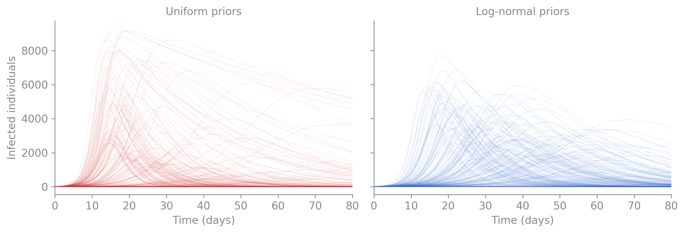
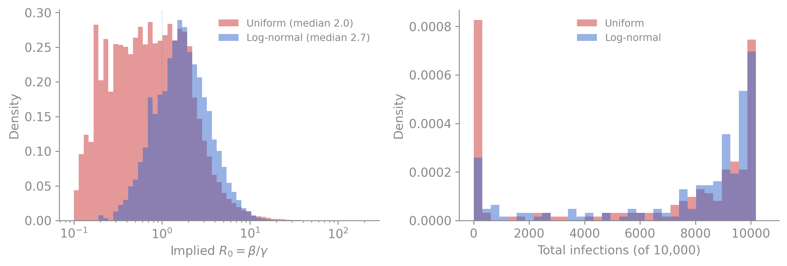
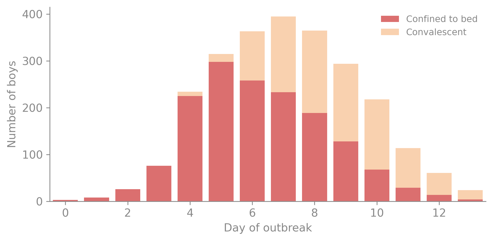
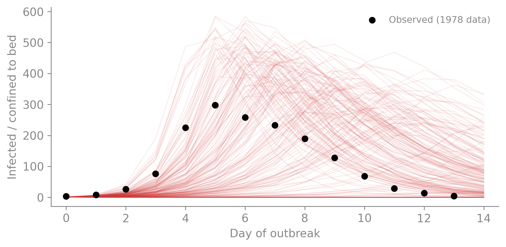
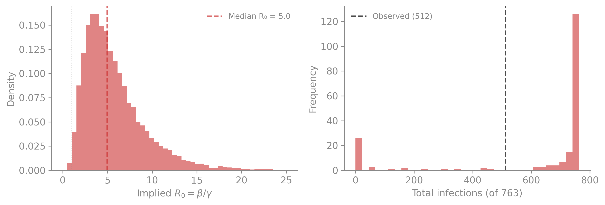
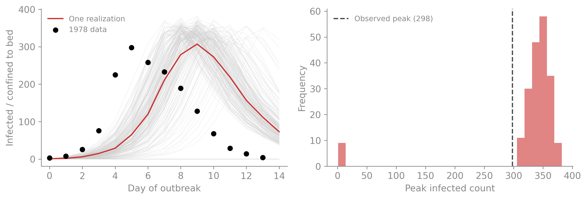
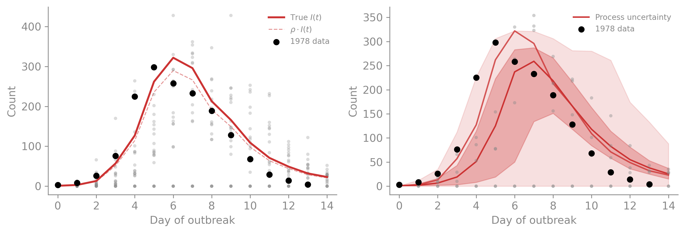

<!DOCTYPE html>
<html xmlns="http://www.w3.org/1999/xhtml" lang="en" xml:lang="en"><head>

<meta charset="utf-8">
<meta name="generator" content="quarto-1.9.37">

<meta name="viewport" content="width=device-width, initial-scale=1.0, user-scalable=yes">


<title>Uncertainty, Priors, and Simulation – camdl</title>
<style>
/* Default styles provided by pandoc.
** See https://pandoc.org/MANUAL.html#variables-for-html for config info.
*/
code{white-space: pre-wrap;}
span.smallcaps{font-variant: small-caps;}
div.columns{display: flex; gap: min(4vw, 1.5em);}
div.column{flex: auto; overflow-x: auto;}
div.hanging-indent{margin-left: 1.5em; text-indent: -1.5em;}
ul.task-list{list-style: none;}
ul.task-list li input[type="checkbox"] {
  width: 0.8em;
  margin: 0 0.8em 0.2em -1em; /* quarto-specific, see https://github.com/quarto-dev/quarto-cli/issues/4556 */ 
  vertical-align: middle;
}
/* CSS for syntax highlighting */
html { -webkit-text-size-adjust: 100%; }
pre > code.sourceCode { white-space: pre; position: relative; }
pre > code.sourceCode > span { display: inline-block; line-height: 1.25; }
pre > code.sourceCode > span:empty { height: 1.2em; }
.sourceCode { overflow: visible; }
code.sourceCode > span { color: inherit; text-decoration: inherit; }
div.sourceCode { margin: 1em 0; }
pre.sourceCode { margin: 0; }
@media screen {
div.sourceCode { overflow: auto; }
}
@media print {
pre > code.sourceCode { white-space: pre-wrap; }
pre > code.sourceCode > span { text-indent: -5em; padding-left: 5em; }
}
pre.numberSource code
  { counter-reset: source-line 0; }
pre.numberSource code > span
  { position: relative; left: -4em; counter-increment: source-line; }
pre.numberSource code > span > a:first-child::before
  { content: counter(source-line);
    position: relative; left: -1em; text-align: right; vertical-align: baseline;
    border: none; display: inline-block;
    -webkit-touch-callout: none; -webkit-user-select: none;
    -khtml-user-select: none; -moz-user-select: none;
    -ms-user-select: none; user-select: none;
    padding: 0 4px; width: 4em;
  }
pre.numberSource { margin-left: 3em;  padding-left: 4px; }
div.sourceCode
  {   }
@media screen {
pre > code.sourceCode > span > a:first-child::before { text-decoration: underline; }
}
</style>


<script src="https://cdn.jsdelivr.net/npm/jquery@3.5.1/dist/jquery.min.js" integrity="sha384-ZvpUoO/+PpLXR1lu4jmpXWu80pZlYUAfxl5NsBMWOEPSjUn/6Z/hRTt8+pR6L4N2" crossorigin="anonymous"></script><script src="../site_libs/quarto-nav/quarto-nav.js"></script>
<script src="../site_libs/quarto-nav/headroom.min.js"></script>
<script src="../site_libs/clipboard/clipboard.min.js"></script>
<script src="../site_libs/quarto-search/autocomplete.umd.js"></script>
<script src="../site_libs/quarto-search/fuse.min.js"></script>
<script src="../site_libs/quarto-search/quarto-search.js"></script>
<meta name="quarto:offset" content="../">
<link href="../guide/scenarios.html" rel="next">
<link href="../guide/getting-started.html" rel="prev">
<script src="../site_libs/quarto-html/quarto.js" type="module"></script>
<script src="../site_libs/quarto-html/tabsets/tabsets.js" type="module"></script>
<script src="../site_libs/quarto-html/popper.min.js"></script>
<script src="../site_libs/quarto-html/tippy.umd.min.js"></script>
<script src="../site_libs/quarto-html/anchor.min.js"></script>
<link href="../site_libs/quarto-html/tippy.css" rel="stylesheet">
<link href="../site_libs/quarto-html/quarto-syntax-highlighting-7f8f88aac4f3542376d5c11b86a4c14d.css" rel="stylesheet" class="quarto-color-scheme" id="quarto-text-highlighting-styles">
<link href="../site_libs/quarto-html/quarto-syntax-highlighting-dark-d0ae9245876894da5ac7e18953ecc5cc.css" rel="stylesheet" class="quarto-color-scheme quarto-color-alternate" id="quarto-text-highlighting-styles">
<link href="../site_libs/quarto-html/quarto-syntax-highlighting-7f8f88aac4f3542376d5c11b86a4c14d.css" rel="stylesheet" class="quarto-color-scheme-extra" id="quarto-text-highlighting-styles">
<script src="../site_libs/bootstrap/bootstrap.min.js"></script>
<link href="../site_libs/bootstrap/bootstrap-icons.css" rel="stylesheet">
<link href="../site_libs/bootstrap/bootstrap-b981944dac36b7fff9ce3ceeec90f8de.min.css" rel="stylesheet" append-hash="true" class="quarto-color-scheme" id="quarto-bootstrap" data-mode="light">
<link href="../site_libs/bootstrap/bootstrap-dark-73b7f00512812729446172a063b47ee0.min.css" rel="stylesheet" append-hash="true" class="quarto-color-scheme quarto-color-alternate" id="quarto-bootstrap" data-mode="dark">
<link href="../site_libs/bootstrap/bootstrap-b981944dac36b7fff9ce3ceeec90f8de.min.css" rel="stylesheet" append-hash="true" class="quarto-color-scheme-extra" id="quarto-bootstrap" data-mode="light">
<script id="quarto-search-options" type="application/json">{
  "location": "sidebar",
  "copy-button": false,
  "collapse-after": 3,
  "panel-placement": "start",
  "type": "textbox",
  "limit": 50,
  "keyboard-shortcut": [
    "f",
    "/",
    "s"
  ],
  "show-item-context": false,
  "language": {
    "search-no-results-text": "No results",
    "search-matching-documents-text": "matching documents",
    "search-copy-link-title": "Copy link to search",
    "search-hide-matches-text": "Hide additional matches",
    "search-more-match-text": "more match in this document",
    "search-more-matches-text": "more matches in this document",
    "search-clear-button-title": "Clear",
    "search-text-placeholder": "",
    "search-detached-cancel-button-title": "Cancel",
    "search-submit-button-title": "Submit",
    "search-label": "Search"
  }
}</script>
<script src="https://cdn.jsdelivr.net/npm/requirejs@2.3.6/require.min.js" integrity="sha384-c9c+LnTbwQ3aujuU7ULEPVvgLs+Fn6fJUvIGTsuu1ZcCf11fiEubah0ttpca4ntM sha384-6V1/AdqZRWk1KAlWbKBlGhN7VG4iE/yAZcO6NZPMF8od0vukrvr0tg4qY6NSrItx" crossorigin="anonymous"></script>

<script type="application/javascript">define('jquery', [],function() {return window.jQuery;})</script>

  <script src="https://cdnjs.cloudflare.com/polyfill/v3/polyfill.min.js?features=es6"></script>
  <script defer="" src="https://cdn.jsdelivr.net/npm/mathjax@3/es5/tex-chtml-full.js" type="text/javascript"></script>

<script type="text/javascript">
const typesetMath = (el) => {
  if (window.MathJax) {
    // MathJax Typeset
    window.MathJax.typeset([el]);
  } else if (window.katex) {
    // KaTeX Render
    var mathElements = el.getElementsByClassName("math");
    var macros = [];
    for (var i = 0; i < mathElements.length; i++) {
      var texText = mathElements[i].firstChild;
      if (mathElements[i].tagName == "SPAN" && texText && texText.data) {
        window.katex.render(texText.data, mathElements[i], {
          displayMode: mathElements[i].classList.contains('display'),
          throwOnError: false,
          macros: macros,
          fleqn: false
        });
      }
    }
  }
}
window.Quarto = {
  typesetMath
};
</script>

</head>

<body class="nav-sidebar floating quarto-light"><script id="quarto-html-before-body" type="application/javascript">
    const toggleBodyColorMode = (bsSheetEl) => {
      const mode = bsSheetEl.getAttribute("data-mode");
      const bodyEl = window.document.querySelector("body");
      if (mode === "dark") {
        bodyEl.classList.add("quarto-dark");
        bodyEl.classList.remove("quarto-light");
      } else {
        bodyEl.classList.add("quarto-light");
        bodyEl.classList.remove("quarto-dark");
      }
    }
    const toggleBodyColorPrimary = () => {
      const bsSheetEl = window.document.querySelector("link#quarto-bootstrap:not([rel=disabled-stylesheet])");
      if (bsSheetEl) {
        toggleBodyColorMode(bsSheetEl);
      }
    }
    const setColorSchemeToggle = (alternate) => {
      const toggles = window.document.querySelectorAll('.quarto-color-scheme-toggle');
      for (let i=0; i < toggles.length; i++) {
        const toggle = toggles[i];
        if (toggle) {
          if (alternate) {
            toggle.classList.add("alternate");
          } else {
            toggle.classList.remove("alternate");
          }
        }
      }
    };
    const toggleColorMode = (alternate) => {
      // Switch the stylesheets
      const primaryStylesheets = window.document.querySelectorAll('link.quarto-color-scheme:not(.quarto-color-alternate)');
      const alternateStylesheets = window.document.querySelectorAll('link.quarto-color-scheme.quarto-color-alternate');
      manageTransitions('#quarto-margin-sidebar .nav-link', false);
      if (alternate) {
        // note: dark is layered on light, we don't disable primary!
        enableStylesheet(alternateStylesheets);
        for (const sheetNode of alternateStylesheets) {
          if (sheetNode.id === "quarto-bootstrap") {
            toggleBodyColorMode(sheetNode);
          }
        }
      } else {
        disableStylesheet(alternateStylesheets);
        enableStylesheet(primaryStylesheets)
        toggleBodyColorPrimary();
      }
      manageTransitions('#quarto-margin-sidebar .nav-link', true);
      // Switch the toggles
      setColorSchemeToggle(alternate)
      // Hack to workaround the fact that safari doesn't
      // properly recolor the scrollbar when toggling (#1455)
      if (navigator.userAgent.indexOf('Safari') > 0 && navigator.userAgent.indexOf('Chrome') == -1) {
        manageTransitions("body", false);
        window.scrollTo(0, 1);
        setTimeout(() => {
          window.scrollTo(0, 0);
          manageTransitions("body", true);
        }, 40);
      }
    }
    const disableStylesheet = (stylesheets) => {
      for (let i=0; i < stylesheets.length; i++) {
        const stylesheet = stylesheets[i];
        stylesheet.rel = 'disabled-stylesheet';
      }
    }
    const enableStylesheet = (stylesheets) => {
      for (let i=0; i < stylesheets.length; i++) {
        const stylesheet = stylesheets[i];
        if(stylesheet.rel !== 'stylesheet') { // for Chrome, which will still FOUC without this check
          stylesheet.rel = 'stylesheet';
        }
      }
    }
    const manageTransitions = (selector, allowTransitions) => {
      const els = window.document.querySelectorAll(selector);
      for (let i=0; i < els.length; i++) {
        const el = els[i];
        if (allowTransitions) {
          el.classList.remove('notransition');
        } else {
          el.classList.add('notransition');
        }
      }
    }
    const isFileUrl = () => {
      return window.location.protocol === 'file:';
    }
    const hasAlternateSentinel = () => {
      let styleSentinel = getColorSchemeSentinel();
      if (styleSentinel !== null) {
        return styleSentinel === "alternate";
      } else {
        return false;
      }
    }
    const setStyleSentinel = (alternate) => {
      const value = alternate ? "alternate" : "default";
      if (!isFileUrl()) {
        window.localStorage.setItem("quarto-color-scheme", value);
      } else {
        localAlternateSentinel = value;
      }
    }
    const getColorSchemeSentinel = () => {
      if (!isFileUrl()) {
        const storageValue = window.localStorage.getItem("quarto-color-scheme");
        return storageValue != null ? storageValue : localAlternateSentinel;
      } else {
        return localAlternateSentinel;
      }
    }
    const toggleGiscusIfUsed = (isAlternate, darkModeDefault) => {
      const baseTheme = document.querySelector('#giscus-base-theme')?.value ?? 'light';
      const alternateTheme = document.querySelector('#giscus-alt-theme')?.value ?? 'dark';
      let newTheme = '';
      if(authorPrefersDark) {
        newTheme = isAlternate ? baseTheme : alternateTheme;
      } else {
        newTheme = isAlternate ? alternateTheme : baseTheme;
      }
      const changeGiscusTheme = () => {
        // From: https://github.com/giscus/giscus/issues/336
        const sendMessage = (message) => {
          const iframe = document.querySelector('iframe.giscus-frame');
          if (!iframe) return;
          iframe.contentWindow.postMessage({ giscus: message }, 'https://giscus.app');
        }
        sendMessage({
          setConfig: {
            theme: newTheme
          }
        });
      }
      const isGiscussLoaded = window.document.querySelector('iframe.giscus-frame') !== null;
      if (isGiscussLoaded) {
        changeGiscusTheme();
      }
    };
    const authorPrefersDark = false;
    const darkModeDefault = authorPrefersDark;
      document.querySelector('link#quarto-text-highlighting-styles.quarto-color-scheme-extra').rel = 'disabled-stylesheet';
      document.querySelector('link#quarto-bootstrap.quarto-color-scheme-extra').rel = 'disabled-stylesheet';
    let localAlternateSentinel = darkModeDefault ? 'alternate' : 'default';
    // Dark / light mode switch
    window.quartoToggleColorScheme = () => {
      // Read the current dark / light value
      let toAlternate = !hasAlternateSentinel();
      toggleColorMode(toAlternate);
      setStyleSentinel(toAlternate);
      toggleGiscusIfUsed(toAlternate, darkModeDefault);
      window.dispatchEvent(new Event('resize'));
    };
    // Switch to dark mode if need be
    if (hasAlternateSentinel()) {
      toggleColorMode(true);
    } else {
      toggleColorMode(false);
    }
  </script>

<div id="quarto-search-results"></div>
  <header id="quarto-header" class="headroom fixed-top">
  <nav class="quarto-secondary-nav">
    <div class="container-fluid d-flex">
      <button type="button" class="quarto-btn-toggle btn" data-bs-toggle="collapse" role="button" data-bs-target=".quarto-sidebar-collapse-item" aria-controls="quarto-sidebar" aria-expanded="false" aria-label="Toggle sidebar navigation" onclick="if (window.quartoToggleHeadroom) { window.quartoToggleHeadroom(); }">
        <i class="bi bi-layout-text-sidebar-reverse"></i>
      </button>
        <nav class="quarto-page-breadcrumbs" aria-label="breadcrumb"><ol class="breadcrumb"><li class="breadcrumb-item"><a href="../guide/getting-started.html">Getting Started</a></li><li class="breadcrumb-item"><a href="../guide/experiments.html"><span class="chapter-title">Uncertainty, Priors, and Simulation</span></a></li></ol></nav>
        <a class="flex-grow-1" role="navigation" data-bs-toggle="collapse" data-bs-target=".quarto-sidebar-collapse-item" aria-controls="quarto-sidebar" aria-expanded="false" aria-label="Toggle sidebar navigation" onclick="if (window.quartoToggleHeadroom) { window.quartoToggleHeadroom(); }">      
        </a>
      <button type="button" class="btn quarto-search-button" aria-label="Search" onclick="window.quartoOpenSearch();">
        <i class="bi bi-search"></i>
      </button>
    </div>
  </nav>
</header>
<!-- content -->
<div id="quarto-content" class="quarto-container page-columns page-rows-contents page-layout-article">
<!-- sidebar -->
  <nav id="quarto-sidebar" class="sidebar collapse collapse-horizontal quarto-sidebar-collapse-item sidebar-navigation floating overflow-auto">
    <div class="pt-lg-2 mt-2 text-left sidebar-header">
    <div class="sidebar-title mb-0 py-0">
      <a href="../">camdl</a> 
        <div class="sidebar-tools-main">
    <a href="https://github.com/vsbuffalo/camdl-book" title="Source Code" class="quarto-navigation-tool px-1" aria-label="Source Code"><i class="bi bi-github"></i></a>
  <a href="" class="quarto-color-scheme-toggle quarto-navigation-tool  px-1" onclick="window.quartoToggleColorScheme(); return false;" title="Toggle dark mode"><i class="bi"></i></a>
</div>
    </div>
      </div>
        <div class="mt-2 flex-shrink-0 align-items-center">
        <div class="sidebar-search">
        <div id="quarto-search" class="" title="Search"></div>
        </div>
        </div>
    <div class="sidebar-menu-container"> 
    <ul class="list-unstyled mt-1">
        <li class="sidebar-item">
  <div class="sidebar-item-container"> 
  <a href="../index.html" class="sidebar-item-text sidebar-link"><span class="chapter-title">What is camdl?</span></a>
  </div>
</li>
        <li class="sidebar-item sidebar-item-section">
      <div class="sidebar-item-container"> 
            <a class="sidebar-item-text sidebar-link text-start" data-bs-toggle="collapse" data-bs-target="#quarto-sidebar-section-1" role="navigation" aria-expanded="true">
 <span class="menu-text">Getting Started</span></a>
          <a class="sidebar-item-toggle text-start" data-bs-toggle="collapse" data-bs-target="#quarto-sidebar-section-1" role="navigation" aria-expanded="true" aria-label="Toggle section">
            <i class="bi bi-chevron-right ms-2"></i>
          </a> 
      </div>
      <ul id="quarto-sidebar-section-1" class="collapse list-unstyled sidebar-section depth1 show">  
          <li class="sidebar-item">
  <div class="sidebar-item-container"> 
  <a href="../guide/getting-started.html" class="sidebar-item-text sidebar-link"><span class="chapter-title">Building an SIR Model</span></a>
  </div>
</li>
          <li class="sidebar-item">
  <div class="sidebar-item-container"> 
  <a href="../guide/experiments.html" class="sidebar-item-text sidebar-link active"><span class="chapter-title">Uncertainty, Priors, and Simulation</span></a>
  </div>
</li>
          <li class="sidebar-item">
  <div class="sidebar-item-container"> 
  <a href="../guide/scenarios.html" class="sidebar-item-text sidebar-link"><span class="chapter-title">Scenarios, Interventions, and Sweeps</span></a>
  </div>
</li>
          <li class="sidebar-item">
  <div class="sidebar-item-container"> 
  <a href="../guide/dimensions.html" class="sidebar-item-text sidebar-link"><span class="chapter-title">Dimensions and Stratification</span></a>
  </div>
</li>
          <li class="sidebar-item">
  <div class="sidebar-item-container"> 
  <a href="../guide/fitting-data/report.html" class="sidebar-item-text sidebar-link"><span class="chapter-title">Fitting to Data</span></a>
  </div>
</li>
          <li class="sidebar-item">
  <div class="sidebar-item-container"> 
  <a href="../guide/fitting-data/model_comparison.html" class="sidebar-item-text sidebar-link"><span class="chapter-title">Model Comparison</span></a>
  </div>
</li>
      </ul>
  </li>
        <li class="sidebar-item sidebar-item-section">
      <div class="sidebar-item-container"> 
            <a class="sidebar-item-text sidebar-link text-start" data-bs-toggle="collapse" data-bs-target="#quarto-sidebar-section-2" role="navigation" aria-expanded="true">
 <span class="menu-text">Inference</span></a>
          <a class="sidebar-item-toggle text-start" data-bs-toggle="collapse" data-bs-target="#quarto-sidebar-section-2" role="navigation" aria-expanded="true" aria-label="Toggle section">
            <i class="bi bi-chevron-right ms-2"></i>
          </a> 
      </div>
      <ul id="quarto-sidebar-section-2" class="collapse list-unstyled sidebar-section depth1 show">  
          <li class="sidebar-item">
  <div class="sidebar-item-container"> 
  <a href="../inference/likelihood.html" class="sidebar-item-text sidebar-link"><span class="chapter-title">Likelihood and the Particle Filter</span></a>
  </div>
</li>
          <li class="sidebar-item">
  <div class="sidebar-item-container"> 
  <a href="../inference/algorithms.html" class="sidebar-item-text sidebar-link"><span class="chapter-title">Algorithms: IF2, PGAS, and PMMH</span></a>
  </div>
</li>
      </ul>
  </li>
        <li class="sidebar-item sidebar-item-section">
      <div class="sidebar-item-container"> 
            <a class="sidebar-item-text sidebar-link text-start" data-bs-toggle="collapse" data-bs-target="#quarto-sidebar-section-3" role="navigation" aria-expanded="true">
 <span class="menu-text">Vignettes</span></a>
          <a class="sidebar-item-toggle text-start" data-bs-toggle="collapse" data-bs-target="#quarto-sidebar-section-3" role="navigation" aria-expanded="true" aria-label="Toggle section">
            <i class="bi bi-chevron-right ms-2"></i>
          </a> 
      </div>
      <ul id="quarto-sidebar-section-3" class="collapse list-unstyled sidebar-section depth1 show">  
      </ul>
  </li>
        <li class="sidebar-item sidebar-item-section">
      <div class="sidebar-item-container"> 
            <a class="sidebar-item-text sidebar-link text-start" data-bs-toggle="collapse" data-bs-target="#quarto-sidebar-section-4" role="navigation" aria-expanded="true">
 <span class="menu-text">Reference</span></a>
          <a class="sidebar-item-toggle text-start" data-bs-toggle="collapse" data-bs-target="#quarto-sidebar-section-4" role="navigation" aria-expanded="true" aria-label="Toggle section">
            <i class="bi bi-chevron-right ms-2"></i>
          </a> 
      </div>
      <ul id="quarto-sidebar-section-4" class="collapse list-unstyled sidebar-section depth1 show">  
          <li class="sidebar-item">
  <div class="sidebar-item-container"> 
  <a href="../language/spec.html" class="sidebar-item-text sidebar-link"><span class="chapter-title">Language Specification</span></a>
  </div>
</li>
          <li class="sidebar-item">
  <div class="sidebar-item-container"> 
  <a href="../language/data-spec.html" class="sidebar-item-text sidebar-link"><span class="chapter-title">Data Model</span></a>
  </div>
</li>
          <li class="sidebar-item">
  <div class="sidebar-item-container"> 
  <a href="../reference/features.html" class="sidebar-item-text sidebar-link"><span class="chapter-title">User Features</span></a>
  </div>
</li>
          <li class="sidebar-item">
  <div class="sidebar-item-container"> 
  <a href="../reference/inference-spec.html" class="sidebar-item-text sidebar-link"><span class="chapter-title">Inference Specification</span></a>
  </div>
</li>
          <li class="sidebar-item">
  <div class="sidebar-item-container"> 
  <a href="../reference/ir-spec.html" class="sidebar-item-text sidebar-link"><span class="chapter-title">IR Specification</span></a>
  </div>
</li>
          <li class="sidebar-item">
  <div class="sidebar-item-container"> 
  <a href="../reference/runtimes.html" class="sidebar-item-text sidebar-link"><span class="chapter-title">Simulation Backends</span></a>
  </div>
</li>
          <li class="sidebar-item">
  <div class="sidebar-item-container"> 
  <a href="../reference/design.html" class="sidebar-item-text sidebar-link"><span class="chapter-title">Design Philosophy</span></a>
  </div>
</li>
      </ul>
  </li>
    </ul>
    </div>
</nav>
<div id="quarto-sidebar-glass" class="quarto-sidebar-collapse-item" data-bs-toggle="collapse" data-bs-target=".quarto-sidebar-collapse-item"></div>
<!-- margin-sidebar -->
    <div id="quarto-margin-sidebar" class="sidebar margin-sidebar">
        <nav id="TOC" role="doc-toc" class="toc-active">
    <h2 id="toc-title">Table of contents</h2>
   
  <ul>
  <li><a href="#priors-simulating-from-beliefs-alone" id="toc-priors-simulating-from-beliefs-alone" class="nav-link active" data-scroll-target="#priors-simulating-from-beliefs-alone">Priors — simulating from beliefs alone</a>
  <ul class="collapse">
  <li><a href="#prior-predictive-checks" id="toc-prior-predictive-checks" class="nav-link" data-scroll-target="#prior-predictive-checks">Prior predictive checks</a></li>
  <li><a href="#from-toy-model-to-real-data" id="toc-from-toy-model-to-real-data" class="nav-link" data-scroll-target="#from-toy-model-to-real-data">From toy model to real data</a></li>
  </ul></li>
  <li><a href="#process-uncertainty-why-one-trajectory-is-never-enough" id="toc-process-uncertainty-why-one-trajectory-is-never-enough" class="nav-link" data-scroll-target="#process-uncertainty-why-one-trajectory-is-never-enough">Process uncertainty — why one trajectory is never enough</a></li>
  <li><a href="#the-observation-process-what-the-data-actually-looks-like" id="toc-the-observation-process-what-the-data-actually-looks-like" class="nav-link" data-scroll-target="#the-observation-process-what-the-data-actually-looks-like">The observation process — what the data actually looks like</a></li>
  <li><a href="#whats-next" id="toc-whats-next" class="nav-link" data-scroll-target="#whats-next">What’s next</a></li>
  </ul>
<div class="toc-actions"><ul><li><a href="https://github.com/vsbuffalo/camdl-book/edit/main/guide/experiments.qmd" class="toc-action"><i class="bi bi-github"></i>Edit this page</a></li></ul></div></nav>
    </div>
<!-- main -->
<main class="content" id="quarto-document-content">


<header id="title-block-header" class="quarto-title-block default"><nav class="quarto-page-breadcrumbs quarto-title-breadcrumbs d-none d-lg-block" aria-label="breadcrumb"><ol class="breadcrumb"><li class="breadcrumb-item"><a href="../guide/getting-started.html">Getting Started</a></li><li class="breadcrumb-item"><a href="../guide/experiments.html"><span class="chapter-title">Uncertainty, Priors, and Simulation</span></a></li></ol></nav>
<div class="quarto-title">
<h1 class="title"><span class="chapter-title">Uncertainty, Priors, and Simulation</span></h1>
</div>


<div class="quarto-title-meta">

    
  
    
  </div>
  


</header>


<p>Before we fit a model to data, we need to understand what it does. Model building is not a pipeline where you write the equations, press “fit,” and read off the answer. It is a <em>dialogue</em> between you, the model, the data, and the decisions the model informs — a bargaining process over model complexity, the data available to constrain it, and the consequences of different intervention strategies. At each stage, you’re asking a specific question and using simulation to answer it.</p>
<p>Three kinds of uncertainty run through this entire workflow:</p>
<ul>
<li><p><strong>Parameter uncertainty</strong> — we don’t know the “true” parameters. (The scare quotes are deliberate: epidemiological parameters are effective summaries of complex processes, not fixed properties of nature.) The transmission parameter <span class="math inline">\(\beta\)</span> might be 0.3 or 0.5, and the epidemic looks very different in each case. This uncertainty shrinks when we fit the model to data, but never disappears entirely.</p></li>
<li><p><strong>Process uncertainty</strong> — even if we knew every parameter exactly, the epidemic is a stochastic process. Run the same model with the same parameters twice and you get different trajectories. <em>Demographic</em> stochasticity (which susceptibles happen to meet which infecteds) is the main contributor at small population sizes; on top of that, <em>environmental</em> fluctuation in the transmission rate (school schedules, weather, gatherings) pushes the dynamics around day-to-day. Both are intrinsic to the system and cannot be reduced by collecting more data — only by modeling them more faithfully.</p></li>
<li><p><strong>Observation uncertainty</strong> — even with parameters and the underlying trajectory both fixed, what reaches us is incomplete and noisy. Surveillance catches a fraction of cases; reporting is overdispersed and delayed; serosurveys come with sample-size sampling error. The measurement layer has its own variance, and disentangling it from the process layer — telling “noisy data from a smooth epidemic” apart from “clean data from a noisy epidemic” — is one of the central jobs of inference.</p></li>
</ul>
<p>A single simulation trajectory ignores all three. When a decision-maker asks “should we vaccinate?” the answer depends on the <em>distribution</em> of outcomes under all three sources of uncertainty, not on one arbitrary simulated future. Carrying every kind of uncertainty forward — from model specification through simulation to the eventual policy comparison — is what separates rigorous analysis from storytelling with curves.</p>
<p>The example files for this chapter are in <a href="https://github.com/vsbuffalo/camdl-book/tree/main/guide/boarding-school"><code>guide/boarding-school/</code></a>.</p>
<section id="priors-simulating-from-beliefs-alone" class="level2">
<h2 class="anchored" data-anchor-id="priors-simulating-from-beliefs-alone">Priors — simulating from beliefs alone</h2>
<p>We don’t need data to start learning about our model; in fact we <em>should not</em> bring data into the picture until we’ve interrogated and explored how the model interacts with our current or <em>prior</em> beliefs. The first step is to encode our prior beliefs about the parameters directly in the model file. It may seem strange to bring our beliefs explicitly into a scientific model, in light of the notion that science is “objective” and “data-driven.” But the reality is that (1) every model is built on a foundation of many assumptions and beliefs, and (2) we implicitly encode “flat” or “uniform” priors for model parameters when we simply state the parameter bounds, or state parameters live on a logscale. These implicit priors can seem neutral and objective, but are actually quite strong, and can have a large influence on model inference and the conclusions we draw from it.</p>
<div class="callout callout-style-default callout-note callout-titled">
<div class="callout-header d-flex align-content-center" data-bs-toggle="collapse" data-bs-target=".callout-1-contents" aria-controls="callout-1" aria-expanded="true" aria-label="Toggle callout">
<div class="callout-icon-container">
<i class="callout-icon"></i>
</div>
<div class="callout-title-container flex-fill">
<span class="screen-reader-only">Note</span>“Flat” priors are not uninformative
</div>
<div class="callout-btn-toggle d-inline-block border-0 py-1 ps-1 pe-0 float-end"><i class="callout-toggle"></i></div>
</div>
<div id="callout-1" class="callout-1-contents callout-collapse collapse show">
<div class="callout-body-container callout-body">
<p>A long tradition in Bayesian statistics has shown that uniform or “vague” priors carry more information than they appear to. <a href="https://global.oup.com/academic/product/theory-of-probability-9780198503682">Jeffreys (1961)</a> first demonstrated that flat priors are not invariant under reparameterization — a uniform prior on <span class="math inline">\(\beta\)</span> is not uniform on <span class="math inline">\(\log \beta\)</span>, so the choice of parameterization smuggles in information. <a href="https://doi.org/10.1017/CBO9780511790423">Jaynes (2003)</a> developed this further, arguing that maximum entropy is the principled baseline precisely because uniform priors on arbitrary scales are not “uninformative.” <a href="https://sites.stat.columbia.edu/gelman/research/published/taumain.pdf">Gelman (2006)</a> showed that common “vague” prior specifications (like <span class="math inline">\(\text{InverseGamma}(\epsilon, \epsilon)\)</span> for variance parameters) are in fact highly informative, and <a href="https://doi.org/10.3390/e19100555">Gelman, Simpson, and Betancourt (2017)</a> sharpened the point: <strong>“informative” is a property of the pair (prior, likelihood), not of the prior alone.</strong><a href="#fn1" class="footnote-ref" id="fnref1" role="doc-noteref"><sup>1</sup></a> A distribution that looks flat in isolation can be a strong claim under one likelihood and genuinely diffuse under another — and along weakly-identified directions in the likelihood (the <span class="math inline">\(R_0\)</span>–<span class="math inline">\(1/\gamma\)</span> ridge, the reporting-fraction vs.&nbsp;process-noise trade-off common to overdispersed fits), the prior never washes out no matter how much data you collect.</p>
<p>Under an identified model with sufficient data, the prior’s influence vanishes — the posterior concentrates around the maximum likelihood estimate (<a href="https://en.wikipedia.org/wiki/Bernstein%E2%80%93von_Mises_theorem">Bernstein–von Mises theorem</a>). So this isn’t about priors dominating the analysis forever. It’s about the regime where priors matter most: small data (early in an outbreak, a novel pathogen, limited surveillance) and structurally non-identified models (nearly every interesting compartmental fit). In those settings, which are exactly when decisions are most urgent, encoding domain knowledge through thoughtful priors can mean the difference between useful model-informed decisions and misleading ones.</p>
</div>
</div>
</div>
<p>Recall the parameters block from <a href="../guide/getting-started.html">Building an SIR Model</a>; these had no priors — just types and bounds. Yet these encode substantive “flat” beliefs: <code>beta</code> is a rate between 0.05 and 1.0, <code>gamma</code> is a rate between 0.01 and 0.5. These bounds rule out certain epidemics. But bounds are coarse; they say “not impossible,” not “what I actually believe”. Usually we have more specific beliefs about parameters values, just based on the context of the infectious disease and transmission processes. Putting this prior information into the model file makes it visible and explicit. But more importantly, it <em>concentrates</em> our beliefs into a smaller region of plausible parameter space, which greatly improves how well inference works.</p>
<p>camdl lets you attach a prior distribution directly to the parameter declaration using the <code>~</code> operator — standard “distributed as” notation from Bayesian modeling:</p>
<div class="code-copy-outer-scaffold"><div class="sourceCode" id="cb1"><pre class="sourceCode camdl code-with-copy"><code class="sourceCode camdl"><span id="cb1-1"><a href="#cb1-1" aria-hidden="true" tabindex="-1"></a><span class="kw">parameters</span> {</span>
<span id="cb1-2"><a href="#cb1-2" aria-hidden="true" tabindex="-1"></a>  beta  : <span class="dt">rate</span>         <span class="cf">in</span> [<span class="dv">0.05</span>, <span class="dv">1.0</span>]  ~ log_normal(mu = -<span class="dv">1.0</span>, sigma = <span class="dv">0.5</span>)</span>
<span id="cb1-3"><a href="#cb1-3" aria-hidden="true" tabindex="-1"></a>  gamma : <span class="dt">rate</span>         <span class="cf">in</span> [<span class="dv">0.01</span>, <span class="dv">0.5</span>]  ~ half_normal(sigma = <span class="dv">0.5</span>)</span>
<span id="cb1-4"><a href="#cb1-4" aria-hidden="true" tabindex="-1"></a>  rho   : <span class="dt">probability</span>  <span class="cf">in</span> [<span class="dv">0.1</span>, <span class="dv">0.9</span>]   ~ beta(alpha = <span class="dv">2.0</span>, beta = <span class="dv">5.0</span>)</span>
<span id="cb1-5"><a href="#cb1-5" aria-hidden="true" tabindex="-1"></a>  k     : <span class="dt">positive</span>     <span class="cf">in</span> [<span class="dv">1.0</span>, <span class="dv">100.0</span>] ~ half_normal(sigma = <span class="dv">10.0</span>)</span>
<span id="cb1-6"><a href="#cb1-6" aria-hidden="true" tabindex="-1"></a>  N0    : <span class="dt">count</span>                         <span class="co"># no prior — fixed externally</span></span>
<span id="cb1-7"><a href="#cb1-7" aria-hidden="true" tabindex="-1"></a>  I0    : <span class="dt">count</span>                         <span class="co"># no prior — fixed externally</span></span>
<span id="cb1-8"><a href="#cb1-8" aria-hidden="true" tabindex="-1"></a>}</span></code></pre></div><button title="Copy to Clipboard" class="code-copy-button"><i class="bi"></i></button></div>
<p>Each line now reads as a complete belief statement: <code>beta</code> is a rate, plausible between 0.05 and 1.0, with a log-normal prior centered around <span class="math inline">\(e^{-1} \approx
0.37\)</span>. The type, bounds, and prior are all visible at the declaration — a reader doesn’t need to look anywhere else to understand what the modeler believes about this parameter.</p>
<p>In camdl, model priors always optional. Parameters without priors are structural constants we may treat as known or fixed (population size, initial seed count) supplied via <code>--params</code> (and held fixed during inference). Models without any priors are valid for simulation, but they are doing so either at fixed parameter values or with implicit “flat” priors, which can lead to misleading inference and predictions when data is scarce.</p>
<div class="callout callout-style-default callout-note callout-titled">
<div class="callout-header d-flex align-content-center" data-bs-toggle="collapse" data-bs-target=".callout-2-contents" aria-controls="callout-2" aria-expanded="true" aria-label="Toggle callout">
<div class="callout-icon-container">
<i class="callout-icon"></i>
</div>
<div class="callout-title-container flex-fill">
<span class="screen-reader-only">Note</span>Supported prior distributions
</div>
<div class="callout-btn-toggle d-inline-block border-0 py-1 ps-1 pe-0 float-end"><i class="callout-toggle"></i></div>
</div>
<div id="callout-2" class="callout-2-contents callout-collapse collapse show">
<div class="callout-body-container callout-body">
<table class="caption-top table">
<colgroup>
<col style="width: 19%">
<col style="width: 43%">
<col style="width: 37%">
</colgroup>
<thead>
<tr class="header">
<th>Distribution</th>
<th>Syntax</th>
<th>Notes</th>
</tr>
</thead>
<tbody>
<tr class="odd">
<td><code>log_normal</code></td>
<td><code>~ log_normal(mu = M, sigma = S)</code></td>
<td>mu, sigma on the <strong>log</strong> scale</td>
</tr>
<tr class="even">
<td><code>normal</code></td>
<td><code>~ normal(mu = M, sigma = S)</code></td>
<td>mean, standard deviation</td>
</tr>
<tr class="odd">
<td><code>half_normal</code></td>
<td><code>~ half_normal(sigma = S)</code></td>
<td>folded normal, support <span class="math inline">\([0,\infty)\)</span></td>
</tr>
<tr class="even">
<td><code>beta</code></td>
<td><code>~ beta(alpha = A, beta = B)</code></td>
<td>shape parameters</td>
</tr>
<tr class="odd">
<td><code>gamma</code></td>
<td><code>~ gamma(shape = K, rate = R)</code></td>
<td>rate parameterization (not scale)</td>
</tr>
<tr class="even">
<td><code>exponential</code></td>
<td><code>~ exponential(rate = R)</code></td>
<td>rate = 1/mean</td>
</tr>
<tr class="odd">
<td><code>uniform</code></td>
<td><code>~ uniform(lower = L, upper = U)</code></td>
<td>explicit uniform</td>
</tr>
</tbody>
</table>
<p>All arguments are named (keyword), never positional. Arguments must be compile-time constants — arithmetic like <code>mu = log(0.3)</code> is fine.</p>
</div>
</div>
</div>
<section id="prior-predictive-checks" class="level3">
<h3 class="anchored" data-anchor-id="prior-predictive-checks">Prior predictive checks</h3>
<p>Encoding priors in the model enables the first step of the model building dialogue: carrying our prior, highly-uncertain beliefs forward into simulation <em>without any data</em>. A <strong>prior predictive check</strong> draws parameter values from the prior, simulates the model at each draw, and examines the resulting distribution of outcomes. If the prior predictive distribution includes absurd epidemics — infecting the entire population in three days, or producing no infections at all — that’s an early warning that the model is misspecified or our beliefs need revision. This check is only possible if we encode our beliefs as priors in the model; without them, there is nothing to simulate from.</p>
<p>To see this concretely, consider our toy SIR with uniform priors — the “I have no idea” starting point:</p>
<div class="code-copy-outer-scaffold"><div class="sourceCode" id="cb2"><pre class="sourceCode camdl code-with-copy"><code class="sourceCode camdl"><span id="cb2-1"><a href="#cb2-1" aria-hidden="true" tabindex="-1"></a><span class="kw">parameters</span> {</span>
<span id="cb2-2"><a href="#cb2-2" aria-hidden="true" tabindex="-1"></a>  beta  : <span class="dt">rate</span>  <span class="cf">in</span> [<span class="dv">0.05</span>, <span class="dv">1.0</span>]  ~ uniform(lower = <span class="dv">0.05</span>, upper = <span class="dv">1.0</span>)</span>
<span id="cb2-3"><a href="#cb2-3" aria-hidden="true" tabindex="-1"></a>  gamma : <span class="dt">rate</span>  <span class="cf">in</span> [<span class="dv">0.01</span>, <span class="dv">0.5</span>]  ~ uniform(lower = <span class="dv">0.01</span>, upper = <span class="dv">0.5</span>)</span>
<span id="cb2-4"><a href="#cb2-4" aria-hidden="true" tabindex="-1"></a>}</span></code></pre></div><button title="Copy to Clipboard" class="code-copy-button"><i class="bi"></i></button></div>
<div id="88005a9c" class="cell" data-execution_count="2">
<div class="cell-output cell-output-display">
<details class="cli-run"><summary><code>$ camdl simulate sir_uniform_priors.camdl --params params.toml --seed 42 --draws prior -n 200 --scenario baseline</code></summary><pre><code>generated 200 prior draws from model IR (4 sampled + 2 fixed params)
200 draws = 200 runs
[2026-04-28T04:55:18Z INFO  camdl::util] --param beta=0.9855634418207584 overrides previous value 0.4
[2026-04-28T04:55:18Z INFO  camdl::util] --param gamma=0.46586405867394864 overrides previous value 0.15
[2026-04-28T04:55:18Z INFO  camdl::util] --param rho=0.17313856367029637 overrides previous value 0.6
[2026-04-28T04:55:18Z INFO  camdl::util] --param k=75.08016402392671 overrides previous value 10
[2026-04-28T04:55:18Z INFO  camdl::util] --param beta=0.7283957686960801 overrides previous value 0.4
[2026-04-28T04:55:18Z INFO  camdl::util] --param gamma=0.22725070290166982 overrides previous value 0.15
[2026-04-28T04:55:18Z INFO  camdl::util] --param rho=0.3853022479577144 overrides previous value 0.6
[2026-04-28T04:55:18Z INFO  camdl::util] --param k=4.108185718275562 overrides previous value 10
[2026-04-28T04:55:18Z INFO  camdl::util] --param beta=0.09801579618978414 overrides previous value 0.4
[2026-04-28T04:55:18Z INFO  camdl::util] --param gamma=0.21344305129250069 overrides previous value 0.15
[2026-04-28T04:55:18Z INFO  camdl::util] --param rho=0.7779273834317578 overrides previous value 0.6
[2026-04-28T04:55:18Z INFO  camdl::util] --param k=37.76887702160843 overrides previous value 10
[2026-04-28T04:55:18Z INFO  camdl::util] --param beta=0.773862663335162 overrides previous value 0.4
[2026-04-28T04:55:18Z INFO  camdl::util] --param gamma=0.47223996017117237 overrides previous value 0.15
[2026-04-28T04:55:18Z INFO  camdl::util] --param rho=0.40476440999565044 overrides previous value 0.6
[2026-04-28T04:55:18Z INFO  camdl::util] --param k=78.1613015261817 overrides previous value 10
[2026-04-28T04:55:18Z INFO  camdl::util] --param beta=0.7611229120713403 overrides previous value 0.4
[2026-04-28T04:55:18Z INFO  camdl::util] --param gamma=0.284626221360013 overrides previous value 0.15
[2026-04-28T04:55:18Z INFO  camdl::util] --param rho=0.4474195483053557 overrides previous value 0.6
[2026-04-28T04:55:18Z INFO  camdl::util] --param k=69.43775291267198 overrides previous value 10
[2026-04-28T04:55:18Z INFO  camdl::util] --param beta=0.060327236430966304 overrides previous value 0.4
[2026-04-28T04:55:18Z INFO  camdl::util] --param gamma=0.0929007505292362 overrides previous value 0.15
[2026-04-28T04:55:18Z INFO  camdl::util] --param rho=0.7586146359245224 overrides previous value 0.6
[2026-04-28T04:55:18Z INFO  camdl::util] --param k=57.096056477836015 overrides previous value 10
[2026-04-28T04:55:18Z INFO  camdl::util] --param beta=0.89222141180304 overrides previous value 0.4
[2026-04-28T04:55:18Z INFO  camdl::util] --param gamma=0.07949318262790091 overrides previous value 0.15
[2026-04-28T04:55:18Z INFO  camdl::util] --param rho=0.2437060759122357 overrides previous value 0.6
[2026-04-28T04:55:18Z INFO  camdl::util] --param k=35.3450153364259 overrides previous value 10
[2026-04-28T04:55:18Z INFO  camdl::util] --param beta=0.2645213858924595 overrides previous value 0.4
[2026-04-28T04:55:18Z INFO  camdl::util] --param gamma=0.09121655615058842 overrides previous value 0.15
[2026-04-28T04:55:18Z INFO  camdl::util] --param rho=0.2097758255117218 overrides previous value 0.6
[2026-04-28T04:55:18Z INFO  camdl::util] --param k=27.679442046774927 overrides previous value 10
[2026-04-28T04:55:18Z INFO  camdl::util] --param beta=0.8251081339795407 overrides previous value 0.4
[2026-04-28T04:55:18Z INFO  camdl::util] --param gamma=0.18039881210371533 overrides previous value 0.15
[2026-04-28T04:55:18Z INFO  camdl::util] --param rho=0.2978866004553249 overrides previous value 0.6
[2026-04-28T04:55:18Z INFO  camdl::util] --param k=37.538068047746464 overrides previous value 10
[2026-04-28T04:55:18Z INFO  camdl::util] --param beta=0.2979946336428111 overrides previous value 0.4
[2026-04-28T04:55:18Z INFO  camdl::util] --param gamma=0.34700519056507123 overrides previous value 0.15
[2026-04-28T04:55:18Z INFO  camdl::util] --param rho=0.27394198150799787 overrides previous value 0.6
[2026-04-28T04:55:18Z INFO  camdl::util] --param k=17.865173614845094 overrides previous value 10
[2026-04-28T04:55:18Z INFO  camdl::util] --param beta=0.7931754801308403 overrides previous value 0.4
[2026-04-28T04:55:18Z INFO  camdl::util] --param gamma=0.18668156262271074 overrides previous value 0.15
[2026-04-28T04:55:18Z INFO  camdl::util] --param rho=0.8821124511484194 overrides previous value 0.6
[2026-04-28T04:55:18Z INFO  camdl::util] --param k=43.35890999047418 overrides previous value 10
[2026-04-28T04:55:18Z INFO  camdl::util] --param beta=0.7225871048033968 overrides previous value 0.4
[2026-04-28T04:55:18Z INFO  camdl::util] --param gamma=0.03890883965907287 overrides previous value 0.15
[2026-04-28T04:55:18Z INFO  camdl::util] --param rho=0.46852916740887063 overrides previous value 0.6
[2026-04-28T04:55:18Z INFO  camdl::util] --param k=16.887636489354293 overrides previous value 10
[2026-04-28T04:55:18Z INFO  camdl::util] --param beta=0.6436352798054167 overrides previous value 0.4
[2026-04-28T04:55:18Z INFO  camdl::util] --param gamma=0.426029631552067 overrides previous value 0.15
[2026-04-28T04:55:18Z INFO  camdl::util] --param rho=0.3665075810306101 overrides previous value 0.6
[2026-04-28T04:55:18Z INFO  camdl::util] --param k=74.14502246273639 overrides previous value 10
[2026-04-28T04:55:18Z INFO  camdl::util] --param beta=0.8249639663772736 overrides previous value 0.4
[2026-04-28T04:55:18Z INFO  camdl::util] --param gamma=0.1295525697658209 overrides previous value 0.15
[2026-04-28T04:55:18Z INFO  camdl::util] --param rho=0.782959426637266 overrides previous value 0.6
[2026-04-28T04:55:18Z INFO  camdl::util] --param k=56.584488524423215 overrides previous value 10
[2026-04-28T04:55:18Z INFO  camdl::util] --param beta=0.38171574427186833 overrides previous value 0.4
[2026-04-28T04:55:18Z INFO  camdl::util] --param gamma=0.1908551672603745 overrides previous value 0.15
[2026-04-28T04:55:18Z INFO  camdl::util] --param rho=0.4408906331153234 overrides previous value 0.6
[2026-04-28T04:55:18Z INFO  camdl::util] --param k=52.492371535939775 overrides previous value 10
[2026-04-28T04:55:18Z INFO  camdl::util] --param beta=0.15535668436910804 overrides previous value 0.4
[2026-04-28T04:55:18Z INFO  camdl::util] --param gamma=0.25267300858456626 overrides previous value 0.15
[2026-04-28T04:55:18Z INFO  camdl::util] --param rho=0.851285152845913 overrides previous value 0.6
[2026-04-28T04:55:18Z INFO  camdl::util] --param k=58.84211310057296 overrides previous value 10
[2026-04-28T04:55:18Z INFO  camdl::util] --param beta=0.5178429488206364 overrides previous value 0.4
[2026-04-28T04:55:18Z INFO  camdl::util] --param gamma=0.13176888820811206 overrides previous value 0.15
[2026-04-28T04:55:18Z INFO  camdl::util] --param rho=0.6379782833363957 overrides previous value 0.6
[2026-04-28T04:55:18Z INFO  camdl::util] --param k=13.989940382320675 overrides previous value 10
[2026-04-28T04:55:18Z INFO  camdl::util] --param beta=0.5154446740478406 overrides previous value 0.4
[2026-04-28T04:55:18Z INFO  camdl::util] --param gamma=0.038101470940835 overrides previous value 0.15
[2026-04-28T04:55:18Z INFO  camdl::util] --param rho=0.41810591217949833 overrides previous value 0.6
[2026-04-28T04:55:18Z INFO  camdl::util] --param k=82.53103462545192 overrides previous value 10
[2026-04-28T04:55:18Z INFO  camdl::util] --param beta=0.5561863988370604 overrides previous value 0.4
[2026-04-28T04:55:18Z INFO  camdl::util] --param gamma=0.20110845442045994 overrides previous value 0.15
[2026-04-28T04:55:18Z INFO  camdl::util] --param rho=0.785596174224372 overrides previous value 0.6
[2026-04-28T04:55:18Z INFO  camdl::util] --param k=28.958497583802224 overrides previous value 10
[2026-04-28T04:55:18Z INFO  camdl::util] --param beta=0.6380492702215769 overrides previous value 0.4
[2026-04-28T04:55:18Z INFO  camdl::util] --param gamma=0.32077290895705485 overrides previous value 0.15
[2026-04-28T04:55:18Z INFO  camdl::util] --param rho=0.35444239391468735 overrides previous value 0.6
[2026-04-28T04:55:18Z INFO  camdl::util] --param k=3.2924471231820247 overrides previous value 10
[2026-04-28T04:55:18Z INFO  camdl::util] --param beta=0.3828650931361387 overrides previous value 0.4
[2026-04-28T04:55:18Z INFO  camdl::util] --param gamma=0.47534779573581953 overrides previous value 0.15
[2026-04-28T04:55:18Z INFO  camdl::util] --param rho=0.6395438959914352 overrides previous value 0.6
[2026-04-28T04:55:18Z INFO  camdl::util] --param k=37.23041519424174 overrides previous value 10
[2026-04-28T04:55:18Z INFO  camdl::util] --param beta=0.4849331511896028 overrides previous value 0.4
[2026-04-28T04:55:18Z INFO  camdl::util] --param gamma=0.4530643953873547 overrides previous value 0.15
[2026-04-28T04:55:18Z INFO  camdl::util] --param rho=0.39676604809279814 overrides previous value 0.6
[2026-04-28T04:55:18Z INFO  camdl::util] --param k=9.611591111428186 overrides previous value 10
[2026-04-28T04:55:18Z INFO  camdl::util] --param beta=0.42007910871919263 overrides previous value 0.4
[2026-04-28T04:55:18Z INFO  camdl::util] --param gamma=0.2997410362842497 overrides previous value 0.15
[2026-04-28T04:55:18Z INFO  camdl::util] --param rho=0.2376053075645002 overrides previous value 0.6
[2026-04-28T04:55:18Z INFO  camdl::util] --param k=15.98987783396211 overrides previous value 10
[2026-04-28T04:55:18Z INFO  camdl::util] --param beta=0.19057513468676324 overrides previous value 0.4
[2026-04-28T04:55:18Z INFO  camdl::util] --param gamma=0.27290392022489757 overrides previous value 0.15
[2026-04-28T04:55:18Z INFO  camdl::util] --param rho=0.886038540108067 overrides previous value 0.6
[2026-04-28T04:55:18Z INFO  camdl::util] --param k=79.42091502986031 overrides previous value 10
[2026-04-28T04:55:18Z INFO  camdl::util] --param beta=0.8702202350807403 overrides previous value 0.4
[2026-04-28T04:55:18Z INFO  camdl::util] --param gamma=0.4869803205261489 overrides previous value 0.15
[2026-04-28T04:55:18Z INFO  camdl::util] --param rho=0.7048574692406098 overrides previous value 0.6
[2026-04-28T04:55:18Z INFO  camdl::util] --param k=86.90259255795883 overrides previous value 10
[2026-04-28T04:55:18Z INFO  camdl::util] --param beta=0.8215184363006061 overrides previous value 0.4
[2026-04-28T04:55:18Z INFO  camdl::util] --param gamma=0.48911859996112644 overrides previous value 0.15
[2026-04-28T04:55:18Z INFO  camdl::util] --param rho=0.5801130946685306 overrides previous value 0.6
[2026-04-28T04:55:18Z INFO  camdl::util] --param k=29.023966268725623 overrides previous value 10
[2026-04-28T04:55:18Z INFO  camdl::util] --param beta=0.16127038477119815 overrides previous value 0.4
[2026-04-28T04:55:18Z INFO  camdl::util] --param gamma=0.37109442798030606 overrides previous value 0.15
[2026-04-28T04:55:18Z INFO  camdl::util] --param rho=0.7145270374082385 overrides previous value 0.6
[2026-04-28T04:55:18Z INFO  camdl::util] --param k=84.54258091674639 overrides previous value 10
[2026-04-28T04:55:18Z INFO  camdl::util] --param beta=0.3546185824796384 overrides previous value 0.4
[2026-04-28T04:55:18Z INFO  camdl::util] --param gamma=0.3438154975902171 overrides previous value 0.15
[2026-04-28T04:55:18Z INFO  camdl::util] --param rho=0.3545984173496687 overrides previous value 0.6
[2026-04-28T04:55:18Z INFO  camdl::util] --param k=80.99885986237511 overrides previous value 10
[2026-04-28T04:55:18Z INFO  camdl::util] --param beta=0.5012817462580195 overrides previous value 0.4
[2026-04-28T04:55:18Z INFO  camdl::util] --param gamma=0.21946508593282685 overrides previous value 0.15
[2026-04-28T04:55:18Z INFO  camdl::util] --param rho=0.112902872503249 overrides previous value 0.6
[2026-04-28T04:55:18Z INFO  camdl::util] --param k=86.91684445444216 overrides previous value 10
[2026-04-28T04:55:18Z INFO  camdl::util] --param beta=0.2822643042507355 overrides previous value 0.4
[2026-04-28T04:55:18Z INFO  camdl::util] --param gamma=0.08833561508987169 overrides previous value 0.15
[2026-04-28T04:55:18Z INFO  camdl::util] --param rho=0.2505761537027803 overrides previous value 0.6
[2026-04-28T04:55:18Z INFO  camdl::util] --param k=28.529838538604192 overrides previous value 10
[2026-04-28T04:55:18Z INFO  camdl::util] --param beta=0.8342612512834061 overrides previous value 0.4
[2026-04-28T04:55:18Z INFO  camdl::util] --param gamma=0.11358614089408083 overrides previous value 0.15
[2026-04-28T04:55:18Z INFO  camdl::util] --param rho=0.48626001644515526 overrides previous value 0.6
[2026-04-28T04:55:18Z INFO  camdl::util] --param k=75.96941949357206 overrides previous value 10
[2026-04-28T04:55:18Z INFO  camdl::util] --param beta=0.42488900348554137 overrides previous value 0.4
[2026-04-28T04:55:18Z INFO  camdl::util] --param gamma=0.14649343536099985 overrides previous value 0.15
[2026-04-28T04:55:18Z INFO  camdl::util] --param rho=0.5514930871230479 overrides previous value 0.6
[2026-04-28T04:55:18Z INFO  camdl::util] --param k=74.39665678196843 overrides previous value 10
[2026-04-28T04:55:18Z INFO  camdl::util] --param beta=0.33500075478300256 overrides previous value 0.4
[2026-04-28T04:55:18Z INFO  camdl::util] --param gamma=0.4307382087811494 overrides previous value 0.15
[2026-04-28T04:55:18Z INFO  camdl::util] --param rho=0.24267981913676506 overrides previous value 0.6
[2026-04-28T04:55:18Z INFO  camdl::util] --param k=59.62211482871203 overrides previous value 10
[2026-04-28T04:55:18Z INFO  camdl::util] --param beta=0.6894610558894883 overrides previous value 0.4
[2026-04-28T04:55:18Z INFO  camdl::util] --param gamma=0.18264201733012592 overrides previous value 0.15
[2026-04-28T04:55:18Z INFO  camdl::util] --param rho=0.7229454498014399 overrides previous value 0.6
[2026-04-28T04:55:18Z INFO  camdl::util] --param k=22.89405216784286 overrides previous value 10
[2026-04-28T04:55:18Z INFO  camdl::util] --param beta=0.5588642138592225 overrides previous value 0.4
[2026-04-28T04:55:18Z INFO  camdl::util] --param gamma=0.28970490792638165 overrides previous value 0.15
[2026-04-28T04:55:18Z INFO  camdl::util] --param rho=0.28054077650783504 overrides previous value 0.6
[2026-04-28T04:55:18Z INFO  camdl::util] --param k=47.027338205043364 overrides previous value 10
[2026-04-28T04:55:18Z INFO  camdl::util] --param beta=0.41365637323446774 overrides previous value 0.4
[2026-04-28T04:55:18Z INFO  camdl::util] --param gamma=0.08941570733816545 overrides previous value 0.15
[2026-04-28T04:55:18Z INFO  camdl::util] --param rho=0.7370159424444406 overrides previous value 0.6
[2026-04-28T04:55:18Z INFO  camdl::util] --param k=59.67044977889237 overrides previous value 10
[2026-04-28T04:55:18Z INFO  camdl::util] --param beta=0.18980906295131938 overrides previous value 0.4
[2026-04-28T04:55:18Z INFO  camdl::util] --param gamma=0.22707034000839593 overrides previous value 0.15
[2026-04-28T04:55:18Z INFO  camdl::util] --param rho=0.8189384034728047 overrides previous value 0.6
[2026-04-28T04:55:18Z INFO  camdl::util] --param k=77.99609206914627 overrides previous value 10
[2026-04-28T04:55:18Z INFO  camdl::util] --param beta=0.8310733367126455 overrides previous value 0.4
[2026-04-28T04:55:18Z INFO  camdl::util] --param gamma=0.12585277153212063 overrides previous value 0.15
[2026-04-28T04:55:18Z INFO  camdl::util] --param rho=0.3740254783261979 overrides previous value 0.6
[2026-04-28T04:55:18Z INFO  camdl::util] --param k=5.9702003900345835 overrides previous value 10
[2026-04-28T04:55:18Z INFO  camdl::util] --param beta=0.6023623985113197 overrides previous value 0.4
[2026-04-28T04:55:18Z INFO  camdl::util] --param gamma=0.3822002283080603 overrides previous value 0.15
[2026-04-28T04:55:18Z INFO  camdl::util] --param rho=0.805671691353212 overrides previous value 0.6
[2026-04-28T04:55:18Z INFO  camdl::util] --param k=92.7070389874144 overrides previous value 10
[2026-04-28T04:55:18Z INFO  camdl::util] --param beta=0.9845469070216185 overrides previous value 0.4
[2026-04-28T04:55:18Z INFO  camdl::util] --param gamma=0.052781023085228036 overrides previous value 0.15
[2026-04-28T04:55:18Z INFO  camdl::util] --param rho=0.29406738276770394 overrides previous value 0.6
[2026-04-28T04:55:18Z INFO  camdl::util] --param k=83.47126640156469 overrides previous value 10
[2026-04-28T04:55:18Z INFO  camdl::util] --param beta=0.8387417605932583 overrides previous value 0.4
[2026-04-28T04:55:18Z INFO  camdl::util] --param gamma=0.30532543399698864 overrides previous value 0.15
[2026-04-28T04:55:18Z INFO  camdl::util] --param rho=0.6117757849999794 overrides previous value 0.6
[2026-04-28T04:55:18Z INFO  camdl::util] --param k=79.80195482412807 overrides previous value 10
[2026-04-28T04:55:18Z INFO  camdl::util] --param beta=0.6421934913784697 overrides previous value 0.4
[2026-04-28T04:55:18Z INFO  camdl::util] --param gamma=0.14190721447573917 overrides previous value 0.15
[2026-04-28T04:55:18Z INFO  camdl::util] --param rho=0.5962481632440765 overrides previous value 0.6
[2026-04-28T04:55:18Z INFO  camdl::util] --param k=83.01193428781451 overrides previous value 10
[2026-04-28T04:55:18Z INFO  camdl::util] --param beta=0.1827679026142633 overrides previous value 0.4
[2026-04-28T04:55:18Z INFO  camdl::util] --param gamma=0.27031285799534976 overrides previous value 0.15
[2026-04-28T04:55:18Z INFO  camdl::util] --param rho=0.323178326864477 overrides previous value 0.6
[2026-04-28T04:55:18Z INFO  camdl::util] --param k=96.65159848295792 overrides previous value 10
[2026-04-28T04:55:18Z INFO  camdl::util] --param beta=0.7057920614950651 overrides previous value 0.4
[2026-04-28T04:55:18Z INFO  camdl::util] --param gamma=0.4627400375421946 overrides previous value 0.15
[2026-04-28T04:55:18Z INFO  camdl::util] --param rho=0.5449882851126789 overrides previous value 0.6
[2026-04-28T04:55:18Z INFO  camdl::util] --param k=46.57111875664788 overrides previous value 10
[2026-04-28T04:55:18Z INFO  camdl::util] --param beta=0.8473266480943608 overrides previous value 0.4
[2026-04-28T04:55:18Z INFO  camdl::util] --param gamma=0.33194331326769416 overrides previous value 0.15
[2026-04-28T04:55:18Z INFO  camdl::util] --param rho=0.7655023828378665 overrides previous value 0.6
[2026-04-28T04:55:18Z INFO  camdl::util] --param k=8.534392421974221 overrides previous value 10
[2026-04-28T04:55:18Z INFO  camdl::util] --param beta=0.6951771280767635 overrides previous value 0.4
[2026-04-28T04:55:18Z INFO  camdl::util] --param gamma=0.410238880645711 overrides previous value 0.15
[2026-04-28T04:55:18Z INFO  camdl::util] --param rho=0.5048399042591191 overrides previous value 0.6
[2026-04-28T04:55:18Z INFO  camdl::util] --param k=96.22709068918346 overrides previous value 10
[2026-04-28T04:55:18Z INFO  camdl::util] --param beta=0.6857713716165575 overrides previous value 0.4
[2026-04-28T04:55:18Z INFO  camdl::util] --param gamma=0.03308255234239526 overrides previous value 0.15
[2026-04-28T04:55:18Z INFO  camdl::util] --param rho=0.4140884236366208 overrides previous value 0.6
[2026-04-28T04:55:18Z INFO  camdl::util] --param k=28.093390092985857 overrides previous value 10
[2026-04-28T04:55:18Z INFO  camdl::util] --param beta=0.48965126426471905 overrides previous value 0.4
[2026-04-28T04:55:18Z INFO  camdl::util] --param gamma=0.44281751844400824 overrides previous value 0.15
[2026-04-28T04:55:18Z INFO  camdl::util] --param rho=0.5137729458329645 overrides previous value 0.6
[2026-04-28T04:55:18Z INFO  camdl::util] --param k=54.03336288711435 overrides previous value 10
[2026-04-28T04:55:18Z INFO  camdl::util] --param beta=0.615394786031928 overrides previous value 0.4
[2026-04-28T04:55:18Z INFO  camdl::util] --param gamma=0.4833895234815621 overrides previous value 0.15
[2026-04-28T04:55:18Z INFO  camdl::util] --param rho=0.6274078114341536 overrides previous value 0.6
[2026-04-28T04:55:18Z INFO  camdl::util] --param k=99.50855923451064 overrides previous value 10
[2026-04-28T04:55:18Z INFO  camdl::util] --param beta=0.17358181513994964 overrides previous value 0.4
[2026-04-28T04:55:18Z INFO  camdl::util] --param gamma=0.26888344868362196 overrides previous value 0.15
[2026-04-28T04:55:18Z INFO  camdl::util] --param rho=0.7374109277627056 overrides previous value 0.6
[2026-04-28T04:55:18Z INFO  camdl::util] --param k=45.01653554163609 overrides previous value 10
[2026-04-28T04:55:18Z INFO  camdl::util] --param beta=0.7797269328157991 overrides previous value 0.4
[2026-04-28T04:55:18Z INFO  camdl::util] --param gamma=0.15673301201368897 overrides previous value 0.15
[2026-04-28T04:55:18Z INFO  camdl::util] --param rho=0.6773830072392684 overrides previous value 0.6
[2026-04-28T04:55:18Z INFO  camdl::util] --param k=33.174738273107444 overrides previous value 10
[2026-04-28T04:55:18Z INFO  camdl::util] --param beta=0.18857909331406758 overrides previous value 0.4
[2026-04-28T04:55:18Z INFO  camdl::util] --param gamma=0.3574964253587189 overrides previous value 0.15
[2026-04-28T04:55:18Z INFO  camdl::util] --param rho=0.8012601767585771 overrides previous value 0.6
[2026-04-28T04:55:18Z INFO  camdl::util] --param k=19.01070177376556 overrides previous value 10
[2026-04-28T04:55:18Z INFO  camdl::util] --param beta=0.24465158269687187 overrides previous value 0.4
[2026-04-28T04:55:18Z INFO  camdl::util] --param gamma=0.32887562357701156 overrides previous value 0.15
[2026-04-28T04:55:18Z INFO  camdl::util] --param rho=0.7814061380551397 overrides previous value 0.6
[2026-04-28T04:55:18Z INFO  camdl::util] --param k=43.00067482961862 overrides previous value 10
[2026-04-28T04:55:18Z INFO  camdl::util] --param beta=0.11940507235827381 overrides previous value 0.4
[2026-04-28T04:55:18Z INFO  camdl::util] --param gamma=0.04730850610015274 overrides previous value 0.15
[2026-04-28T04:55:18Z INFO  camdl::util] --param rho=0.8956498226270743 overrides previous value 0.6
[2026-04-28T04:55:18Z INFO  camdl::util] --param k=43.06164571155318 overrides previous value 10
[2026-04-28T04:55:18Z INFO  camdl::util] --param beta=0.6387304543146333 overrides previous value 0.4
[2026-04-28T04:55:18Z INFO  camdl::util] --param gamma=0.050599082543790815 overrides previous value 0.15
[2026-04-28T04:55:18Z INFO  camdl::util] --param rho=0.7178062844266543 overrides previous value 0.6
[2026-04-28T04:55:18Z INFO  camdl::util] --param k=12.748525132809952 overrides previous value 10
[2026-04-28T04:55:19Z INFO  camdl::util] --param beta=0.09924683098804374 overrides previous value 0.4
[2026-04-28T04:55:19Z INFO  camdl::util] --param gamma=0.4628943993711099 overrides previous value 0.15
[2026-04-28T04:55:19Z INFO  camdl::util] --param rho=0.4253423925398774 overrides previous value 0.6
[2026-04-28T04:55:19Z INFO  camdl::util] --param k=57.86923467736657 overrides previous value 10
[2026-04-28T04:55:19Z INFO  camdl::util] --param beta=0.29182668638036785 overrides previous value 0.4
[2026-04-28T04:55:19Z INFO  camdl::util] --param gamma=0.4354570914785038 overrides previous value 0.15
[2026-04-28T04:55:19Z INFO  camdl::util] --param rho=0.481009775494047 overrides previous value 0.6
[2026-04-28T04:55:19Z INFO  camdl::util] --param k=85.30941484238905 overrides previous value 10
[2026-04-28T04:55:19Z INFO  camdl::util] --param beta=0.7499685263682625 overrides previous value 0.4
[2026-04-28T04:55:19Z INFO  camdl::util] --param gamma=0.3808753420747588 overrides previous value 0.15
[2026-04-28T04:55:19Z INFO  camdl::util] --param rho=0.7961090792575506 overrides previous value 0.6
[2026-04-28T04:55:19Z INFO  camdl::util] --param k=15.815397905475107 overrides previous value 10
[2026-04-28T04:55:19Z INFO  camdl::util] --param beta=0.162430298619946 overrides previous value 0.4
[2026-04-28T04:55:19Z INFO  camdl::util] --param gamma=0.2139639274457223 overrides previous value 0.15
[2026-04-28T04:55:19Z INFO  camdl::util] --param rho=0.4337840032649194 overrides previous value 0.6
[2026-04-28T04:55:19Z INFO  camdl::util] --param k=63.45657158628982 overrides previous value 10
[2026-04-28T04:55:19Z INFO  camdl::util] --param beta=0.7027230853174181 overrides previous value 0.4
[2026-04-28T04:55:19Z INFO  camdl::util] --param gamma=0.20260149198547275 overrides previous value 0.15
[2026-04-28T04:55:19Z INFO  camdl::util] --param rho=0.8830408878020654 overrides previous value 0.6
[2026-04-28T04:55:19Z INFO  camdl::util] --param k=52.26894977312981 overrides previous value 10
[2026-04-28T04:55:19Z INFO  camdl::util] --param beta=0.4223147958940865 overrides previous value 0.4
[2026-04-28T04:55:19Z INFO  camdl::util] --param gamma=0.3926864686806776 overrides previous value 0.15
[2026-04-28T04:55:19Z INFO  camdl::util] --param rho=0.28062918104670753 overrides previous value 0.6
[2026-04-28T04:55:19Z INFO  camdl::util] --param k=8.584399227815181 overrides previous value 10
[2026-04-28T04:55:19Z INFO  camdl::util] --param beta=0.8776333548125569 overrides previous value 0.4
[2026-04-28T04:55:19Z INFO  camdl::util] --param gamma=0.18862128046622284 overrides previous value 0.15
[2026-04-28T04:55:19Z INFO  camdl::util] --param rho=0.4126953640929276 overrides previous value 0.6
[2026-04-28T04:55:19Z INFO  camdl::util] --param k=23.053483646518234 overrides previous value 10
[2026-04-28T04:55:19Z INFO  camdl::util] --param beta=0.3444263923633736 overrides previous value 0.4
[2026-04-28T04:55:19Z INFO  camdl::util] --param gamma=0.26552282072836036 overrides previous value 0.15
[2026-04-28T04:55:19Z INFO  camdl::util] --param rho=0.1410416844514459 overrides previous value 0.6
[2026-04-28T04:55:19Z INFO  camdl::util] --param k=13.012902837186502 overrides previous value 10
[2026-04-28T04:55:19Z INFO  camdl::util] --param beta=0.0846177895357543 overrides previous value 0.4
[2026-04-28T04:55:19Z INFO  camdl::util] --param gamma=0.15466437607237624 overrides previous value 0.15
[2026-04-28T04:55:19Z INFO  camdl::util] --param rho=0.7436237377169271 overrides previous value 0.6
[2026-04-28T04:55:19Z INFO  camdl::util] --param k=11.749899203571161 overrides previous value 10
[2026-04-28T04:55:19Z INFO  camdl::util] --param beta=0.9681281834998844 overrides previous value 0.4
[2026-04-28T04:55:19Z INFO  camdl::util] --param gamma=0.028707298892610505 overrides previous value 0.15
[2026-04-28T04:55:19Z INFO  camdl::util] --param rho=0.3169873525740575 overrides previous value 0.6
[2026-04-28T04:55:19Z INFO  camdl::util] --param k=55.68754792933969 overrides previous value 10
[2026-04-28T04:55:19Z INFO  camdl::util] --param beta=0.3917203245784223 overrides previous value 0.4
[2026-04-28T04:55:19Z INFO  camdl::util] --param gamma=0.028068641409208193 overrides previous value 0.15
[2026-04-28T04:55:19Z INFO  camdl::util] --param rho=0.7149596958838454 overrides previous value 0.6
[2026-04-28T04:55:19Z INFO  camdl::util] --param k=34.67659962549032 overrides previous value 10
[2026-04-28T04:55:19Z INFO  camdl::util] --param beta=0.1636264353129664 overrides previous value 0.4
[2026-04-28T04:55:19Z INFO  camdl::util] --param gamma=0.09325140458304222 overrides previous value 0.15
[2026-04-28T04:55:19Z INFO  camdl::util] --param rho=0.7238039149837253 overrides previous value 0.6
[2026-04-28T04:55:19Z INFO  camdl::util] --param k=66.35306824016482 overrides previous value 10
[2026-04-28T04:55:19Z INFO  camdl::util] --param beta=0.3264296047560542 overrides previous value 0.4
[2026-04-28T04:55:19Z INFO  camdl::util] --param gamma=0.030971645173446444 overrides previous value 0.15
[2026-04-28T04:55:19Z INFO  camdl::util] --param rho=0.5878287856819905 overrides previous value 0.6
[2026-04-28T04:55:19Z INFO  camdl::util] --param k=80.23564069975733 overrides previous value 10
[2026-04-28T04:55:19Z INFO  camdl::util] --param beta=0.2426694241489144 overrides previous value 0.4
[2026-04-28T04:55:19Z INFO  camdl::util] --param gamma=0.06285166033810632 overrides previous value 0.15
[2026-04-28T04:55:19Z INFO  camdl::util] --param rho=0.5800436400369576 overrides previous value 0.6
[2026-04-28T04:55:19Z INFO  camdl::util] --param k=58.57627672816801 overrides previous value 10
[2026-04-28T04:55:19Z INFO  camdl::util] --param beta=0.5996975286905686 overrides previous value 0.4
[2026-04-28T04:55:19Z INFO  camdl::util] --param gamma=0.41595884754411344 overrides previous value 0.15
[2026-04-28T04:55:19Z INFO  camdl::util] --param rho=0.22230204309975693 overrides previous value 0.6
[2026-04-28T04:55:19Z INFO  camdl::util] --param k=70.42514231037684 overrides previous value 10
[2026-04-28T04:55:19Z INFO  camdl::util] --param beta=0.11328668259650661 overrides previous value 0.4
[2026-04-28T04:55:19Z INFO  camdl::util] --param gamma=0.14110669551159102 overrides previous value 0.15
[2026-04-28T04:55:19Z INFO  camdl::util] --param rho=0.5191372151465231 overrides previous value 0.6
[2026-04-28T04:55:19Z INFO  camdl::util] --param k=13.827624203313242 overrides previous value 10
[2026-04-28T04:55:19Z INFO  camdl::util] --param beta=0.6249852654004713 overrides previous value 0.4
[2026-04-28T04:55:19Z INFO  camdl::util] --param gamma=0.1971626843063696 overrides previous value 0.15
[2026-04-28T04:55:19Z INFO  camdl::util] --param rho=0.2537029437360514 overrides previous value 0.6
[2026-04-28T04:55:19Z INFO  camdl::util] --param k=61.006840041790774 overrides previous value 10
[2026-04-28T04:55:19Z INFO  camdl::util] --param beta=0.24214282473932192 overrides previous value 0.4
[2026-04-28T04:55:19Z INFO  camdl::util] --param gamma=0.12457524087519115 overrides previous value 0.15
[2026-04-28T04:55:19Z INFO  camdl::util] --param rho=0.2638718011940826 overrides previous value 0.6
[2026-04-28T04:55:19Z INFO  camdl::util] --param k=47.45373496206757 overrides previous value 10
[2026-04-28T04:55:19Z INFO  camdl::util] --param beta=0.45275163053837103 overrides previous value 0.4
[2026-04-28T04:55:19Z INFO  camdl::util] --param gamma=0.2172927699824148 overrides previous value 0.15
[2026-04-28T04:55:19Z INFO  camdl::util] --param rho=0.17996165801536057 overrides previous value 0.6
[2026-04-28T04:55:19Z INFO  camdl::util] --param k=29.12760012099122 overrides previous value 10
[2026-04-28T04:55:19Z INFO  camdl::util] --param beta=0.3120569286680683 overrides previous value 0.4
[2026-04-28T04:55:19Z INFO  camdl::util] --param gamma=0.231980621843163 overrides previous value 0.15
[2026-04-28T04:55:19Z INFO  camdl::util] --param rho=0.7079983825592091 overrides previous value 0.6
[2026-04-28T04:55:19Z INFO  camdl::util] --param k=63.00616235418556 overrides previous value 10
[2026-04-28T04:55:19Z INFO  camdl::util] --param beta=0.800092122182477 overrides previous value 0.4
[2026-04-28T04:55:19Z INFO  camdl::util] --param gamma=0.37285532472807315 overrides previous value 0.15
[2026-04-28T04:55:19Z INFO  camdl::util] --param rho=0.7504698197308578 overrides previous value 0.6
[2026-04-28T04:55:19Z INFO  camdl::util] --param k=74.72240648929605 overrides previous value 10
[2026-04-28T04:55:19Z INFO  camdl::util] --param beta=0.5283723880998541 overrides previous value 0.4
[2026-04-28T04:55:19Z INFO  camdl::util] --param gamma=0.15754512142913826 overrides previous value 0.15
[2026-04-28T04:55:19Z INFO  camdl::util] --param rho=0.7192286054815681 overrides previous value 0.6
[2026-04-28T04:55:19Z INFO  camdl::util] --param k=14.986395031261834 overrides previous value 10
[2026-04-28T04:55:19Z INFO  camdl::util] --param beta=0.5716542478508206 overrides previous value 0.4
[2026-04-28T04:55:19Z INFO  camdl::util] --param gamma=0.34592922690542677 overrides previous value 0.15
[2026-04-28T04:55:19Z INFO  camdl::util] --param rho=0.42799835892593985 overrides previous value 0.6
[2026-04-28T04:55:19Z INFO  camdl::util] --param k=94.29584087410264 overrides previous value 10
[2026-04-28T04:55:19Z INFO  camdl::util] --param beta=0.4351262205303 overrides previous value 0.4
[2026-04-28T04:55:19Z INFO  camdl::util] --param gamma=0.3074936784884209 overrides previous value 0.15
[2026-04-28T04:55:19Z INFO  camdl::util] --param rho=0.764896875259841 overrides previous value 0.6
[2026-04-28T04:55:19Z INFO  camdl::util] --param k=79.08972659640291 overrides previous value 10
[2026-04-28T04:55:19Z INFO  camdl::util] --param beta=0.1309660593511821 overrides previous value 0.4
[2026-04-28T04:55:19Z INFO  camdl::util] --param gamma=0.07347291753162165 overrides previous value 0.15
[2026-04-28T04:55:19Z INFO  camdl::util] --param rho=0.7531746378521808 overrides previous value 0.6
[2026-04-28T04:55:19Z INFO  camdl::util] --param k=14.390488200913502 overrides previous value 10
[2026-04-28T04:55:19Z INFO  camdl::util] --param beta=0.4519774335705828 overrides previous value 0.4
[2026-04-28T04:55:19Z INFO  camdl::util] --param gamma=0.031293875264861035 overrides previous value 0.15
[2026-04-28T04:55:19Z INFO  camdl::util] --param rho=0.13699537191103436 overrides previous value 0.6
[2026-04-28T04:55:19Z INFO  camdl::util] --param k=8.669515672480298 overrides previous value 10
[2026-04-28T04:55:19Z INFO  camdl::util] --param beta=0.7766927026252185 overrides previous value 0.4
[2026-04-28T04:55:19Z INFO  camdl::util] --param gamma=0.040947580845767106 overrides previous value 0.15
[2026-04-28T04:55:19Z INFO  camdl::util] --param rho=0.11568302226955468 overrides previous value 0.6
[2026-04-28T04:55:19Z INFO  camdl::util] --param k=55.48711839696276 overrides previous value 10
[2026-04-28T04:55:19Z INFO  camdl::util] --param beta=0.10879655714679473 overrides previous value 0.4
[2026-04-28T04:55:19Z INFO  camdl::util] --param gamma=0.3894013902220495 overrides previous value 0.15
[2026-04-28T04:55:19Z INFO  camdl::util] --param rho=0.536676746557944 overrides previous value 0.6
[2026-04-28T04:55:19Z INFO  camdl::util] --param k=92.40398459422504 overrides previous value 10
[2026-04-28T04:55:19Z INFO  camdl::util] --param beta=0.9742000738880328 overrides previous value 0.4
[2026-04-28T04:55:19Z INFO  camdl::util] --param gamma=0.4302604440434726 overrides previous value 0.15
[2026-04-28T04:55:19Z INFO  camdl::util] --param rho=0.47309071322606744 overrides previous value 0.6
[2026-04-28T04:55:19Z INFO  camdl::util] --param k=9.023741884109963 overrides previous value 10
[2026-04-28T04:55:19Z INFO  camdl::util] --param beta=0.20860722684768507 overrides previous value 0.4
[2026-04-28T04:55:19Z INFO  camdl::util] --param gamma=0.3080833320598433 overrides previous value 0.15
[2026-04-28T04:55:19Z INFO  camdl::util] --param rho=0.5411850661278418 overrides previous value 0.6
[2026-04-28T04:55:19Z INFO  camdl::util] --param k=98.60773917301293 overrides previous value 10
[2026-04-28T04:55:19Z INFO  camdl::util] --param beta=0.9645653326158141 overrides previous value 0.4
[2026-04-28T04:55:19Z INFO  camdl::util] --param gamma=0.34181182800614746 overrides previous value 0.15
[2026-04-28T04:55:19Z INFO  camdl::util] --param rho=0.6048405702945538 overrides previous value 0.6
[2026-04-28T04:55:19Z INFO  camdl::util] --param k=72.3810315309273 overrides previous value 10
[2026-04-28T04:55:19Z INFO  camdl::util] --param beta=0.8494785876558569 overrides previous value 0.4
[2026-04-28T04:55:19Z INFO  camdl::util] --param gamma=0.48561571881943005 overrides previous value 0.15
[2026-04-28T04:55:19Z INFO  camdl::util] --param rho=0.16499697770812116 overrides previous value 0.6
[2026-04-28T04:55:19Z INFO  camdl::util] --param k=83.46440152754748 overrides previous value 10
[2026-04-28T04:55:19Z INFO  camdl::util] --param beta=0.12083407536676052 overrides previous value 0.4
[2026-04-28T04:55:19Z INFO  camdl::util] --param gamma=0.1553500503890039 overrides previous value 0.15
[2026-04-28T04:55:19Z INFO  camdl::util] --param rho=0.284911534061589 overrides previous value 0.6
[2026-04-28T04:55:19Z INFO  camdl::util] --param k=78.2926757814887 overrides previous value 10
[2026-04-28T04:55:19Z INFO  camdl::util] --param beta=0.7042358237778121 overrides previous value 0.4
[2026-04-28T04:55:19Z INFO  camdl::util] --param gamma=0.010072518085966846 overrides previous value 0.15
[2026-04-28T04:55:19Z INFO  camdl::util] --param rho=0.3388818033744386 overrides previous value 0.6
[2026-04-28T04:55:19Z INFO  camdl::util] --param k=93.11095092792247 overrides previous value 10
[2026-04-28T04:55:19Z INFO  camdl::util] --param beta=0.2411929537000707 overrides previous value 0.4
[2026-04-28T04:55:19Z INFO  camdl::util] --param gamma=0.4599328899396188 overrides previous value 0.15
[2026-04-28T04:55:19Z INFO  camdl::util] --param rho=0.2007609970252772 overrides previous value 0.6
[2026-04-28T04:55:19Z INFO  camdl::util] --param k=67.79928055063137 overrides previous value 10
[2026-04-28T04:55:19Z INFO  camdl::util] --param beta=0.1526698614594275 overrides previous value 0.4
[2026-04-28T04:55:19Z INFO  camdl::util] --param gamma=0.021671494455007295 overrides previous value 0.15
[2026-04-28T04:55:19Z INFO  camdl::util] --param rho=0.6772216680511822 overrides previous value 0.6
[2026-04-28T04:55:19Z INFO  camdl::util] --param k=27.856409926366847 overrides previous value 10
[2026-04-28T04:55:19Z INFO  camdl::util] --param beta=0.6789600465668439 overrides previous value 0.4
[2026-04-28T04:55:19Z INFO  camdl::util] --param gamma=0.10343991728361218 overrides previous value 0.15
[2026-04-28T04:55:19Z INFO  camdl::util] --param rho=0.542509710235432 overrides previous value 0.6
[2026-04-28T04:55:19Z INFO  camdl::util] --param k=65.90619490588914 overrides previous value 10
[2026-04-28T04:55:19Z INFO  camdl::util] --param beta=0.2990010590503006 overrides previous value 0.4
[2026-04-28T04:55:19Z INFO  camdl::util] --param gamma=0.24392739170549158 overrides previous value 0.15
[2026-04-28T04:55:19Z INFO  camdl::util] --param rho=0.15899680369982125 overrides previous value 0.6
[2026-04-28T04:55:19Z INFO  camdl::util] --param k=3.1092020423227518 overrides previous value 10
[2026-04-28T04:55:19Z INFO  camdl::util] --param beta=0.8110216336103846 overrides previous value 0.4
[2026-04-28T04:55:19Z INFO  camdl::util] --param gamma=0.09680847671151073 overrides previous value 0.15
[2026-04-28T04:55:19Z INFO  camdl::util] --param rho=0.8996337054149953 overrides previous value 0.6
[2026-04-28T04:55:19Z INFO  camdl::util] --param k=54.95152715963258 overrides previous value 10
[2026-04-28T04:55:19Z INFO  camdl::util] --param beta=0.11908519931017382 overrides previous value 0.4
[2026-04-28T04:55:19Z INFO  camdl::util] --param gamma=0.13680017657732502 overrides previous value 0.15
[2026-04-28T04:55:19Z INFO  camdl::util] --param rho=0.45520662741907547 overrides previous value 0.6
[2026-04-28T04:55:19Z INFO  camdl::util] --param k=81.98457511877254 overrides previous value 10
[2026-04-28T04:55:19Z INFO  camdl::util] --param beta=0.9717732133090933 overrides previous value 0.4
[2026-04-28T04:55:19Z INFO  camdl::util] --param gamma=0.4755497389287652 overrides previous value 0.15
[2026-04-28T04:55:19Z INFO  camdl::util] --param rho=0.7113989801674365 overrides previous value 0.6
[2026-04-28T04:55:19Z INFO  camdl::util] --param k=85.60496848922509 overrides previous value 10
[2026-04-28T04:55:19Z INFO  camdl::util] --param beta=0.20137199324130484 overrides previous value 0.4
[2026-04-28T04:55:19Z INFO  camdl::util] --param gamma=0.4284007276086859 overrides previous value 0.15
[2026-04-28T04:55:19Z INFO  camdl::util] --param rho=0.7041105570072299 overrides previous value 0.6
[2026-04-28T04:55:19Z INFO  camdl::util] --param k=41.41990656549282 overrides previous value 10
[2026-04-28T04:55:19Z INFO  camdl::util] --param beta=0.8718745969835481 overrides previous value 0.4
[2026-04-28T04:55:19Z INFO  camdl::util] --param gamma=0.2815101247182291 overrides previous value 0.15
[2026-04-28T04:55:19Z INFO  camdl::util] --param rho=0.13541188985502856 overrides previous value 0.6
[2026-04-28T04:55:19Z INFO  camdl::util] --param k=19.329269081436117 overrides previous value 10
[2026-04-28T04:55:19Z INFO  camdl::util] --param beta=0.39422763999108873 overrides previous value 0.4
[2026-04-28T04:55:19Z INFO  camdl::util] --param gamma=0.24348274948334198 overrides previous value 0.15
[2026-04-28T04:55:19Z INFO  camdl::util] --param rho=0.41212088089613075 overrides previous value 0.6
[2026-04-28T04:55:19Z INFO  camdl::util] --param k=31.438919522611823 overrides previous value 10
[2026-04-28T04:55:19Z INFO  camdl::util] --param beta=0.20838763906849317 overrides previous value 0.4
[2026-04-28T04:55:19Z INFO  camdl::util] --param gamma=0.15006455133561414 overrides previous value 0.15
[2026-04-28T04:55:19Z INFO  camdl::util] --param rho=0.8782221777176038 overrides previous value 0.6
[2026-04-28T04:55:19Z INFO  camdl::util] --param k=22.765942330747254 overrides previous value 10
[2026-04-28T04:55:19Z INFO  camdl::util] --param beta=0.5476999291093188 overrides previous value 0.4
[2026-04-28T04:55:19Z INFO  camdl::util] --param gamma=0.12864174118871374 overrides previous value 0.15
[2026-04-28T04:55:19Z INFO  camdl::util] --param rho=0.46425131828674526 overrides previous value 0.6
[2026-04-28T04:55:19Z INFO  camdl::util] --param k=97.96850882613707 overrides previous value 10
[2026-04-28T04:55:19Z INFO  camdl::util] --param beta=0.718340284057798 overrides previous value 0.4
[2026-04-28T04:55:19Z INFO  camdl::util] --param gamma=0.34049228916751584 overrides previous value 0.15
[2026-04-28T04:55:19Z INFO  camdl::util] --param rho=0.28815726990337637 overrides previous value 0.6
[2026-04-28T04:55:19Z INFO  camdl::util] --param k=54.83536191977774 overrides previous value 10
[2026-04-28T04:55:19Z INFO  camdl::util] --param beta=0.9061830063696407 overrides previous value 0.4
[2026-04-28T04:55:19Z INFO  camdl::util] --param gamma=0.08782852280499338 overrides previous value 0.15
[2026-04-28T04:55:19Z INFO  camdl::util] --param rho=0.6529177717084079 overrides previous value 0.6
[2026-04-28T04:55:19Z INFO  camdl::util] --param k=88.52424809719399 overrides previous value 10
[2026-04-28T04:55:19Z INFO  camdl::util] --param beta=0.595011483054646 overrides previous value 0.4
[2026-04-28T04:55:19Z INFO  camdl::util] --param gamma=0.35196351196333703 overrides previous value 0.15
[2026-04-28T04:55:19Z INFO  camdl::util] --param rho=0.5800994569684387 overrides previous value 0.6
[2026-04-28T04:55:19Z INFO  camdl::util] --param k=50.05512218816554 overrides previous value 10
[2026-04-28T04:55:19Z INFO  camdl::util] --param beta=0.9921320013542334 overrides previous value 0.4
[2026-04-28T04:55:19Z INFO  camdl::util] --param gamma=0.18992753722922084 overrides previous value 0.15
[2026-04-28T04:55:19Z INFO  camdl::util] --param rho=0.7548579620487207 overrides previous value 0.6
[2026-04-28T04:55:19Z INFO  camdl::util] --param k=27.927616552260073 overrides previous value 10
[2026-04-28T04:55:19Z INFO  camdl::util] --param beta=0.05424364980061347 overrides previous value 0.4
[2026-04-28T04:55:19Z INFO  camdl::util] --param gamma=0.41994339499451505 overrides previous value 0.15
[2026-04-28T04:55:19Z INFO  camdl::util] --param rho=0.34899781069550584 overrides previous value 0.6
[2026-04-28T04:55:19Z INFO  camdl::util] --param k=1.735316540194553 overrides previous value 10
[2026-04-28T04:55:19Z INFO  camdl::util] --param beta=0.21910879309040526 overrides previous value 0.4
[2026-04-28T04:55:19Z INFO  camdl::util] --param gamma=0.3216407983902868 overrides previous value 0.15
[2026-04-28T04:55:19Z INFO  camdl::util] --param rho=0.4282770208825475 overrides previous value 0.6
[2026-04-28T04:55:19Z INFO  camdl::util] --param k=78.51405190520899 overrides previous value 10
[2026-04-28T04:55:19Z INFO  camdl::util] --param beta=0.6631987587221785 overrides previous value 0.4
[2026-04-28T04:55:19Z INFO  camdl::util] --param gamma=0.38128883181983136 overrides previous value 0.15
[2026-04-28T04:55:19Z INFO  camdl::util] --param rho=0.6622010084021764 overrides previous value 0.6
[2026-04-28T04:55:19Z INFO  camdl::util] --param k=68.65382137253835 overrides previous value 10
[2026-04-28T04:55:19Z INFO  camdl::util] --param beta=0.6132252429663698 overrides previous value 0.4
[2026-04-28T04:55:19Z INFO  camdl::util] --param gamma=0.15191991004549593 overrides previous value 0.15
[2026-04-28T04:55:19Z INFO  camdl::util] --param rho=0.6858949573837342 overrides previous value 0.6
[2026-04-28T04:55:19Z INFO  camdl::util] --param k=66.23734549896763 overrides previous value 10
[2026-04-28T04:55:19Z INFO  camdl::util] --param beta=0.9713020258954669 overrides previous value 0.4
[2026-04-28T04:55:19Z INFO  camdl::util] --param gamma=0.3731259600161462 overrides previous value 0.15
[2026-04-28T04:55:19Z INFO  camdl::util] --param rho=0.22071791983032238 overrides previous value 0.6
[2026-04-28T04:55:19Z INFO  camdl::util] --param k=58.635467890017594 overrides previous value 10
[2026-04-28T04:55:19Z INFO  camdl::util] --param beta=0.05058439272908185 overrides previous value 0.4
[2026-04-28T04:55:19Z INFO  camdl::util] --param gamma=0.04024979170862828 overrides previous value 0.15
[2026-04-28T04:55:19Z INFO  camdl::util] --param rho=0.8421872826913571 overrides previous value 0.6
[2026-04-28T04:55:19Z INFO  camdl::util] --param k=83.35627740291208 overrides previous value 10
[2026-04-28T04:55:19Z INFO  camdl::util] --param beta=0.4341953118325206 overrides previous value 0.4
[2026-04-28T04:55:19Z INFO  camdl::util] --param gamma=0.036814604236740114 overrides previous value 0.15
[2026-04-28T04:55:19Z INFO  camdl::util] --param rho=0.38415888803518594 overrides previous value 0.6
[2026-04-28T04:55:19Z INFO  camdl::util] --param k=24.575274218153357 overrides previous value 10
[2026-04-28T04:55:19Z INFO  camdl::util] --param beta=0.957178486232212 overrides previous value 0.4
[2026-04-28T04:55:19Z INFO  camdl::util] --param gamma=0.45318365178249204 overrides previous value 0.15
[2026-04-28T04:55:19Z INFO  camdl::util] --param rho=0.553046548321387 overrides previous value 0.6
[2026-04-28T04:55:19Z INFO  camdl::util] --param k=76.98141606388843 overrides previous value 10
[2026-04-28T04:55:19Z INFO  camdl::util] --param beta=0.4065164306496874 overrides previous value 0.4
[2026-04-28T04:55:19Z INFO  camdl::util] --param gamma=0.2405776414497319 overrides previous value 0.15
[2026-04-28T04:55:19Z INFO  camdl::util] --param rho=0.4735704028871295 overrides previous value 0.6
[2026-04-28T04:55:19Z INFO  camdl::util] --param k=7.7292626863332305 overrides previous value 10
[2026-04-28T04:55:19Z INFO  camdl::util] --param beta=0.6902465531315102 overrides previous value 0.4
[2026-04-28T04:55:19Z INFO  camdl::util] --param gamma=0.3013945105574097 overrides previous value 0.15
[2026-04-28T04:55:19Z INFO  camdl::util] --param rho=0.5734170204419856 overrides previous value 0.6
[2026-04-28T04:55:19Z INFO  camdl::util] --param k=50.46597802745402 overrides previous value 10
[2026-04-28T04:55:19Z INFO  camdl::util] --param beta=0.14749405997026482 overrides previous value 0.4
[2026-04-28T04:55:19Z INFO  camdl::util] --param gamma=0.46762531591978457 overrides previous value 0.15
[2026-04-28T04:55:19Z INFO  camdl::util] --param rho=0.672033062290961 overrides previous value 0.6
[2026-04-28T04:55:19Z INFO  camdl::util] --param k=28.68172316693169 overrides previous value 10
[2026-04-28T04:55:19Z INFO  camdl::util] --param beta=0.10146753996679979 overrides previous value 0.4
[2026-04-28T04:55:19Z INFO  camdl::util] --param gamma=0.17406567297588543 overrides previous value 0.15
[2026-04-28T04:55:19Z INFO  camdl::util] --param rho=0.43937819957448976 overrides previous value 0.6
[2026-04-28T04:55:19Z INFO  camdl::util] --param k=42.63420394903358 overrides previous value 10
[2026-04-28T04:55:19Z INFO  camdl::util] --param beta=0.8818891357950437 overrides previous value 0.4
[2026-04-28T04:55:19Z INFO  camdl::util] --param gamma=0.0477039046023242 overrides previous value 0.15
[2026-04-28T04:55:19Z INFO  camdl::util] --param rho=0.11583299984832066 overrides previous value 0.6
[2026-04-28T04:55:19Z INFO  camdl::util] --param k=52.9322842844559 overrides previous value 10
[2026-04-28T04:55:19Z INFO  camdl::util] --param beta=0.5136107613204657 overrides previous value 0.4
[2026-04-28T04:55:19Z INFO  camdl::util] --param gamma=0.4772695544051287 overrides previous value 0.15
[2026-04-28T04:55:19Z INFO  camdl::util] --param rho=0.4895595270340729 overrides previous value 0.6
[2026-04-28T04:55:19Z INFO  camdl::util] --param k=81.18424246546448 overrides previous value 10
[2026-04-28T04:55:19Z INFO  camdl::util] --param beta=0.10115613912974789 overrides previous value 0.4
[2026-04-28T04:55:19Z INFO  camdl::util] --param gamma=0.16360447118363236 overrides previous value 0.15
[2026-04-28T04:55:19Z INFO  camdl::util] --param rho=0.31044932586897583 overrides previous value 0.6
[2026-04-28T04:55:19Z INFO  camdl::util] --param k=11.17159675468888 overrides previous value 10
[2026-04-28T04:55:19Z INFO  camdl::util] --param beta=0.36176564345315965 overrides previous value 0.4
[2026-04-28T04:55:19Z INFO  camdl::util] --param gamma=0.3397070920868103 overrides previous value 0.15
[2026-04-28T04:55:19Z INFO  camdl::util] --param rho=0.14269425230930743 overrides previous value 0.6
[2026-04-28T04:55:19Z INFO  camdl::util] --param k=22.865616863806267 overrides previous value 10
[2026-04-28T04:55:19Z INFO  camdl::util] --param beta=0.06387022577537149 overrides previous value 0.4
[2026-04-28T04:55:19Z INFO  camdl::util] --param gamma=0.07525341118082005 overrides previous value 0.15
[2026-04-28T04:55:19Z INFO  camdl::util] --param rho=0.8532993195066586 overrides previous value 0.6
[2026-04-28T04:55:19Z INFO  camdl::util] --param k=89.02426381554643 overrides previous value 10
[2026-04-28T04:55:19Z INFO  camdl::util] --param beta=0.4371141832509037 overrides previous value 0.4
[2026-04-28T04:55:19Z INFO  camdl::util] --param gamma=0.32993530605738336 overrides previous value 0.15
[2026-04-28T04:55:19Z INFO  camdl::util] --param rho=0.6425565749786817 overrides previous value 0.6
[2026-04-28T04:55:19Z INFO  camdl::util] --param k=37.11948584755642 overrides previous value 10
[2026-04-28T04:55:19Z INFO  camdl::util] --param beta=0.8574622671907504 overrides previous value 0.4
[2026-04-28T04:55:19Z INFO  camdl::util] --param gamma=0.010297681182727881 overrides previous value 0.15
[2026-04-28T04:55:19Z INFO  camdl::util] --param rho=0.864835293659478 overrides previous value 0.6
[2026-04-28T04:55:19Z INFO  camdl::util] --param k=92.71397264505383 overrides previous value 10
[2026-04-28T04:55:19Z INFO  camdl::util] --param beta=0.3671108715117574 overrides previous value 0.4
[2026-04-28T04:55:19Z INFO  camdl::util] --param gamma=0.4994579587437913 overrides previous value 0.15
[2026-04-28T04:55:19Z INFO  camdl::util] --param rho=0.301401586988096 overrides previous value 0.6
[2026-04-28T04:55:19Z INFO  camdl::util] --param k=14.855709245197001 overrides previous value 10
[2026-04-28T04:55:19Z INFO  camdl::util] --param beta=0.8733094260735235 overrides previous value 0.4
[2026-04-28T04:55:19Z INFO  camdl::util] --param gamma=0.13080142023649619 overrides previous value 0.15
[2026-04-28T04:55:19Z INFO  camdl::util] --param rho=0.17990763620102773 overrides previous value 0.6
[2026-04-28T04:55:19Z INFO  camdl::util] --param k=84.58519263781615 overrides previous value 10
[2026-04-28T04:55:19Z INFO  camdl::util] --param beta=0.2669404527540223 overrides previous value 0.4
[2026-04-28T04:55:19Z INFO  camdl::util] --param gamma=0.15284849851064508 overrides previous value 0.15
[2026-04-28T04:55:19Z INFO  camdl::util] --param rho=0.8872037958402682 overrides previous value 0.6
[2026-04-28T04:55:19Z INFO  camdl::util] --param k=21.759113341962045 overrides previous value 10
[2026-04-28T04:55:19Z INFO  camdl::util] --param beta=0.1870936450257925 overrides previous value 0.4
[2026-04-28T04:55:19Z INFO  camdl::util] --param gamma=0.2109769253696156 overrides previous value 0.15
[2026-04-28T04:55:19Z INFO  camdl::util] --param rho=0.10287372908886674 overrides previous value 0.6
[2026-04-28T04:55:19Z INFO  camdl::util] --param k=81.8579803498315 overrides previous value 10
[2026-04-28T04:55:19Z INFO  camdl::util] --param beta=0.6779880626844557 overrides previous value 0.4
[2026-04-28T04:55:19Z INFO  camdl::util] --param gamma=0.15656672999529084 overrides previous value 0.15
[2026-04-28T04:55:19Z INFO  camdl::util] --param rho=0.6635663446786395 overrides previous value 0.6
[2026-04-28T04:55:19Z INFO  camdl::util] --param k=12.799432655057082 overrides previous value 10
[2026-04-28T04:55:19Z INFO  camdl::util] --param beta=0.13934642035551847 overrides previous value 0.4
[2026-04-28T04:55:19Z INFO  camdl::util] --param gamma=0.35906143626225423 overrides previous value 0.15
[2026-04-28T04:55:19Z INFO  camdl::util] --param rho=0.4396781900092587 overrides previous value 0.6
[2026-04-28T04:55:19Z INFO  camdl::util] --param k=50.219242158404924 overrides previous value 10
[2026-04-28T04:55:19Z INFO  camdl::util] --param beta=0.2321235369464622 overrides previous value 0.4
[2026-04-28T04:55:19Z INFO  camdl::util] --param gamma=0.08202787075514925 overrides previous value 0.15
[2026-04-28T04:55:19Z INFO  camdl::util] --param rho=0.3664631544771042 overrides previous value 0.6
[2026-04-28T04:55:19Z INFO  camdl::util] --param k=59.72024767401148 overrides previous value 10
[2026-04-28T04:55:19Z INFO  camdl::util] --param beta=0.33726557406497504 overrides previous value 0.4
[2026-04-28T04:55:19Z INFO  camdl::util] --param gamma=0.1370595957102846 overrides previous value 0.15
[2026-04-28T04:55:19Z INFO  camdl::util] --param rho=0.8575155237552162 overrides previous value 0.6
[2026-04-28T04:55:19Z INFO  camdl::util] --param k=94.82049884244496 overrides previous value 10
[2026-04-28T04:55:19Z INFO  camdl::util] --param beta=0.5366229815903863 overrides previous value 0.4
[2026-04-28T04:55:19Z INFO  camdl::util] --param gamma=0.04329895110777244 overrides previous value 0.15
[2026-04-28T04:55:19Z INFO  camdl::util] --param rho=0.2646710784338985 overrides previous value 0.6
[2026-04-28T04:55:19Z INFO  camdl::util] --param k=11.157696936898079 overrides previous value 10
[2026-04-28T04:55:19Z INFO  camdl::util] --param beta=0.9026007658785196 overrides previous value 0.4
[2026-04-28T04:55:19Z INFO  camdl::util] --param gamma=0.3279800129302822 overrides previous value 0.15
[2026-04-28T04:55:19Z INFO  camdl::util] --param rho=0.2585134988180654 overrides previous value 0.6
[2026-04-28T04:55:19Z INFO  camdl::util] --param k=69.47054749607533 overrides previous value 10
[2026-04-28T04:55:19Z INFO  camdl::util] --param beta=0.28418493875483647 overrides previous value 0.4
[2026-04-28T04:55:19Z INFO  camdl::util] --param gamma=0.38850673945561315 overrides previous value 0.15
[2026-04-28T04:55:19Z INFO  camdl::util] --param rho=0.6464603931343483 overrides previous value 0.6
[2026-04-28T04:55:19Z INFO  camdl::util] --param k=10.92597256642508 overrides previous value 10
[2026-04-28T04:55:19Z INFO  camdl::util] --param beta=0.5441484027879969 overrides previous value 0.4
[2026-04-28T04:55:19Z INFO  camdl::util] --param gamma=0.09675777333037235 overrides previous value 0.15
[2026-04-28T04:55:19Z INFO  camdl::util] --param rho=0.35238292931716697 overrides previous value 0.6
[2026-04-28T04:55:19Z INFO  camdl::util] --param k=78.80185809431897 overrides previous value 10
[2026-04-28T04:55:19Z INFO  camdl::util] --param beta=0.1742149932624945 overrides previous value 0.4
[2026-04-28T04:55:19Z INFO  camdl::util] --param gamma=0.27043150979363867 overrides previous value 0.15
[2026-04-28T04:55:19Z INFO  camdl::util] --param rho=0.510965087091338 overrides previous value 0.6
[2026-04-28T04:55:19Z INFO  camdl::util] --param k=72.05763303633735 overrides previous value 10
[2026-04-28T04:55:19Z INFO  camdl::util] --param beta=0.7696920524896499 overrides previous value 0.4
[2026-04-28T04:55:19Z INFO  camdl::util] --param gamma=0.4419111619689058 overrides previous value 0.15
[2026-04-28T04:55:19Z INFO  camdl::util] --param rho=0.5325493940614731 overrides previous value 0.6
[2026-04-28T04:55:19Z INFO  camdl::util] --param k=33.73321669347784 overrides previous value 10
[2026-04-28T04:55:19Z INFO  camdl::util] --param beta=0.5997724424064654 overrides previous value 0.4
[2026-04-28T04:55:19Z INFO  camdl::util] --param gamma=0.4581725911580977 overrides previous value 0.15
[2026-04-28T04:55:19Z INFO  camdl::util] --param rho=0.5288695506180091 overrides previous value 0.6
[2026-04-28T04:55:19Z INFO  camdl::util] --param k=70.48034961713599 overrides previous value 10
[2026-04-28T04:55:19Z INFO  camdl::util] --param beta=0.7946029258145973 overrides previous value 0.4
[2026-04-28T04:55:19Z INFO  camdl::util] --param gamma=0.471885882257185 overrides previous value 0.15
[2026-04-28T04:55:19Z INFO  camdl::util] --param rho=0.8954958587754606 overrides previous value 0.6
[2026-04-28T04:55:19Z INFO  camdl::util] --param k=72.24024608780603 overrides previous value 10
[2026-04-28T04:55:19Z INFO  camdl::util] --param beta=0.8078753622477026 overrides previous value 0.4
[2026-04-28T04:55:19Z INFO  camdl::util] --param gamma=0.020378748989994942 overrides previous value 0.15
[2026-04-28T04:55:19Z INFO  camdl::util] --param rho=0.7037297905408065 overrides previous value 0.6
[2026-04-28T04:55:19Z INFO  camdl::util] --param k=59.659015982036365 overrides previous value 10
[2026-04-28T04:55:19Z INFO  camdl::util] --param beta=0.1835706940698319 overrides previous value 0.4
[2026-04-28T04:55:19Z INFO  camdl::util] --param gamma=0.411755727670328 overrides previous value 0.15
[2026-04-28T04:55:19Z INFO  camdl::util] --param rho=0.11572090835613542 overrides previous value 0.6
[2026-04-28T04:55:19Z INFO  camdl::util] --param k=47.820306176656686 overrides previous value 10
[2026-04-28T04:55:19Z INFO  camdl::util] --param beta=0.5000716800118302 overrides previous value 0.4
[2026-04-28T04:55:19Z INFO  camdl::util] --param gamma=0.4498827385903306 overrides previous value 0.15
[2026-04-28T04:55:19Z INFO  camdl::util] --param rho=0.10676111247107736 overrides previous value 0.6
[2026-04-28T04:55:19Z INFO  camdl::util] --param k=38.984711254982905 overrides previous value 10
[2026-04-28T04:55:19Z INFO  camdl::util] --param beta=0.6361499223882496 overrides previous value 0.4
[2026-04-28T04:55:19Z INFO  camdl::util] --param gamma=0.3362451760663945 overrides previous value 0.15
[2026-04-28T04:55:19Z INFO  camdl::util] --param rho=0.6520338833050396 overrides previous value 0.6
[2026-04-28T04:55:19Z INFO  camdl::util] --param k=65.13091319007303 overrides previous value 10
[2026-04-28T04:55:19Z INFO  camdl::util] --param beta=0.11170156269104245 overrides previous value 0.4
[2026-04-28T04:55:19Z INFO  camdl::util] --param gamma=0.2579185850998462 overrides previous value 0.15
[2026-04-28T04:55:19Z INFO  camdl::util] --param rho=0.14634238342483086 overrides previous value 0.6
[2026-04-28T04:55:19Z INFO  camdl::util] --param k=52.856824533966325 overrides previous value 10
[2026-04-28T04:55:19Z INFO  camdl::util] --param beta=0.535265251312297 overrides previous value 0.4
[2026-04-28T04:55:19Z INFO  camdl::util] --param gamma=0.038984789097246425 overrides previous value 0.15
[2026-04-28T04:55:19Z INFO  camdl::util] --param rho=0.5555438315467519 overrides previous value 0.6
[2026-04-28T04:55:19Z INFO  camdl::util] --param k=3.248068397732316 overrides previous value 10
[2026-04-28T04:55:19Z INFO  camdl::util] --param beta=0.5924779960221782 overrides previous value 0.4
[2026-04-28T04:55:19Z INFO  camdl::util] --param gamma=0.3412539811083608 overrides previous value 0.15
[2026-04-28T04:55:19Z INFO  camdl::util] --param rho=0.31952244173258126 overrides previous value 0.6
[2026-04-28T04:55:19Z INFO  camdl::util] --param k=3.735550220259407 overrides previous value 10
[2026-04-28T04:55:19Z INFO  camdl::util] --param beta=0.4834192758089217 overrides previous value 0.4
[2026-04-28T04:55:19Z INFO  camdl::util] --param gamma=0.13976990009135032 overrides previous value 0.15
[2026-04-28T04:55:19Z INFO  camdl::util] --param rho=0.1596196535395035 overrides previous value 0.6
[2026-04-28T04:55:19Z INFO  camdl::util] --param k=69.08597437682201 overrides previous value 10
[2026-04-28T04:55:19Z INFO  camdl::util] --param beta=0.9350948066522791 overrides previous value 0.4
[2026-04-28T04:55:19Z INFO  camdl::util] --param gamma=0.44941527833189154 overrides previous value 0.15
[2026-04-28T04:55:19Z INFO  camdl::util] --param rho=0.8119990179054477 overrides previous value 0.6
[2026-04-28T04:55:19Z INFO  camdl::util] --param k=26.304603194376025 overrides previous value 10
[2026-04-28T04:55:19Z INFO  camdl::util] --param beta=0.4478828665660811 overrides previous value 0.4
[2026-04-28T04:55:19Z INFO  camdl::util] --param gamma=0.10073658216492065 overrides previous value 0.15
[2026-04-28T04:55:19Z INFO  camdl::util] --param rho=0.5942929765842767 overrides previous value 0.6
[2026-04-28T04:55:19Z INFO  camdl::util] --param k=18.272462689686257 overrides previous value 10
[2026-04-28T04:55:19Z INFO  camdl::util] --param beta=0.6588464352405238 overrides previous value 0.4
[2026-04-28T04:55:19Z INFO  camdl::util] --param gamma=0.3013895778018695 overrides previous value 0.15
[2026-04-28T04:55:19Z INFO  camdl::util] --param rho=0.33755370266296203 overrides previous value 0.6
[2026-04-28T04:55:19Z INFO  camdl::util] --param k=13.025190570603604 overrides previous value 10
[2026-04-28T04:55:19Z INFO  camdl::util] --param beta=0.5936845351079677 overrides previous value 0.4
[2026-04-28T04:55:19Z INFO  camdl::util] --param gamma=0.10122412086727463 overrides previous value 0.15
[2026-04-28T04:55:19Z INFO  camdl::util] --param rho=0.20864673646894527 overrides previous value 0.6
[2026-04-28T04:55:19Z INFO  camdl::util] --param k=82.93517897419039 overrides previous value 10
[2026-04-28T04:55:19Z INFO  camdl::util] --param beta=0.46096984867479396 overrides previous value 0.4
[2026-04-28T04:55:19Z INFO  camdl::util] --param gamma=0.49997107556260795 overrides previous value 0.15
[2026-04-28T04:55:19Z INFO  camdl::util] --param rho=0.15061380100286392 overrides previous value 0.6
[2026-04-28T04:55:19Z INFO  camdl::util] --param k=33.517267103742235 overrides previous value 10
[2026-04-28T04:55:19Z INFO  camdl::util] --param beta=0.7253819037924788 overrides previous value 0.4
[2026-04-28T04:55:19Z INFO  camdl::util] --param gamma=0.43812037526654596 overrides previous value 0.15
[2026-04-28T04:55:19Z INFO  camdl::util] --param rho=0.2502904464236304 overrides previous value 0.6
[2026-04-28T04:55:19Z INFO  camdl::util] --param k=65.12389911800959 overrides previous value 10
[2026-04-28T04:55:19Z INFO  camdl::util] --param beta=0.37872979728337525 overrides previous value 0.4
[2026-04-28T04:55:19Z INFO  camdl::util] --param gamma=0.23714352155402224 overrides previous value 0.15
[2026-04-28T04:55:19Z INFO  camdl::util] --param rho=0.8005933965556927 overrides previous value 0.6
[2026-04-28T04:55:19Z INFO  camdl::util] --param k=86.41172424325207 overrides previous value 10
[2026-04-28T04:55:19Z INFO  camdl::util] --param beta=0.3173835258542412 overrides previous value 0.4
[2026-04-28T04:55:19Z INFO  camdl::util] --param gamma=0.205819015607389 overrides previous value 0.15
[2026-04-28T04:55:19Z INFO  camdl::util] --param rho=0.48804122440275877 overrides previous value 0.6
[2026-04-28T04:55:19Z INFO  camdl::util] --param k=4.674257326083121 overrides previous value 10
[2026-04-28T04:55:19Z INFO  camdl::util] --param beta=0.1876111032006333 overrides previous value 0.4
[2026-04-28T04:55:19Z INFO  camdl::util] --param gamma=0.22109575941158052 overrides previous value 0.15
[2026-04-28T04:55:19Z INFO  camdl::util] --param rho=0.15803308444865644 overrides previous value 0.6
[2026-04-28T04:55:19Z INFO  camdl::util] --param k=94.04586318231848 overrides previous value 10
[2026-04-28T04:55:19Z INFO  camdl::util] --param beta=0.9840428873591232 overrides previous value 0.4
[2026-04-28T04:55:19Z INFO  camdl::util] --param gamma=0.26085212349987735 overrides previous value 0.15
[2026-04-28T04:55:19Z INFO  camdl::util] --param rho=0.2896417463811851 overrides previous value 0.6
[2026-04-28T04:55:19Z INFO  camdl::util] --param k=78.67778089500953 overrides previous value 10
[2026-04-28T04:55:19Z INFO  camdl::util] --param beta=0.22516816872198003 overrides previous value 0.4
[2026-04-28T04:55:19Z INFO  camdl::util] --param gamma=0.11212374734072116 overrides previous value 0.15
[2026-04-28T04:55:19Z INFO  camdl::util] --param rho=0.5872507132303246 overrides previous value 0.6
[2026-04-28T04:55:19Z INFO  camdl::util] --param k=46.19487066602509 overrides previous value 10
[2026-04-28T04:55:19Z INFO  camdl::util] --param beta=0.5185474334159199 overrides previous value 0.4
[2026-04-28T04:55:19Z INFO  camdl::util] --param gamma=0.34769553733013275 overrides previous value 0.15
[2026-04-28T04:55:19Z INFO  camdl::util] --param rho=0.4661106650963548 overrides previous value 0.6
[2026-04-28T04:55:19Z INFO  camdl::util] --param k=53.54457161262249 overrides previous value 10
[2026-04-28T04:55:19Z INFO  camdl::util] --param beta=0.8265641576734891 overrides previous value 0.4
[2026-04-28T04:55:19Z INFO  camdl::util] --param gamma=0.22596602740575286 overrides previous value 0.15
[2026-04-28T04:55:19Z INFO  camdl::util] --param rho=0.35143723432709717 overrides previous value 0.6
[2026-04-28T04:55:19Z INFO  camdl::util] --param k=89.6829397601976 overrides previous value 10
[2026-04-28T04:55:19Z INFO  camdl::util] --param beta=0.5194793770716775 overrides previous value 0.4
[2026-04-28T04:55:19Z INFO  camdl::util] --param gamma=0.32035391293142396 overrides previous value 0.15
[2026-04-28T04:55:19Z INFO  camdl::util] --param rho=0.8874914402567068 overrides previous value 0.6
[2026-04-28T04:55:19Z INFO  camdl::util] --param k=98.94585361408024 overrides previous value 10
[2026-04-28T04:55:19Z INFO  camdl::util] --param beta=0.7346294702287132 overrides previous value 0.4
[2026-04-28T04:55:19Z INFO  camdl::util] --param gamma=0.16141516983553547 overrides previous value 0.15
[2026-04-28T04:55:19Z INFO  camdl::util] --param rho=0.8706523149433596 overrides previous value 0.6
[2026-04-28T04:55:19Z INFO  camdl::util] --param k=97.76220922536956 overrides previous value 10
[2026-04-28T04:55:19Z INFO  camdl::util] --param beta=0.15159548118684724 overrides previous value 0.4
[2026-04-28T04:55:19Z INFO  camdl::util] --param gamma=0.405920565835084 overrides previous value 0.15
[2026-04-28T04:55:19Z INFO  camdl::util] --param rho=0.14192076191939798 overrides previous value 0.6
[2026-04-28T04:55:19Z INFO  camdl::util] --param k=14.571463804492407 overrides previous value 10
[2026-04-28T04:55:19Z INFO  camdl::util] --param beta=0.3178000336909545 overrides previous value 0.4
[2026-04-28T04:55:19Z INFO  camdl::util] --param gamma=0.12120019683973003 overrides previous value 0.15
[2026-04-28T04:55:19Z INFO  camdl::util] --param rho=0.8744615100368617 overrides previous value 0.6
[2026-04-28T04:55:19Z INFO  camdl::util] --param k=53.58919290471124 overrides previous value 10
[2026-04-28T04:55:19Z INFO  camdl::util] --param beta=0.33200124351046384 overrides previous value 0.4
[2026-04-28T04:55:19Z INFO  camdl::util] --param gamma=0.48446932304926993 overrides previous value 0.15
[2026-04-28T04:55:19Z INFO  camdl::util] --param rho=0.49803382895025705 overrides previous value 0.6
[2026-04-28T04:55:19Z INFO  camdl::util] --param k=51.23227855375881 overrides previous value 10
[2026-04-28T04:55:19Z INFO  camdl::util] --param beta=0.22346940618851524 overrides previous value 0.4
[2026-04-28T04:55:19Z INFO  camdl::util] --param gamma=0.19393380573002525 overrides previous value 0.15
[2026-04-28T04:55:19Z INFO  camdl::util] --param rho=0.7371833451661993 overrides previous value 0.6
[2026-04-28T04:55:19Z INFO  camdl::util] --param k=54.62336485270766 overrides previous value 10
[2026-04-28T04:55:19Z INFO  camdl::util] --param beta=0.10376974679960678 overrides previous value 0.4
[2026-04-28T04:55:19Z INFO  camdl::util] --param gamma=0.48593489895475017 overrides previous value 0.15
[2026-04-28T04:55:19Z INFO  camdl::util] --param rho=0.600705271561379 overrides previous value 0.6
[2026-04-28T04:55:19Z INFO  camdl::util] --param k=51.92028238417143 overrides previous value 10
[2026-04-28T04:55:19Z INFO  camdl::util] --param beta=0.06496952078560045 overrides previous value 0.4
[2026-04-28T04:55:19Z INFO  camdl::util] --param gamma=0.12172407967914738 overrides previous value 0.15
[2026-04-28T04:55:19Z INFO  camdl::util] --param rho=0.12139687727131161 overrides previous value 0.6
[2026-04-28T04:55:19Z INFO  camdl::util] --param k=12.773474847525291 overrides previous value 10
[2026-04-28T04:55:19Z INFO  camdl::util] --param beta=0.9070882675735799 overrides previous value 0.4
[2026-04-28T04:55:19Z INFO  camdl::util] --param gamma=0.18458251295421685 overrides previous value 0.15
[2026-04-28T04:55:19Z INFO  camdl::util] --param rho=0.27228821318341767 overrides previous value 0.6
[2026-04-28T04:55:19Z INFO  camdl::util] --param k=93.74600483364613 overrides previous value 10
[2026-04-28T04:55:19Z INFO  camdl::util] --param beta=0.49496038642571166 overrides previous value 0.4
[2026-04-28T04:55:19Z INFO  camdl::util] --param gamma=0.3120915118759741 overrides previous value 0.15
[2026-04-28T04:55:19Z INFO  camdl::util] --param rho=0.34744380291784627 overrides previous value 0.6
[2026-04-28T04:55:19Z INFO  camdl::util] --param k=17.467063408038502 overrides previous value 10
[2026-04-28T04:55:19Z INFO  camdl::util] --param beta=0.10227153095009911 overrides previous value 0.4
[2026-04-28T04:55:19Z INFO  camdl::util] --param gamma=0.39680010498294216 overrides previous value 0.15
[2026-04-28T04:55:19Z INFO  camdl::util] --param rho=0.6036439792114547 overrides previous value 0.6
[2026-04-28T04:55:19Z INFO  camdl::util] --param k=98.4500194442454 overrides previous value 10
[2026-04-28T04:55:19Z INFO  camdl::util] --param beta=0.20442645275665072 overrides previous value 0.4
[2026-04-28T04:55:19Z INFO  camdl::util] --param gamma=0.026359469097248296 overrides previous value 0.15
[2026-04-28T04:55:19Z INFO  camdl::util] --param rho=0.8924195482653048 overrides previous value 0.6
[2026-04-28T04:55:19Z INFO  camdl::util] --param k=31.684564438914272 overrides previous value 10
[2026-04-28T04:55:19Z INFO  camdl::util] --param beta=0.9718740565485465 overrides previous value 0.4
[2026-04-28T04:55:19Z INFO  camdl::util] --param gamma=0.42872509018209165 overrides previous value 0.15
[2026-04-28T04:55:19Z INFO  camdl::util] --param rho=0.43432365151860963 overrides previous value 0.6
[2026-04-28T04:55:19Z INFO  camdl::util] --param k=67.71361276107139 overrides previous value 10
[2026-04-28T04:55:19Z INFO  camdl::util] --param beta=0.13952749085608446 overrides previous value 0.4
[2026-04-28T04:55:19Z INFO  camdl::util] --param gamma=0.04127959755106741 overrides previous value 0.15
[2026-04-28T04:55:19Z INFO  camdl::util] --param rho=0.7895592935324129 overrides previous value 0.6
[2026-04-28T04:55:19Z INFO  camdl::util] --param k=50.99782910556678 overrides previous value 10
[2026-04-28T04:55:19Z INFO  camdl::util] --param beta=0.21254471951970855 overrides previous value 0.4
[2026-04-28T04:55:19Z INFO  camdl::util] --param gamma=0.22587873502566164 overrides previous value 0.15
[2026-04-28T04:55:19Z INFO  camdl::util] --param rho=0.5268824940163086 overrides previous value 0.6
[2026-04-28T04:55:19Z INFO  camdl::util] --param k=6.320154901258799 overrides previous value 10
[2026-04-28T04:55:19Z INFO  camdl::util] --param beta=0.5535607961748424 overrides previous value 0.4
[2026-04-28T04:55:19Z INFO  camdl::util] --param gamma=0.4544485581480492 overrides previous value 0.15
[2026-04-28T04:55:19Z INFO  camdl::util] --param rho=0.8020962487009717 overrides previous value 0.6
[2026-04-28T04:55:19Z INFO  camdl::util] --param k=76.9397729703238 overrides previous value 10
[2026-04-28T04:55:19Z INFO  camdl::util] --param beta=0.6097180221354538 overrides previous value 0.4
[2026-04-28T04:55:19Z INFO  camdl::util] --param gamma=0.3480779451013959 overrides previous value 0.15
[2026-04-28T04:55:19Z INFO  camdl::util] --param rho=0.6330948150714711 overrides previous value 0.6
[2026-04-28T04:55:19Z INFO  camdl::util] --param k=22.557784429228352 overrides previous value 10
[2026-04-28T04:55:19Z INFO  camdl::util] --param beta=0.38347329649417033 overrides previous value 0.4
[2026-04-28T04:55:19Z INFO  camdl::util] --param gamma=0.011439949104702028 overrides previous value 0.15
[2026-04-28T04:55:19Z INFO  camdl::util] --param rho=0.14423746321648878 overrides previous value 0.6
[2026-04-28T04:55:19Z INFO  camdl::util] --param k=8.694216219791624 overrides previous value 10
[2026-04-28T04:55:19Z INFO  camdl::util] --param beta=0.4258933677927823 overrides previous value 0.4
[2026-04-28T04:55:19Z INFO  camdl::util] --param gamma=0.39091661721970966 overrides previous value 0.15
[2026-04-28T04:55:19Z INFO  camdl::util] --param rho=0.6246029355898439 overrides previous value 0.6
[2026-04-28T04:55:19Z INFO  camdl::util] --param k=80.97021396228678 overrides previous value 10
[2026-04-28T04:55:19Z INFO  camdl::util] --param beta=0.8842916708476487 overrides previous value 0.4
[2026-04-28T04:55:19Z INFO  camdl::util] --param gamma=0.33384329753697256 overrides previous value 0.15
[2026-04-28T04:55:19Z INFO  camdl::util] --param rho=0.5958904922427792 overrides previous value 0.6
[2026-04-28T04:55:19Z INFO  camdl::util] --param k=40.4179197205972 overrides previous value 10
[2026-04-28T04:55:19Z INFO  camdl::util] --param beta=0.9290964864867466 overrides previous value 0.4
[2026-04-28T04:55:19Z INFO  camdl::util] --param gamma=0.03748897614932671 overrides previous value 0.15
[2026-04-28T04:55:19Z INFO  camdl::util] --param rho=0.2569469300065942 overrides previous value 0.6
[2026-04-28T04:55:19Z INFO  camdl::util] --param k=62.23562604804909 overrides previous value 10
[2026-04-28T04:55:19Z INFO  camdl::util] --param beta=0.733259374542788 overrides previous value 0.4
[2026-04-28T04:55:19Z INFO  camdl::util] --param gamma=0.01216406304500931 overrides previous value 0.15
[2026-04-28T04:55:19Z INFO  camdl::util] --param rho=0.11632857779012157 overrides previous value 0.6
[2026-04-28T04:55:19Z INFO  camdl::util] --param k=93.49843738219143 overrides previous value 10
[2026-04-28T04:55:19Z INFO  camdl::util] --param beta=0.13211200296142422 overrides previous value 0.4
[2026-04-28T04:55:19Z INFO  camdl::util] --param gamma=0.4473080727747276 overrides previous value 0.15
[2026-04-28T04:55:19Z INFO  camdl::util] --param rho=0.12317593416816336 overrides previous value 0.6
[2026-04-28T04:55:19Z INFO  camdl::util] --param k=85.10261965471825 overrides previous value 10
[2026-04-28T04:55:19Z INFO  camdl::util] --param beta=0.8973088889653378 overrides previous value 0.4
[2026-04-28T04:55:19Z INFO  camdl::util] --param gamma=0.39181847658982133 overrides previous value 0.15
[2026-04-28T04:55:19Z INFO  camdl::util] --param rho=0.7753730896069625 overrides previous value 0.6
[2026-04-28T04:55:19Z INFO  camdl::util] --param k=96.91163038547604 overrides previous value 10
[2026-04-28T04:55:19Z INFO  camdl::util] --param beta=0.31878523682916643 overrides previous value 0.4
[2026-04-28T04:55:19Z INFO  camdl::util] --param gamma=0.4520185415740139 overrides previous value 0.15
[2026-04-28T04:55:19Z INFO  camdl::util] --param rho=0.17289184373095967 overrides previous value 0.6
[2026-04-28T04:55:19Z INFO  camdl::util] --param k=83.35049342962623 overrides previous value 10
[2026-04-28T04:55:19Z INFO  camdl::util] --param beta=0.9157293580446872 overrides previous value 0.4
[2026-04-28T04:55:19Z INFO  camdl::util] --param gamma=0.10620738769758556 overrides previous value 0.15
[2026-04-28T04:55:19Z INFO  camdl::util] --param rho=0.8982593808649402 overrides previous value 0.6
[2026-04-28T04:55:19Z INFO  camdl::util] --param k=31.413516217859996 overrides previous value 10
[2026-04-28T04:55:19Z INFO  camdl::util] --param beta=0.7906723142395704 overrides previous value 0.4
[2026-04-28T04:55:19Z INFO  camdl::util] --param gamma=0.2707283482188147 overrides previous value 0.15
[2026-04-28T04:55:19Z INFO  camdl::util] --param rho=0.2142087450562392 overrides previous value 0.6
[2026-04-28T04:55:19Z INFO  camdl::util] --param k=77.5842662083296 overrides previous value 10
[2026-04-28T04:55:19Z INFO  camdl::util] --param beta=0.342326932087374 overrides previous value 0.4
[2026-04-28T04:55:19Z INFO  camdl::util] --param gamma=0.44428415360015294 overrides previous value 0.15
[2026-04-28T04:55:19Z INFO  camdl::util] --param rho=0.14491407125328354 overrides previous value 0.6
[2026-04-28T04:55:19Z INFO  camdl::util] --param k=74.52038778523739 overrides previous value 10
[2026-04-28T04:55:19Z INFO  camdl::util] --param beta=0.14997667296446682 overrides previous value 0.4
[2026-04-28T04:55:19Z INFO  camdl::util] --param gamma=0.385801578419277 overrides previous value 0.15
[2026-04-28T04:55:19Z INFO  camdl::util] --param rho=0.5860924751673205 overrides previous value 0.6
[2026-04-28T04:55:19Z INFO  camdl::util] --param k=87.38628626452369 overrides previous value 10
[2026-04-28T04:55:19Z INFO  camdl::util] --param beta=0.1137391518146305 overrides previous value 0.4
[2026-04-28T04:55:19Z INFO  camdl::util] --param gamma=0.21967927451572436 overrides previous value 0.15
[2026-04-28T04:55:19Z INFO  camdl::util] --param rho=0.7528984908760029 overrides previous value 0.6
[2026-04-28T04:55:19Z INFO  camdl::util] --param k=78.7219795078366 overrides previous value 10
[2026-04-28T04:55:19Z INFO  camdl::util] --param beta=0.816410401944852 overrides previous value 0.4
[2026-04-28T04:55:19Z INFO  camdl::util] --param gamma=0.3209595990876357 overrides previous value 0.15
[2026-04-28T04:55:19Z INFO  camdl::util] --param rho=0.5848895306179617 overrides previous value 0.6
[2026-04-28T04:55:19Z INFO  camdl::util] --param k=11.681065424773946 overrides previous value 10
[2026-04-28T04:55:19Z INFO  camdl::util] --param beta=0.23082156446374885 overrides previous value 0.4
[2026-04-28T04:55:19Z INFO  camdl::util] --param gamma=0.14741841273853976 overrides previous value 0.15
[2026-04-28T04:55:19Z INFO  camdl::util] --param rho=0.5817947366925053 overrides previous value 0.6
[2026-04-28T04:55:19Z INFO  camdl::util] --param k=37.45288589654894 overrides previous value 10
[2026-04-28T04:55:19Z INFO  camdl::util] --param beta=0.8088778663187388 overrides previous value 0.4
[2026-04-28T04:55:19Z INFO  camdl::util] --param gamma=0.160198612823943 overrides previous value 0.15
[2026-04-28T04:55:19Z INFO  camdl::util] --param rho=0.7124377500567042 overrides previous value 0.6
[2026-04-28T04:55:19Z INFO  camdl::util] --param k=59.775785689126884 overrides previous value 10
[2026-04-28T04:55:19Z INFO  camdl::util] --param beta=0.10609061974112134 overrides previous value 0.4
[2026-04-28T04:55:19Z INFO  camdl::util] --param gamma=0.22359295953880856 overrides previous value 0.15
[2026-04-28T04:55:19Z INFO  camdl::util] --param rho=0.3640607692267098 overrides previous value 0.6
[2026-04-28T04:55:19Z INFO  camdl::util] --param k=90.0992884057768 overrides previous value 10
[2026-04-28T04:55:19Z INFO  camdl::util] --param beta=0.18036757728987196 overrides previous value 0.4
[2026-04-28T04:55:19Z INFO  camdl::util] --param gamma=0.15811243137158612 overrides previous value 0.15
[2026-04-28T04:55:19Z INFO  camdl::util] --param rho=0.4786117098312177 overrides previous value 0.6
[2026-04-28T04:55:19Z INFO  camdl::util] --param k=46.414599484482515 overrides previous value 10
[2026-04-28T04:55:19Z INFO  camdl::util] --param beta=0.7460121945711318 overrides previous value 0.4
[2026-04-28T04:55:19Z INFO  camdl::util] --param gamma=0.45083016668441384 overrides previous value 0.15
[2026-04-28T04:55:19Z INFO  camdl::util] --param rho=0.17018768584655614 overrides previous value 0.6
[2026-04-28T04:55:19Z INFO  camdl::util] --param k=64.29547876467811 overrides previous value 10
[2026-04-28T04:55:19Z INFO  camdl::util] --param beta=0.8240502497087945 overrides previous value 0.4
[2026-04-28T04:55:19Z INFO  camdl::util] --param gamma=0.3774528540072914 overrides previous value 0.15
[2026-04-28T04:55:19Z INFO  camdl::util] --param rho=0.8369114306888544 overrides previous value 0.6
[2026-04-28T04:55:19Z INFO  camdl::util] --param k=73.87885060260838 overrides previous value 10
[2026-04-28T04:55:19Z INFO  camdl::util] --param beta=0.8853246055512193 overrides previous value 0.4
[2026-04-28T04:55:19Z INFO  camdl::util] --param gamma=0.16302879788980468 overrides previous value 0.15
[2026-04-28T04:55:19Z INFO  camdl::util] --param rho=0.6517119687670078 overrides previous value 0.6
[2026-04-28T04:55:19Z INFO  camdl::util] --param k=83.2584845850203 overrides previous value 10
[2026-04-28T04:55:19Z INFO  camdl::util] --param beta=0.9751584769111497 overrides previous value 0.4
[2026-04-28T04:55:19Z INFO  camdl::util] --param gamma=0.4516069807835942 overrides previous value 0.15
[2026-04-28T04:55:19Z INFO  camdl::util] --param rho=0.20927388163778637 overrides previous value 0.6
[2026-04-28T04:55:19Z INFO  camdl::util] --param k=69.12609203850532 overrides previous value 10
# camdl 0.1.0+24c1977 (2026-04-27)
replicate   draw    t   S   I   R   flow_infection  flow_recovery
1   1   0   9990    10  0   0   0
1   1   1   9980    12  8   10  8
1   1   2   9968    19  13  12  5
1   1   3   9950    30  20  18  7
...</code></pre></details>
</div>
<div class="cell-output cell-output-display">
<details class="cli-run"><summary><code>$ camdl simulate sir_priors.camdl --params params.toml --seed 42 --draws prior -n 200 --scenario baseline</code></summary><pre><code>generated 200 prior draws from model IR (4 sampled + 2 fixed params)
200 draws = 200 runs
[2026-04-28T04:55:19Z INFO  camdl::util] --param beta=0.9329612154469583 overrides previous value 0.4
[2026-04-28T04:55:19Z INFO  camdl::util] --param gamma=0.20622085297377743 overrides previous value 0.15
[2026-04-28T04:55:19Z INFO  camdl::util] --param rho=0.45413450161361996 overrides previous value 0.6
[2026-04-28T04:55:19Z INFO  camdl::util] --param k=10.667843588784612 overrides previous value 10
[2026-04-28T04:55:19Z INFO  camdl::util] --param beta=0.3024922534819571 overrides previous value 0.4
[2026-04-28T04:55:19Z INFO  camdl::util] --param gamma=0.21639269789030244 overrides previous value 0.15
[2026-04-28T04:55:19Z INFO  camdl::util] --param rho=0.3184716679743183 overrides previous value 0.6
[2026-04-28T04:55:19Z INFO  camdl::util] --param k=1.3164095738302546 overrides previous value 10
[2026-04-28T04:55:19Z INFO  camdl::util] --param beta=0.3352206635290883 overrides previous value 0.4
[2026-04-28T04:55:19Z INFO  camdl::util] --param gamma=0.2122286241484634 overrides previous value 0.15
[2026-04-28T04:55:19Z INFO  camdl::util] --param rho=0.5154138318516205 overrides previous value 0.6
[2026-04-28T04:55:19Z INFO  camdl::util] --param k=10.344246425890997 overrides previous value 10
[2026-04-28T04:55:19Z INFO  camdl::util] --param beta=0.2802190744383079 overrides previous value 0.4
[2026-04-28T04:55:19Z INFO  camdl::util] --param gamma=0.05021888184768528 overrides previous value 0.15
[2026-04-28T04:55:19Z INFO  camdl::util] --param rho=0.2187514537061497 overrides previous value 0.6
[2026-04-28T04:55:19Z INFO  camdl::util] --param k=6.836857469506787 overrides previous value 10
[2026-04-28T04:55:19Z INFO  camdl::util] --param beta=0.29291694536504453 overrides previous value 0.4
[2026-04-28T04:55:19Z INFO  camdl::util] --param gamma=0.1687748216675518 overrides previous value 0.15
[2026-04-28T04:55:19Z INFO  camdl::util] --param rho=0.1896735574100791 overrides previous value 0.6
[2026-04-28T04:55:19Z INFO  camdl::util] --param k=7.1555969292383566 overrides previous value 10
[2026-04-28T04:55:19Z INFO  camdl::util] --param beta=0.338658287057513 overrides previous value 0.4
[2026-04-28T04:55:19Z INFO  camdl::util] --param gamma=0.1599660528232923 overrides previous value 0.15
[2026-04-28T04:55:19Z INFO  camdl::util] --param rho=0.15623308953080745 overrides previous value 0.6
[2026-04-28T04:55:19Z INFO  camdl::util] --param k=7.115298413900373 overrides previous value 10
[2026-04-28T04:55:19Z INFO  camdl::util] --param beta=0.2707054470994368 overrides previous value 0.4
[2026-04-28T04:55:19Z INFO  camdl::util] --param gamma=0.15497403087033187 overrides previous value 0.15
[2026-04-28T04:55:19Z INFO  camdl::util] --param rho=0.3124645575214143 overrides previous value 0.6
[2026-04-28T04:55:19Z INFO  camdl::util] --param k=1.9933783308946575 overrides previous value 10
[2026-04-28T04:55:19Z INFO  camdl::util] --param beta=0.3148066182378798 overrides previous value 0.4
[2026-04-28T04:55:19Z INFO  camdl::util] --param gamma=0.12118362419303058 overrides previous value 0.15
[2026-04-28T04:55:19Z INFO  camdl::util] --param rho=0.27371325049715295 overrides previous value 0.6
[2026-04-28T04:55:19Z INFO  camdl::util] --param k=2.0175404711121914 overrides previous value 10
[2026-04-28T04:55:19Z INFO  camdl::util] --param beta=0.3644240145971022 overrides previous value 0.4
[2026-04-28T04:55:19Z INFO  camdl::util] --param gamma=0.10391142005159239 overrides previous value 0.15
[2026-04-28T04:55:19Z INFO  camdl::util] --param rho=0.4102262777475696 overrides previous value 0.6
[2026-04-28T04:55:19Z INFO  camdl::util] --param k=1.7878934385162795 overrides previous value 10
[2026-04-28T04:55:19Z INFO  camdl::util] --param beta=0.688359959107036 overrides previous value 0.4
[2026-04-28T04:55:19Z INFO  camdl::util] --param gamma=0.14318333526268479 overrides previous value 0.15
[2026-04-28T04:55:19Z INFO  camdl::util] --param rho=0.26006782322433575 overrides previous value 0.6
[2026-04-28T04:55:19Z INFO  camdl::util] --param k=6.314111278215815 overrides previous value 10
[2026-04-28T04:55:19Z INFO  camdl::util] --param beta=0.24651607042428164 overrides previous value 0.4
[2026-04-28T04:55:19Z INFO  camdl::util] --param gamma=0.0559064821956265 overrides previous value 0.15
[2026-04-28T04:55:19Z INFO  camdl::util] --param rho=0.11143540685344651 overrides previous value 0.6
[2026-04-28T04:55:19Z INFO  camdl::util] --param k=1.346983176638359 overrides previous value 10
[2026-04-28T04:55:19Z INFO  camdl::util] --param beta=0.45199487338428856 overrides previous value 0.4
[2026-04-28T04:55:19Z INFO  camdl::util] --param gamma=0.08926846113108644 overrides previous value 0.15
[2026-04-28T04:55:19Z INFO  camdl::util] --param rho=0.11986939802949532 overrides previous value 0.6
[2026-04-28T04:55:19Z INFO  camdl::util] --param k=6.533773242568612 overrides previous value 10
[2026-04-28T04:55:19Z INFO  camdl::util] --param beta=0.56692933036206 overrides previous value 0.4
[2026-04-28T04:55:19Z INFO  camdl::util] --param gamma=0.26945380012011666 overrides previous value 0.15
[2026-04-28T04:55:19Z INFO  camdl::util] --param rho=0.32677308407990885 overrides previous value 0.6
[2026-04-28T04:55:19Z INFO  camdl::util] --param k=2.899872977503292 overrides previous value 10
[2026-04-28T04:55:19Z INFO  camdl::util] --param beta=0.34573601783803165 overrides previous value 0.4
[2026-04-28T04:55:19Z INFO  camdl::util] --param gamma=0.0948749496410731 overrides previous value 0.15
[2026-04-28T04:55:19Z INFO  camdl::util] --param rho=0.34540396581749316 overrides previous value 0.6
[2026-04-28T04:55:19Z INFO  camdl::util] --param k=4.49115643517131 overrides previous value 10
[2026-04-28T04:55:19Z INFO  camdl::util] --param beta=0.27761494966402406 overrides previous value 0.4
[2026-04-28T04:55:19Z INFO  camdl::util] --param gamma=0.216731672567882 overrides previous value 0.15
[2026-04-28T04:55:19Z INFO  camdl::util] --param rho=0.32691758320860087 overrides previous value 0.6
[2026-04-28T04:55:19Z INFO  camdl::util] --param k=6.189268261013874 overrides previous value 10
[2026-04-28T04:55:19Z INFO  camdl::util] --param beta=0.18815349617850505 overrides previous value 0.4
[2026-04-28T04:55:19Z INFO  camdl::util] --param gamma=0.07648600932564084 overrides previous value 0.15
[2026-04-28T04:55:19Z INFO  camdl::util] --param rho=0.20660146356801937 overrides previous value 0.6
[2026-04-28T04:55:19Z INFO  camdl::util] --param k=10.77114423933913 overrides previous value 10
[2026-04-28T04:55:19Z INFO  camdl::util] --param beta=0.2817826306187709 overrides previous value 0.4
[2026-04-28T04:55:19Z INFO  camdl::util] --param gamma=0.07821267835146878 overrides previous value 0.15
[2026-04-28T04:55:19Z INFO  camdl::util] --param rho=0.2944200850863208 overrides previous value 0.6
[2026-04-28T04:55:19Z INFO  camdl::util] --param k=10.90671948291142 overrides previous value 10
[2026-04-28T04:55:19Z INFO  camdl::util] --param beta=0.4136705322728169 overrides previous value 0.4
[2026-04-28T04:55:19Z INFO  camdl::util] --param gamma=0.16629879162509795 overrides previous value 0.15
[2026-04-28T04:55:19Z INFO  camdl::util] --param rho=0.3347793908037823 overrides previous value 0.6
[2026-04-28T04:55:19Z INFO  camdl::util] --param k=1.4772169742470442 overrides previous value 10
[2026-04-28T04:55:19Z INFO  camdl::util] --param beta=0.26748426657006885 overrides previous value 0.4
[2026-04-28T04:55:19Z INFO  camdl::util] --param gamma=0.12209816379821001 overrides previous value 0.15
[2026-04-28T04:55:19Z INFO  camdl::util] --param rho=0.14565889591291445 overrides previous value 0.6
[2026-04-28T04:55:19Z INFO  camdl::util] --param k=13.31125652843565 overrides previous value 10
[2026-04-28T04:55:19Z INFO  camdl::util] --param beta=0.3177681538143243 overrides previous value 0.4
[2026-04-28T04:55:19Z INFO  camdl::util] --param gamma=0.2334574535400402 overrides previous value 0.15
[2026-04-28T04:55:19Z INFO  camdl::util] --param rho=0.6031747021014382 overrides previous value 0.6
[2026-04-28T04:55:19Z INFO  camdl::util] --param k=10.51514882399333 overrides previous value 10
[2026-04-28T04:55:19Z INFO  camdl::util] --param beta=0.39971762109437997 overrides previous value 0.4
[2026-04-28T04:55:19Z INFO  camdl::util] --param gamma=0.16233168814054943 overrides previous value 0.15
[2026-04-28T04:55:19Z INFO  camdl::util] --param rho=0.2881173034702657 overrides previous value 0.6
[2026-04-28T04:55:19Z INFO  camdl::util] --param k=10.381236912608784 overrides previous value 10
[2026-04-28T04:55:19Z INFO  camdl::util] --param beta=0.5191325732740585 overrides previous value 0.4
[2026-04-28T04:55:19Z INFO  camdl::util] --param gamma=0.15477987080024772 overrides previous value 0.15
[2026-04-28T04:55:19Z INFO  camdl::util] --param rho=0.24649580746822472 overrides previous value 0.6
[2026-04-28T04:55:19Z INFO  camdl::util] --param k=8.299667518853655 overrides previous value 10
[2026-04-28T04:55:19Z INFO  camdl::util] --param beta=0.5651102544275621 overrides previous value 0.4
[2026-04-28T04:55:19Z INFO  camdl::util] --param gamma=0.05402315293909558 overrides previous value 0.15
[2026-04-28T04:55:19Z INFO  camdl::util] --param rho=0.2122904780735959 overrides previous value 0.6
[2026-04-28T04:55:19Z INFO  camdl::util] --param k=29.247069519858435 overrides previous value 10
[2026-04-28T04:55:19Z INFO  camdl::util] --param beta=0.40275732973479417 overrides previous value 0.4
[2026-04-28T04:55:19Z INFO  camdl::util] --param gamma=0.12825380438447095 overrides previous value 0.15
[2026-04-28T04:55:19Z INFO  camdl::util] --param rho=0.26581213688106825 overrides previous value 0.6
[2026-04-28T04:55:19Z INFO  camdl::util] --param k=5.452127738340829 overrides previous value 10
[2026-04-28T04:55:19Z INFO  camdl::util] --param beta=0.5279362364024184 overrides previous value 0.4
[2026-04-28T04:55:19Z INFO  camdl::util] --param gamma=0.13641532930301037 overrides previous value 0.15
[2026-04-28T04:55:19Z INFO  camdl::util] --param rho=0.5586491114388392 overrides previous value 0.6
[2026-04-28T04:55:19Z INFO  camdl::util] --param k=10.844541721683695 overrides previous value 10
[2026-04-28T04:55:19Z INFO  camdl::util] --param beta=0.34962675649347486 overrides previous value 0.4
[2026-04-28T04:55:19Z INFO  camdl::util] --param gamma=0.21183086983239816 overrides previous value 0.15
[2026-04-28T04:55:19Z INFO  camdl::util] --param rho=0.22930174407358264 overrides previous value 0.6
[2026-04-28T04:55:19Z INFO  camdl::util] --param k=3.768306256099529 overrides previous value 10
[2026-04-28T04:55:19Z INFO  camdl::util] --param beta=0.28664612277415724 overrides previous value 0.4
[2026-04-28T04:55:19Z INFO  camdl::util] --param gamma=0.14303831741019923 overrides previous value 0.15
[2026-04-28T04:55:19Z INFO  camdl::util] --param rho=0.34730084691683333 overrides previous value 0.6
[2026-04-28T04:55:19Z INFO  camdl::util] --param k=7.081456895896173 overrides previous value 10
[2026-04-28T04:55:19Z INFO  camdl::util] --param beta=0.24434954752590024 overrides previous value 0.4
[2026-04-28T04:55:19Z INFO  camdl::util] --param gamma=0.08437867820730459 overrides previous value 0.15
[2026-04-28T04:55:19Z INFO  camdl::util] --param rho=0.48635732719430025 overrides previous value 0.6
[2026-04-28T04:55:19Z INFO  camdl::util] --param k=5.566476524445017 overrides previous value 10
[2026-04-28T04:55:19Z INFO  camdl::util] --param beta=0.6730232029024931 overrides previous value 0.4
[2026-04-28T04:55:19Z INFO  camdl::util] --param gamma=0.11531204315204362 overrides previous value 0.15
[2026-04-28T04:55:19Z INFO  camdl::util] --param rho=0.19905867420559703 overrides previous value 0.6
[2026-04-28T04:55:19Z INFO  camdl::util] --param k=10.348772870977358 overrides previous value 10
[2026-04-28T04:55:19Z INFO  camdl::util] --param beta=0.29894484122499004 overrides previous value 0.4
[2026-04-28T04:55:19Z INFO  camdl::util] --param gamma=0.14519858278486936 overrides previous value 0.15
[2026-04-28T04:55:19Z INFO  camdl::util] --param rho=0.16262449368496923 overrides previous value 0.6
[2026-04-28T04:55:19Z INFO  camdl::util] --param k=8.029868637753783 overrides previous value 10
[2026-04-28T04:55:19Z INFO  camdl::util] --param beta=0.4903075808892861 overrides previous value 0.4
[2026-04-28T04:55:19Z INFO  camdl::util] --param gamma=0.33629800558507994 overrides previous value 0.15
[2026-04-28T04:55:19Z INFO  camdl::util] --param rho=0.16687470665684942 overrides previous value 0.6
[2026-04-28T04:55:19Z INFO  camdl::util] --param k=3.983302985593312 overrides previous value 10
[2026-04-28T04:55:19Z INFO  camdl::util] --param beta=0.540249726237197 overrides previous value 0.4
[2026-04-28T04:55:19Z INFO  camdl::util] --param gamma=0.12115521271720452 overrides previous value 0.15
[2026-04-28T04:55:19Z INFO  camdl::util] --param rho=0.4927772698897706 overrides previous value 0.6
[2026-04-28T04:55:19Z INFO  camdl::util] --param k=5.135631781732794 overrides previous value 10
[2026-04-28T04:55:19Z INFO  camdl::util] --param beta=0.24056408673183924 overrides previous value 0.4
[2026-04-28T04:55:19Z INFO  camdl::util] --param gamma=0.16350599487083373 overrides previous value 0.15
[2026-04-28T04:55:19Z INFO  camdl::util] --param rho=0.17875654656027715 overrides previous value 0.6
[2026-04-28T04:55:19Z INFO  camdl::util] --param k=17.850153548529878 overrides previous value 10
[2026-04-28T04:55:19Z INFO  camdl::util] --param beta=0.23073105078461734 overrides previous value 0.4
[2026-04-28T04:55:19Z INFO  camdl::util] --param gamma=0.08142186491953768 overrides previous value 0.15
[2026-04-28T04:55:19Z INFO  camdl::util] --param rho=0.25160998222994696 overrides previous value 0.6
[2026-04-28T04:55:19Z INFO  camdl::util] --param k=11.315232595127341 overrides previous value 10
[2026-04-28T04:55:19Z INFO  camdl::util] --param beta=0.2969406428535603 overrides previous value 0.4
[2026-04-28T04:55:19Z INFO  camdl::util] --param gamma=0.1479646033549633 overrides previous value 0.15
[2026-04-28T04:55:19Z INFO  camdl::util] --param rho=0.17382665214079293 overrides previous value 0.6
[2026-04-28T04:55:19Z INFO  camdl::util] --param k=7.383031666069231 overrides previous value 10
[2026-04-28T04:55:20Z INFO  camdl::util] --param beta=0.20769944650882782 overrides previous value 0.4
[2026-04-28T04:55:20Z INFO  camdl::util] --param gamma=0.2056020018857621 overrides previous value 0.15
[2026-04-28T04:55:20Z INFO  camdl::util] --param rho=0.5158199967509677 overrides previous value 0.6
[2026-04-28T04:55:20Z INFO  camdl::util] --param k=7.191566192274562 overrides previous value 10
[2026-04-28T04:55:20Z INFO  camdl::util] --param beta=0.2110274370124576 overrides previous value 0.4
[2026-04-28T04:55:20Z INFO  camdl::util] --param gamma=0.06743292738872156 overrides previous value 0.15
[2026-04-28T04:55:20Z INFO  camdl::util] --param rho=0.31581664817466226 overrides previous value 0.6
[2026-04-28T04:55:20Z INFO  camdl::util] --param k=25.368769761647016 overrides previous value 10
[2026-04-28T04:55:20Z INFO  camdl::util] --param beta=0.4746737348264633 overrides previous value 0.4
[2026-04-28T04:55:20Z INFO  camdl::util] --param gamma=0.10045287900090517 overrides previous value 0.15
[2026-04-28T04:55:20Z INFO  camdl::util] --param rho=0.19164387123804608 overrides previous value 0.6
[2026-04-28T04:55:20Z INFO  camdl::util] --param k=3.5925306830660313 overrides previous value 10
[2026-04-28T04:55:20Z INFO  camdl::util] --param beta=0.15264641068533538 overrides previous value 0.4
[2026-04-28T04:55:20Z INFO  camdl::util] --param gamma=0.17423958576101076 overrides previous value 0.15
[2026-04-28T04:55:20Z INFO  camdl::util] --param rho=0.1451374435824661 overrides previous value 0.6
[2026-04-28T04:55:20Z INFO  camdl::util] --param k=2.8078877813641117 overrides previous value 10
[2026-04-28T04:55:20Z INFO  camdl::util] --param beta=0.3516959256758859 overrides previous value 0.4
[2026-04-28T04:55:20Z INFO  camdl::util] --param gamma=0.05761933020565123 overrides previous value 0.15
[2026-04-28T04:55:20Z INFO  camdl::util] --param rho=0.17998573067512322 overrides previous value 0.6
[2026-04-28T04:55:20Z INFO  camdl::util] --param k=1.7376438240769736 overrides previous value 10
[2026-04-28T04:55:20Z INFO  camdl::util] --param beta=0.5671451112734512 overrides previous value 0.4
[2026-04-28T04:55:20Z INFO  camdl::util] --param gamma=0.18261743061008023 overrides previous value 0.15
[2026-04-28T04:55:20Z INFO  camdl::util] --param rho=0.3607500613402 overrides previous value 0.6
[2026-04-28T04:55:20Z INFO  camdl::util] --param k=1.568441416825224 overrides previous value 10
[2026-04-28T04:55:20Z INFO  camdl::util] --param beta=0.20024957658722864 overrides previous value 0.4
[2026-04-28T04:55:20Z INFO  camdl::util] --param gamma=0.14205667995950588 overrides previous value 0.15
[2026-04-28T04:55:20Z INFO  camdl::util] --param rho=0.27542244820669914 overrides previous value 0.6
[2026-04-28T04:55:20Z INFO  camdl::util] --param k=2.200839178527442 overrides previous value 10
[2026-04-28T04:55:20Z INFO  camdl::util] --param beta=0.5760384833946756 overrides previous value 0.4
[2026-04-28T04:55:20Z INFO  camdl::util] --param gamma=0.26692518422492134 overrides previous value 0.15
[2026-04-28T04:55:20Z INFO  camdl::util] --param rho=0.35463626904527895 overrides previous value 0.6
[2026-04-28T04:55:20Z INFO  camdl::util] --param k=12.775489277338517 overrides previous value 10
[2026-04-28T04:55:20Z INFO  camdl::util] --param beta=0.20968952811219999 overrides previous value 0.4
[2026-04-28T04:55:20Z INFO  camdl::util] --param gamma=0.0799330809003451 overrides previous value 0.15
[2026-04-28T04:55:20Z INFO  camdl::util] --param rho=0.15537954547434918 overrides previous value 0.6
[2026-04-28T04:55:20Z INFO  camdl::util] --param k=12.087210256854888 overrides previous value 10
[2026-04-28T04:55:20Z INFO  camdl::util] --param beta=0.8257261963795753 overrides previous value 0.4
[2026-04-28T04:55:20Z INFO  camdl::util] --param gamma=0.13154526522914617 overrides previous value 0.15
[2026-04-28T04:55:20Z INFO  camdl::util] --param rho=0.39219244350819016 overrides previous value 0.6
[2026-04-28T04:55:20Z INFO  camdl::util] --param k=8.056085429507178 overrides previous value 10
[2026-04-28T04:55:20Z INFO  camdl::util] --param beta=0.5869175891383458 overrides previous value 0.4
[2026-04-28T04:55:20Z INFO  camdl::util] --param gamma=0.35585007985271666 overrides previous value 0.15
[2026-04-28T04:55:20Z INFO  camdl::util] --param rho=0.17793397147473447 overrides previous value 0.6
[2026-04-28T04:55:20Z INFO  camdl::util] --param k=11.25654533719963 overrides previous value 10
[2026-04-28T04:55:20Z INFO  camdl::util] --param beta=0.5816110963641248 overrides previous value 0.4
[2026-04-28T04:55:20Z INFO  camdl::util] --param gamma=0.1637850831036355 overrides previous value 0.15
[2026-04-28T04:55:20Z INFO  camdl::util] --param rho=0.3999429296594931 overrides previous value 0.6
[2026-04-28T04:55:20Z INFO  camdl::util] --param k=5.271218680603663 overrides previous value 10
[2026-04-28T04:55:20Z INFO  camdl::util] --param beta=0.21132357097569374 overrides previous value 0.4
[2026-04-28T04:55:20Z INFO  camdl::util] --param gamma=0.07333270493120897 overrides previous value 0.15
[2026-04-28T04:55:20Z INFO  camdl::util] --param rho=0.3097356278143181 overrides previous value 0.6
[2026-04-28T04:55:20Z INFO  camdl::util] --param k=8.26731600042331 overrides previous value 10
[2026-04-28T04:55:20Z INFO  camdl::util] --param beta=0.2520201913515175 overrides previous value 0.4
[2026-04-28T04:55:20Z INFO  camdl::util] --param gamma=0.13299587073832658 overrides previous value 0.15
[2026-04-28T04:55:20Z INFO  camdl::util] --param rho=0.1018199457966019 overrides previous value 0.6
[2026-04-28T04:55:20Z INFO  camdl::util] --param k=14.550095972849114 overrides previous value 10
[2026-04-28T04:55:20Z INFO  camdl::util] --param beta=0.3333663267016698 overrides previous value 0.4
[2026-04-28T04:55:20Z INFO  camdl::util] --param gamma=0.12082365422720488 overrides previous value 0.15
[2026-04-28T04:55:20Z INFO  camdl::util] --param rho=0.3193894225966634 overrides previous value 0.6
[2026-04-28T04:55:20Z INFO  camdl::util] --param k=4.023513461845996 overrides previous value 10
[2026-04-28T04:55:20Z INFO  camdl::util] --param beta=0.23953197657189523 overrides previous value 0.4
[2026-04-28T04:55:20Z INFO  camdl::util] --param gamma=0.33837404737650506 overrides previous value 0.15
[2026-04-28T04:55:20Z INFO  camdl::util] --param rho=0.1791048620912354 overrides previous value 0.6
[2026-04-28T04:55:20Z INFO  camdl::util] --param k=12.037158786338573 overrides previous value 10
[2026-04-28T04:55:20Z INFO  camdl::util] --param beta=0.22347653326091702 overrides previous value 0.4
[2026-04-28T04:55:20Z INFO  camdl::util] --param gamma=0.11787819724130769 overrides previous value 0.15
[2026-04-28T04:55:20Z INFO  camdl::util] --param rho=0.3606985124690899 overrides previous value 0.6
[2026-04-28T04:55:20Z INFO  camdl::util] --param k=8.96611146196951 overrides previous value 10
[2026-04-28T04:55:20Z INFO  camdl::util] --param beta=0.7410924479931112 overrides previous value 0.4
[2026-04-28T04:55:20Z INFO  camdl::util] --param gamma=0.09976165664906617 overrides previous value 0.15
[2026-04-28T04:55:20Z INFO  camdl::util] --param rho=0.28581650663643837 overrides previous value 0.6
[2026-04-28T04:55:20Z INFO  camdl::util] --param k=5.457570324468684 overrides previous value 10
[2026-04-28T04:55:20Z INFO  camdl::util] --param beta=0.6020100610935499 overrides previous value 0.4
[2026-04-28T04:55:20Z INFO  camdl::util] --param gamma=0.10164359155436473 overrides previous value 0.15
[2026-04-28T04:55:20Z INFO  camdl::util] --param rho=0.38464982841261036 overrides previous value 0.6
[2026-04-28T04:55:20Z INFO  camdl::util] --param k=22.231672114316847 overrides previous value 10
[2026-04-28T04:55:20Z INFO  camdl::util] --param beta=0.39033364707955975 overrides previous value 0.4
[2026-04-28T04:55:20Z INFO  camdl::util] --param gamma=0.20206978598184525 overrides previous value 0.15
[2026-04-28T04:55:20Z INFO  camdl::util] --param rho=0.23841207057508604 overrides previous value 0.6
[2026-04-28T04:55:20Z INFO  camdl::util] --param k=16.36847849752685 overrides previous value 10
[2026-04-28T04:55:20Z INFO  camdl::util] --param beta=0.24408358807050018 overrides previous value 0.4
[2026-04-28T04:55:20Z INFO  camdl::util] --param gamma=0.0982284817173639 overrides previous value 0.15
[2026-04-28T04:55:20Z INFO  camdl::util] --param rho=0.3071813221427916 overrides previous value 0.6
[2026-04-28T04:55:20Z INFO  camdl::util] --param k=1.4964199058250904 overrides previous value 10
[2026-04-28T04:55:20Z INFO  camdl::util] --param beta=0.6244868217356226 overrides previous value 0.4
[2026-04-28T04:55:20Z INFO  camdl::util] --param gamma=0.20618420117714933 overrides previous value 0.15
[2026-04-28T04:55:20Z INFO  camdl::util] --param rho=0.29096235905838375 overrides previous value 0.6
[2026-04-28T04:55:20Z INFO  camdl::util] --param k=9.354805694094434 overrides previous value 10
[2026-04-28T04:55:20Z INFO  camdl::util] --param beta=0.508656302832827 overrides previous value 0.4
[2026-04-28T04:55:20Z INFO  camdl::util] --param gamma=0.15453471650252198 overrides previous value 0.15
[2026-04-28T04:55:20Z INFO  camdl::util] --param rho=0.534505870625423 overrides previous value 0.6
[2026-04-28T04:55:20Z INFO  camdl::util] --param k=4.853398413588254 overrides previous value 10
[2026-04-28T04:55:20Z INFO  camdl::util] --param beta=0.814731258453886 overrides previous value 0.4
[2026-04-28T04:55:20Z INFO  camdl::util] --param gamma=0.1202215882596516 overrides previous value 0.15
[2026-04-28T04:55:20Z INFO  camdl::util] --param rho=0.23336380667912907 overrides previous value 0.6
[2026-04-28T04:55:20Z INFO  camdl::util] --param k=13.14921964525203 overrides previous value 10
[2026-04-28T04:55:20Z INFO  camdl::util] --param beta=0.5566209572133993 overrides previous value 0.4
[2026-04-28T04:55:20Z INFO  camdl::util] --param gamma=0.14202297529059768 overrides previous value 0.15
[2026-04-28T04:55:20Z INFO  camdl::util] --param rho=0.5366069876051578 overrides previous value 0.6
[2026-04-28T04:55:20Z INFO  camdl::util] --param k=4.714164494651051 overrides previous value 10
[2026-04-28T04:55:20Z INFO  camdl::util] --param beta=0.29650103944098705 overrides previous value 0.4
[2026-04-28T04:55:20Z INFO  camdl::util] --param gamma=0.08715877621923152 overrides previous value 0.15
[2026-04-28T04:55:20Z INFO  camdl::util] --param rho=0.227417033883232 overrides previous value 0.6
[2026-04-28T04:55:20Z INFO  camdl::util] --param k=4.483600653195576 overrides previous value 10
[2026-04-28T04:55:20Z INFO  camdl::util] --param beta=0.17314344106397317 overrides previous value 0.4
[2026-04-28T04:55:20Z INFO  camdl::util] --param gamma=0.14328850365732257 overrides previous value 0.15
[2026-04-28T04:55:20Z INFO  camdl::util] --param rho=0.2601816058416634 overrides previous value 0.6
[2026-04-28T04:55:20Z INFO  camdl::util] --param k=15.257394398194503 overrides previous value 10
[2026-04-28T04:55:20Z INFO  camdl::util] --param beta=0.2854049312489089 overrides previous value 0.4
[2026-04-28T04:55:20Z INFO  camdl::util] --param gamma=0.10494004193569359 overrides previous value 0.15
[2026-04-28T04:55:20Z INFO  camdl::util] --param rho=0.2526669354015145 overrides previous value 0.6
[2026-04-28T04:55:20Z INFO  camdl::util] --param k=15.341908253682526 overrides previous value 10
[2026-04-28T04:55:20Z INFO  camdl::util] --param beta=0.3096669761193356 overrides previous value 0.4
[2026-04-28T04:55:20Z INFO  camdl::util] --param gamma=0.1697460808631816 overrides previous value 0.15
[2026-04-28T04:55:20Z INFO  camdl::util] --param rho=0.16979002616329486 overrides previous value 0.6
[2026-04-28T04:55:20Z INFO  camdl::util] --param k=14.189666617851248 overrides previous value 10
[2026-04-28T04:55:20Z INFO  camdl::util] --param beta=0.6781965478469578 overrides previous value 0.4
[2026-04-28T04:55:20Z INFO  camdl::util] --param gamma=0.1180044229370207 overrides previous value 0.15
[2026-04-28T04:55:20Z INFO  camdl::util] --param rho=0.27478957171357965 overrides previous value 0.6
[2026-04-28T04:55:20Z INFO  camdl::util] --param k=2.311854144850192 overrides previous value 10
[2026-04-28T04:55:20Z INFO  camdl::util] --param beta=0.2004472481213282 overrides previous value 0.4
[2026-04-28T04:55:20Z INFO  camdl::util] --param gamma=0.09659416975145302 overrides previous value 0.15
[2026-04-28T04:55:20Z INFO  camdl::util] --param rho=0.5105196338980743 overrides previous value 0.6
[2026-04-28T04:55:20Z INFO  camdl::util] --param k=12.640382342449122 overrides previous value 10
[2026-04-28T04:55:20Z INFO  camdl::util] --param beta=0.7555452038931301 overrides previous value 0.4
[2026-04-28T04:55:20Z INFO  camdl::util] --param gamma=0.1883965322831328 overrides previous value 0.15
[2026-04-28T04:55:20Z INFO  camdl::util] --param rho=0.2783066443305677 overrides previous value 0.6
[2026-04-28T04:55:20Z INFO  camdl::util] --param k=4.396236520737959 overrides previous value 10
[2026-04-28T04:55:20Z INFO  camdl::util] --param beta=0.35075767565874433 overrides previous value 0.4
[2026-04-28T04:55:20Z INFO  camdl::util] --param gamma=0.13454920339815885 overrides previous value 0.15
[2026-04-28T04:55:20Z INFO  camdl::util] --param rho=0.2810615259849495 overrides previous value 0.6
[2026-04-28T04:55:20Z INFO  camdl::util] --param k=11.438445359713345 overrides previous value 10
[2026-04-28T04:55:20Z INFO  camdl::util] --param beta=0.21721724402211956 overrides previous value 0.4
[2026-04-28T04:55:20Z INFO  camdl::util] --param gamma=0.36947925909367507 overrides previous value 0.15
[2026-04-28T04:55:20Z INFO  camdl::util] --param rho=0.6838171959913554 overrides previous value 0.6
[2026-04-28T04:55:20Z INFO  camdl::util] --param k=15.39143562472078 overrides previous value 10
[2026-04-28T04:55:20Z INFO  camdl::util] --param beta=0.4860203459962526 overrides previous value 0.4
[2026-04-28T04:55:20Z INFO  camdl::util] --param gamma=0.16707176469338178 overrides previous value 0.15
[2026-04-28T04:55:20Z INFO  camdl::util] --param rho=0.19583770534956982 overrides previous value 0.6
[2026-04-28T04:55:20Z INFO  camdl::util] --param k=7.521136380241893 overrides previous value 10
[2026-04-28T04:55:20Z INFO  camdl::util] --param beta=0.321677133578799 overrides previous value 0.4
[2026-04-28T04:55:20Z INFO  camdl::util] --param gamma=0.14247092341956552 overrides previous value 0.15
[2026-04-28T04:55:20Z INFO  camdl::util] --param rho=0.18589136764339387 overrides previous value 0.6
[2026-04-28T04:55:20Z INFO  camdl::util] --param k=18.761367133481755 overrides previous value 10
[2026-04-28T04:55:20Z INFO  camdl::util] --param beta=0.3918095951800269 overrides previous value 0.4
[2026-04-28T04:55:20Z INFO  camdl::util] --param gamma=0.10698924992067425 overrides previous value 0.15
[2026-04-28T04:55:20Z INFO  camdl::util] --param rho=0.29175358600899426 overrides previous value 0.6
[2026-04-28T04:55:20Z INFO  camdl::util] --param k=4.6798085020544375 overrides previous value 10
[2026-04-28T04:55:20Z INFO  camdl::util] --param beta=0.5876802254318355 overrides previous value 0.4
[2026-04-28T04:55:20Z INFO  camdl::util] --param gamma=0.20742912817139683 overrides previous value 0.15
[2026-04-28T04:55:20Z INFO  camdl::util] --param rho=0.410433656246029 overrides previous value 0.6
[2026-04-28T04:55:20Z INFO  camdl::util] --param k=3.5831762224798065 overrides previous value 10
[2026-04-28T04:55:20Z INFO  camdl::util] --param beta=0.2603404321010555 overrides previous value 0.4
[2026-04-28T04:55:20Z INFO  camdl::util] --param gamma=0.24305376730302522 overrides previous value 0.15
[2026-04-28T04:55:20Z INFO  camdl::util] --param rho=0.6441336961976589 overrides previous value 0.6
[2026-04-28T04:55:20Z INFO  camdl::util] --param k=9.82229253785767 overrides previous value 10
[2026-04-28T04:55:20Z INFO  camdl::util] --param beta=0.38787660352932507 overrides previous value 0.4
[2026-04-28T04:55:20Z INFO  camdl::util] --param gamma=0.13688039557698178 overrides previous value 0.15
[2026-04-28T04:55:20Z INFO  camdl::util] --param rho=0.1844608203476312 overrides previous value 0.6
[2026-04-28T04:55:20Z INFO  camdl::util] --param k=6.443664985916712 overrides previous value 10
[2026-04-28T04:55:20Z INFO  camdl::util] --param beta=0.2569960392215906 overrides previous value 0.4
[2026-04-28T04:55:20Z INFO  camdl::util] --param gamma=0.06658400439841851 overrides previous value 0.15
[2026-04-28T04:55:20Z INFO  camdl::util] --param rho=0.4196673149019465 overrides previous value 0.6
[2026-04-28T04:55:20Z INFO  camdl::util] --param k=9.202947698440688 overrides previous value 10
[2026-04-28T04:55:20Z INFO  camdl::util] --param beta=0.9635029152973997 overrides previous value 0.4
[2026-04-28T04:55:20Z INFO  camdl::util] --param gamma=0.3405577879833983 overrides previous value 0.15
[2026-04-28T04:55:20Z INFO  camdl::util] --param rho=0.2503035408338293 overrides previous value 0.6
[2026-04-28T04:55:20Z INFO  camdl::util] --param k=8.860615298979717 overrides previous value 10
[2026-04-28T04:55:20Z INFO  camdl::util] --param beta=0.40815478976366065 overrides previous value 0.4
[2026-04-28T04:55:20Z INFO  camdl::util] --param gamma=0.14725849682622977 overrides previous value 0.15
[2026-04-28T04:55:20Z INFO  camdl::util] --param rho=0.17848582898524498 overrides previous value 0.6
[2026-04-28T04:55:20Z INFO  camdl::util] --param k=3.377034427587733 overrides previous value 10
[2026-04-28T04:55:20Z INFO  camdl::util] --param beta=0.5533054679753677 overrides previous value 0.4
[2026-04-28T04:55:20Z INFO  camdl::util] --param gamma=0.1202456895977782 overrides previous value 0.15
[2026-04-28T04:55:20Z INFO  camdl::util] --param rho=0.13167020353410433 overrides previous value 0.6
[2026-04-28T04:55:20Z INFO  camdl::util] --param k=5.47735352512635 overrides previous value 10
[2026-04-28T04:55:20Z INFO  camdl::util] --param beta=0.27374681795122346 overrides previous value 0.4
[2026-04-28T04:55:20Z INFO  camdl::util] --param gamma=0.12932861253394862 overrides previous value 0.15
[2026-04-28T04:55:20Z INFO  camdl::util] --param rho=0.3700041290782599 overrides previous value 0.6
[2026-04-28T04:55:20Z INFO  camdl::util] --param k=20.693918378441957 overrides previous value 10
[2026-04-28T04:55:20Z INFO  camdl::util] --param beta=0.15268241109258912 overrides previous value 0.4
[2026-04-28T04:55:20Z INFO  camdl::util] --param gamma=0.11992991591338395 overrides previous value 0.15
[2026-04-28T04:55:20Z INFO  camdl::util] --param rho=0.8020749250608741 overrides previous value 0.6
[2026-04-28T04:55:20Z INFO  camdl::util] --param k=5.965445811107562 overrides previous value 10
[2026-04-28T04:55:20Z INFO  camdl::util] --param beta=0.2234479475082808 overrides previous value 0.4
[2026-04-28T04:55:20Z INFO  camdl::util] --param gamma=0.17412763922525815 overrides previous value 0.15
[2026-04-28T04:55:20Z INFO  camdl::util] --param rho=0.17971006776645787 overrides previous value 0.6
[2026-04-28T04:55:20Z INFO  camdl::util] --param k=1.6195376615712664 overrides previous value 10
[2026-04-28T04:55:20Z INFO  camdl::util] --param beta=0.5812866736394934 overrides previous value 0.4
[2026-04-28T04:55:20Z INFO  camdl::util] --param gamma=0.11895184380775323 overrides previous value 0.15
[2026-04-28T04:55:20Z INFO  camdl::util] --param rho=0.14213638698168782 overrides previous value 0.6
[2026-04-28T04:55:20Z INFO  camdl::util] --param k=13.57280569782555 overrides previous value 10
[2026-04-28T04:55:20Z INFO  camdl::util] --param beta=0.5614122060032384 overrides previous value 0.4
[2026-04-28T04:55:20Z INFO  camdl::util] --param gamma=0.23462671320944406 overrides previous value 0.15
[2026-04-28T04:55:20Z INFO  camdl::util] --param rho=0.1045000333638165 overrides previous value 0.6
[2026-04-28T04:55:20Z INFO  camdl::util] --param k=11.371758993021517 overrides previous value 10
[2026-04-28T04:55:20Z INFO  camdl::util] --param beta=0.19012624976438583 overrides previous value 0.4
[2026-04-28T04:55:20Z INFO  camdl::util] --param gamma=0.0603907190676779 overrides previous value 0.15
[2026-04-28T04:55:20Z INFO  camdl::util] --param rho=0.22938847715939018 overrides previous value 0.6
[2026-04-28T04:55:20Z INFO  camdl::util] --param k=17.52650706088384 overrides previous value 10
[2026-04-28T04:55:20Z INFO  camdl::util] --param beta=0.2867865603710124 overrides previous value 0.4
[2026-04-28T04:55:20Z INFO  camdl::util] --param gamma=0.19460297484702754 overrides previous value 0.15
[2026-04-28T04:55:20Z INFO  camdl::util] --param rho=0.15851645089286187 overrides previous value 0.6
[2026-04-28T04:55:20Z INFO  camdl::util] --param k=19.709491168150116 overrides previous value 10
[2026-04-28T04:55:20Z INFO  camdl::util] --param beta=0.2559268570080247 overrides previous value 0.4
[2026-04-28T04:55:20Z INFO  camdl::util] --param gamma=0.07129693910177495 overrides previous value 0.15
[2026-04-28T04:55:20Z INFO  camdl::util] --param rho=0.15055342249405154 overrides previous value 0.6
[2026-04-28T04:55:20Z INFO  camdl::util] --param k=2.9350091125915356 overrides previous value 10
[2026-04-28T04:55:20Z INFO  camdl::util] --param beta=0.2805493927719497 overrides previous value 0.4
[2026-04-28T04:55:20Z INFO  camdl::util] --param gamma=0.07833606215014488 overrides previous value 0.15
[2026-04-28T04:55:20Z INFO  camdl::util] --param rho=0.17966946907360642 overrides previous value 0.6
[2026-04-28T04:55:20Z INFO  camdl::util] --param k=6.31988369171782 overrides previous value 10
[2026-04-28T04:55:20Z INFO  camdl::util] --param beta=0.1634067874738028 overrides previous value 0.4
[2026-04-28T04:55:20Z INFO  camdl::util] --param gamma=0.2744308194911023 overrides previous value 0.15
[2026-04-28T04:55:20Z INFO  camdl::util] --param rho=0.17265818799045446 overrides previous value 0.6
[2026-04-28T04:55:20Z INFO  camdl::util] --param k=4.639323029236796 overrides previous value 10
[2026-04-28T04:55:20Z INFO  camdl::util] --param beta=0.19136681197880848 overrides previous value 0.4
[2026-04-28T04:55:20Z INFO  camdl::util] --param gamma=0.07979760729286935 overrides previous value 0.15
[2026-04-28T04:55:20Z INFO  camdl::util] --param rho=0.5526366808792861 overrides previous value 0.6
[2026-04-28T04:55:20Z INFO  camdl::util] --param k=1.1107000717450846 overrides previous value 10
[2026-04-28T04:55:20Z INFO  camdl::util] --param beta=0.09028531863115662 overrides previous value 0.4
[2026-04-28T04:55:20Z INFO  camdl::util] --param gamma=0.14110097979218086 overrides previous value 0.15
[2026-04-28T04:55:20Z INFO  camdl::util] --param rho=0.49916702430724746 overrides previous value 0.6
[2026-04-28T04:55:20Z INFO  camdl::util] --param k=3.208130659328919 overrides previous value 10
[2026-04-28T04:55:20Z INFO  camdl::util] --param beta=0.440922565240953 overrides previous value 0.4
[2026-04-28T04:55:20Z INFO  camdl::util] --param gamma=0.09182220917744727 overrides previous value 0.15
[2026-04-28T04:55:20Z INFO  camdl::util] --param rho=0.3897571260958554 overrides previous value 0.6
[2026-04-28T04:55:20Z INFO  camdl::util] --param k=1.6100225518299094 overrides previous value 10
[2026-04-28T04:55:20Z INFO  camdl::util] --param beta=0.5306342681355732 overrides previous value 0.4
[2026-04-28T04:55:20Z INFO  camdl::util] --param gamma=0.14601019753145192 overrides previous value 0.15
[2026-04-28T04:55:20Z INFO  camdl::util] --param rho=0.3544296375228642 overrides previous value 0.6
[2026-04-28T04:55:20Z INFO  camdl::util] --param k=2.0269197496724685 overrides previous value 10
[2026-04-28T04:55:20Z INFO  camdl::util] --param beta=0.7234826935732847 overrides previous value 0.4
[2026-04-28T04:55:20Z INFO  camdl::util] --param gamma=0.04438406812785869 overrides previous value 0.15
[2026-04-28T04:55:20Z INFO  camdl::util] --param rho=0.14910227914609545 overrides previous value 0.6
[2026-04-28T04:55:20Z INFO  camdl::util] --param k=11.279820990041177 overrides previous value 10
[2026-04-28T04:55:20Z INFO  camdl::util] --param beta=0.5525104979588455 overrides previous value 0.4
[2026-04-28T04:55:20Z INFO  camdl::util] --param gamma=0.06772590210427062 overrides previous value 0.15
[2026-04-28T04:55:20Z INFO  camdl::util] --param rho=0.4128853086067429 overrides previous value 0.6
[2026-04-28T04:55:20Z INFO  camdl::util] --param k=6.879962188133867 overrides previous value 10
[2026-04-28T04:55:20Z INFO  camdl::util] --param beta=0.6000040671533989 overrides previous value 0.4
[2026-04-28T04:55:20Z INFO  camdl::util] --param gamma=0.26020266800449776 overrides previous value 0.15
[2026-04-28T04:55:20Z INFO  camdl::util] --param rho=0.314519705161113 overrides previous value 0.6
[2026-04-28T04:55:20Z INFO  camdl::util] --param k=11.084670018680375 overrides previous value 10
[2026-04-28T04:55:20Z INFO  camdl::util] --param beta=0.1879426404534351 overrides previous value 0.4
[2026-04-28T04:55:20Z INFO  camdl::util] --param gamma=0.18653675343998607 overrides previous value 0.15
[2026-04-28T04:55:20Z INFO  camdl::util] --param rho=0.18941976434035104 overrides previous value 0.6
[2026-04-28T04:55:20Z INFO  camdl::util] --param k=13.960475759200804 overrides previous value 10
[2026-04-28T04:55:20Z INFO  camdl::util] --param beta=0.1816407672868272 overrides previous value 0.4
[2026-04-28T04:55:20Z INFO  camdl::util] --param gamma=0.1593988086188483 overrides previous value 0.15
[2026-04-28T04:55:20Z INFO  camdl::util] --param rho=0.1549698683121051 overrides previous value 0.6
[2026-04-28T04:55:20Z INFO  camdl::util] --param k=14.994071072787317 overrides previous value 10
[2026-04-28T04:55:20Z INFO  camdl::util] --param beta=0.3021050518861907 overrides previous value 0.4
[2026-04-28T04:55:20Z INFO  camdl::util] --param gamma=0.2648617900324123 overrides previous value 0.15
[2026-04-28T04:55:20Z INFO  camdl::util] --param rho=0.3394972674895586 overrides previous value 0.6
[2026-04-28T04:55:20Z INFO  camdl::util] --param k=5.494736599782741 overrides previous value 10
[2026-04-28T04:55:20Z INFO  camdl::util] --param beta=0.3366817164402636 overrides previous value 0.4
[2026-04-28T04:55:20Z INFO  camdl::util] --param gamma=0.0836944235786528 overrides previous value 0.15
[2026-04-28T04:55:20Z INFO  camdl::util] --param rho=0.21454950471094425 overrides previous value 0.6
[2026-04-28T04:55:20Z INFO  camdl::util] --param k=9.555915154156242 overrides previous value 10
[2026-04-28T04:55:20Z INFO  camdl::util] --param beta=0.3999411718308678 overrides previous value 0.4
[2026-04-28T04:55:20Z INFO  camdl::util] --param gamma=0.08726361482010281 overrides previous value 0.15
[2026-04-28T04:55:20Z INFO  camdl::util] --param rho=0.12382875807900973 overrides previous value 0.6
[2026-04-28T04:55:20Z INFO  camdl::util] --param k=9.932140181685174 overrides previous value 10
[2026-04-28T04:55:20Z INFO  camdl::util] --param beta=0.34505513564022433 overrides previous value 0.4
[2026-04-28T04:55:20Z INFO  camdl::util] --param gamma=0.12877456552284908 overrides previous value 0.15
[2026-04-28T04:55:20Z INFO  camdl::util] --param rho=0.4628964060440081 overrides previous value 0.6
[2026-04-28T04:55:20Z INFO  camdl::util] --param k=2.3616869107374234 overrides previous value 10
[2026-04-28T04:55:20Z INFO  camdl::util] --param beta=0.461815154100143 overrides previous value 0.4
[2026-04-28T04:55:20Z INFO  camdl::util] --param gamma=0.2490163328089506 overrides previous value 0.15
[2026-04-28T04:55:20Z INFO  camdl::util] --param rho=0.43224980364268223 overrides previous value 0.6
[2026-04-28T04:55:20Z INFO  camdl::util] --param k=13.104445393927978 overrides previous value 10
[2026-04-28T04:55:20Z INFO  camdl::util] --param beta=0.7970299487001046 overrides previous value 0.4
[2026-04-28T04:55:20Z INFO  camdl::util] --param gamma=0.24587981368350703 overrides previous value 0.15
[2026-04-28T04:55:20Z INFO  camdl::util] --param rho=0.14770498835317913 overrides previous value 0.6
[2026-04-28T04:55:20Z INFO  camdl::util] --param k=14.577239085214357 overrides previous value 10
[2026-04-28T04:55:20Z INFO  camdl::util] --param beta=0.20510010947415308 overrides previous value 0.4
[2026-04-28T04:55:20Z INFO  camdl::util] --param gamma=0.08824828493858887 overrides previous value 0.15
[2026-04-28T04:55:20Z INFO  camdl::util] --param rho=0.42204788240785057 overrides previous value 0.6
[2026-04-28T04:55:20Z INFO  camdl::util] --param k=21.36284378553521 overrides previous value 10
[2026-04-28T04:55:20Z INFO  camdl::util] --param beta=0.46770435200693417 overrides previous value 0.4
[2026-04-28T04:55:20Z INFO  camdl::util] --param gamma=0.18218921916880124 overrides previous value 0.15
[2026-04-28T04:55:20Z INFO  camdl::util] --param rho=0.500649831697928 overrides previous value 0.6
[2026-04-28T04:55:20Z INFO  camdl::util] --param k=6.19799204145556 overrides previous value 10
[2026-04-28T04:55:20Z INFO  camdl::util] --param beta=0.6185490616916745 overrides previous value 0.4
[2026-04-28T04:55:20Z INFO  camdl::util] --param gamma=0.1393559677699842 overrides previous value 0.15
[2026-04-28T04:55:20Z INFO  camdl::util] --param rho=0.10944491298832043 overrides previous value 0.6
[2026-04-28T04:55:20Z INFO  camdl::util] --param k=6.228227557537194 overrides previous value 10
[2026-04-28T04:55:20Z INFO  camdl::util] --param beta=0.17842274961844798 overrides previous value 0.4
[2026-04-28T04:55:20Z INFO  camdl::util] --param gamma=0.1631522131961087 overrides previous value 0.15
[2026-04-28T04:55:20Z INFO  camdl::util] --param rho=0.10980346985812348 overrides previous value 0.6
[2026-04-28T04:55:20Z INFO  camdl::util] --param k=3.3252378322619998 overrides previous value 10
[2026-04-28T04:55:20Z INFO  camdl::util] --param beta=0.34143355460710845 overrides previous value 0.4
[2026-04-28T04:55:20Z INFO  camdl::util] --param gamma=0.30779513905037814 overrides previous value 0.15
[2026-04-28T04:55:20Z INFO  camdl::util] --param rho=0.13834467295856148 overrides previous value 0.6
[2026-04-28T04:55:20Z INFO  camdl::util] --param k=17.9460907072627 overrides previous value 10
[2026-04-28T04:55:20Z INFO  camdl::util] --param beta=0.17062788890503305 overrides previous value 0.4
[2026-04-28T04:55:20Z INFO  camdl::util] --param gamma=0.2351092516721909 overrides previous value 0.15
[2026-04-28T04:55:20Z INFO  camdl::util] --param rho=0.2235277850848338 overrides previous value 0.6
[2026-04-28T04:55:20Z INFO  camdl::util] --param k=8.520023878081156 overrides previous value 10
[2026-04-28T04:55:20Z INFO  camdl::util] --param beta=0.3313757787173873 overrides previous value 0.4
[2026-04-28T04:55:20Z INFO  camdl::util] --param gamma=0.053087965696972585 overrides previous value 0.15
[2026-04-28T04:55:20Z INFO  camdl::util] --param rho=0.3553058311483184 overrides previous value 0.6
[2026-04-28T04:55:20Z INFO  camdl::util] --param k=10.019642874476911 overrides previous value 10
[2026-04-28T04:55:20Z INFO  camdl::util] --param beta=0.6028788981694201 overrides previous value 0.4
[2026-04-28T04:55:20Z INFO  camdl::util] --param gamma=0.20005311507648232 overrides previous value 0.15
[2026-04-28T04:55:20Z INFO  camdl::util] --param rho=0.36965497850061346 overrides previous value 0.6
[2026-04-28T04:55:20Z INFO  camdl::util] --param k=5.374082257834197 overrides previous value 10
[2026-04-28T04:55:20Z INFO  camdl::util] --param beta=0.17952607825373335 overrides previous value 0.4
[2026-04-28T04:55:20Z INFO  camdl::util] --param gamma=0.055497104602825705 overrides previous value 0.15
[2026-04-28T04:55:20Z INFO  camdl::util] --param rho=0.24947088759657973 overrides previous value 0.6
[2026-04-28T04:55:20Z INFO  camdl::util] --param k=3.002392686792277 overrides previous value 10
[2026-04-28T04:55:20Z INFO  camdl::util] --param beta=0.30813271118630503 overrides previous value 0.4
[2026-04-28T04:55:20Z INFO  camdl::util] --param gamma=0.14124917301440434 overrides previous value 0.15
[2026-04-28T04:55:20Z INFO  camdl::util] --param rho=0.17692688713268567 overrides previous value 0.6
[2026-04-28T04:55:20Z INFO  camdl::util] --param k=22.685060620765974 overrides previous value 10
[2026-04-28T04:55:20Z INFO  camdl::util] --param beta=0.13672925057657723 overrides previous value 0.4
[2026-04-28T04:55:20Z INFO  camdl::util] --param gamma=0.31609236523330897 overrides previous value 0.15
[2026-04-28T04:55:20Z INFO  camdl::util] --param rho=0.428903710672073 overrides previous value 0.6
[2026-04-28T04:55:20Z INFO  camdl::util] --param k=2.572579984024787 overrides previous value 10
[2026-04-28T04:55:20Z INFO  camdl::util] --param beta=0.37712726488482173 overrides previous value 0.4
[2026-04-28T04:55:20Z INFO  camdl::util] --param gamma=0.16351342252233783 overrides previous value 0.15
[2026-04-28T04:55:20Z INFO  camdl::util] --param rho=0.5281552785436929 overrides previous value 0.6
[2026-04-28T04:55:20Z INFO  camdl::util] --param k=10.771022363898467 overrides previous value 10
[2026-04-28T04:55:20Z INFO  camdl::util] --param beta=0.25792638801775175 overrides previous value 0.4
[2026-04-28T04:55:20Z INFO  camdl::util] --param gamma=0.08660308215309151 overrides previous value 0.15
[2026-04-28T04:55:20Z INFO  camdl::util] --param rho=0.5026734343980613 overrides previous value 0.6
[2026-04-28T04:55:20Z INFO  camdl::util] --param k=5.540026190647172 overrides previous value 10
[2026-04-28T04:55:20Z INFO  camdl::util] --param beta=0.21409271139185576 overrides previous value 0.4
[2026-04-28T04:55:20Z INFO  camdl::util] --param gamma=0.08477519739835798 overrides previous value 0.15
[2026-04-28T04:55:20Z INFO  camdl::util] --param rho=0.15991408708056631 overrides previous value 0.6
[2026-04-28T04:55:20Z INFO  camdl::util] --param k=5.184927575310657 overrides previous value 10
[2026-04-28T04:55:20Z INFO  camdl::util] --param beta=0.5638701683326526 overrides previous value 0.4
[2026-04-28T04:55:20Z INFO  camdl::util] --param gamma=0.1040643781673109 overrides previous value 0.15
[2026-04-28T04:55:20Z INFO  camdl::util] --param rho=0.3016044620126365 overrides previous value 0.6
[2026-04-28T04:55:20Z INFO  camdl::util] --param k=11.774180918123092 overrides previous value 10
[2026-04-28T04:55:20Z INFO  camdl::util] --param beta=0.5460664564963769 overrides previous value 0.4
[2026-04-28T04:55:20Z INFO  camdl::util] --param gamma=0.10609160296321543 overrides previous value 0.15
[2026-04-28T04:55:20Z INFO  camdl::util] --param rho=0.18815148655608416 overrides previous value 0.6
[2026-04-28T04:55:20Z INFO  camdl::util] --param k=25.875980239808378 overrides previous value 10
[2026-04-28T04:55:20Z INFO  camdl::util] --param beta=0.33441635584397833 overrides previous value 0.4
[2026-04-28T04:55:20Z INFO  camdl::util] --param gamma=0.15366309612683696 overrides previous value 0.15
[2026-04-28T04:55:20Z INFO  camdl::util] --param rho=0.14252337752622207 overrides previous value 0.6
[2026-04-28T04:55:20Z INFO  camdl::util] --param k=18.499667445661192 overrides previous value 10
[2026-04-28T04:55:20Z INFO  camdl::util] --param beta=0.38537431797051724 overrides previous value 0.4
[2026-04-28T04:55:20Z INFO  camdl::util] --param gamma=0.10459715087650467 overrides previous value 0.15
[2026-04-28T04:55:20Z INFO  camdl::util] --param rho=0.400823380315887 overrides previous value 0.6
[2026-04-28T04:55:20Z INFO  camdl::util] --param k=15.553749947303569 overrides previous value 10
[2026-04-28T04:55:20Z INFO  camdl::util] --param beta=0.4218127157555892 overrides previous value 0.4
[2026-04-28T04:55:20Z INFO  camdl::util] --param gamma=0.22487485871544405 overrides previous value 0.15
[2026-04-28T04:55:20Z INFO  camdl::util] --param rho=0.1908264489547699 overrides previous value 0.6
[2026-04-28T04:55:20Z INFO  camdl::util] --param k=5.91712096142695 overrides previous value 10
[2026-04-28T04:55:20Z INFO  camdl::util] --param beta=0.46901199707467217 overrides previous value 0.4
[2026-04-28T04:55:20Z INFO  camdl::util] --param gamma=0.16511050344573233 overrides previous value 0.15
[2026-04-28T04:55:20Z INFO  camdl::util] --param rho=0.35000422886158383 overrides previous value 0.6
[2026-04-28T04:55:20Z INFO  camdl::util] --param k=1.6382163881441887 overrides previous value 10
[2026-04-28T04:55:20Z INFO  camdl::util] --param beta=0.2910605142643543 overrides previous value 0.4
[2026-04-28T04:55:20Z INFO  camdl::util] --param gamma=0.03946589095999065 overrides previous value 0.15
[2026-04-28T04:55:20Z INFO  camdl::util] --param rho=0.521297979371333 overrides previous value 0.6
[2026-04-28T04:55:20Z INFO  camdl::util] --param k=2.8957659494721186 overrides previous value 10
[2026-04-28T04:55:20Z INFO  camdl::util] --param beta=0.35941846109933473 overrides previous value 0.4
[2026-04-28T04:55:20Z INFO  camdl::util] --param gamma=0.0971802711379884 overrides previous value 0.15
[2026-04-28T04:55:20Z INFO  camdl::util] --param rho=0.38286777439726344 overrides previous value 0.6
[2026-04-28T04:55:20Z INFO  camdl::util] --param k=16.23294397427422 overrides previous value 10
[2026-04-28T04:55:20Z INFO  camdl::util] --param beta=0.36928315206327494 overrides previous value 0.4
[2026-04-28T04:55:20Z INFO  camdl::util] --param gamma=0.18572157648325407 overrides previous value 0.15
[2026-04-28T04:55:20Z INFO  camdl::util] --param rho=0.22377929772361235 overrides previous value 0.6
[2026-04-28T04:55:20Z INFO  camdl::util] --param k=14.563186923217186 overrides previous value 10
[2026-04-28T04:55:20Z INFO  camdl::util] --param beta=0.2017747675924265 overrides previous value 0.4
[2026-04-28T04:55:20Z INFO  camdl::util] --param gamma=0.06095622713783359 overrides previous value 0.15
[2026-04-28T04:55:20Z INFO  camdl::util] --param rho=0.35033206020031293 overrides previous value 0.6
[2026-04-28T04:55:20Z INFO  camdl::util] --param k=14.75768257401687 overrides previous value 10
[2026-04-28T04:55:20Z INFO  camdl::util] --param beta=0.7901469575870333 overrides previous value 0.4
[2026-04-28T04:55:20Z INFO  camdl::util] --param gamma=0.10585986359648185 overrides previous value 0.15
[2026-04-28T04:55:20Z INFO  camdl::util] --param rho=0.21984926442927127 overrides previous value 0.6
[2026-04-28T04:55:20Z INFO  camdl::util] --param k=16.241936437816513 overrides previous value 10
[2026-04-28T04:55:20Z INFO  camdl::util] --param beta=0.2189620217932564 overrides previous value 0.4
[2026-04-28T04:55:20Z INFO  camdl::util] --param gamma=0.10948810544595561 overrides previous value 0.15
[2026-04-28T04:55:20Z INFO  camdl::util] --param rho=0.3198995553478501 overrides previous value 0.6
[2026-04-28T04:55:20Z INFO  camdl::util] --param k=9.822966439860888 overrides previous value 10
[2026-04-28T04:55:20Z INFO  camdl::util] --param beta=0.3543771020347603 overrides previous value 0.4
[2026-04-28T04:55:20Z INFO  camdl::util] --param gamma=0.10142179117386294 overrides previous value 0.15
[2026-04-28T04:55:20Z INFO  camdl::util] --param rho=0.16327622315078677 overrides previous value 0.6
[2026-04-28T04:55:20Z INFO  camdl::util] --param k=10.136044314343975 overrides previous value 10
[2026-04-28T04:55:20Z INFO  camdl::util] --param beta=0.22484841749900533 overrides previous value 0.4
[2026-04-28T04:55:20Z INFO  camdl::util] --param gamma=0.25161673823294256 overrides previous value 0.15
[2026-04-28T04:55:20Z INFO  camdl::util] --param rho=0.2584077742364121 overrides previous value 0.6
[2026-04-28T04:55:20Z INFO  camdl::util] --param k=2.2439518944510137 overrides previous value 10
[2026-04-28T04:55:20Z INFO  camdl::util] --param beta=0.24993141316928585 overrides previous value 0.4
[2026-04-28T04:55:20Z INFO  camdl::util] --param gamma=0.15193719255563604 overrides previous value 0.15
[2026-04-28T04:55:20Z INFO  camdl::util] --param rho=0.22271046512785944 overrides previous value 0.6
[2026-04-28T04:55:20Z INFO  camdl::util] --param k=4.642389417236619 overrides previous value 10
[2026-04-28T04:55:20Z INFO  camdl::util] --param beta=0.4707486821401076 overrides previous value 0.4
[2026-04-28T04:55:20Z INFO  camdl::util] --param gamma=0.1949122572843225 overrides previous value 0.15
[2026-04-28T04:55:20Z INFO  camdl::util] --param rho=0.30348271004833033 overrides previous value 0.6
[2026-04-28T04:55:20Z INFO  camdl::util] --param k=13.762802826734715 overrides previous value 10
[2026-04-28T04:55:20Z INFO  camdl::util] --param beta=0.39869076991217256 overrides previous value 0.4
[2026-04-28T04:55:20Z INFO  camdl::util] --param gamma=0.06058142142851695 overrides previous value 0.15
[2026-04-28T04:55:20Z INFO  camdl::util] --param rho=0.21150036424918078 overrides previous value 0.6
[2026-04-28T04:55:20Z INFO  camdl::util] --param k=4.875460986759492 overrides previous value 10
[2026-04-28T04:55:20Z INFO  camdl::util] --param beta=0.6686219050874425 overrides previous value 0.4
[2026-04-28T04:55:20Z INFO  camdl::util] --param gamma=0.06853606147398672 overrides previous value 0.15
[2026-04-28T04:55:20Z INFO  camdl::util] --param rho=0.43137002196557617 overrides previous value 0.6
[2026-04-28T04:55:20Z INFO  camdl::util] --param k=6.190603702238777 overrides previous value 10
[2026-04-28T04:55:20Z INFO  camdl::util] --param beta=0.6955111203648842 overrides previous value 0.4
[2026-04-28T04:55:20Z INFO  camdl::util] --param gamma=0.45627958272876173 overrides previous value 0.15
[2026-04-28T04:55:20Z INFO  camdl::util] --param rho=0.25576680514459865 overrides previous value 0.6
[2026-04-28T04:55:20Z INFO  camdl::util] --param k=18.708003048618153 overrides previous value 10
[2026-04-28T04:55:20Z INFO  camdl::util] --param beta=0.36727848945466585 overrides previous value 0.4
[2026-04-28T04:55:20Z INFO  camdl::util] --param gamma=0.11393746120625417 overrides previous value 0.15
[2026-04-28T04:55:20Z INFO  camdl::util] --param rho=0.3799669139893245 overrides previous value 0.6
[2026-04-28T04:55:20Z INFO  camdl::util] --param k=26.59081483590553 overrides previous value 10
[2026-04-28T04:55:20Z INFO  camdl::util] --param beta=0.7731160127955754 overrides previous value 0.4
[2026-04-28T04:55:20Z INFO  camdl::util] --param gamma=0.240770009429593 overrides previous value 0.15
[2026-04-28T04:55:20Z INFO  camdl::util] --param rho=0.17704249239138298 overrides previous value 0.6
[2026-04-28T04:55:20Z INFO  camdl::util] --param k=22.41613954606272 overrides previous value 10
[2026-04-28T04:55:20Z INFO  camdl::util] --param beta=0.28593897493562903 overrides previous value 0.4
[2026-04-28T04:55:20Z INFO  camdl::util] --param gamma=0.11482103496427466 overrides previous value 0.15
[2026-04-28T04:55:20Z INFO  camdl::util] --param rho=0.593340881859089 overrides previous value 0.6
[2026-04-28T04:55:20Z INFO  camdl::util] --param k=5.988301879435692 overrides previous value 10
[2026-04-28T04:55:20Z INFO  camdl::util] --param beta=0.7278145446686439 overrides previous value 0.4
[2026-04-28T04:55:20Z INFO  camdl::util] --param gamma=0.11288732330127108 overrides previous value 0.15
[2026-04-28T04:55:20Z INFO  camdl::util] --param rho=0.23364225284517406 overrides previous value 0.6
[2026-04-28T04:55:20Z INFO  camdl::util] --param k=15.383766017206582 overrides previous value 10
[2026-04-28T04:55:20Z INFO  camdl::util] --param beta=0.22823881658793455 overrides previous value 0.4
[2026-04-28T04:55:20Z INFO  camdl::util] --param gamma=0.1285333803046936 overrides previous value 0.15
[2026-04-28T04:55:20Z INFO  camdl::util] --param rho=0.4211559373352687 overrides previous value 0.6
[2026-04-28T04:55:20Z INFO  camdl::util] --param k=16.862548237138014 overrides previous value 10
[2026-04-28T04:55:20Z INFO  camdl::util] --param beta=0.10536038206945272 overrides previous value 0.4
[2026-04-28T04:55:20Z INFO  camdl::util] --param gamma=0.23977571539625184 overrides previous value 0.15
[2026-04-28T04:55:20Z INFO  camdl::util] --param rho=0.12723135906078342 overrides previous value 0.6
[2026-04-28T04:55:20Z INFO  camdl::util] --param k=8.055425870334286 overrides previous value 10
[2026-04-28T04:55:20Z INFO  camdl::util] --param beta=0.7196408750664794 overrides previous value 0.4
[2026-04-28T04:55:20Z INFO  camdl::util] --param gamma=0.14438738996776052 overrides previous value 0.15
[2026-04-28T04:55:20Z INFO  camdl::util] --param rho=0.43047338010370184 overrides previous value 0.6
[2026-04-28T04:55:20Z INFO  camdl::util] --param k=11.654240042523265 overrides previous value 10
[2026-04-28T04:55:20Z INFO  camdl::util] --param beta=0.49511092895783093 overrides previous value 0.4
[2026-04-28T04:55:20Z INFO  camdl::util] --param gamma=0.2993772134382438 overrides previous value 0.15
[2026-04-28T04:55:20Z INFO  camdl::util] --param rho=0.1968203117165315 overrides previous value 0.6
[2026-04-28T04:55:20Z INFO  camdl::util] --param k=10.154982208112045 overrides previous value 10
[2026-04-28T04:55:20Z INFO  camdl::util] --param beta=0.35070640310748835 overrides previous value 0.4
[2026-04-28T04:55:20Z INFO  camdl::util] --param gamma=0.07279111466907362 overrides previous value 0.15
[2026-04-28T04:55:20Z INFO  camdl::util] --param rho=0.3280471784047971 overrides previous value 0.6
[2026-04-28T04:55:20Z INFO  camdl::util] --param k=19.448286318649036 overrides previous value 10
[2026-04-28T04:55:20Z INFO  camdl::util] --param beta=0.23725213317212238 overrides previous value 0.4
[2026-04-28T04:55:20Z INFO  camdl::util] --param gamma=0.15435081634321848 overrides previous value 0.15
[2026-04-28T04:55:20Z INFO  camdl::util] --param rho=0.6979535761254694 overrides previous value 0.6
[2026-04-28T04:55:20Z INFO  camdl::util] --param k=10.867532662679569 overrides previous value 10
[2026-04-28T04:55:20Z INFO  camdl::util] --param beta=0.16732045044454 overrides previous value 0.4
[2026-04-28T04:55:20Z INFO  camdl::util] --param gamma=0.042288529677914015 overrides previous value 0.15
[2026-04-28T04:55:20Z INFO  camdl::util] --param rho=0.32562881716859776 overrides previous value 0.6
[2026-04-28T04:55:20Z INFO  camdl::util] --param k=12.037300786862568 overrides previous value 10
[2026-04-28T04:55:20Z INFO  camdl::util] --param beta=0.089302359750666 overrides previous value 0.4
[2026-04-28T04:55:20Z INFO  camdl::util] --param gamma=0.11259742022434502 overrides previous value 0.15
[2026-04-28T04:55:20Z INFO  camdl::util] --param rho=0.20145302672063606 overrides previous value 0.6
[2026-04-28T04:55:20Z INFO  camdl::util] --param k=2.2455429646732243 overrides previous value 10
[2026-04-28T04:55:20Z INFO  camdl::util] --param beta=0.4817731815376618 overrides previous value 0.4
[2026-04-28T04:55:20Z INFO  camdl::util] --param gamma=0.06272810646552493 overrides previous value 0.15
[2026-04-28T04:55:20Z INFO  camdl::util] --param rho=0.2700464199276327 overrides previous value 0.6
[2026-04-28T04:55:20Z INFO  camdl::util] --param k=13.230749560920131 overrides previous value 10
[2026-04-28T04:55:20Z INFO  camdl::util] --param beta=0.3507455242072865 overrides previous value 0.4
[2026-04-28T04:55:20Z INFO  camdl::util] --param gamma=0.05716245051150963 overrides previous value 0.15
[2026-04-28T04:55:20Z INFO  camdl::util] --param rho=0.38637502360945586 overrides previous value 0.6
[2026-04-28T04:55:20Z INFO  camdl::util] --param k=3.1196145451428565 overrides previous value 10
[2026-04-28T04:55:20Z INFO  camdl::util] --param beta=0.2696860378327134 overrides previous value 0.4
[2026-04-28T04:55:20Z INFO  camdl::util] --param gamma=0.23720077792569486 overrides previous value 0.15
[2026-04-28T04:55:20Z INFO  camdl::util] --param rho=0.3437432277717877 overrides previous value 0.6
[2026-04-28T04:55:20Z INFO  camdl::util] --param k=9.48626926509026 overrides previous value 10
[2026-04-28T04:55:20Z INFO  camdl::util] --param beta=0.15786183366081424 overrides previous value 0.4
[2026-04-28T04:55:20Z INFO  camdl::util] --param gamma=0.17370107153258094 overrides previous value 0.15
[2026-04-28T04:55:20Z INFO  camdl::util] --param rho=0.2894581586810619 overrides previous value 0.6
[2026-04-28T04:55:20Z INFO  camdl::util] --param k=1.8951408695609202 overrides previous value 10
[2026-04-28T04:55:20Z INFO  camdl::util] --param beta=0.4969619493944059 overrides previous value 0.4
[2026-04-28T04:55:20Z INFO  camdl::util] --param gamma=0.16247404711266009 overrides previous value 0.15
[2026-04-28T04:55:20Z INFO  camdl::util] --param rho=0.17849589063988996 overrides previous value 0.6
[2026-04-28T04:55:20Z INFO  camdl::util] --param k=5.084222522953844 overrides previous value 10
[2026-04-28T04:55:20Z INFO  camdl::util] --param beta=0.14212997464192875 overrides previous value 0.4
[2026-04-28T04:55:20Z INFO  camdl::util] --param gamma=0.05448848625819448 overrides previous value 0.15
[2026-04-28T04:55:20Z INFO  camdl::util] --param rho=0.1121182360632464 overrides previous value 0.6
[2026-04-28T04:55:20Z INFO  camdl::util] --param k=4.13076570640371 overrides previous value 10
[2026-04-28T04:55:20Z INFO  camdl::util] --param beta=0.6490785838678805 overrides previous value 0.4
[2026-04-28T04:55:20Z INFO  camdl::util] --param gamma=0.1462402675562511 overrides previous value 0.15
[2026-04-28T04:55:20Z INFO  camdl::util] --param rho=0.3396464930933587 overrides previous value 0.6
[2026-04-28T04:55:20Z INFO  camdl::util] --param k=8.431787075058459 overrides previous value 10
[2026-04-28T04:55:20Z INFO  camdl::util] --param beta=0.9999333944994457 overrides previous value 0.4
[2026-04-28T04:55:20Z INFO  camdl::util] --param gamma=0.16989802844135973 overrides previous value 0.15
[2026-04-28T04:55:20Z INFO  camdl::util] --param rho=0.18262218044395415 overrides previous value 0.6
[2026-04-28T04:55:20Z INFO  camdl::util] --param k=3.9178659176488884 overrides previous value 10
[2026-04-28T04:55:20Z INFO  camdl::util] --param beta=0.3378286113482381 overrides previous value 0.4
[2026-04-28T04:55:20Z INFO  camdl::util] --param gamma=0.1244280621405603 overrides previous value 0.15
[2026-04-28T04:55:20Z INFO  camdl::util] --param rho=0.1829798090748316 overrides previous value 0.6
[2026-04-28T04:55:20Z INFO  camdl::util] --param k=10.216978451591975 overrides previous value 10
[2026-04-28T04:55:20Z INFO  camdl::util] --param beta=0.1599705512656793 overrides previous value 0.4
[2026-04-28T04:55:20Z INFO  camdl::util] --param gamma=0.18158440930372777 overrides previous value 0.15
[2026-04-28T04:55:20Z INFO  camdl::util] --param rho=0.2470726850674233 overrides previous value 0.6
[2026-04-28T04:55:20Z INFO  camdl::util] --param k=9.387966913904338 overrides previous value 10
[2026-04-28T04:55:20Z INFO  camdl::util] --param beta=0.18172666417854022 overrides previous value 0.4
[2026-04-28T04:55:20Z INFO  camdl::util] --param gamma=0.17381064513599884 overrides previous value 0.15
[2026-04-28T04:55:20Z INFO  camdl::util] --param rho=0.199718008810669 overrides previous value 0.6
[2026-04-28T04:55:20Z INFO  camdl::util] --param k=4.8843290518381535 overrides previous value 10
[2026-04-28T04:55:20Z INFO  camdl::util] --param beta=0.8197593339944967 overrides previous value 0.4
[2026-04-28T04:55:20Z INFO  camdl::util] --param gamma=0.13458006176394913 overrides previous value 0.15
[2026-04-28T04:55:20Z INFO  camdl::util] --param rho=0.25953617143676505 overrides previous value 0.6
[2026-04-28T04:55:20Z INFO  camdl::util] --param k=14.955728929173857 overrides previous value 10
[2026-04-28T04:55:20Z INFO  camdl::util] --param beta=0.3488349394535329 overrides previous value 0.4
[2026-04-28T04:55:20Z INFO  camdl::util] --param gamma=0.16510688359592965 overrides previous value 0.15
[2026-04-28T04:55:20Z INFO  camdl::util] --param rho=0.17910423948507628 overrides previous value 0.6
[2026-04-28T04:55:20Z INFO  camdl::util] --param k=22.609744356823747 overrides previous value 10
[2026-04-28T04:55:20Z INFO  camdl::util] --param beta=0.35552115777263016 overrides previous value 0.4
[2026-04-28T04:55:20Z INFO  camdl::util] --param gamma=0.13924987498933045 overrides previous value 0.15
[2026-04-28T04:55:20Z INFO  camdl::util] --param rho=0.5977518849565985 overrides previous value 0.6
[2026-04-28T04:55:20Z INFO  camdl::util] --param k=10.638230918943421 overrides previous value 10
[2026-04-28T04:55:20Z INFO  camdl::util] --param beta=0.3076093585623062 overrides previous value 0.4
[2026-04-28T04:55:20Z INFO  camdl::util] --param gamma=0.06346073535713997 overrides previous value 0.15
[2026-04-28T04:55:20Z INFO  camdl::util] --param rho=0.27621308341911033 overrides previous value 0.6
[2026-04-28T04:55:20Z INFO  camdl::util] --param k=1.1914251676027028 overrides previous value 10
[2026-04-28T04:55:20Z INFO  camdl::util] --param beta=0.6116424231432728 overrides previous value 0.4
[2026-04-28T04:55:20Z INFO  camdl::util] --param gamma=0.15329620722845336 overrides previous value 0.15
[2026-04-28T04:55:20Z INFO  camdl::util] --param rho=0.1445827080287773 overrides previous value 0.6
[2026-04-28T04:55:20Z INFO  camdl::util] --param k=10.400890965726228 overrides previous value 10
[2026-04-28T04:55:20Z INFO  camdl::util] --param beta=0.25948834450863434 overrides previous value 0.4
[2026-04-28T04:55:20Z INFO  camdl::util] --param gamma=0.20223814460027723 overrides previous value 0.15
[2026-04-28T04:55:20Z INFO  camdl::util] --param rho=0.3288536026509484 overrides previous value 0.6
[2026-04-28T04:55:20Z INFO  camdl::util] --param k=6.490437667053919 overrides previous value 10
[2026-04-28T04:55:20Z INFO  camdl::util] --param beta=0.16555782490439808 overrides previous value 0.4
[2026-04-28T04:55:20Z INFO  camdl::util] --param gamma=0.1866590768417722 overrides previous value 0.15
[2026-04-28T04:55:20Z INFO  camdl::util] --param rho=0.5731499754301418 overrides previous value 0.6
[2026-04-28T04:55:20Z INFO  camdl::util] --param k=8.683301476947147 overrides previous value 10
[2026-04-28T04:55:20Z INFO  camdl::util] --param beta=0.25628776861743 overrides previous value 0.4
[2026-04-28T04:55:20Z INFO  camdl::util] --param gamma=0.11735358359979207 overrides previous value 0.15
[2026-04-28T04:55:20Z INFO  camdl::util] --param rho=0.41947763852187125 overrides previous value 0.6
[2026-04-28T04:55:20Z INFO  camdl::util] --param k=3.940001370580268 overrides previous value 10
[2026-04-28T04:55:20Z INFO  camdl::util] --param beta=0.41403854797722073 overrides previous value 0.4
[2026-04-28T04:55:20Z INFO  camdl::util] --param gamma=0.12375464724061572 overrides previous value 0.15
[2026-04-28T04:55:20Z INFO  camdl::util] --param rho=0.3234451869595076 overrides previous value 0.6
[2026-04-28T04:55:20Z INFO  camdl::util] --param k=5.7979330572727585 overrides previous value 10
[2026-04-28T04:55:20Z INFO  camdl::util] --param beta=0.20255259747073168 overrides previous value 0.4
[2026-04-28T04:55:20Z INFO  camdl::util] --param gamma=0.14262589482807952 overrides previous value 0.15
[2026-04-28T04:55:20Z INFO  camdl::util] --param rho=0.13070043510614224 overrides previous value 0.6
[2026-04-28T04:55:20Z INFO  camdl::util] --param k=11.340221439416938 overrides previous value 10
[2026-04-28T04:55:20Z INFO  camdl::util] --param beta=0.25166265169331126 overrides previous value 0.4
[2026-04-28T04:55:20Z INFO  camdl::util] --param gamma=0.2166435568818894 overrides previous value 0.15
[2026-04-28T04:55:20Z INFO  camdl::util] --param rho=0.18480267600481765 overrides previous value 0.6
[2026-04-28T04:55:20Z INFO  camdl::util] --param k=5.558431713278696 overrides previous value 10
[2026-04-28T04:55:20Z INFO  camdl::util] --param beta=0.2536711657783594 overrides previous value 0.4
[2026-04-28T04:55:20Z INFO  camdl::util] --param gamma=0.16648117751880462 overrides previous value 0.15
[2026-04-28T04:55:20Z INFO  camdl::util] --param rho=0.6492582721688422 overrides previous value 0.6
[2026-04-28T04:55:20Z INFO  camdl::util] --param k=23.708863211491877 overrides previous value 10
[2026-04-28T04:55:20Z INFO  camdl::util] --param beta=0.3403320154589731 overrides previous value 0.4
[2026-04-28T04:55:20Z INFO  camdl::util] --param gamma=0.2765711723836929 overrides previous value 0.15
[2026-04-28T04:55:20Z INFO  camdl::util] --param rho=0.26985465263646335 overrides previous value 0.6
[2026-04-28T04:55:20Z INFO  camdl::util] --param k=24.547664820737154 overrides previous value 10
[2026-04-28T04:55:20Z INFO  camdl::util] --param beta=0.1942476616090939 overrides previous value 0.4
[2026-04-28T04:55:20Z INFO  camdl::util] --param gamma=0.17040513425207754 overrides previous value 0.15
[2026-04-28T04:55:20Z INFO  camdl::util] --param rho=0.2293641458408407 overrides previous value 0.6
[2026-04-28T04:55:20Z INFO  camdl::util] --param k=2.363563331430499 overrides previous value 10
[2026-04-28T04:55:20Z INFO  camdl::util] --param beta=0.2871369132589862 overrides previous value 0.4
[2026-04-28T04:55:20Z INFO  camdl::util] --param gamma=0.109178011534677 overrides previous value 0.15
[2026-04-28T04:55:20Z INFO  camdl::util] --param rho=0.28884386521764366 overrides previous value 0.6
[2026-04-28T04:55:20Z INFO  camdl::util] --param k=6.128718380248958 overrides previous value 10
[2026-04-28T04:55:20Z INFO  camdl::util] --param beta=0.180465439515316 overrides previous value 0.4
[2026-04-28T04:55:20Z INFO  camdl::util] --param gamma=0.1474403763539504 overrides previous value 0.15
[2026-04-28T04:55:20Z INFO  camdl::util] --param rho=0.2113334442730315 overrides previous value 0.6
[2026-04-28T04:55:20Z INFO  camdl::util] --param k=8.452762228885232 overrides previous value 10
[2026-04-28T04:55:20Z INFO  camdl::util] --param beta=0.28337875365654897 overrides previous value 0.4
[2026-04-28T04:55:20Z INFO  camdl::util] --param gamma=0.2212658152357905 overrides previous value 0.15
[2026-04-28T04:55:20Z INFO  camdl::util] --param rho=0.13852483230526236 overrides previous value 0.6
[2026-04-28T04:55:20Z INFO  camdl::util] --param k=2.6675236682043018 overrides previous value 10
[2026-04-28T04:55:20Z INFO  camdl::util] --param beta=0.4079513222888061 overrides previous value 0.4
[2026-04-28T04:55:20Z INFO  camdl::util] --param gamma=0.21953547499311463 overrides previous value 0.15
[2026-04-28T04:55:20Z INFO  camdl::util] --param rho=0.10076201247818774 overrides previous value 0.6
[2026-04-28T04:55:20Z INFO  camdl::util] --param k=1.292536407957061 overrides previous value 10
[2026-04-28T04:55:20Z INFO  camdl::util] --param beta=0.34483182105355853 overrides previous value 0.4
[2026-04-28T04:55:20Z INFO  camdl::util] --param gamma=0.13591254240787592 overrides previous value 0.15
[2026-04-28T04:55:20Z INFO  camdl::util] --param rho=0.4819574266087315 overrides previous value 0.6
[2026-04-28T04:55:20Z INFO  camdl::util] --param k=2.479750119645187 overrides previous value 10
[2026-04-28T04:55:20Z INFO  camdl::util] --param beta=0.4878665410485543 overrides previous value 0.4
[2026-04-28T04:55:20Z INFO  camdl::util] --param gamma=0.20023634149708 overrides previous value 0.15
[2026-04-28T04:55:20Z INFO  camdl::util] --param rho=0.2688746220425398 overrides previous value 0.6
[2026-04-28T04:55:20Z INFO  camdl::util] --param k=5.7379128114242715 overrides previous value 10
[2026-04-28T04:55:20Z INFO  camdl::util] --param beta=0.48984956909042043 overrides previous value 0.4
[2026-04-28T04:55:20Z INFO  camdl::util] --param gamma=0.24350726846391 overrides previous value 0.15
[2026-04-28T04:55:20Z INFO  camdl::util] --param rho=0.5098986181051812 overrides previous value 0.6
[2026-04-28T04:55:20Z INFO  camdl::util] --param k=7.240819588197642 overrides previous value 10
[2026-04-28T04:55:20Z INFO  camdl::util] --param beta=0.2535356611126178 overrides previous value 0.4
[2026-04-28T04:55:20Z INFO  camdl::util] --param gamma=0.09073499143244569 overrides previous value 0.15
[2026-04-28T04:55:20Z INFO  camdl::util] --param rho=0.2642062091689084 overrides previous value 0.6
[2026-04-28T04:55:20Z INFO  camdl::util] --param k=24.334056760052135 overrides previous value 10
[2026-04-28T04:55:20Z INFO  camdl::util] --param beta=0.19073856580020296 overrides previous value 0.4
[2026-04-28T04:55:20Z INFO  camdl::util] --param gamma=0.13506408740020256 overrides previous value 0.15
[2026-04-28T04:55:20Z INFO  camdl::util] --param rho=0.361357091130788 overrides previous value 0.6
[2026-04-28T04:55:20Z INFO  camdl::util] --param k=13.76042527284419 overrides previous value 10
[2026-04-28T04:55:20Z INFO  camdl::util] --param beta=0.3247814664136601 overrides previous value 0.4
[2026-04-28T04:55:20Z INFO  camdl::util] --param gamma=0.07059577987841628 overrides previous value 0.15
[2026-04-28T04:55:20Z INFO  camdl::util] --param rho=0.564182338255216 overrides previous value 0.6
[2026-04-28T04:55:20Z INFO  camdl::util] --param k=6.823414297299683 overrides previous value 10
[2026-04-28T04:55:20Z INFO  camdl::util] --param beta=0.6777186041401194 overrides previous value 0.4
[2026-04-28T04:55:20Z INFO  camdl::util] --param gamma=0.2734491916965993 overrides previous value 0.15
[2026-04-28T04:55:20Z INFO  camdl::util] --param rho=0.3353121824102888 overrides previous value 0.6
[2026-04-28T04:55:20Z INFO  camdl::util] --param k=9.395282453323716 overrides previous value 10
[2026-04-28T04:55:20Z INFO  camdl::util] --param beta=0.5774157534951464 overrides previous value 0.4
[2026-04-28T04:55:20Z INFO  camdl::util] --param gamma=0.12666045318097127 overrides previous value 0.15
[2026-04-28T04:55:20Z INFO  camdl::util] --param rho=0.14993716075151967 overrides previous value 0.6
[2026-04-28T04:55:20Z INFO  camdl::util] --param k=14.854337983854952 overrides previous value 10
[2026-04-28T04:55:20Z INFO  camdl::util] --param beta=0.3759329668166523 overrides previous value 0.4
[2026-04-28T04:55:20Z INFO  camdl::util] --param gamma=0.09504554783238739 overrides previous value 0.15
[2026-04-28T04:55:20Z INFO  camdl::util] --param rho=0.3064323162495913 overrides previous value 0.6
[2026-04-28T04:55:20Z INFO  camdl::util] --param k=10.317666862449022 overrides previous value 10
[2026-04-28T04:55:20Z INFO  camdl::util] --param beta=0.3159066879026779 overrides previous value 0.4
[2026-04-28T04:55:20Z INFO  camdl::util] --param gamma=0.12477828259991615 overrides previous value 0.15
[2026-04-28T04:55:20Z INFO  camdl::util] --param rho=0.21582408254272165 overrides previous value 0.6
[2026-04-28T04:55:20Z INFO  camdl::util] --param k=7.857319148071959 overrides previous value 10
[2026-04-28T04:55:20Z INFO  camdl::util] --param beta=0.4925097405022692 overrides previous value 0.4
[2026-04-28T04:55:20Z INFO  camdl::util] --param gamma=0.15308156250459343 overrides previous value 0.15
[2026-04-28T04:55:20Z INFO  camdl::util] --param rho=0.11175708733113636 overrides previous value 0.6
[2026-04-28T04:55:20Z INFO  camdl::util] --param k=8.81717886428012 overrides previous value 10
[2026-04-28T04:55:20Z INFO  camdl::util] --param beta=0.20942095145670278 overrides previous value 0.4
[2026-04-28T04:55:20Z INFO  camdl::util] --param gamma=0.16125019227971277 overrides previous value 0.15
[2026-04-28T04:55:20Z INFO  camdl::util] --param rho=0.36698965297737696 overrides previous value 0.6
[2026-04-28T04:55:20Z INFO  camdl::util] --param k=4.470105150939016 overrides previous value 10
[2026-04-28T04:55:20Z INFO  camdl::util] --param beta=0.9070906014267851 overrides previous value 0.4
[2026-04-28T04:55:20Z INFO  camdl::util] --param gamma=0.13808037905204354 overrides previous value 0.15
[2026-04-28T04:55:20Z INFO  camdl::util] --param rho=0.2711847053420794 overrides previous value 0.6
[2026-04-28T04:55:20Z INFO  camdl::util] --param k=9.396902024939472 overrides previous value 10
[2026-04-28T04:55:20Z INFO  camdl::util] --param beta=0.6500454454618326 overrides previous value 0.4
[2026-04-28T04:55:20Z INFO  camdl::util] --param gamma=0.20293100392373536 overrides previous value 0.15
[2026-04-28T04:55:20Z INFO  camdl::util] --param rho=0.1646260902678467 overrides previous value 0.6
[2026-04-28T04:55:20Z INFO  camdl::util] --param k=8.175825830399546 overrides previous value 10
[2026-04-28T04:55:20Z INFO  camdl::util] --param beta=0.23105542807980264 overrides previous value 0.4
[2026-04-28T04:55:20Z INFO  camdl::util] --param gamma=0.08179692480451575 overrides previous value 0.15
[2026-04-28T04:55:20Z INFO  camdl::util] --param rho=0.15292869263154163 overrides previous value 0.6
[2026-04-28T04:55:20Z INFO  camdl::util] --param k=1.355764923467654 overrides previous value 10
[2026-04-28T04:55:20Z INFO  camdl::util] --param beta=0.679833348212548 overrides previous value 0.4
[2026-04-28T04:55:20Z INFO  camdl::util] --param gamma=0.2653729837010131 overrides previous value 0.15
[2026-04-28T04:55:20Z INFO  camdl::util] --param rho=0.4724779733024149 overrides previous value 0.6
[2026-04-28T04:55:20Z INFO  camdl::util] --param k=14.739715171164864 overrides previous value 10
[2026-04-28T04:55:20Z INFO  camdl::util] --param beta=0.2767025431108759 overrides previous value 0.4
[2026-04-28T04:55:20Z INFO  camdl::util] --param gamma=0.16972888869390662 overrides previous value 0.15
[2026-04-28T04:55:20Z INFO  camdl::util] --param rho=0.27008332922664036 overrides previous value 0.6
[2026-04-28T04:55:20Z INFO  camdl::util] --param k=2.621788119211756 overrides previous value 10
[2026-04-28T04:55:20Z INFO  camdl::util] --param beta=0.6005156407553226 overrides previous value 0.4
[2026-04-28T04:55:20Z INFO  camdl::util] --param gamma=0.14455886313319483 overrides previous value 0.15
[2026-04-28T04:55:20Z INFO  camdl::util] --param rho=0.23864221317818843 overrides previous value 0.6
[2026-04-28T04:55:20Z INFO  camdl::util] --param k=4.812793850162937 overrides previous value 10
[2026-04-28T04:55:20Z INFO  camdl::util] --param beta=0.1838055792145758 overrides previous value 0.4
[2026-04-28T04:55:20Z INFO  camdl::util] --param gamma=0.14453350738956566 overrides previous value 0.15
[2026-04-28T04:55:20Z INFO  camdl::util] --param rho=0.23345954767620886 overrides previous value 0.6
[2026-04-28T04:55:20Z INFO  camdl::util] --param k=4.681603973015117 overrides previous value 10
[2026-04-28T04:55:20Z INFO  camdl::util] --param beta=0.39171354895108845 overrides previous value 0.4
[2026-04-28T04:55:20Z INFO  camdl::util] --param gamma=0.08338053267474134 overrides previous value 0.15
[2026-04-28T04:55:20Z INFO  camdl::util] --param rho=0.15902406561005772 overrides previous value 0.6
[2026-04-28T04:55:20Z INFO  camdl::util] --param k=21.682842257389527 overrides previous value 10
[2026-04-28T04:55:20Z INFO  camdl::util] --param beta=0.3447874539213223 overrides previous value 0.4
[2026-04-28T04:55:20Z INFO  camdl::util] --param gamma=0.11651974830125698 overrides previous value 0.15
[2026-04-28T04:55:20Z INFO  camdl::util] --param rho=0.16666409288254738 overrides previous value 0.6
[2026-04-28T04:55:20Z INFO  camdl::util] --param k=16.242505698827017 overrides previous value 10
[2026-04-28T04:55:20Z INFO  camdl::util] --param beta=0.6083581026618694 overrides previous value 0.4
[2026-04-28T04:55:20Z INFO  camdl::util] --param gamma=0.07827038730178609 overrides previous value 0.15
[2026-04-28T04:55:20Z INFO  camdl::util] --param rho=0.4980755321742355 overrides previous value 0.6
[2026-04-28T04:55:20Z INFO  camdl::util] --param k=3.5984851629739483 overrides previous value 10
# camdl 0.1.0+24c1977 (2026-04-27)
replicate   draw    t   S   I   R   flow_infection  flow_recovery
1   1   0   9990    10  0   0   0
1   1   1   9980    15  5   10  5
1   1   2   9971    21  8   9   3
1   1   3   9947    41  12  24  4
...</code></pre></details>
</div>
</div>
<div id="cell-fig-prior-predictive-comparison" class="cell" data-execution_count="3">
<details class="code-fold">
<summary>Plotting code</summary>
<div class="code-copy-outer-scaffold"><div class="sourceCode cell-code" id="cb3"><pre class="sourceCode python code-with-copy"><code class="sourceCode python"><span id="cb3-1"><a href="#cb3-1" aria-hidden="true" tabindex="-1"></a>fig, (ax1, ax2) <span class="op">=</span> plt.subplots(<span class="dv">1</span>, <span class="dv">2</span>, figsize<span class="op">=</span>(<span class="dv">10</span>, <span class="fl">3.5</span>), sharey<span class="op">=</span><span class="va">True</span>)</span>
<span id="cb3-2"><a href="#cb3-2" aria-hidden="true" tabindex="-1"></a></span>
<span id="cb3-3"><a href="#cb3-3" aria-hidden="true" tabindex="-1"></a><span class="cf">for</span> d <span class="kw">in</span> prior_uniform.partition_by([<span class="st">"replicate"</span>, <span class="st">"draw"</span>]):</span>
<span id="cb3-4"><a href="#cb3-4" aria-hidden="true" tabindex="-1"></a>    ax1.plot(d[<span class="st">"t"</span>], d[<span class="st">"I"</span>], color<span class="op">=</span><span class="st">"#cc3333"</span>, alpha<span class="op">=</span><span class="fl">0.08</span>, linewidth<span class="op">=</span><span class="fl">0.8</span>)</span>
<span id="cb3-5"><a href="#cb3-5" aria-hidden="true" tabindex="-1"></a>ax1.set_title(<span class="st">"Uniform priors"</span>, fontsize<span class="op">=</span><span class="dv">11</span>, color<span class="op">=</span>GREY)</span>
<span id="cb3-6"><a href="#cb3-6" aria-hidden="true" tabindex="-1"></a>ax1.set_xlabel(<span class="st">"Time (days)"</span>)</span>
<span id="cb3-7"><a href="#cb3-7" aria-hidden="true" tabindex="-1"></a>ax1.set_ylabel(<span class="st">"Infected individuals"</span>)</span>
<span id="cb3-8"><a href="#cb3-8" aria-hidden="true" tabindex="-1"></a>ax1.set_xlim(<span class="dv">0</span>, <span class="dv">80</span>)</span>
<span id="cb3-9"><a href="#cb3-9" aria-hidden="true" tabindex="-1"></a>ax1.spines[[<span class="st">"top"</span>, <span class="st">"right"</span>]].set_visible(<span class="va">False</span>)</span>
<span id="cb3-10"><a href="#cb3-10" aria-hidden="true" tabindex="-1"></a></span>
<span id="cb3-11"><a href="#cb3-11" aria-hidden="true" tabindex="-1"></a><span class="cf">for</span> d <span class="kw">in</span> prior_lognormal.partition_by([<span class="st">"replicate"</span>, <span class="st">"draw"</span>]):</span>
<span id="cb3-12"><a href="#cb3-12" aria-hidden="true" tabindex="-1"></a>    ax2.plot(d[<span class="st">"t"</span>], d[<span class="st">"I"</span>], color<span class="op">=</span><span class="st">"#3366cc"</span>, alpha<span class="op">=</span><span class="fl">0.08</span>, linewidth<span class="op">=</span><span class="fl">0.8</span>)</span>
<span id="cb3-13"><a href="#cb3-13" aria-hidden="true" tabindex="-1"></a>ax2.set_title(<span class="st">"Log-normal priors"</span>, fontsize<span class="op">=</span><span class="dv">11</span>, color<span class="op">=</span>GREY)</span>
<span id="cb3-14"><a href="#cb3-14" aria-hidden="true" tabindex="-1"></a>ax2.set_xlabel(<span class="st">"Time (days)"</span>)</span>
<span id="cb3-15"><a href="#cb3-15" aria-hidden="true" tabindex="-1"></a>ax2.set_xlim(<span class="dv">0</span>, <span class="dv">80</span>)</span>
<span id="cb3-16"><a href="#cb3-16" aria-hidden="true" tabindex="-1"></a>ax2.spines[[<span class="st">"top"</span>, <span class="st">"right"</span>]].set_visible(<span class="va">False</span>)</span>
<span id="cb3-17"><a href="#cb3-17" aria-hidden="true" tabindex="-1"></a></span>
<span id="cb3-18"><a href="#cb3-18" aria-hidden="true" tabindex="-1"></a>plt.tight_layout()</span>
<span id="cb3-19"><a href="#cb3-19" aria-hidden="true" tabindex="-1"></a>plt.show()</span></code></pre></div><button title="Copy to Clipboard" class="code-copy-button"><i class="bi"></i></button></div>
</details>
<div class="cell-output cell-output-display">
<div id="fig-prior-predictive-comparison" class="quarto-float quarto-figure quarto-figure-center anchored">
<figure class="quarto-float quarto-float-fig figure">
<div aria-describedby="fig-prior-predictive-comparison-caption-0ceaefa1-69ba-4598-a22c-09a6ac19f8ca">

</div>
<figcaption class="quarto-float-caption-bottom quarto-float-caption quarto-float-fig" id="fig-prior-predictive-comparison-caption-0ceaefa1-69ba-4598-a22c-09a6ac19f8ca">
Figure&nbsp;3.1: Prior predictive checks under two levels of prior informativeness (200 draws each). <strong>Left:</strong> uniform priors on β and γ — every value in the bounds is equally likely. <strong>Right:</strong> log-normal priors centered on plausible values. Both are simulated on the same toy SIR (N = 10,000). The uniform prior produces epidemics ranging from nothing to 8,000+ simultaneous infections; the log-normal prior concentrates mass in a more plausible range, but is still broad.
</figcaption>
</figure>
</div>
</div>
</div>
<div id="cell-fig-prior-r0" class="cell" data-execution_count="4">
<details class="code-fold">
<summary>Plotting code</summary>
<div class="code-copy-outer-scaffold"><div class="sourceCode cell-code" id="cb4"><pre class="sourceCode python code-with-copy"><code class="sourceCode python"><span id="cb4-1"><a href="#cb4-1" aria-hidden="true" tabindex="-1"></a>rng <span class="op">=</span> np.random.default_rng(<span class="dv">42</span>)</span>
<span id="cb4-2"><a href="#cb4-2" aria-hidden="true" tabindex="-1"></a>n_r0 <span class="op">=</span> <span class="dv">10_000</span></span>
<span id="cb4-3"><a href="#cb4-3" aria-hidden="true" tabindex="-1"></a></span>
<span id="cb4-4"><a href="#cb4-4" aria-hidden="true" tabindex="-1"></a><span class="co"># Uniform: beta ~ U(0.05, 1.0), gamma ~ U(0.01, 0.5)</span></span>
<span id="cb4-5"><a href="#cb4-5" aria-hidden="true" tabindex="-1"></a>beta_u <span class="op">=</span> rng.uniform(<span class="fl">0.05</span>, <span class="fl">1.0</span>, n_r0)</span>
<span id="cb4-6"><a href="#cb4-6" aria-hidden="true" tabindex="-1"></a>gamma_u <span class="op">=</span> rng.uniform(<span class="fl">0.01</span>, <span class="fl">0.5</span>, n_r0)</span>
<span id="cb4-7"><a href="#cb4-7" aria-hidden="true" tabindex="-1"></a>r0_uniform <span class="op">=</span> beta_u <span class="op">/</span> gamma_u</span>
<span id="cb4-8"><a href="#cb4-8" aria-hidden="true" tabindex="-1"></a></span>
<span id="cb4-9"><a href="#cb4-9" aria-hidden="true" tabindex="-1"></a><span class="co"># Log-normal: beta ~ LN(-1.0, 0.5), gamma ~ LN(-2.0, 0.5) — no bounds clipping</span></span>
<span id="cb4-10"><a href="#cb4-10" aria-hidden="true" tabindex="-1"></a>beta_ln <span class="op">=</span> np.exp(rng.normal(<span class="op">-</span><span class="fl">1.0</span>, <span class="fl">0.5</span>, n_r0))</span>
<span id="cb4-11"><a href="#cb4-11" aria-hidden="true" tabindex="-1"></a>gamma_ln <span class="op">=</span> np.exp(rng.normal(<span class="op">-</span><span class="fl">2.0</span>, <span class="fl">0.5</span>, n_r0))</span>
<span id="cb4-12"><a href="#cb4-12" aria-hidden="true" tabindex="-1"></a>r0_lognormal <span class="op">=</span> beta_ln <span class="op">/</span> gamma_ln</span>
<span id="cb4-13"><a href="#cb4-13" aria-hidden="true" tabindex="-1"></a></span>
<span id="cb4-14"><a href="#cb4-14" aria-hidden="true" tabindex="-1"></a><span class="co"># Total infections from prior predictive simulation</span></span>
<span id="cb4-15"><a href="#cb4-15" aria-hidden="true" tabindex="-1"></a>summ_u <span class="op">=</span> prior_summary(prior_uniform)</span>
<span id="cb4-16"><a href="#cb4-16" aria-hidden="true" tabindex="-1"></a>summ_ln <span class="op">=</span> prior_summary(prior_lognormal)</span>
<span id="cb4-17"><a href="#cb4-17" aria-hidden="true" tabindex="-1"></a></span>
<span id="cb4-18"><a href="#cb4-18" aria-hidden="true" tabindex="-1"></a>fig, (ax1, ax2) <span class="op">=</span> plt.subplots(<span class="dv">1</span>, <span class="dv">2</span>, figsize<span class="op">=</span>(<span class="dv">10</span>, <span class="fl">3.5</span>))</span>
<span id="cb4-19"><a href="#cb4-19" aria-hidden="true" tabindex="-1"></a></span>
<span id="cb4-20"><a href="#cb4-20" aria-hidden="true" tabindex="-1"></a><span class="co"># Left: R0 distributions (log scale)</span></span>
<span id="cb4-21"><a href="#cb4-21" aria-hidden="true" tabindex="-1"></a>bins_r0 <span class="op">=</span> np.logspace(np.log10(<span class="fl">0.1</span>), np.log10(<span class="dv">200</span>), <span class="dv">60</span>)</span>
<span id="cb4-22"><a href="#cb4-22" aria-hidden="true" tabindex="-1"></a>ax1.hist(r0_uniform, bins<span class="op">=</span>bins_r0, alpha<span class="op">=</span><span class="fl">0.5</span>, color<span class="op">=</span><span class="st">"#cc3333"</span>,</span>
<span id="cb4-23"><a href="#cb4-23" aria-hidden="true" tabindex="-1"></a>         edgecolor<span class="op">=</span><span class="st">"none"</span>, label<span class="op">=</span><span class="ss">f"Uniform (median </span><span class="sc">{</span>np<span class="sc">.</span>median(r0_uniform)<span class="sc">:.1f}</span><span class="ss">)"</span>, density<span class="op">=</span><span class="va">True</span>)</span>
<span id="cb4-24"><a href="#cb4-24" aria-hidden="true" tabindex="-1"></a>ax1.hist(r0_lognormal, bins<span class="op">=</span>bins_r0, alpha<span class="op">=</span><span class="fl">0.5</span>, color<span class="op">=</span><span class="st">"#3366cc"</span>,</span>
<span id="cb4-25"><a href="#cb4-25" aria-hidden="true" tabindex="-1"></a>         edgecolor<span class="op">=</span><span class="st">"none"</span>, label<span class="op">=</span><span class="ss">f"Log-normal (median </span><span class="sc">{</span>np<span class="sc">.</span>median(r0_lognormal)<span class="sc">:.1f}</span><span class="ss">)"</span>, density<span class="op">=</span><span class="va">True</span>)</span>
<span id="cb4-26"><a href="#cb4-26" aria-hidden="true" tabindex="-1"></a>ax1.set_xscale(<span class="st">"log"</span>)</span>
<span id="cb4-27"><a href="#cb4-27" aria-hidden="true" tabindex="-1"></a>ax1.axvline(<span class="fl">1.0</span>, color<span class="op">=</span>GREY, linestyle<span class="op">=</span><span class="st">":"</span>, alpha<span class="op">=</span><span class="fl">0.5</span>, linewidth<span class="op">=</span><span class="fl">0.8</span>)</span>
<span id="cb4-28"><a href="#cb4-28" aria-hidden="true" tabindex="-1"></a>ax1.set_xlabel(<span class="st">"Implied $R_0 = </span><span class="ch">\\</span><span class="st">beta / </span><span class="ch">\\</span><span class="st">gamma$"</span>)</span>
<span id="cb4-29"><a href="#cb4-29" aria-hidden="true" tabindex="-1"></a>ax1.set_ylabel(<span class="st">"Density"</span>)</span>
<span id="cb4-30"><a href="#cb4-30" aria-hidden="true" tabindex="-1"></a>ax1.legend(frameon<span class="op">=</span><span class="va">False</span>, fontsize<span class="op">=</span><span class="dv">9</span>)</span>
<span id="cb4-31"><a href="#cb4-31" aria-hidden="true" tabindex="-1"></a>ax1.spines[[<span class="st">"top"</span>, <span class="st">"right"</span>]].set_visible(<span class="va">False</span>)</span>
<span id="cb4-32"><a href="#cb4-32" aria-hidden="true" tabindex="-1"></a></span>
<span id="cb4-33"><a href="#cb4-33" aria-hidden="true" tabindex="-1"></a><span class="co"># Right: total infections (decision-relevant outcome)</span></span>
<span id="cb4-34"><a href="#cb4-34" aria-hidden="true" tabindex="-1"></a>ti_u <span class="op">=</span> summ_u[<span class="st">"total_infections"</span>].to_numpy()</span>
<span id="cb4-35"><a href="#cb4-35" aria-hidden="true" tabindex="-1"></a>ti_ln <span class="op">=</span> summ_ln[<span class="st">"total_infections"</span>].to_numpy()</span>
<span id="cb4-36"><a href="#cb4-36" aria-hidden="true" tabindex="-1"></a>bins_ti <span class="op">=</span> np.linspace(<span class="dv">0</span>, <span class="bu">max</span>(ti_u.<span class="bu">max</span>(), ti_ln.<span class="bu">max</span>()) <span class="op">*</span> <span class="fl">1.05</span>, <span class="dv">35</span>)</span>
<span id="cb4-37"><a href="#cb4-37" aria-hidden="true" tabindex="-1"></a>ax2.hist(ti_u, bins<span class="op">=</span>bins_ti, alpha<span class="op">=</span><span class="fl">0.5</span>, color<span class="op">=</span><span class="st">"#cc3333"</span>,</span>
<span id="cb4-38"><a href="#cb4-38" aria-hidden="true" tabindex="-1"></a>         edgecolor<span class="op">=</span><span class="st">"none"</span>, label<span class="op">=</span><span class="st">"Uniform"</span>, density<span class="op">=</span><span class="va">True</span>)</span>
<span id="cb4-39"><a href="#cb4-39" aria-hidden="true" tabindex="-1"></a>ax2.hist(ti_ln, bins<span class="op">=</span>bins_ti, alpha<span class="op">=</span><span class="fl">0.5</span>, color<span class="op">=</span><span class="st">"#3366cc"</span>,</span>
<span id="cb4-40"><a href="#cb4-40" aria-hidden="true" tabindex="-1"></a>         edgecolor<span class="op">=</span><span class="st">"none"</span>, label<span class="op">=</span><span class="st">"Log-normal"</span>, density<span class="op">=</span><span class="va">True</span>)</span>
<span id="cb4-41"><a href="#cb4-41" aria-hidden="true" tabindex="-1"></a>ax2.set_xlabel(<span class="st">"Total infections (of 10,000)"</span>)</span>
<span id="cb4-42"><a href="#cb4-42" aria-hidden="true" tabindex="-1"></a>ax2.set_ylabel(<span class="st">"Density"</span>)</span>
<span id="cb4-43"><a href="#cb4-43" aria-hidden="true" tabindex="-1"></a>ax2.legend(frameon<span class="op">=</span><span class="va">False</span>, fontsize<span class="op">=</span><span class="dv">9</span>)</span>
<span id="cb4-44"><a href="#cb4-44" aria-hidden="true" tabindex="-1"></a>ax2.spines[[<span class="st">"top"</span>, <span class="st">"right"</span>]].set_visible(<span class="va">False</span>)</span>
<span id="cb4-45"><a href="#cb4-45" aria-hidden="true" tabindex="-1"></a></span>
<span id="cb4-46"><a href="#cb4-46" aria-hidden="true" tabindex="-1"></a>plt.tight_layout()</span>
<span id="cb4-47"><a href="#cb4-47" aria-hidden="true" tabindex="-1"></a>plt.show()</span></code></pre></div><button title="Copy to Clipboard" class="code-copy-button"><i class="bi"></i></button></div>
</details>
<div class="cell-output cell-output-display">
<div id="fig-prior-r0" class="quarto-float quarto-figure quarto-figure-center anchored">
<figure class="quarto-float quarto-float-fig figure">
<div aria-describedby="fig-prior-r0-caption-0ceaefa1-69ba-4598-a22c-09a6ac19f8ca">

</div>
<figcaption class="quarto-float-caption-bottom quarto-float-caption quarto-float-fig" id="fig-prior-r0-caption-0ceaefa1-69ba-4598-a22c-09a6ac19f8ca">
Figure&nbsp;3.2: Implied R₀ and total infections under two priors. <strong>Left:</strong> R₀ = β/γ on a log scale (10,000 draws). The uniform prior spreads mass across two orders of magnitude — R₀ values of 50+ are not negligible. The log-normal prior concentrates around R₀ ≈ 3. The dotted line marks R₀ = 1 (epidemic threshold). <strong>Right:</strong> total infections from the prior predictive simulations (200 draws). The uniform prior produces everything from zero infections to total saturation; the log-normal prior concentrates in a narrower, more plausible range.
</figcaption>
</figure>
</div>
</div>
</div>
<table class="caption-top table">
<colgroup>
<col style="width: 8%">
<col style="width: 45%">
<col style="width: 46%">
</colgroup>
<thead>
<tr class="header">
<th>Prior</th>
<th>Peak infected (median, 95% range)</th>
<th>Total infections (median, 95% range)</th>
</tr>
</thead>
<tbody>
<tr class="odd">
<td>Uniform</td>
<td>1798 (10–8624)</td>
<td>8246 (5–9990)</td>
</tr>
<tr class="even">
<td>Log-normal</td>
<td>2754 (10–6127)</td>
<td>9120 (12–9987)</td>
</tr>
</tbody>
</table>
<p>The uniform prior says every value of <span class="math inline">\(\beta\)</span> and <span class="math inline">\(\gamma\)</span> within the bounds is equally likely. This sounds “uninformative” but it’s actually a strong statement: it implies that <span class="math inline">\(R_0 = \beta / \gamma\)</span> values of 50+ are just as plausible as <span class="math inline">\(R_0 = 2\)</span> (the log scale in the left panel makes this visible). Look at what this does to the <em>implied distribution of outcomes</em> in the right panel. The spike at zero total infections is the uniform prior telling you there is substantial probability that the epidemic doesn’t happen at all — because a large fraction of the <span class="math inline">\((\beta, \gamma)\)</span> draws produce <span class="math inline">\(R_0 &lt; 1\)</span>. If you’re modeling an outbreak that observably infected 500 people, putting 20–30% of your prior mass on “no epidemic” is not uncertainty — it’s incoherence. Your other beliefs (that flu is transmissible, that this is a boarding school, that an outbreak clearly occurred) are <em>mathematically incompatible</em> with the fizzle-out probability implied by uniform priors. The prior predictive makes this visible before you’ve touched any data.</p>
<p>The high tail is biologically just as implausible. A uniform prior over <span class="math inline">\([0.05, 1.0] \times [0.01, 0.5]\)</span> for <span class="math inline">\((\beta, \gamma)\)</span> puts substantial mass on <span class="math inline">\(R_0\)</span> values above 10 — measles-grade contagiousness for what we already know is influenza. Most respiratory pathogens have <span class="math inline">\(R_0\)</span> in the range 1–5 (seasonal flu ~1.3, pandemic flu ~1.5–2, varicella ~3–5); <span class="math inline">\(R_0 \geq 10\)</span> is reserved for a small set of outliers (measles ~12–18, pertussis ~5–17). Saying “I’m uniform on <span class="math inline">\(\beta\)</span> and <span class="math inline">\(\gamma\)</span>” is implicitly saying “I’m equally open to the flu I’m modeling being as contagious as measles” — not a claim of ignorance, but a claim that spans two distinct biological regimes with equal weight. Once you know the pathogen and that an outbreak is in fact occurring, both tails of the implied <span class="math inline">\(R_0\)</span> distribution carry information you don’t actually believe.</p>
<div class="callout callout-style-default callout-note callout-titled">
<div class="callout-header d-flex align-content-center" data-bs-toggle="collapse" data-bs-target=".callout-3-contents" aria-controls="callout-3" aria-expanded="true" aria-label="Toggle callout">
<div class="callout-icon-container">
<i class="callout-icon"></i>
</div>
<div class="callout-title-container flex-fill">
<span class="screen-reader-only">Note</span>Coherence and the Dutch book
</div>
<div class="callout-btn-toggle d-inline-block border-0 py-1 ps-1 pe-0 float-end"><i class="callout-toggle"></i></div>
</div>
<div id="callout-3" class="callout-3-contents callout-collapse collapse show">
<div class="callout-body-container callout-body">
<p>The idea that beliefs must be internally consistent has deep roots. <a href="https://doi.org/10.1017/S0305004100011621">Ramsey (1926)</a> argued that a rational agent’s degrees of belief must obey the probability axioms — otherwise an adversary can construct a set of bets (a “Dutch book”) that guarantee the agent loses money regardless of the outcome. <a href="https://doi.org/10.1007/BF02938457">De Finetti (1937)</a> formalized this: incoherent probabilities are operationally exploitable.</p>
<p>What does this have to do with priors on <span class="math inline">\(\beta\)</span> and <span class="math inline">\(\gamma\)</span>? The prior predictive is a <em>coherence audit</em>. Your prior over parameters <em>implies</em> a prior over outcomes — including the probability of epidemic fizzle-out. If you say “I’m uniform over (<span class="math inline">\(\beta\)</span>, <span class="math inline">\(\gamma\)</span>)” while simultaneously believing “an epidemic is underway,” those two beliefs are incoherent: the first assigns ~25% probability to an event the second considers near-impossible. A Dutch book exists against you. The prior predictive makes this visible by computing the implied outcome distribution and letting you check it against your other knowledge before the data ever enters the picture.</p>
</div>
</div>
</div>
<p>The log-normal prior concentrates mass around more realistic values (median <span class="math inline">\(\beta \approx 0.37\)</span>, median <span class="math inline">\(\gamma \approx 0.14\)</span>, implying <span class="math inline">\(R_0 \approx 2.7\)</span>) but is still quite broad — the 95% range of outcomes spans an order of magnitude. This is the “I think it’s flu-like but I’m not very sure” prior. Better, but still too vague to be useful for a specific setting.</p>
</section>
<section id="from-toy-model-to-real-data" class="level3">
<h3 class="anchored" data-anchor-id="from-toy-model-to-real-data">From toy model to real data</h3>
<p>The prior predictive tells us something important: even our log-normal priors produce a wide range of outcomes. In practice, we’d know more — the pathogen, the population, the clinical picture. A boarding school flu outbreak in January is not a novel pathogen in a megacity.</p>
<p>Let’s ground the rest of this chapter in a real dataset: the <a href="http://alun.math.ncsu.edu/wp-content/uploads/sites/2/2017/01/influenza_78.pdf">1978 English boarding school influenza outbreak</a> (Anonymous, 1978, <em>BMJ</em> 1:578). This is literally the textbook SIR example — 763 boys at a boarding school in North England, 512 of whom were confined to bed with H1N1 influenza over 14 days in January 1978. The data is daily prevalence: how many boys were in bed each day.</p>
<div id="cell-fig-boarding-school-data" class="cell" data-execution_count="7">
<details class="code-fold">
<summary>Plotting code</summary>
<div class="code-copy-outer-scaffold"><div class="sourceCode cell-code" id="cb5"><pre class="sourceCode python code-with-copy"><code class="sourceCode python"><span id="cb5-1"><a href="#cb5-1" aria-hidden="true" tabindex="-1"></a>fig, ax <span class="op">=</span> plt.subplots(figsize<span class="op">=</span>(<span class="dv">7</span>, <span class="fl">3.5</span>))</span>
<span id="cb5-2"><a href="#cb5-2" aria-hidden="true" tabindex="-1"></a>ax.bar(flu_data[<span class="st">"day"</span>], flu_data[<span class="st">"in_bed"</span>], width<span class="op">=</span><span class="fl">0.8</span>, color<span class="op">=</span><span class="st">"#cc3333"</span>,</span>
<span id="cb5-3"><a href="#cb5-3" aria-hidden="true" tabindex="-1"></a>       alpha<span class="op">=</span><span class="fl">0.7</span>, edgecolor<span class="op">=</span><span class="st">"none"</span>, label<span class="op">=</span><span class="st">"Confined to bed"</span>)</span>
<span id="cb5-4"><a href="#cb5-4" aria-hidden="true" tabindex="-1"></a>ax.bar(flu_data[<span class="st">"day"</span>], flu_data[<span class="st">"convalescent"</span>], width<span class="op">=</span><span class="fl">0.8</span>,</span>
<span id="cb5-5"><a href="#cb5-5" aria-hidden="true" tabindex="-1"></a>       bottom<span class="op">=</span>flu_data[<span class="st">"in_bed"</span>], color<span class="op">=</span><span class="st">"#f4a460"</span>, alpha<span class="op">=</span><span class="fl">0.5</span>,</span>
<span id="cb5-6"><a href="#cb5-6" aria-hidden="true" tabindex="-1"></a>       edgecolor<span class="op">=</span><span class="st">"none"</span>, label<span class="op">=</span><span class="st">"Convalescent"</span>)</span>
<span id="cb5-7"><a href="#cb5-7" aria-hidden="true" tabindex="-1"></a>ax.set_xlabel(<span class="st">"Day of outbreak"</span>)</span>
<span id="cb5-8"><a href="#cb5-8" aria-hidden="true" tabindex="-1"></a>ax.set_ylabel(<span class="st">"Number of boys"</span>)</span>
<span id="cb5-9"><a href="#cb5-9" aria-hidden="true" tabindex="-1"></a>ax.legend(frameon<span class="op">=</span><span class="va">False</span>, fontsize<span class="op">=</span><span class="dv">9</span>)</span>
<span id="cb5-10"><a href="#cb5-10" aria-hidden="true" tabindex="-1"></a>ax.set_xlim(<span class="op">-</span><span class="fl">0.5</span>, <span class="fl">13.5</span>)</span>
<span id="cb5-11"><a href="#cb5-11" aria-hidden="true" tabindex="-1"></a>ax.spines[[<span class="st">"top"</span>, <span class="st">"right"</span>]].set_visible(<span class="va">False</span>)</span>
<span id="cb5-12"><a href="#cb5-12" aria-hidden="true" tabindex="-1"></a>plt.tight_layout()</span>
<span id="cb5-13"><a href="#cb5-13" aria-hidden="true" tabindex="-1"></a>plt.show()</span></code></pre></div><button title="Copy to Clipboard" class="code-copy-button"><i class="bi"></i></button></div>
</details>
<div class="cell-output cell-output-display">
<div id="fig-boarding-school-data" class="quarto-float quarto-figure quarto-figure-center anchored">
<figure class="quarto-float quarto-float-fig figure">
<div aria-describedby="fig-boarding-school-data-caption-0ceaefa1-69ba-4598-a22c-09a6ac19f8ca">

</div>
<figcaption class="quarto-float-caption-bottom quarto-float-caption quarto-float-fig" id="fig-boarding-school-data-caption-0ceaefa1-69ba-4598-a22c-09a6ac19f8ca">
Figure&nbsp;3.3: The 1978 boarding school influenza outbreak. Daily prevalence (number of boys confined to bed) over 14 days. 512 of 763 boys were eventually infected — a 67% attack rate.
</figcaption>
</figure>
</div>
</div>
</div>
<p>Now we can write an SIR model with <em>informed</em> priors — beliefs that reflect what was known about influenza in 1978. By then, decades of epidemiological study had established that influenza R0 typically falls between 1.5 and 4 (<a href="https://pmc.ncbi.nlm.nih.gov/articles/PMC4169819/">Biggerstaff et al., 2014</a>), with an infectious period of 2–5 days. In a boarding school with communal dining and dormitories, the reporting fraction (proportion confined to bed) would be high. These are genuine prior beliefs — not arbitrary numbers, but the accumulated knowledge of the field.</p>
<div class="code-copy-outer-scaffold"><div class="sourceCode" id="cb6"><pre class="sourceCode camdl code-with-copy"><code class="sourceCode camdl"><span id="cb6-1"><a href="#cb6-1" aria-hidden="true" tabindex="-1"></a><span class="kw">parameters</span> {</span>
<span id="cb6-2"><a href="#cb6-2" aria-hidden="true" tabindex="-1"></a>  beta  : <span class="dt">rate</span>         <span class="cf">in</span> [<span class="dv">0.1</span>, <span class="dv">5.0</span>]   ~ log_normal(mu = log(<span class="dv">2.0</span>), sigma = <span class="dv">0.5</span>)</span>
<span id="cb6-3"><a href="#cb6-3" aria-hidden="true" tabindex="-1"></a>  gamma : <span class="dt">rate</span>         <span class="cf">in</span> [<span class="dv">0.1</span>, <span class="dv">1.0</span>]   ~ log_normal(mu = log(<span class="dv">0.4</span>), sigma = <span class="dv">0.3</span>)</span>
<span id="cb6-4"><a href="#cb6-4" aria-hidden="true" tabindex="-1"></a>  N0    : <span class="dt">count</span></span>
<span id="cb6-5"><a href="#cb6-5" aria-hidden="true" tabindex="-1"></a>  I0    : <span class="dt">count</span></span>
<span id="cb6-6"><a href="#cb6-6" aria-hidden="true" tabindex="-1"></a>  rho   : <span class="dt">probability</span>  <span class="cf">in</span> [<span class="dv">0.5</span>, <span class="dv">1.0</span>]   ~ beta(alpha = <span class="dv">5.0</span>, beta = <span class="dv">2.0</span>)</span>
<span id="cb6-7"><a href="#cb6-7" aria-hidden="true" tabindex="-1"></a>  k     : <span class="dt">positive</span>     <span class="cf">in</span> [<span class="dv">1.0</span>, <span class="dv">100.0</span>] ~ half_normal(sigma = <span class="dv">10.0</span>)</span>
<span id="cb6-8"><a href="#cb6-8" aria-hidden="true" tabindex="-1"></a>}</span></code></pre></div><button title="Copy to Clipboard" class="code-copy-button"><i class="bi"></i></button></div>
<p>The log-normal on <code>beta</code> centers around 2.0 (giving R0 ≈ 5 with gamma ≈ 0.4 — high for flu, but a boarding school is a high-contact setting). The log-normal on <code>gamma</code> centers around 0.4 (infectious period ≈ 2.5 days). The beta prior on <code>rho</code> is skewed toward high values — in a boarding school, sick boys were conspicuous.</p>
<div id="69b5760c" class="cell" data-execution_count="8">
<div class="cell-output cell-output-display">
<details class="cli-run"><summary><code>$ camdl simulate boarding_school.camdl --params boarding_school_params.toml --seed 42 --draws prior -n 200 --scenario baseline</code></summary><pre><code>warning: prior for 'rho' placed 12.3% mass outside declared bounds (28 rejected / 200 accepted). Consider widening bounds or tightening the prior.
generated 200 prior draws from model IR (4 sampled + 2 fixed params)
200 draws = 200 runs
[2026-04-28T04:55:21Z INFO  camdl::util] --param beta=3.0475549027851416 overrides previous value 1.66
[2026-04-28T04:55:21Z INFO  camdl::util] --param gamma=0.2319208464375825 overrides previous value 0.44
[2026-04-28T04:55:21Z INFO  camdl::util] --param rho=0.8242184542398282 overrides previous value 0.9
[2026-04-28T04:55:21Z INFO  camdl::util] --param k=15.555229900954 overrides previous value 10
[2026-04-28T04:55:21Z INFO  camdl::util] --param beta=0.7036111210398798 overrides previous value 1.66
[2026-04-28T04:55:21Z INFO  camdl::util] --param gamma=0.3879500916875407 overrides previous value 0.44
[2026-04-28T04:55:21Z INFO  camdl::util] --param rho=0.6975633478477985 overrides previous value 0.9
[2026-04-28T04:55:21Z INFO  camdl::util] --param k=2.4643171741359695 overrides previous value 10
[2026-04-28T04:55:21Z INFO  camdl::util] --param beta=2.4575831130961423 overrides previous value 1.66
[2026-04-28T04:55:21Z INFO  camdl::util] --param gamma=0.5319114434972871 overrides previous value 0.44
[2026-04-28T04:55:21Z INFO  camdl::util] --param rho=0.6137782343181628 overrides previous value 0.9
[2026-04-28T04:55:21Z INFO  camdl::util] --param k=5.178012567404396 overrides previous value 10
[2026-04-28T04:55:21Z INFO  camdl::util] --param beta=3.2145843792737185 overrides previous value 1.66
[2026-04-28T04:55:21Z INFO  camdl::util] --param gamma=0.4151130098440339 overrides previous value 0.44
[2026-04-28T04:55:21Z INFO  camdl::util] --param rho=0.8800663494930523 overrides previous value 0.9
[2026-04-28T04:55:21Z INFO  camdl::util] --param k=10.344246425890997 overrides previous value 10
[2026-04-28T04:55:21Z INFO  camdl::util] --param beta=1.5234288360665298 overrides previous value 1.66
[2026-04-28T04:55:21Z INFO  camdl::util] --param gamma=0.22066507025740603 overrides previous value 0.44
[2026-04-28T04:55:21Z INFO  camdl::util] --param rho=0.7634475126353715 overrides previous value 0.9
[2026-04-28T04:55:21Z INFO  camdl::util] --param k=6.836857469506787 overrides previous value 10
[2026-04-28T04:55:21Z INFO  camdl::util] --param beta=1.592461619667063 overrides previous value 1.66
[2026-04-28T04:55:21Z INFO  camdl::util] --param gamma=0.4566652490586544 overrides previous value 0.44
[2026-04-28T04:55:21Z INFO  camdl::util] --param rho=0.6221289919831584 overrides previous value 0.9
[2026-04-28T04:55:21Z INFO  camdl::util] --param k=7.1555969292383566 overrides previous value 10
[2026-04-28T04:55:21Z INFO  camdl::util] --param beta=1.8411373355310094 overrides previous value 1.66
[2026-04-28T04:55:21Z INFO  camdl::util] --param gamma=0.4422115349446392 overrides previous value 0.44
[2026-04-28T04:55:21Z INFO  camdl::util] --param rho=0.8125939690203597 overrides previous value 0.9
[2026-04-28T04:55:21Z INFO  camdl::util] --param k=7.115298413900373 overrides previous value 10
[2026-04-28T04:55:21Z INFO  camdl::util] --param beta=1.4717073954305608 overrides previous value 1.66
[2026-04-28T04:55:21Z INFO  camdl::util] --param gamma=0.43387909649481915 overrides previous value 0.44
[2026-04-28T04:55:21Z INFO  camdl::util] --param rho=0.6948075069770954 overrides previous value 0.9
[2026-04-28T04:55:21Z INFO  camdl::util] --param k=1.9933783308946575 overrides previous value 10
[2026-04-28T04:55:21Z INFO  camdl::util] --param beta=1.711466219669345 overrides previous value 1.66
[2026-04-28T04:55:21Z INFO  camdl::util] --param gamma=0.37435163269161975 overrides previous value 0.44
[2026-04-28T04:55:21Z INFO  camdl::util] --param rho=0.7446656481941695 overrides previous value 0.9
[2026-04-28T04:55:21Z INFO  camdl::util] --param k=2.0175404711121914 overrides previous value 10
[2026-04-28T04:55:21Z INFO  camdl::util] --param beta=1.9812143534667934 overrides previous value 1.66
[2026-04-28T04:55:21Z INFO  camdl::util] --param gamma=0.34135898425168376 overrides previous value 0.44
[2026-04-28T04:55:21Z INFO  camdl::util] --param rho=0.8113683234171931 overrides previous value 0.9
[2026-04-28T04:55:21Z INFO  camdl::util] --param k=1.7878934385162795 overrides previous value 10
[2026-04-28T04:55:21Z INFO  camdl::util] --param beta=3.742312736558935 overrides previous value 1.66
[2026-04-28T04:55:21Z INFO  camdl::util] --param gamma=0.4137603345125154 overrides previous value 0.44
[2026-04-28T04:55:21Z INFO  camdl::util] --param rho=0.7843436948765194 overrides previous value 0.9
[2026-04-28T04:55:21Z INFO  camdl::util] --param k=6.314111278215815 overrides previous value 10
[2026-04-28T04:55:21Z INFO  camdl::util] --param beta=1.3402003093149102 overrides previous value 1.66
[2026-04-28T04:55:21Z INFO  camdl::util] --param gamma=0.23533724726418595 overrides previous value 0.44
[2026-04-28T04:55:21Z INFO  camdl::util] --param rho=0.5784157146161443 overrides previous value 0.9
[2026-04-28T04:55:21Z INFO  camdl::util] --param k=1.346983176638359 overrides previous value 10
[2026-04-28T04:55:21Z INFO  camdl::util] --param beta=2.4572989017543168 overrides previous value 1.66
[2026-04-28T04:55:21Z INFO  camdl::util] --param gamma=0.3116249332752113 overrides previous value 0.44
[2026-04-28T04:55:21Z INFO  camdl::util] --param rho=0.5059452906434726 overrides previous value 0.9
[2026-04-28T04:55:21Z INFO  camdl::util] --param k=9.954449598287962 overrides previous value 10
[2026-04-28T04:55:21Z INFO  camdl::util] --param beta=1.6185693176462501 overrides previous value 1.66
[2026-04-28T04:55:21Z INFO  camdl::util] --param gamma=0.41956023360542805 overrides previous value 0.44
[2026-04-28T04:55:21Z INFO  camdl::util] --param rho=0.6642036983685641 overrides previous value 0.9
[2026-04-28T04:55:21Z INFO  camdl::util] --param k=11.701462754118408 overrides previous value 10
[2026-04-28T04:55:21Z INFO  camdl::util] --param beta=2.968023321857423 overrides previous value 1.66
[2026-04-28T04:55:21Z INFO  camdl::util] --param gamma=0.562712086410914 overrides previous value 0.44
[2026-04-28T04:55:21Z INFO  camdl::util] --param rho=0.851565216691388 overrides previous value 0.9
[2026-04-28T04:55:21Z INFO  camdl::util] --param k=9.598942939949803 overrides previous value 10
[2026-04-28T04:55:21Z INFO  camdl::util] --param beta=3.535033292210822 overrides previous value 1.66
[2026-04-28T04:55:21Z INFO  camdl::util] --param gamma=0.48171495484320404 overrides previous value 0.44
[2026-04-28T04:55:21Z INFO  camdl::util] --param rho=0.776724277236109 overrides previous value 0.9
[2026-04-28T04:55:21Z INFO  camdl::util] --param k=2.93810494130414 overrides previous value 10
[2026-04-28T04:55:21Z INFO  camdl::util] --param beta=1.3842740375499814 overrides previous value 1.66
[2026-04-28T04:55:21Z INFO  camdl::util] --param gamma=0.5060968758438361 overrides previous value 0.44
[2026-04-28T04:55:21Z INFO  camdl::util] --param rho=0.8551784479937335 overrides previous value 0.9
[2026-04-28T04:55:21Z INFO  camdl::util] --param k=8.685997141020781 overrides previous value 10
[2026-04-28T04:55:21Z INFO  camdl::util] --param beta=1.585870501007541 overrides previous value 1.66
[2026-04-28T04:55:21Z INFO  camdl::util] --param gamma=0.39473083519714874 overrides previous value 0.44
[2026-04-28T04:55:21Z INFO  camdl::util] --param rho=0.9234064088867571 overrides previous value 0.9
[2026-04-28T04:55:21Z INFO  camdl::util] --param k=6.408014408619248 overrides previous value 10
[2026-04-28T04:55:21Z INFO  camdl::util] --param beta=1.8701150321067426 overrides previous value 1.66
[2026-04-28T04:55:21Z INFO  camdl::util] --param gamma=0.5501798376013199 overrides previous value 0.44
[2026-04-28T04:55:21Z INFO  camdl::util] --param rho=0.5432594553289546 overrides previous value 0.9
[2026-04-28T04:55:21Z INFO  camdl::util] --param k=13.998435130861699 overrides previous value 10
[2026-04-28T04:55:21Z INFO  camdl::util] --param beta=1.099653345497384 overrides previous value 1.66
[2026-04-28T04:55:21Z INFO  camdl::util] --param gamma=0.4111616720681719 overrides previous value 0.44
[2026-04-28T04:55:21Z INFO  camdl::util] --param rho=0.779213033508513 overrides previous value 0.9
[2026-04-28T04:55:21Z INFO  camdl::util] --param k=11.169668556932649 overrides previous value 10
[2026-04-28T04:55:21Z INFO  camdl::util] --param beta=3.291030836954495 overrides previous value 1.66
[2026-04-28T04:55:21Z INFO  camdl::util] --param gamma=0.4379683261043765 overrides previous value 0.44
[2026-04-28T04:55:21Z INFO  camdl::util] --param rho=0.8657109525146589 overrides previous value 0.9
[2026-04-28T04:55:21Z INFO  camdl::util] --param k=1.660061431273812 overrides previous value 10
[2026-04-28T04:55:21Z INFO  camdl::util] --param beta=2.39895590060927 overrides previous value 1.66
[2026-04-28T04:55:21Z INFO  camdl::util] --param gamma=0.5652388426142642 overrides previous value 0.44
[2026-04-28T04:55:21Z INFO  camdl::util] --param rho=0.8737457763500949 overrides previous value 0.9
[2026-04-28T04:55:21Z INFO  camdl::util] --param k=22.975166398987742 overrides previous value 10
[2026-04-28T04:55:21Z INFO  camdl::util] --param beta=2.8222972809841145 overrides previous value 1.66
[2026-04-28T04:55:21Z INFO  camdl::util] --param gamma=0.433552862029841 overrides previous value 0.44
[2026-04-28T04:55:21Z INFO  camdl::util] --param rho=0.6631911889448334 overrides previous value 0.9
[2026-04-28T04:55:21Z INFO  camdl::util] --param k=8.299667518853655 overrides previous value 10
[2026-04-28T04:55:21Z INFO  camdl::util] --param beta=3.07225787137262 overrides previous value 1.66
[2026-04-28T04:55:21Z INFO  camdl::util] --param gamma=0.2305479824079305 overrides previous value 0.44
[2026-04-28T04:55:21Z INFO  camdl::util] --param rho=0.6204002901134881 overrides previous value 0.9
[2026-04-28T04:55:21Z INFO  camdl::util] --param k=29.247069519858435 overrides previous value 10
[2026-04-28T04:55:21Z INFO  camdl::util] --param beta=2.1896158613935577 overrides previous value 1.66
[2026-04-28T04:55:21Z INFO  camdl::util] --param gamma=0.3873071580109204 overrides previous value 0.44
[2026-04-28T04:55:21Z INFO  camdl::util] --param rho=0.5644422118044852 overrides previous value 0.9
[2026-04-28T04:55:21Z INFO  camdl::util] --param k=5.452127738340829 overrides previous value 10
[2026-04-28T04:55:21Z INFO  camdl::util] --param beta=2.8701589559955054 overrides previous value 1.66
[2026-04-28T04:55:21Z INFO  camdl::util] --param gamma=0.40191227930645573 overrides previous value 0.44
[2026-04-28T04:55:21Z INFO  camdl::util] --param rho=0.9028400298459108 overrides previous value 0.9
[2026-04-28T04:55:21Z INFO  camdl::util] --param k=10.844541721683695 overrides previous value 10
[2026-04-28T04:55:21Z INFO  camdl::util] --param beta=1.9007681178385762 overrides previous value 1.66
[2026-04-28T04:55:21Z INFO  camdl::util] --param gamma=0.5233677036054671 overrides previous value 0.44
[2026-04-28T04:55:21Z INFO  camdl::util] --param rho=0.660327314697419 overrides previous value 0.9
[2026-04-28T04:55:21Z INFO  camdl::util] --param k=3.768306256099529 overrides previous value 10
[2026-04-28T04:55:21Z INFO  camdl::util] --param beta=1.5583698934704642 overrides previous value 1.66
[2026-04-28T04:55:21Z INFO  camdl::util] --param gamma=0.4135088466068526 overrides previous value 0.44
[2026-04-28T04:55:21Z INFO  camdl::util] --param rho=0.6835115868775186 overrides previous value 0.9
[2026-04-28T04:55:21Z INFO  camdl::util] --param k=7.081456895896173 overrides previous value 10
[2026-04-28T04:55:21Z INFO  camdl::util] --param beta=1.328421869663689 overrides previous value 1.66
[2026-04-28T04:55:21Z INFO  camdl::util] --param gamma=0.30126799721262587 overrides previous value 0.44
[2026-04-28T04:55:21Z INFO  camdl::util] --param rho=0.8989691727674324 overrides previous value 0.9
[2026-04-28T04:55:21Z INFO  camdl::util] --param k=5.566476524445017 overrides previous value 10
[2026-04-28T04:55:21Z INFO  camdl::util] --param beta=3.658933485162304 overrides previous value 1.66
[2026-04-28T04:55:21Z INFO  camdl::util] --param gamma=0.3633608810773384 overrides previous value 0.44
[2026-04-28T04:55:21Z INFO  camdl::util] --param rho=0.5597790943920771 overrides previous value 0.9
[2026-04-28T04:55:21Z INFO  camdl::util] --param k=10.348772870977358 overrides previous value 10
[2026-04-28T04:55:21Z INFO  camdl::util] --param beta=1.6252326592269295 overrides previous value 1.66
[2026-04-28T04:55:21Z INFO  camdl::util] --param gamma=0.41724466854780057 overrides previous value 0.44
[2026-04-28T04:55:21Z INFO  camdl::util] --param rho=0.6747387320555784 overrides previous value 0.9
[2026-04-28T04:55:21Z INFO  camdl::util] --param k=8.029868637753783 overrides previous value 10
[2026-04-28T04:55:21Z INFO  camdl::util] --param beta=2.66558837497412 overrides previous value 1.66
[2026-04-28T04:55:21Z INFO  camdl::util] --param gamma=0.6906339836888056 overrides previous value 0.44
[2026-04-28T04:55:21Z INFO  camdl::util] --param rho=0.6925316506487198 overrides previous value 0.9
[2026-04-28T04:55:21Z INFO  camdl::util] --param k=3.983302985593312 overrides previous value 10
[2026-04-28T04:55:21Z INFO  camdl::util] --param beta=2.937102027321093 overrides previous value 1.66
[2026-04-28T04:55:21Z INFO  camdl::util] --param gamma=0.3742989702240422 overrides previous value 0.44
[2026-04-28T04:55:21Z INFO  camdl::util] --param rho=0.8621384128848041 overrides previous value 0.9
[2026-04-28T04:55:21Z INFO  camdl::util] --param k=5.135631781732794 overrides previous value 10
[2026-04-28T04:55:21Z INFO  camdl::util] --param beta=1.3078419710860085 overrides previous value 1.66
[2026-04-28T04:55:21Z INFO  camdl::util] --param gamma=0.44805732106846596 overrides previous value 0.44
[2026-04-28T04:55:21Z INFO  camdl::util] --param rho=0.7089065216388762 overrides previous value 0.9
[2026-04-28T04:55:21Z INFO  camdl::util] --param k=17.850153548529878 overrides previous value 10
[2026-04-28T04:55:21Z INFO  camdl::util] --param beta=1.254384045218173 overrides previous value 1.66
[2026-04-28T04:55:21Z INFO  camdl::util] --param gamma=0.2948886089832273 overrides previous value 0.44
[2026-04-28T04:55:21Z INFO  camdl::util] --param rho=0.7937667195354806 overrides previous value 0.9
[2026-04-28T04:55:21Z INFO  camdl::util] --param k=11.315232595127341 overrides previous value 10
[2026-04-28T04:55:21Z INFO  camdl::util] --param beta=1.6143367071995607 overrides previous value 1.66
[2026-04-28T04:55:21Z INFO  camdl::util] --param gamma=0.4219957432508884 overrides previous value 0.44
[2026-04-28T04:55:21Z INFO  camdl::util] --param rho=0.6057030195789627 overrides previous value 0.9
[2026-04-28T04:55:21Z INFO  camdl::util] --param k=7.383031666069231 overrides previous value 10
[2026-04-28T04:55:21Z INFO  camdl::util] --param beta=1.1291712624518961 overrides previous value 1.66
[2026-04-28T04:55:21Z INFO  camdl::util] --param gamma=0.5140788929558157 overrides previous value 0.44
[2026-04-28T04:55:21Z INFO  camdl::util] --param rho=0.9158242819878091 overrides previous value 0.9
[2026-04-28T04:55:21Z INFO  camdl::util] --param k=7.191566192274562 overrides previous value 10
[2026-04-28T04:55:21Z INFO  camdl::util] --param beta=1.1472640946744983 overrides previous value 1.66
[2026-04-28T04:55:21Z INFO  camdl::util] --param gamma=0.26335197384668624 overrides previous value 0.44
[2026-04-28T04:55:21Z INFO  camdl::util] --param rho=0.7536241208252547 overrides previous value 0.9
[2026-04-28T04:55:21Z INFO  camdl::util] --param k=25.368769761647016 overrides previous value 10
[2026-04-28T04:55:21Z INFO  camdl::util] --param beta=2.580593975651125 overrides previous value 1.66
[2026-04-28T04:55:21Z INFO  camdl::util] --param gamma=0.3344959028286504 overrides previous value 0.44
[2026-04-28T04:55:21Z INFO  camdl::util] --param rho=0.8136798453229016 overrides previous value 0.9
[2026-04-28T04:55:21Z INFO  camdl::util] --param k=3.5925306830660313 overrides previous value 10
[2026-04-28T04:55:21Z INFO  camdl::util] --param beta=0.8298719286908877 overrides previous value 1.66
[2026-04-28T04:55:21Z INFO  camdl::util] --param gamma=0.4654804736471424 overrides previous value 0.44
[2026-04-28T04:55:21Z INFO  camdl::util] --param rho=0.7238987084724526 overrides previous value 0.9
[2026-04-28T04:55:21Z INFO  camdl::util] --param k=2.8078877813641117 overrides previous value 10
[2026-04-28T04:55:21Z INFO  camdl::util] --param beta=1.9120172878156874 overrides previous value 1.66
[2026-04-28T04:55:21Z INFO  camdl::util] --param gamma=0.23963723113241006 overrides previous value 0.44
[2026-04-28T04:55:21Z INFO  camdl::util] --param rho=0.6894917164498093 overrides previous value 0.9
[2026-04-28T04:55:21Z INFO  camdl::util] --param k=1.7376438240769736 overrides previous value 10
[2026-04-28T04:55:21Z INFO  camdl::util] --param beta=3.0833205001480115 overrides previous value 1.66
[2026-04-28T04:55:21Z INFO  camdl::util] --param gamma=0.47878298323800217 overrides previous value 0.44
[2026-04-28T04:55:21Z INFO  camdl::util] --param rho=0.7865739879806685 overrides previous value 0.9
[2026-04-28T04:55:21Z INFO  camdl::util] --param k=1.568441416825224 overrides previous value 10
[2026-04-28T04:55:21Z INFO  camdl::util] --param beta=1.088669570387363 overrides previous value 1.66
[2026-04-28T04:55:21Z INFO  camdl::util] --param gamma=0.41180381521610854 overrides previous value 0.44
[2026-04-28T04:55:21Z INFO  camdl::util] --param rho=0.637201224178315 overrides previous value 0.9
[2026-04-28T04:55:21Z INFO  camdl::util] --param k=2.200839178527442 overrides previous value 10
[2026-04-28T04:55:21Z INFO  camdl::util] --param beta=3.1316698838097077 overrides previous value 1.66
[2026-04-28T04:55:21Z INFO  camdl::util] --param gamma=0.6012389397725512 overrides previous value 0.44
[2026-04-28T04:55:21Z INFO  camdl::util] --param rho=0.88517248597215 overrides previous value 0.9
[2026-04-28T04:55:21Z INFO  camdl::util] --param k=12.775489277338517 overrides previous value 10
[2026-04-28T04:55:21Z INFO  camdl::util] --param beta=1.1399904677710908 overrides previous value 1.66
[2026-04-28T04:55:21Z INFO  camdl::util] --param gamma=0.2916414851239693 overrides previous value 0.44
[2026-04-28T04:55:21Z INFO  camdl::util] --param rho=0.5131929259876156 overrides previous value 0.9
[2026-04-28T04:55:21Z INFO  camdl::util] --param k=12.703640498911522 overrides previous value 10
[2026-04-28T04:55:21Z INFO  camdl::util] --param beta=4.6816944227567125 overrides previous value 1.66
[2026-04-28T04:55:21Z INFO  camdl::util] --param gamma=0.476822419515944 overrides previous value 0.44
[2026-04-28T04:55:21Z INFO  camdl::util] --param rho=0.6383677871523464 overrides previous value 0.9
[2026-04-28T04:55:21Z INFO  camdl::util] --param k=12.915439802305507 overrides previous value 10
[2026-04-28T04:55:21Z INFO  camdl::util] --param beta=4.05678665123515 overrides previous value 1.66
[2026-04-28T04:55:21Z INFO  camdl::util] --param gamma=0.26468411717353824 overrides previous value 0.44
[2026-04-28T04:55:21Z INFO  camdl::util] --param rho=0.6664949631316801 overrides previous value 0.9
[2026-04-28T04:55:21Z INFO  camdl::util] --param k=5.271218680603663 overrides previous value 10
[2026-04-28T04:55:21Z INFO  camdl::util] --param beta=1.1488740458166073 overrides previous value 1.66
[2026-04-28T04:55:21Z INFO  camdl::util] --param gamma=0.27694402025880116 overrides previous value 0.44
[2026-04-28T04:55:21Z INFO  camdl::util] --param rho=0.7044688753421097 overrides previous value 0.9
[2026-04-28T04:55:21Z INFO  camdl::util] --param k=8.26731600042331 overrides previous value 10
[2026-04-28T04:55:21Z INFO  camdl::util] --param beta=1.3701238131112028 overrides previous value 1.66
[2026-04-28T04:55:21Z INFO  camdl::util] --param gamma=0.39583688827848235 overrides previous value 0.44
[2026-04-28T04:55:21Z INFO  camdl::util] --param rho=0.5417011630133102 overrides previous value 0.9
[2026-04-28T04:55:21Z INFO  camdl::util] --param k=14.550095972849114 overrides previous value 10
[2026-04-28T04:55:21Z INFO  camdl::util] --param beta=1.812367256186581 overrides previous value 1.66
[2026-04-28T04:55:21Z INFO  camdl::util] --param gamma=0.3736840399538232 overrides previous value 0.44
[2026-04-28T04:55:21Z INFO  camdl::util] --param rho=0.645553076773637 overrides previous value 0.9
[2026-04-28T04:55:21Z INFO  camdl::util] --param k=4.023513461845996 overrides previous value 10
[2026-04-28T04:55:21Z INFO  camdl::util] --param beta=1.3022308385005212 overrides previous value 1.66
[2026-04-28T04:55:21Z INFO  camdl::util] --param gamma=0.6931888960383995 overrides previous value 0.44
[2026-04-28T04:55:21Z INFO  camdl::util] --param rho=0.6536593616292233 overrides previous value 0.9
[2026-04-28T04:55:21Z INFO  camdl::util] --param k=3.048798705990155 overrides previous value 10
[2026-04-28T04:55:21Z INFO  camdl::util] --param beta=1.2195902516845438 overrides previous value 1.66
[2026-04-28T04:55:21Z INFO  camdl::util] --param gamma=0.21314968313793142 overrides previous value 0.44
[2026-04-28T04:55:21Z INFO  camdl::util] --param rho=0.7496971247046929 overrides previous value 0.9
[2026-04-28T04:55:21Z INFO  camdl::util] --param k=10.495906753923986 overrides previous value 10
[2026-04-28T04:55:21Z INFO  camdl::util] --param beta=1.827668518230896 overrides previous value 1.66
[2026-04-28T04:55:21Z INFO  camdl::util] --param gamma=0.680313086086494 overrides previous value 0.44
[2026-04-28T04:55:21Z INFO  camdl::util] --param rho=0.8522185218806586 overrides previous value 0.9
[2026-04-28T04:55:21Z INFO  camdl::util] --param k=5.723461116746208 overrides previous value 10
[2026-04-28T04:55:21Z INFO  camdl::util] --param beta=1.3521513443780389 overrides previous value 1.66
[2026-04-28T04:55:21Z INFO  camdl::util] --param gamma=0.49081750870624014 overrides previous value 0.44
[2026-04-28T04:55:21Z INFO  camdl::util] --param rho=0.7941316366418008 overrides previous value 0.9
[2026-04-28T04:55:21Z INFO  camdl::util] --param k=9.543726202605509 overrides previous value 10
[2026-04-28T04:55:21Z INFO  camdl::util] --param beta=1.5357087858068776 overrides previous value 1.66
[2026-04-28T04:55:21Z INFO  camdl::util] --param gamma=0.6536152672860629 overrides previous value 0.44
[2026-04-28T04:55:21Z INFO  camdl::util] --param rho=0.5073925976052842 overrides previous value 0.9
[2026-04-28T04:55:21Z INFO  camdl::util] --param k=19.077644870653494 overrides previous value 10
[2026-04-28T04:55:21Z INFO  camdl::util] --param beta=1.0981146406481974 overrides previous value 1.66
[2026-04-28T04:55:21Z INFO  camdl::util] --param gamma=0.461550118864024 overrides previous value 0.44
[2026-04-28T04:55:21Z INFO  camdl::util] --param rho=0.5913035611707503 overrides previous value 0.9
[2026-04-28T04:55:21Z INFO  camdl::util] --param k=13.463676099268207 overrides previous value 10
[2026-04-28T04:55:21Z INFO  camdl::util] --param beta=2.6536344768203763 overrides previous value 1.66
[2026-04-28T04:55:21Z INFO  camdl::util] --param gamma=0.43739178847705723 overrides previous value 0.44
[2026-04-28T04:55:21Z INFO  camdl::util] --param rho=0.5898047221399069 overrides previous value 0.9
[2026-04-28T04:55:21Z INFO  camdl::util] --param k=16.630584097158085 overrides previous value 10
[2026-04-28T04:55:21Z INFO  camdl::util] --param beta=1.3859440088288817 overrides previous value 1.66
[2026-04-28T04:55:21Z INFO  camdl::util] --param gamma=0.42190063715094445 overrides previous value 0.44
[2026-04-28T04:55:21Z INFO  camdl::util] --param rho=0.8077685569064127 overrides previous value 0.9
[2026-04-28T04:55:21Z INFO  camdl::util] --param k=6.405308722676955 overrides previous value 10
[2026-04-28T04:55:21Z INFO  camdl::util] --param beta=1.643773923217296 overrides previous value 1.66
[2026-04-28T04:55:21Z INFO  camdl::util] --param gamma=0.6048643261836882 overrides previous value 0.44
[2026-04-28T04:55:21Z INFO  camdl::util] --param rho=0.6254962558279741 overrides previous value 0.9
[2026-04-28T04:55:21Z INFO  camdl::util] --param k=13.14921964525203 overrides previous value 10
[2026-04-28T04:55:21Z INFO  camdl::util] --param beta=3.0261052666653265 overrides previous value 1.66
[2026-04-28T04:55:21Z INFO  camdl::util] --param gamma=0.411745189166493 overrides previous value 0.44
[2026-04-28T04:55:21Z INFO  camdl::util] --param rho=0.9438974086245923 overrides previous value 0.9
[2026-04-28T04:55:21Z INFO  camdl::util] --param k=4.714164494651051 overrides previous value 10
[2026-04-28T04:55:21Z INFO  camdl::util] --param beta=1.6119467752633077 overrides previous value 1.66
[2026-04-28T04:55:21Z INFO  camdl::util] --param gamma=0.3071850274545859 overrides previous value 0.44
[2026-04-28T04:55:21Z INFO  camdl::util] --param rho=0.7337581917769286 overrides previous value 0.9
[2026-04-28T04:55:21Z INFO  camdl::util] --param k=4.483600653195576 overrides previous value 10
[2026-04-28T04:55:21Z INFO  camdl::util] --param beta=0.9413053391221358 overrides previous value 1.66
[2026-04-28T04:55:21Z INFO  camdl::util] --param gamma=0.41394265232188876 overrides previous value 0.44
[2026-04-28T04:55:21Z INFO  camdl::util] --param rho=0.7370677507500488 overrides previous value 0.9
[2026-04-28T04:55:21Z INFO  camdl::util] --param k=15.257394398194503 overrides previous value 10
[2026-04-28T04:55:21Z INFO  camdl::util] --param beta=1.5516220767330242 overrides previous value 1.66
[2026-04-28T04:55:21Z INFO  camdl::util] --param gamma=0.34338246162940034 overrides previous value 0.44
[2026-04-28T04:55:21Z INFO  camdl::util] --param rho=0.8418638767779373 overrides previous value 0.9
[2026-04-28T04:55:21Z INFO  camdl::util] --param k=21.111189674566376 overrides previous value 10
[2026-04-28T04:55:21Z INFO  camdl::util] --param beta=3.687058704272082 overrides previous value 1.66
[2026-04-28T04:55:21Z INFO  camdl::util] --param gamma=0.3684277559721004 overrides previous value 0.44
[2026-04-28T04:55:21Z INFO  camdl::util] --param rho=0.8463954499636442 overrides previous value 0.9
[2026-04-28T04:55:21Z INFO  camdl::util] --param k=2.311854144850192 overrides previous value 10
[2026-04-28T04:55:21Z INFO  camdl::util] --param beta=1.0897442242656559 overrides previous value 1.66
[2026-04-28T04:55:21Z INFO  camdl::util] --param gamma=0.326726167112775 overrides previous value 0.44
[2026-04-28T04:55:21Z INFO  camdl::util] --param rho=0.8953422064545795 overrides previous value 0.9
[2026-04-28T04:55:21Z INFO  camdl::util] --param k=12.640382342449122 overrides previous value 10
[2026-04-28T04:55:21Z INFO  camdl::util] --param beta=4.10756959664416 overrides previous value 1.66
[2026-04-28T04:55:21Z INFO  camdl::util] --param gamma=0.48781720375879645 overrides previous value 0.44
[2026-04-28T04:55:21Z INFO  camdl::util] --param rho=0.8371759179678899 overrides previous value 0.9
[2026-04-28T04:55:21Z INFO  camdl::util] --param k=4.396236520737959 overrides previous value 10
[2026-04-28T04:55:21Z INFO  camdl::util] --param beta=1.9069164318713923 overrides previous value 1.66
[2026-04-28T04:55:21Z INFO  camdl::util] --param gamma=0.3986043630754165 overrides previous value 0.44
[2026-04-28T04:55:21Z INFO  camdl::util] --param rho=0.7929469527902812 overrides previous value 0.9
[2026-04-28T04:55:21Z INFO  camdl::util] --param k=11.438445359713345 overrides previous value 10
[2026-04-28T04:55:21Z INFO  camdl::util] --param beta=1.1809153745065635 overrides previous value 1.66
[2026-04-28T04:55:21Z INFO  camdl::util] --param gamma=0.7307476174666857 overrides previous value 0.44
[2026-04-28T04:55:21Z INFO  camdl::util] --param rho=0.95745725393329 overrides previous value 0.9
[2026-04-28T04:55:21Z INFO  camdl::util] --param k=15.39143562472078 overrides previous value 10
[2026-04-28T04:55:21Z INFO  camdl::util] --param beta=2.642280549565983 overrides previous value 1.66
[2026-04-28T04:55:21Z INFO  camdl::util] --param gamma=0.4538947981287854 overrides previous value 0.44
[2026-04-28T04:55:21Z INFO  camdl::util] --param rho=0.884928933347896 overrides previous value 0.9
[2026-04-28T04:55:21Z INFO  camdl::util] --param k=7.521136380241893 overrides previous value 10
[2026-04-28T04:55:21Z INFO  camdl::util] --param beta=1.7488182136760848 overrides previous value 1.66
[2026-04-28T04:55:21Z INFO  camdl::util] --param gamma=0.4125238982898512 overrides previous value 0.44
[2026-04-28T04:55:21Z INFO  camdl::util] --param rho=0.5572136626715104 overrides previous value 0.9
[2026-04-28T04:55:21Z INFO  camdl::util] --param k=18.761367133481755 overrides previous value 10
[2026-04-28T04:55:21Z INFO  camdl::util] --param beta=2.1300978055875235 overrides previous value 1.66
[2026-04-28T04:55:21Z INFO  camdl::util] --param gamma=0.3473901140891787 overrides previous value 0.44
[2026-04-28T04:55:21Z INFO  camdl::util] --param rho=0.7442473905077697 overrides previous value 0.9
[2026-04-28T04:55:21Z INFO  camdl::util] --param k=4.6798085020544375 overrides previous value 10
[2026-04-28T04:55:21Z INFO  camdl::util] --param beta=3.194960955472147 overrides previous value 1.66
[2026-04-28T04:55:21Z INFO  camdl::util] --param gamma=0.5168151246104907 overrides previous value 0.44
[2026-04-28T04:55:21Z INFO  camdl::util] --param rho=0.8859886042413642 overrides previous value 0.9
[2026-04-28T04:55:21Z INFO  camdl::util] --param k=3.5831762224798065 overrides previous value 10
[2026-04-28T04:55:21Z INFO  camdl::util] --param beta=1.41535733158695 overrides previous value 1.66
[2026-04-28T04:55:21Z INFO  camdl::util] --param gamma=0.5683747599556863 overrides previous value 0.44
[2026-04-28T04:55:21Z INFO  camdl::util] --param rho=0.5302164376812486 overrides previous value 0.9
[2026-04-28T04:55:21Z INFO  camdl::util] --param k=17.025202075210974 overrides previous value 10
[2026-04-28T04:55:21Z INFO  camdl::util] --param beta=1.5901918508871347 overrides previous value 1.66
[2026-04-28T04:55:21Z INFO  camdl::util] --param gamma=0.477744324968553 overrides previous value 0.44
[2026-04-28T04:55:21Z INFO  camdl::util] --param rho=0.7320484711988131 overrides previous value 0.9
[2026-04-28T04:55:21Z INFO  camdl::util] --param k=9.82229253785767 overrides previous value 10
[2026-04-28T04:55:21Z INFO  camdl::util] --param beta=2.1087158461163558 overrides previous value 1.66
[2026-04-28T04:55:21Z INFO  camdl::util] --param gamma=0.402733837717991 overrides previous value 0.44
[2026-04-28T04:55:21Z INFO  camdl::util] --param rho=0.7458847736295728 overrides previous value 0.9
[2026-04-28T04:55:21Z INFO  camdl::util] --param k=6.727150195653051 overrides previous value 10
[2026-04-28T04:55:21Z INFO  camdl::util] --param beta=3.168614941641959 overrides previous value 1.66
[2026-04-28T04:55:21Z INFO  camdl::util] --param gamma=0.7127685032856956 overrides previous value 0.44
[2026-04-28T04:55:21Z INFO  camdl::util] --param rho=0.8672797873786244 overrides previous value 0.9
[2026-04-28T04:55:21Z INFO  camdl::util] --param k=2.704766936858207 overrides previous value 10
[2026-04-28T04:55:21Z INFO  camdl::util] --param beta=1.2841749059923881 overrides previous value 1.66
[2026-04-28T04:55:21Z INFO  camdl::util] --param gamma=0.4257274161173733 overrides previous value 0.44
[2026-04-28T04:55:21Z INFO  camdl::util] --param rho=0.8096062686803618 overrides previous value 0.9
[2026-04-28T04:55:21Z INFO  camdl::util] --param k=10.417473639474373 overrides previous value 10
[2026-04-28T04:55:21Z INFO  camdl::util] --param beta=1.6892682705714026 overrides previous value 1.66
[2026-04-28T04:55:21Z INFO  camdl::util] --param gamma=0.5109938317129217 overrides previous value 0.44
[2026-04-28T04:55:21Z INFO  camdl::util] --param rho=0.9133975041361385 overrides previous value 0.9
[2026-04-28T04:55:21Z INFO  camdl::util] --param k=6.164498951023358 overrides previous value 10
[2026-04-28T04:55:21Z INFO  camdl::util] --param beta=3.045936747551865 overrides previous value 1.66
[2026-04-28T04:55:21Z INFO  camdl::util] --param gamma=0.30080372703247477 overrides previous value 0.44
[2026-04-28T04:55:21Z INFO  camdl::util] --param rho=0.7931787391418266 overrides previous value 0.9
[2026-04-28T04:55:21Z INFO  camdl::util] --param k=10.358741914825016 overrides previous value 10
[2026-04-28T04:55:21Z INFO  camdl::util] --param beta=1.6491428873979672 overrides previous value 1.66
[2026-04-28T04:55:21Z INFO  camdl::util] --param gamma=0.3468755026323152 overrides previous value 0.44
[2026-04-28T04:55:21Z INFO  camdl::util] --param rho=0.9440912177172257 overrides previous value 0.9
[2026-04-28T04:55:21Z INFO  camdl::util] --param k=17.726968712931647 overrides previous value 10
[2026-04-28T04:55:21Z INFO  camdl::util] --param beta=4.601960444138967 overrides previous value 1.66
[2026-04-28T04:55:21Z INFO  camdl::util] --param gamma=0.4036463407029888 overrides previous value 0.44
[2026-04-28T04:55:21Z INFO  camdl::util] --param rho=0.7054791479304179 overrides previous value 0.9
[2026-04-28T04:55:21Z INFO  camdl::util] --param k=5.040666201510352 overrides previous value 10
[2026-04-28T04:55:21Z INFO  camdl::util] --param beta=1.8243633078240626 overrides previous value 1.66
[2026-04-28T04:55:21Z INFO  camdl::util] --param gamma=0.3970275036729379 overrides previous value 0.44
[2026-04-28T04:55:21Z INFO  camdl::util] --param rho=0.7772184937356084 overrides previous value 0.9
[2026-04-28T04:55:21Z INFO  camdl::util] --param k=2.5807308331521432 overrides previous value 10
[2026-04-28T04:55:21Z INFO  camdl::util] --param beta=1.2853359922989889 overrides previous value 1.66
[2026-04-28T04:55:21Z INFO  camdl::util] --param gamma=0.4752010396322603 overrides previous value 0.44
[2026-04-28T04:55:21Z INFO  camdl::util] --param rho=0.5670568240237979 overrides previous value 0.9
[2026-04-28T04:55:21Z INFO  camdl::util] --param k=11.093232265061616 overrides previous value 10
[2026-04-28T04:55:21Z INFO  camdl::util] --param beta=4.135672435877341 overrides previous value 1.66
[2026-04-28T04:55:21Z INFO  camdl::util] --param gamma=0.26588085336713585 overrides previous value 0.44
[2026-04-28T04:55:21Z INFO  camdl::util] --param rho=0.9581832298124908 overrides previous value 0.9
[2026-04-28T04:55:21Z INFO  camdl::util] --param k=5.779586169560228 overrides previous value 10
[2026-04-28T04:55:21Z INFO  camdl::util] --param beta=2.1053829036950265 overrides previous value 1.66
[2026-04-28T04:55:21Z INFO  camdl::util] --param gamma=0.3732727721992259 overrides previous value 0.44
[2026-04-28T04:55:21Z INFO  camdl::util] --param rho=0.7774892663221805 overrides previous value 0.9
[2026-04-28T04:55:21Z INFO  camdl::util] --param k=4.980340639714478 overrides previous value 10
[2026-04-28T04:55:21Z INFO  camdl::util] --param beta=2.875864596326954 overrides previous value 1.66
[2026-04-28T04:55:21Z INFO  camdl::util] --param gamma=0.4203856420245316 overrides previous value 0.44
[2026-04-28T04:55:21Z INFO  camdl::util] --param rho=0.6218599320820685 overrides previous value 0.9
[2026-04-28T04:55:21Z INFO  camdl::util] --param k=19.709491168150116 overrides previous value 10
[2026-04-28T04:55:21Z INFO  camdl::util] --param beta=1.3913626496390998 overrides previous value 1.66
[2026-04-28T04:55:21Z INFO  camdl::util] --param gamma=0.27230517865851367 overrides previous value 0.44
[2026-04-28T04:55:21Z INFO  camdl::util] --param rho=0.7850000813929143 overrides previous value 0.9
[2026-04-28T04:55:21Z INFO  camdl::util] --param k=10.934944363070983 overrides previous value 10
[2026-04-28T04:55:21Z INFO  camdl::util] --param beta=1.6461865111199034 overrides previous value 1.66
[2026-04-28T04:55:21Z INFO  camdl::util] --param gamma=0.5723795080759116 overrides previous value 0.44
[2026-04-28T04:55:21Z INFO  camdl::util] --param rho=0.850070771032925 overrides previous value 0.9
[2026-04-28T04:55:21Z INFO  camdl::util] --param k=14.138878529846092 overrides previous value 10
[2026-04-28T04:55:21Z INFO  camdl::util] --param beta=1.7132363840392206 overrides previous value 1.66
[2026-04-28T04:55:21Z INFO  camdl::util] --param gamma=0.46452913400806745 overrides previous value 0.44
[2026-04-28T04:55:21Z INFO  camdl::util] --param rho=0.7266332510303624 overrides previous value 0.9
[2026-04-28T04:55:21Z INFO  camdl::util] --param k=10.565235175490539 overrides previous value 10
[2026-04-28T04:55:21Z INFO  camdl::util] --param beta=4.511287498287485 overrides previous value 1.66
[2026-04-28T04:55:21Z INFO  camdl::util] --param gamma=0.4015560024296349 overrides previous value 0.44
[2026-04-28T04:55:21Z INFO  camdl::util] --param rho=0.6804707031480935 overrides previous value 0.9
[2026-04-28T04:55:21Z INFO  camdl::util] --param k=19.503163711564326 overrides previous value 10
[2026-04-28T04:55:21Z INFO  camdl::util] --param beta=2.8105318191167012 overrides previous value 1.66
[2026-04-28T04:55:21Z INFO  camdl::util] --param gamma=0.45649842404720303 overrides previous value 0.44
[2026-04-28T04:55:21Z INFO  camdl::util] --param rho=0.7064250072075378 overrides previous value 0.9
[2026-04-28T04:55:21Z INFO  camdl::util] --param k=3.6293983092317617 overrides previous value 10
[2026-04-28T04:55:21Z INFO  camdl::util] --param beta=1.1321391143170543 overrides previous value 1.66
[2026-04-28T04:55:21Z INFO  camdl::util] --param gamma=0.38113889806976997 overrides previous value 0.44
[2026-04-28T04:55:21Z INFO  camdl::util] --param rho=0.6505618510101768 overrides previous value 0.9
[2026-04-28T04:55:21Z INFO  camdl::util] --param k=6.802043466184817 overrides previous value 10
[2026-04-28T04:55:21Z INFO  camdl::util] --param beta=2.9776132533926387 overrides previous value 1.66
[2026-04-28T04:55:21Z INFO  camdl::util] --param gamma=0.3764017114595289 overrides previous value 0.44
[2026-04-28T04:55:21Z INFO  camdl::util] --param rho=0.8822457742767478 overrides previous value 0.9
[2026-04-28T04:55:21Z INFO  camdl::util] --param k=6.731568076563558 overrides previous value 10
[2026-04-28T04:55:21Z INFO  camdl::util] --param beta=1.0677577101941913 overrides previous value 1.66
[2026-04-28T04:55:21Z INFO  camdl::util] --param gamma=0.2851655581525883 overrides previous value 0.44
[2026-04-28T04:55:21Z INFO  camdl::util] --param rho=0.6492104160796969 overrides previous value 0.9
[2026-04-28T04:55:21Z INFO  camdl::util] --param k=2.0004829400150963 overrides previous value 10
[2026-04-28T04:55:21Z INFO  camdl::util] --param beta=2.9912878028429537 overrides previous value 1.66
[2026-04-28T04:55:21Z INFO  camdl::util] --param gamma=0.4916973636759467 overrides previous value 0.44
[2026-04-28T04:55:21Z INFO  camdl::util] --param rho=0.8528260359658675 overrides previous value 0.9
[2026-04-28T04:55:21Z INFO  camdl::util] --param k=10.964831944382226 overrides previous value 10
[2026-04-28T04:55:21Z INFO  camdl::util] --param beta=4.166428825475563 overrides previous value 1.66
[2026-04-28T04:55:21Z INFO  camdl::util] --param gamma=0.5578023274114132 overrides previous value 0.44
[2026-04-28T04:55:21Z INFO  camdl::util] --param rho=0.6431551526994764 overrides previous value 0.9
[2026-04-28T04:55:21Z INFO  camdl::util] --param k=11.08383350016598 overrides previous value 10
[2026-04-28T04:55:21Z INFO  camdl::util] --param beta=1.3736367690530058 overrides previous value 1.66
[2026-04-28T04:55:21Z INFO  camdl::util] --param gamma=0.6080631975382995 overrides previous value 0.44
[2026-04-28T04:55:21Z INFO  camdl::util] --param rho=0.6912923770768861 overrides previous value 0.9
[2026-04-28T04:55:21Z INFO  camdl::util] --param k=3.3925572843209713 overrides previous value 10
[2026-04-28T04:55:21Z INFO  camdl::util] --param beta=2.835023476381206 overrides previous value 1.66
[2026-04-28T04:55:21Z INFO  camdl::util] --param gamma=0.25509663009426853 overrides previous value 0.44
[2026-04-28T04:55:21Z INFO  camdl::util] --param rho=0.5614924827858092 overrides previous value 0.9
[2026-04-28T04:55:21Z INFO  camdl::util] --param k=5.167887034583155 overrides previous value 10
[2026-04-28T04:55:21Z INFO  camdl::util] --param beta=2.545291069648679 overrides previous value 1.66
[2026-04-28T04:55:21Z INFO  camdl::util] --param gamma=0.33921103951037873 overrides previous value 0.44
[2026-04-28T04:55:21Z INFO  camdl::util] --param rho=0.6720674269304998 overrides previous value 0.9
[2026-04-28T04:55:21Z INFO  camdl::util] --param k=11.676462857804683 overrides previous value 10
[2026-04-28T04:55:21Z INFO  camdl::util] --param beta=1.071737851025807 overrides previous value 1.66
[2026-04-28T04:55:21Z INFO  camdl::util] --param gamma=0.5327978062039743 overrides previous value 0.44
[2026-04-28T04:55:21Z INFO  camdl::util] --param rho=0.7615203845332453 overrides previous value 0.9
[2026-04-28T04:55:21Z INFO  camdl::util] --param k=21.861090031309214 overrides previous value 10
[2026-04-28T04:55:21Z INFO  camdl::util] --param beta=1.2296584822474428 overrides previous value 1.66
[2026-04-28T04:55:21Z INFO  camdl::util] --param gamma=0.29693116422613014 overrides previous value 0.44
[2026-04-28T04:55:21Z INFO  camdl::util] --param rho=0.5777516869381492 overrides previous value 0.9
[2026-04-28T04:55:21Z INFO  camdl::util] --param k=4.677878586557496 overrides previous value 10
[2026-04-28T04:55:21Z INFO  camdl::util] --param beta=2.376872288284852 overrides previous value 1.66
[2026-04-28T04:55:21Z INFO  camdl::util] --param gamma=0.42936834106947797 overrides previous value 0.44
[2026-04-28T04:55:21Z INFO  camdl::util] --param rho=0.6500404979329246 overrides previous value 0.9
[2026-04-28T04:55:21Z INFO  camdl::util] --param k=3.017890910215655 overrides previous value 10
[2026-04-28T04:55:21Z INFO  camdl::util] --param beta=2.516402559696972 overrides previous value 1.66
[2026-04-28T04:55:21Z INFO  camdl::util] --param gamma=0.5926463868612089 overrides previous value 0.44
[2026-04-28T04:55:21Z INFO  camdl::util] --param rho=0.9657418702003331 overrides previous value 0.9
[2026-04-28T04:55:21Z INFO  camdl::util] --param k=1.8777776110974809 overrides previous value 10
[2026-04-28T04:55:21Z INFO  camdl::util] --param beta=2.090266568258904 overrides previous value 1.66
[2026-04-28T04:55:21Z INFO  camdl::util] --param gamma=0.2816413893778517 overrides previous value 0.44
[2026-04-28T04:55:21Z INFO  camdl::util] --param rho=0.9269554030957997 overrides previous value 0.9
[2026-04-28T04:55:21Z INFO  camdl::util] --param k=11.685141602881124 overrides previous value 10
[2026-04-28T04:55:21Z INFO  camdl::util] --param beta=1.3041430560913 overrides previous value 1.66
[2026-04-28T04:55:21Z INFO  camdl::util] --param gamma=0.4239628274430492 overrides previous value 0.44
[2026-04-28T04:55:21Z INFO  camdl::util] --param rho=0.8259919160734344 overrides previous value 0.9
[2026-04-28T04:55:21Z INFO  camdl::util] --param k=4.8016218166270095 overrides previous value 10
[2026-04-28T04:55:21Z INFO  camdl::util] --param beta=2.6924127221172873 overrides previous value 1.66
[2026-04-28T04:55:21Z INFO  camdl::util] --param gamma=0.4518062158452104 overrides previous value 0.44
[2026-04-28T04:55:21Z INFO  camdl::util] --param rho=0.9114502885853873 overrides previous value 0.9
[2026-04-28T04:55:21Z INFO  camdl::util] --param k=10.392424667546527 overrides previous value 10
[2026-04-28T04:55:21Z INFO  camdl::util] --param beta=2.0594181271463694 overrides previous value 1.66
[2026-04-28T04:55:21Z INFO  camdl::util] --param gamma=0.25058561355759046 overrides previous value 0.44
[2026-04-28T04:55:21Z INFO  camdl::util] --param rho=0.7964118768213525 overrides previous value 0.9
[2026-04-28T04:55:21Z INFO  camdl::util] --param k=14.471990933669359 overrides previous value 10
[2026-04-28T04:55:21Z INFO  camdl::util] --param beta=2.4110817119414816 overrides previous value 1.66
[2026-04-28T04:55:21Z INFO  camdl::util] --param gamma=0.31233254761602036 overrides previous value 0.44
[2026-04-28T04:55:21Z INFO  camdl::util] --param rho=0.7046377736078945 overrides previous value 0.9
[2026-04-28T04:55:21Z INFO  camdl::util] --param k=16.433582994781254 overrides previous value 10
[2026-04-28T04:55:21Z INFO  camdl::util] --param beta=1.6550771716487054 overrides previous value 1.66
[2026-04-28T04:55:21Z INFO  camdl::util] --param gamma=0.3599801561306863 overrides previous value 0.44
[2026-04-28T04:55:21Z INFO  camdl::util] --param rho=0.9673217267310923 overrides previous value 0.9
[2026-04-28T04:55:21Z INFO  camdl::util] --param k=11.045900557237706 overrides previous value 10
[2026-04-28T04:55:21Z INFO  camdl::util] --param beta=0.8019807676461006 overrides previous value 1.66
[2026-04-28T04:55:21Z INFO  camdl::util] --param gamma=0.3956961878529297 overrides previous value 0.44
[2026-04-28T04:55:21Z INFO  camdl::util] --param rho=0.7602980106031829 overrides previous value 0.9
[2026-04-28T04:55:21Z INFO  camdl::util] --param k=6.395367040247053 overrides previous value 10
[2026-04-28T04:55:21Z INFO  camdl::util] --param beta=1.562776805906778 overrides previous value 1.66
[2026-04-28T04:55:21Z INFO  camdl::util] --param gamma=0.5164948220570135 overrides previous value 0.44
[2026-04-28T04:55:21Z INFO  camdl::util] --param rho=0.824235162650817 overrides previous value 0.9
[2026-04-28T04:55:21Z INFO  camdl::util] --param k=19.10575810573713 overrides previous value 10
[2026-04-28T04:55:21Z INFO  camdl::util] --param beta=3.300682694784733 overrides previous value 1.66
[2026-04-28T04:55:21Z INFO  camdl::util] --param gamma=0.5379906529539976 overrides previous value 0.44
[2026-04-28T04:55:21Z INFO  camdl::util] --param rho=0.589168649299894 overrides previous value 0.9
[2026-04-28T04:55:21Z INFO  camdl::util] --param k=3.6121348187659787 overrides previous value 10
[2026-04-28T04:55:21Z INFO  camdl::util] --param beta=1.528738778479579 overrides previous value 1.66
[2026-04-28T04:55:21Z INFO  camdl::util] --param gamma=0.26008374304599297 overrides previous value 0.44
[2026-04-28T04:55:21Z INFO  camdl::util] --param rho=0.5076123727874924 overrides previous value 0.9
[2026-04-28T04:55:21Z INFO  camdl::util] --param k=3.002392686792277 overrides previous value 10
[2026-04-28T04:55:22Z INFO  camdl::util] --param beta=1.6751830991431043 overrides previous value 1.66
[2026-04-28T04:55:22Z INFO  camdl::util] --param gamma=0.41039769971798384 overrides previous value 0.44
[2026-04-28T04:55:22Z INFO  camdl::util] --param rho=0.7131291467580764 overrides previous value 0.9
[2026-04-28T04:55:22Z INFO  camdl::util] --param k=22.685060620765974 overrides previous value 10
[2026-04-28T04:55:22Z INFO  camdl::util] --param beta=0.7433372745222667 overrides previous value 1.66
[2026-04-28T04:55:22Z INFO  camdl::util] --param gamma=0.6654290757445802 overrides previous value 0.44
[2026-04-28T04:55:22Z INFO  camdl::util] --param rho=0.6021888490613161 overrides previous value 0.9
[2026-04-28T04:55:22Z INFO  camdl::util] --param k=3.7827960584682425 overrides previous value 10
[2026-04-28T04:55:22Z INFO  camdl::util] --param beta=2.8494978008365877 overrides previous value 1.66
[2026-04-28T04:55:22Z INFO  camdl::util] --param gamma=0.3921359262234592 overrides previous value 0.44
[2026-04-28T04:55:22Z INFO  camdl::util] --param rho=0.5858761319911902 overrides previous value 0.9
[2026-04-28T04:55:22Z INFO  camdl::util] --param k=7.101621050640555 overrides previous value 10
[2026-04-28T04:55:22Z INFO  camdl::util] --param beta=1.279830064738986 overrides previous value 1.66
[2026-04-28T04:55:22Z INFO  camdl::util] --param gamma=0.5889512532387056 overrides previous value 0.44
[2026-04-28T04:55:22Z INFO  camdl::util] --param rho=0.9323086468373768 overrides previous value 0.9
[2026-04-28T04:55:22Z INFO  camdl::util] --param k=10.826922539491804 overrides previous value 10
[2026-04-28T04:55:22Z INFO  camdl::util] --param beta=1.2528173787487737 overrides previous value 1.66
[2026-04-28T04:55:22Z INFO  camdl::util] --param gamma=0.25462050235532513 overrides previous value 0.44
[2026-04-28T04:55:22Z INFO  camdl::util] --param rho=0.8396281942987975 overrides previous value 0.9
[2026-04-28T04:55:22Z INFO  camdl::util] --param k=2.563472014555556 overrides previous value 10
[2026-04-28T04:55:22Z INFO  camdl::util] --param beta=2.5919061216255947 overrides previous value 1.66
[2026-04-28T04:55:22Z INFO  camdl::util] --param gamma=0.5168257597391633 overrides previous value 0.44
[2026-04-28T04:55:22Z INFO  camdl::util] --param rho=0.8034934571256244 overrides previous value 0.9
[2026-04-28T04:55:22Z INFO  camdl::util] --param k=1.1000314685521704 overrides previous value 10
[2026-04-28T04:55:22Z INFO  camdl::util] --param beta=1.1100867158428458 overrides previous value 1.66
[2026-04-28T04:55:22Z INFO  camdl::util] --param gamma=0.5069720074001974 overrides previous value 0.44
[2026-04-28T04:55:22Z INFO  camdl::util] --param rho=0.6358814667255284 overrides previous value 0.9
[2026-04-28T04:55:22Z INFO  camdl::util] --param k=3.9991194628689772 overrides previous value 10
[2026-04-28T04:55:22Z INFO  camdl::util] --param beta=1.81807580646036 overrides previous value 1.66
[2026-04-28T04:55:22Z INFO  camdl::util] --param gamma=0.4316732303455289 overrides previous value 0.44
[2026-04-28T04:55:22Z INFO  camdl::util] --param rho=0.610541475150145 overrides previous value 0.9
[2026-04-28T04:55:22Z INFO  camdl::util] --param k=16.741945899165096 overrides previous value 10
[2026-04-28T04:55:22Z INFO  camdl::util] --param beta=2.1796690144401336 overrides previous value 1.66
[2026-04-28T04:55:22Z INFO  camdl::util] --param gamma=0.323532552231041 overrides previous value 0.44
[2026-04-28T04:55:22Z INFO  camdl::util] --param rho=0.7307590692311888 overrides previous value 0.9
[2026-04-28T04:55:22Z INFO  camdl::util] --param k=5.087294157812844 overrides previous value 10
[2026-04-28T04:55:22Z INFO  camdl::util] --param beta=0.8773113628698392 overrides previous value 1.66
[2026-04-28T04:55:22Z INFO  camdl::util] --param gamma=0.5030004571918245 overrides previous value 0.44
[2026-04-28T04:55:22Z INFO  camdl::util] --param rho=0.5927699798909409 overrides previous value 0.9
[2026-04-28T04:55:22Z INFO  camdl::util] --param k=4.33393941900424 overrides previous value 10
[2026-04-28T04:55:22Z INFO  camdl::util] --param beta=2.3115897193484476 overrides previous value 1.66
[2026-04-28T04:55:22Z INFO  camdl::util] --param gamma=0.3944544943341083 overrides previous value 0.44
[2026-04-28T04:55:22Z INFO  camdl::util] --param rho=0.7467153955579449 overrides previous value 0.9
[2026-04-28T04:55:22Z INFO  camdl::util] --param k=1.776019916544911 overrides previous value 10
[2026-04-28T04:55:22Z INFO  camdl::util] --param beta=4.50322757815848 overrides previous value 1.66
[2026-04-28T04:55:22Z INFO  camdl::util] --param gamma=0.4009150660233658 overrides previous value 0.44
[2026-04-28T04:55:22Z INFO  camdl::util] --param rho=0.6500766556742444 overrides previous value 0.9
[2026-04-28T04:55:22Z INFO  camdl::util] --param k=16.241936437816513 overrides previous value 10
[2026-04-28T04:55:22Z INFO  camdl::util] --param beta=1.1904009699265248 overrides previous value 1.66
[2026-04-28T04:55:22Z INFO  camdl::util] --param gamma=0.35223583254865853 overrides previous value 0.44
[2026-04-28T04:55:22Z INFO  camdl::util] --param rho=0.652104638636355 overrides previous value 0.9
[2026-04-28T04:55:22Z INFO  camdl::util] --param k=9.822966439860888 overrides previous value 10
[2026-04-28T04:55:22Z INFO  camdl::util] --param beta=1.9265936737661316 overrides previous value 1.66
[2026-04-28T04:55:22Z INFO  camdl::util] --param gamma=0.3364280011899954 overrides previous value 0.44
[2026-04-28T04:55:22Z INFO  camdl::util] --param rho=0.6264077247636479 overrides previous value 0.9
[2026-04-28T04:55:22Z INFO  camdl::util] --param k=10.136044314343975 overrides previous value 10
[2026-04-28T04:55:22Z INFO  camdl::util] --param beta=1.222402734890638 overrides previous value 1.66
[2026-04-28T04:55:22Z INFO  camdl::util] --param gamma=0.5803060342141793 overrides previous value 0.44
[2026-04-28T04:55:22Z INFO  camdl::util] --param rho=0.6972717791664041 overrides previous value 0.9
[2026-04-28T04:55:22Z INFO  camdl::util] --param k=2.2439518944510137 overrides previous value 10
[2026-04-28T04:55:22Z INFO  camdl::util] --param beta=1.3587680375583189 overrides previous value 1.66
[2026-04-28T04:55:22Z INFO  camdl::util] --param gamma=0.42875759682604364 overrides previous value 0.44
[2026-04-28T04:55:22Z INFO  camdl::util] --param rho=0.8053880883918015 overrides previous value 0.9
[2026-04-28T04:55:22Z INFO  camdl::util] --param k=4.642389417236619 overrides previous value 10
[2026-04-28T04:55:22Z INFO  camdl::util] --param beta=2.5592551768649954 overrides previous value 1.66
[2026-04-28T04:55:22Z INFO  camdl::util] --param gamma=0.4978710344465452 overrides previous value 0.44
[2026-04-28T04:55:22Z INFO  camdl::util] --param rho=0.8082950108134372 overrides previous value 0.9
[2026-04-28T04:55:22Z INFO  camdl::util] --param k=13.762802826734715 overrides previous value 10
[2026-04-28T04:55:22Z INFO  camdl::util] --param beta=2.1675077500532094 overrides previous value 1.66
[2026-04-28T04:55:22Z INFO  camdl::util] --param gamma=0.2469545572875528 overrides previous value 0.44
[2026-04-28T04:55:22Z INFO  camdl::util] --param rho=0.6639190896450788 overrides previous value 0.9
[2026-04-28T04:55:22Z INFO  camdl::util] --param k=4.875460986759492 overrides previous value 10
[2026-04-28T04:55:22Z INFO  camdl::util] --param beta=3.635005549417727 overrides previous value 1.66
[2026-04-28T04:55:22Z INFO  camdl::util] --param gamma=0.26592848272372 overrides previous value 0.44
[2026-04-28T04:55:22Z INFO  camdl::util] --param rho=0.8328602435531216 overrides previous value 0.9
[2026-04-28T04:55:22Z INFO  camdl::util] --param k=6.190603702238777 overrides previous value 10
[2026-04-28T04:55:22Z INFO  camdl::util] --param beta=3.7811904799581124 overrides previous value 1.66
[2026-04-28T04:55:22Z INFO  camdl::util] --param gamma=0.8293770067777643 overrides previous value 0.44
[2026-04-28T04:55:22Z INFO  camdl::util] --param rho=0.6637786551171192 overrides previous value 0.9
[2026-04-28T04:55:22Z INFO  camdl::util] --param k=18.708003048618153 overrides previous value 10
[2026-04-28T04:55:22Z INFO  camdl::util] --param beta=1.99673288773701 overrides previous value 1.66
[2026-04-28T04:55:22Z INFO  camdl::util] --param gamma=0.36075577537898357 overrides previous value 0.44
[2026-04-28T04:55:22Z INFO  camdl::util] --param rho=0.8111286556048954 overrides previous value 0.9
[2026-04-28T04:55:22Z INFO  camdl::util] --param k=26.59081483590553 overrides previous value 10
[2026-04-28T04:55:22Z INFO  camdl::util] --param beta=4.203094417745847 overrides previous value 1.66
[2026-04-28T04:55:22Z INFO  camdl::util] --param gamma=0.5651644076396264 overrides previous value 0.44
[2026-04-28T04:55:22Z INFO  camdl::util] --param rho=0.6362168465333126 overrides previous value 0.9
[2026-04-28T04:55:22Z INFO  camdl::util] --param k=22.41613954606272 overrides previous value 10
[2026-04-28T04:55:22Z INFO  camdl::util] --param beta=1.5545254392314534 overrides previous value 1.66
[2026-04-28T04:55:22Z INFO  camdl::util] --param gamma=0.36243175656372 overrides previous value 0.44
[2026-04-28T04:55:22Z INFO  camdl::util] --param rho=0.946815972493579 overrides previous value 0.9
[2026-04-28T04:55:22Z INFO  camdl::util] --param k=5.988301879435692 overrides previous value 10
[2026-04-28T04:55:22Z INFO  camdl::util] --param beta=3.956810102521938 overrides previous value 1.66
[2026-04-28T04:55:22Z INFO  camdl::util] --param gamma=0.3587570753487291 overrides previous value 0.44
[2026-04-28T04:55:22Z INFO  camdl::util] --param rho=0.6970274730624935 overrides previous value 0.9
[2026-04-28T04:55:22Z INFO  camdl::util] --param k=15.383766017206582 overrides previous value 10
[2026-04-28T04:55:22Z INFO  camdl::util] --param beta=1.2408348553599589 overrides previous value 1.66
[2026-04-28T04:55:22Z INFO  camdl::util] --param gamma=0.38781350366988004 overrides previous value 0.44
[2026-04-28T04:55:22Z INFO  camdl::util] --param rho=0.80674591958752 overrides previous value 0.9
[2026-04-28T04:55:22Z INFO  camdl::util] --param k=16.862548237138014 overrides previous value 10
[2026-04-28T04:55:22Z INFO  camdl::util] --param beta=0.5727984240377912 overrides previous value 1.66
[2026-04-28T04:55:22Z INFO  camdl::util] --param gamma=0.5637628926794783 overrides previous value 0.44
[2026-04-28T04:55:22Z INFO  camdl::util] --param rho=0.5489503865622993 overrides previous value 0.9
[2026-04-28T04:55:22Z INFO  camdl::util] --param k=8.055425870334286 overrides previous value 10
[2026-04-28T04:55:22Z INFO  camdl::util] --param beta=3.912373427419154 overrides previous value 1.66
[2026-04-28T04:55:22Z INFO  camdl::util] --param gamma=0.4158444687059263 overrides previous value 0.44
[2026-04-28T04:55:22Z INFO  camdl::util] --param rho=0.8260457169770842 overrides previous value 0.9
[2026-04-28T04:55:22Z INFO  camdl::util] --param k=11.654240042523265 overrides previous value 10
[2026-04-28T04:55:22Z INFO  camdl::util] --param beta=2.691702082515098 overrides previous value 1.66
[2026-04-28T04:55:22Z INFO  camdl::util] --param gamma=0.64408712016862 overrides previous value 0.44
[2026-04-28T04:55:22Z INFO  camdl::util] --param rho=0.6018588160910064 overrides previous value 0.9
[2026-04-28T04:55:22Z INFO  camdl::util] --param k=10.154982208112045 overrides previous value 10
[2026-04-28T04:55:22Z INFO  camdl::util] --param beta=1.9066376853826368 overrides previous value 1.66
[2026-04-28T04:55:22Z INFO  camdl::util] --param gamma=0.27571499837541485 overrides previous value 0.44
[2026-04-28T04:55:22Z INFO  camdl::util] --param rho=0.8493134522738318 overrides previous value 0.9
[2026-04-28T04:55:22Z INFO  camdl::util] --param k=19.448286318649036 overrides previous value 10
[2026-04-28T04:55:22Z INFO  camdl::util] --param beta=1.2898363247298512 overrides previous value 1.66
[2026-04-28T04:55:22Z INFO  camdl::util] --param gamma=0.43283136878968587 overrides previous value 0.44
[2026-04-28T04:55:22Z INFO  camdl::util] --param rho=0.9476048044716956 overrides previous value 0.9
[2026-04-28T04:55:22Z INFO  camdl::util] --param k=10.867532662679569 overrides previous value 10
[2026-04-28T04:55:22Z INFO  camdl::util] --param beta=0.9096482799459504 overrides previous value 1.66
[2026-04-28T04:55:22Z INFO  camdl::util] --param gamma=0.19904300555294113 overrides previous value 0.44
[2026-04-28T04:55:22Z INFO  camdl::util] --param rho=0.8393414942040198 overrides previous value 0.9
[2026-04-28T04:55:22Z INFO  camdl::util] --param k=3.678729490257055 overrides previous value 10
[2026-04-28T04:55:22Z INFO  camdl::util] --param beta=1.7444751487871126 overrides previous value 1.66
[2026-04-28T04:55:22Z INFO  camdl::util] --param gamma=0.593661424774839 overrides previous value 0.44
[2026-04-28T04:55:22Z INFO  camdl::util] --param rho=0.7919653116439932 overrides previous value 0.9
[2026-04-28T04:55:22Z INFO  camdl::util] --param k=15.378913255963013 overrides previous value 10
[2026-04-28T04:55:22Z INFO  camdl::util] --param beta=1.820742033911097 overrides previous value 1.66
[2026-04-28T04:55:22Z INFO  camdl::util] --param gamma=0.3542961815885906 overrides previous value 0.44
[2026-04-28T04:55:22Z INFO  camdl::util] --param rho=0.6088269296170568 overrides previous value 0.9
[2026-04-28T04:55:22Z INFO  camdl::util] --param k=8.445969952238688 overrides previous value 10
[2026-04-28T04:55:22Z INFO  camdl::util] --param beta=2.337607353640169 overrides previous value 1.66
[2026-04-28T04:55:22Z INFO  camdl::util] --param gamma=0.33201045369397136 overrides previous value 0.44
[2026-04-28T04:55:22Z INFO  camdl::util] --param rho=0.9845327719595801 overrides previous value 0.9
[2026-04-28T04:55:22Z INFO  camdl::util] --param k=1.9431184229675198 overrides previous value 10
[2026-04-28T04:55:22Z INFO  camdl::util] --param beta=3.2138212310401517 overrides previous value 1.66
[2026-04-28T04:55:22Z INFO  camdl::util] --param gamma=0.24077032906901344 overrides previous value 0.44
[2026-04-28T04:55:22Z INFO  camdl::util] --param rho=0.6478346224208862 overrides previous value 0.9
[2026-04-28T04:55:22Z INFO  camdl::util] --param k=5.341006793519981 overrides previous value 10
[2026-04-28T04:55:22Z INFO  camdl::util] --param beta=1.819187798789794 overrides previous value 1.66
[2026-04-28T04:55:22Z INFO  camdl::util] --param gamma=0.4791048453469065 overrides previous value 0.44
[2026-04-28T04:55:22Z INFO  camdl::util] --param rho=0.6939862222241463 overrides previous value 0.9
[2026-04-28T04:55:22Z INFO  camdl::util] --param k=2.484026440085996 overrides previous value 10
[2026-04-28T04:55:22Z INFO  camdl::util] --param beta=3.621845219235416 overrides previous value 1.66
[2026-04-28T04:55:22Z INFO  camdl::util] --param gamma=0.42256318791257896 overrides previous value 0.44
[2026-04-28T04:55:22Z INFO  camdl::util] --param rho=0.9363165923259663 overrides previous value 0.9
[2026-04-28T04:55:22Z INFO  camdl::util] --param k=9.82518529260685 overrides previous value 10
[2026-04-28T04:55:22Z INFO  camdl::util] --param beta=1.1124354582018725 overrides previous value 1.66
[2026-04-28T04:55:22Z INFO  camdl::util] --param gamma=0.5839261011335315 overrides previous value 0.44
[2026-04-28T04:55:22Z INFO  camdl::util] --param rho=0.7497490101124417 overrides previous value 0.9
[2026-04-28T04:55:22Z INFO  camdl::util] --param k=10.44010261178698 overrides previous value 10
[2026-04-28T04:55:22Z INFO  camdl::util] --param beta=2.2549795663820174 overrides previous value 1.66
[2026-04-28T04:55:22Z INFO  camdl::util] --param gamma=0.33678284437404893 overrides previous value 0.44
[2026-04-28T04:55:22Z INFO  camdl::util] --param rho=0.5691340890348066 overrides previous value 0.9
[2026-04-28T04:55:22Z INFO  camdl::util] --param k=12.168764044606384 overrides previous value 10
[2026-04-28T04:55:22Z INFO  camdl::util] --param beta=1.0946978775110519 overrides previous value 1.66
[2026-04-28T04:55:22Z INFO  camdl::util] --param gamma=0.29928583972147127 overrides previous value 0.44
[2026-04-28T04:55:22Z INFO  camdl::util] --param rho=0.7262397734571455 overrides previous value 0.9
[2026-04-28T04:55:22Z INFO  camdl::util] --param k=2.0195597850193514 overrides previous value 10
[2026-04-28T04:55:22Z INFO  camdl::util] --param beta=1.5729868161953062 overrides previous value 1.66
[2026-04-28T04:55:22Z INFO  camdl::util] --param gamma=0.4581428899063466 overrides previous value 0.44
[2026-04-28T04:55:22Z INFO  camdl::util] --param rho=0.5227217571086838 overrides previous value 0.9
[2026-04-28T04:55:22Z INFO  camdl::util] --param k=16.610482446092718 overrides previous value 10
[2026-04-28T04:55:22Z INFO  camdl::util] --param beta=2.7725269786499385 overrides previous value 1.66
[2026-04-28T04:55:22Z INFO  camdl::util] --param gamma=0.3824383406060606 overrides previous value 0.44
[2026-04-28T04:55:22Z INFO  camdl::util] --param rho=0.7447707488539552 overrides previous value 0.9
[2026-04-28T04:55:22Z INFO  camdl::util] --param k=14.448294635866635 overrides previous value 10
[2026-04-28T04:55:22Z INFO  camdl::util] --param beta=3.330012506379143 overrides previous value 1.66
[2026-04-28T04:55:22Z INFO  camdl::util] --param gamma=0.33866409308362255 overrides previous value 0.44
[2026-04-28T04:55:22Z INFO  camdl::util] --param rho=0.7783862368625126 overrides previous value 0.9
[2026-04-28T04:55:22Z INFO  camdl::util] --param k=1.0233013244700189 overrides previous value 10
[2026-04-28T04:55:22Z INFO  camdl::util] --param beta=1.5752000517879612 overrides previous value 1.66
[2026-04-28T04:55:22Z INFO  camdl::util] --param gamma=0.3651390694290276 overrides previous value 0.44
[2026-04-28T04:55:22Z INFO  camdl::util] --param rho=0.6860406478068096 overrides previous value 0.9
[2026-04-28T04:55:22Z INFO  camdl::util] --param k=14.955728929173857 overrides previous value 10
[2026-04-28T04:55:22Z INFO  camdl::util] --param beta=1.8964633540962996 overrides previous value 1.66
[2026-04-28T04:55:22Z INFO  camdl::util] --param gamma=0.45068435023382913 overrides previous value 0.44
[2026-04-28T04:55:22Z INFO  camdl::util] --param rho=0.6214672716331561 overrides previous value 0.9
[2026-04-28T04:55:22Z INFO  camdl::util] --param k=22.609744356823747 overrides previous value 10
[2026-04-28T04:55:22Z INFO  camdl::util] --param beta=1.9328134056121233 overrides previous value 1.66
[2026-04-28T04:55:22Z INFO  camdl::util] --param gamma=0.4069024061490811 overrides previous value 0.44
[2026-04-28T04:55:22Z INFO  camdl::util] --param rho=0.959339694834845 overrides previous value 0.9
[2026-04-28T04:55:22Z INFO  camdl::util] --param k=10.638230918943421 overrides previous value 10
[2026-04-28T04:55:22Z INFO  camdl::util] --param beta=1.6723378592877194 overrides previous value 1.66
[2026-04-28T04:55:22Z INFO  camdl::util] --param gamma=0.2539314132569851 overrides previous value 0.44
[2026-04-28T04:55:22Z INFO  camdl::util] --param rho=0.7833717370951955 overrides previous value 0.9
[2026-04-28T04:55:22Z INFO  camdl::util] --param k=1.1914251676027028 overrides previous value 10
[2026-04-28T04:55:22Z INFO  camdl::util] --param beta=3.3252329686900333 overrides previous value 1.66
[2026-04-28T04:55:22Z INFO  camdl::util] --param gamma=0.4310545320398848 overrides previous value 0.44
[2026-04-28T04:55:22Z INFO  camdl::util] --param rho=0.635990174997658 overrides previous value 0.9
[2026-04-28T04:55:22Z INFO  camdl::util] --param k=10.400890965726228 overrides previous value 10
[2026-04-28T04:55:22Z INFO  camdl::util] --param beta=1.4107249031494824 overrides previous value 1.66
[2026-04-28T04:55:22Z INFO  camdl::util] --param gamma=0.509015741154823 overrides previous value 0.44
[2026-04-28T04:55:22Z INFO  camdl::util] --param rho=0.7407873001344264 overrides previous value 0.9
[2026-04-28T04:55:22Z INFO  camdl::util] --param k=6.490437667053919 overrides previous value 10
[2026-04-28T04:55:22Z INFO  camdl::util] --param beta=0.9000656539936593 overrides previous value 1.66
[2026-04-28T04:55:22Z INFO  camdl::util] --param gamma=0.48511291602855655 overrides previous value 0.44
[2026-04-28T04:55:22Z INFO  camdl::util] --param rho=0.9078252854421212 overrides previous value 0.9
[2026-04-28T04:55:22Z INFO  camdl::util] --param k=8.683301476947147 overrides previous value 10
[2026-04-28T04:55:22Z INFO  camdl::util] --param beta=1.3933247685781527 overrides previous value 1.66
[2026-04-28T04:55:22Z INFO  camdl::util] --param gamma=0.36720719597668783 overrides previous value 0.44
[2026-04-28T04:55:22Z INFO  camdl::util] --param rho=0.9572666315201342 overrides previous value 0.9
[2026-04-28T04:55:22Z INFO  camdl::util] --param k=3.940001370580268 overrides previous value 10
[2026-04-28T04:55:22Z INFO  camdl::util] --param beta=2.2509469224960954 overrides previous value 1.66
[2026-04-28T04:55:22Z INFO  camdl::util] --param gamma=0.3790969405685661 overrides previous value 0.44
[2026-04-28T04:55:22Z INFO  camdl::util] --param rho=0.9246416380658012 overrides previous value 0.9
[2026-04-28T04:55:22Z INFO  camdl::util] --param k=5.7979330572727585 overrides previous value 10
[2026-04-28T04:55:22Z INFO  camdl::util] --param beta=1.101190090023739 overrides previous value 1.66
[2026-04-28T04:55:22Z INFO  camdl::util] --param gamma=0.41279307114573693 overrides previous value 0.44
[2026-04-28T04:55:22Z INFO  camdl::util] --param rho=0.6546371300661041 overrides previous value 0.9
[2026-04-28T04:55:22Z INFO  camdl::util] --param k=11.340221439416938 overrides previous value 10
[2026-04-28T04:55:22Z INFO  camdl::util] --param beta=1.3681800259994918 overrides previous value 1.66
[2026-04-28T04:55:22Z INFO  camdl::util] --param gamma=0.530470009803356 overrides previous value 0.44
[2026-04-28T04:55:22Z INFO  camdl::util] --param rho=0.634466874347483 overrides previous value 0.9
[2026-04-28T04:55:22Z INFO  camdl::util] --param k=5.558431713278696 overrides previous value 10
[2026-04-28T04:55:22Z INFO  camdl::util] --param beta=1.3790994406786727 overrides previous value 1.66
[2026-04-28T04:55:22Z INFO  camdl::util] --param gamma=0.4529314242946371 overrides previous value 0.44
[2026-04-28T04:55:22Z INFO  camdl::util] --param rho=0.959125104980143 overrides previous value 0.9
[2026-04-28T04:55:22Z INFO  camdl::util] --param k=23.708863211491877 overrides previous value 10
[2026-04-28T04:55:22Z INFO  camdl::util] --param beta=1.850236666529939 overrides previous value 1.66
[2026-04-28T04:55:22Z INFO  camdl::util] --param gamma=0.6141826105251919 overrides previous value 0.44
[2026-04-28T04:55:22Z INFO  camdl::util] --param rho=0.7603017176778502 overrides previous value 0.9
[2026-04-28T04:55:22Z INFO  camdl::util] --param k=24.547664820737154 overrides previous value 10
[2026-04-28T04:55:22Z INFO  camdl::util] --param beta=1.0560397775453232 overrides previous value 1.66
[2026-04-28T04:55:22Z INFO  camdl::util] --param gamma=0.4593069056752344 overrides previous value 0.44
[2026-04-28T04:55:22Z INFO  camdl::util] --param rho=0.7795923533039824 overrides previous value 0.9
[2026-04-28T04:55:22Z INFO  camdl::util] --param k=2.363563331430499 overrides previous value 10
[2026-04-28T04:55:22Z INFO  camdl::util] --param beta=1.5610381071834467 overrides previous value 1.66
[2026-04-28T04:55:22Z INFO  camdl::util] --param gamma=0.3516369283723769 overrides previous value 0.44
[2026-04-28T04:55:22Z INFO  camdl::util] --param rho=0.7186365301092467 overrides previous value 0.9
[2026-04-28T04:55:22Z INFO  camdl::util] --param k=1.7133717393344239 overrides previous value 10
[2026-04-28T04:55:22Z INFO  camdl::util] --param beta=2.1869571199215976 overrides previous value 1.66
[2026-04-28T04:55:22Z INFO  camdl::util] --param gamma=0.49492372977115595 overrides previous value 0.44
[2026-04-28T04:55:22Z INFO  camdl::util] --param rho=0.8046291556621246 overrides previous value 0.9
[2026-04-28T04:55:22Z INFO  camdl::util] --param k=5.2194184798113685 overrides previous value 10
[2026-04-28T04:55:22Z INFO  camdl::util] --param beta=3.26989104310576 overrides previous value 1.66
[2026-04-28T04:55:22Z INFO  camdl::util] --param gamma=0.3504596987161416 overrides previous value 0.44
[2026-04-28T04:55:22Z INFO  camdl::util] --param rho=0.721589146026017 overrides previous value 0.9
[2026-04-28T04:55:22Z INFO  camdl::util] --param k=2.0678516037714783 overrides previous value 10
[2026-04-28T04:55:22Z INFO  camdl::util] --param beta=3.2443198808590217 overrides previous value 1.66
[2026-04-28T04:55:22Z INFO  camdl::util] --param gamma=0.2321032364940962 overrides previous value 0.44
[2026-04-28T04:55:22Z INFO  camdl::util] --param rho=0.8121259438588723 overrides previous value 0.9
[2026-04-28T04:55:22Z INFO  camdl::util] --param k=4.6633263564292635 overrides previous value 10
[2026-04-28T04:55:22Z INFO  camdl::util] --param beta=2.1335217134053894 overrides previous value 1.66
[2026-04-28T04:55:22Z INFO  camdl::util] --param gamma=0.38476989238989656 overrides previous value 0.44
[2026-04-28T04:55:22Z INFO  camdl::util] --param rho=0.9139799096352729 overrides previous value 0.9
[2026-04-28T04:55:22Z INFO  camdl::util] --param k=7.059238644704378 overrides previous value 10
[2026-04-28T04:55:22Z INFO  camdl::util] --param beta=2.264003455322308 overrides previous value 1.66
[2026-04-28T04:55:22Z INFO  camdl::util] --param gamma=0.47382426874728134 overrides previous value 0.44
[2026-04-28T04:55:22Z INFO  camdl::util] --param rho=0.8411209412336286 overrides previous value 0.9
[2026-04-28T04:55:22Z INFO  camdl::util] --param k=10.662790651949797 overrides previous value 10
[2026-04-28T04:55:22Z INFO  camdl::util] --param beta=2.664570339402494 overrides previous value 1.66
[2026-04-28T04:55:22Z INFO  camdl::util] --param gamma=0.47497890142091675 overrides previous value 0.44
[2026-04-28T04:55:22Z INFO  camdl::util] --param rho=0.8615870028753351 overrides previous value 0.9
[2026-04-28T04:55:22Z INFO  camdl::util] --param k=7.975343651464131 overrides previous value 10
[2026-04-28T04:55:22Z INFO  camdl::util] --param beta=2.8725155955027923 overrides previous value 1.66
[2026-04-28T04:55:22Z INFO  camdl::util] --param gamma=0.3199337914287348 overrides previous value 0.44
[2026-04-28T04:55:22Z INFO  camdl::util] --param rho=0.8483347902931675 overrides previous value 0.9
[2026-04-28T04:55:22Z INFO  camdl::util] --param k=7.125723832269742 overrides previous value 10
[2026-04-28T04:55:22Z INFO  camdl::util] --param beta=0.5924103902811089 overrides previous value 1.66
[2026-04-28T04:55:22Z INFO  camdl::util] --param gamma=0.8161572187240986 overrides previous value 0.44
[2026-04-28T04:55:22Z INFO  camdl::util] --param rho=0.6414690637677426 overrides previous value 0.9
[2026-04-28T04:55:22Z INFO  camdl::util] --param k=13.347882953932642 overrides previous value 10
[2026-04-28T04:55:22Z INFO  camdl::util] --param beta=0.8547074707248603 overrides previous value 1.66
[2026-04-28T04:55:22Z INFO  camdl::util] --param gamma=0.6044248261762335 overrides previous value 0.44
[2026-04-28T04:55:22Z INFO  camdl::util] --param rho=0.6055529840874663 overrides previous value 0.9
[2026-04-28T04:55:22Z INFO  camdl::util] --param k=14.067211097207931 overrides previous value 10
[2026-04-28T04:55:22Z INFO  camdl::util] --param beta=1.782066975503411 overrides previous value 1.66
[2026-04-28T04:55:22Z INFO  camdl::util] --param gamma=0.5510542002542995 overrides previous value 0.44
[2026-04-28T04:55:22Z INFO  camdl::util] --param rho=0.6169395652320282 overrides previous value 0.9
[2026-04-28T04:55:22Z INFO  camdl::util] --param k=9.016145427568006 overrides previous value 10
[2026-04-28T04:55:22Z INFO  camdl::util] --param beta=1.8718023881403518 overrides previous value 1.66
[2026-04-28T04:55:22Z INFO  camdl::util] --param gamma=0.32540369017300363 overrides previous value 0.44
[2026-04-28T04:55:22Z INFO  camdl::util] --param rho=0.5325900704212354 overrides previous value 0.9
[2026-04-28T04:55:22Z INFO  camdl::util] --param k=7.067981028284066 overrides previous value 10
[2026-04-28T04:55:22Z INFO  camdl::util] --param beta=2.400627701508028 overrides previous value 1.66
[2026-04-28T04:55:22Z INFO  camdl::util] --param gamma=0.6928342495151552 overrides previous value 0.44
[2026-04-28T04:55:22Z INFO  camdl::util] --param rho=0.5935401551022593 overrides previous value 0.9
[2026-04-28T04:55:22Z INFO  camdl::util] --param k=1.6243371163702252 overrides previous value 10
[2026-04-28T04:55:22Z INFO  camdl::util] --param beta=2.5152052319916822 overrides previous value 1.66
[2026-04-28T04:55:22Z INFO  camdl::util] --param gamma=0.5588216940531271 overrides previous value 0.44
[2026-04-28T04:55:22Z INFO  camdl::util] --param rho=0.9093724982775354 overrides previous value 0.9
[2026-04-28T04:55:22Z INFO  camdl::util] --param k=2.4643117726908725 overrides previous value 10
[2026-04-28T04:55:22Z INFO  camdl::util] --param beta=1.3440933360895093 overrides previous value 1.66
[2026-04-28T04:55:22Z INFO  camdl::util] --param gamma=0.3672660760207161 overrides previous value 0.44
[2026-04-28T04:55:22Z INFO  camdl::util] --param rho=0.8964876163972182 overrides previous value 0.9
[2026-04-28T04:55:22Z INFO  camdl::util] --param k=3.5040373825072226 overrides previous value 10
[2026-04-28T04:55:22Z INFO  camdl::util] --param beta=1.551774413187965 overrides previous value 1.66
[2026-04-28T04:55:22Z INFO  camdl::util] --param gamma=0.4053849849470657 overrides previous value 0.44
[2026-04-28T04:55:22Z INFO  camdl::util] --param rho=0.620510319127182 overrides previous value 0.9
[2026-04-28T04:55:22Z INFO  camdl::util] --param k=1.4875281969965908 overrides previous value 10
[2026-04-28T04:55:22Z INFO  camdl::util] --param beta=0.77991444489989 overrides previous value 1.66
[2026-04-28T04:55:22Z INFO  camdl::util] --param gamma=0.4193619905538723 overrides previous value 0.44
[2026-04-28T04:55:22Z INFO  camdl::util] --param rho=0.5712992348131938 overrides previous value 0.9
[2026-04-28T04:55:22Z INFO  camdl::util] --param k=17.67752978502888 overrides previous value 10
[2026-04-28T04:55:22Z INFO  camdl::util] --param beta=1.4270250834618279 overrides previous value 1.66
[2026-04-28T04:55:22Z INFO  camdl::util] --param gamma=0.41712844438716323 overrides previous value 0.44
[2026-04-28T04:55:22Z INFO  camdl::util] --param rho=0.8630429740101017 overrides previous value 0.9
[2026-04-28T04:55:22Z INFO  camdl::util] --param k=3.358429783008936 overrides previous value 10
[2026-04-28T04:55:22Z INFO  camdl::util] --param beta=1.7331144191032348 overrides previous value 1.66
[2026-04-28T04:55:22Z INFO  camdl::util] --param gamma=0.40669363145464854 overrides previous value 0.44
[2026-04-28T04:55:22Z INFO  camdl::util] --param rho=0.5252882021725562 overrides previous value 0.9
[2026-04-28T04:55:22Z INFO  camdl::util] --param k=13.467620861775504 overrides previous value 10
[2026-04-28T04:55:22Z INFO  camdl::util] --param beta=2.2768282994920055 overrides previous value 1.66
[2026-04-28T04:55:22Z INFO  camdl::util] --param gamma=0.5806708389675851 overrides previous value 0.44
[2026-04-28T04:55:22Z INFO  camdl::util] --param rho=0.8508773757447207 overrides previous value 0.9
[2026-04-28T04:55:22Z INFO  camdl::util] --param k=4.528942253524811 overrides previous value 10
[2026-04-28T04:55:22Z INFO  camdl::util] --param beta=1.956588342484711 overrides previous value 1.66
[2026-04-28T04:55:22Z INFO  camdl::util] --param gamma=0.5476415281525878 overrides previous value 0.44
[2026-04-28T04:55:22Z INFO  camdl::util] --param rho=0.7631978594019744 overrides previous value 0.9
[2026-04-28T04:55:22Z INFO  camdl::util] --param k=1.318630058920568 overrides previous value 10
[2026-04-28T04:55:22Z INFO  camdl::util] --param beta=2.5517389716743626 overrides previous value 1.66
[2026-04-28T04:55:22Z INFO  camdl::util] --param gamma=0.5385580170383619 overrides previous value 0.44
[2026-04-28T04:55:22Z INFO  camdl::util] --param rho=0.8714366489284213 overrides previous value 0.9
[2026-04-28T04:55:22Z INFO  camdl::util] --param k=1.3151217347612911 overrides previous value 10
[2026-04-28T04:55:22Z INFO  camdl::util] --param beta=0.5922113506748026 overrides previous value 1.66
[2026-04-28T04:55:22Z INFO  camdl::util] --param gamma=0.3881519195848474 overrides previous value 0.44
[2026-04-28T04:55:22Z INFO  camdl::util] --param rho=0.6311369551902536 overrides previous value 0.9
[2026-04-28T04:55:22Z INFO  camdl::util] --param k=12.890116135988768 overrides previous value 10
[2026-04-28T04:55:22Z INFO  camdl::util] --param beta=2.0556492178181083 overrides previous value 1.66
[2026-04-28T04:55:22Z INFO  camdl::util] --param gamma=0.3475874986261492 overrides previous value 0.44
[2026-04-28T04:55:22Z INFO  camdl::util] --param rho=0.8340653137292949 overrides previous value 0.9
[2026-04-28T04:55:22Z INFO  camdl::util] --param k=2.383478392075618 overrides previous value 10
[2026-04-28T04:55:22Z INFO  camdl::util] --param beta=0.8938751540046943 overrides previous value 1.66
[2026-04-28T04:55:22Z INFO  camdl::util] --param gamma=0.7665882418898451 overrides previous value 0.44
[2026-04-28T04:55:22Z INFO  camdl::util] --param rho=0.8493504865769784 overrides previous value 0.9
[2026-04-28T04:55:22Z INFO  camdl::util] --param k=3.788048261355818 overrides previous value 10
[2026-04-28T04:55:22Z INFO  camdl::util] --param beta=1.418266200391556 overrides previous value 1.66
[2026-04-28T04:55:22Z INFO  camdl::util] --param gamma=0.24571918908785223 overrides previous value 0.44
[2026-04-28T04:55:22Z INFO  camdl::util] --param rho=0.5601544253307148 overrides previous value 0.9
[2026-04-28T04:55:22Z INFO  camdl::util] --param k=4.44033866579862 overrides previous value 10
[2026-04-28T04:55:22Z INFO  camdl::util] --param beta=0.8627026874174739 overrides previous value 1.66
[2026-04-28T04:55:22Z INFO  camdl::util] --param gamma=0.35906735605717033 overrides previous value 0.44
[2026-04-28T04:55:22Z INFO  camdl::util] --param rho=0.6917768891625812 overrides previous value 0.9
[2026-04-28T04:55:22Z INFO  camdl::util] --param k=30.559317482513045 overrides previous value 10
[2026-04-28T04:55:22Z INFO  camdl::util] --param beta=2.491526035527649 overrides previous value 1.66
[2026-04-28T04:55:22Z INFO  camdl::util] --param gamma=0.26820323045715017 overrides previous value 0.44
[2026-04-28T04:55:22Z INFO  camdl::util] --param rho=0.6492458348169973 overrides previous value 0.9
[2026-04-28T04:55:22Z INFO  camdl::util] --param k=3.895438244510274 overrides previous value 10
[2026-04-28T04:55:22Z INFO  camdl::util] --param beta=1.1354813989466206 overrides previous value 1.66
[2026-04-28T04:55:22Z INFO  camdl::util] --param gamma=0.6080198974128281 overrides previous value 0.44
[2026-04-28T04:55:22Z INFO  camdl::util] --param rho=0.8298995574300297 overrides previous value 0.9
[2026-04-28T04:55:22Z INFO  camdl::util] --param k=9.599131405848324 overrides previous value 10
[2026-04-28T04:55:22Z INFO  camdl::util] --param beta=1.6706881229020836 overrides previous value 1.66
[2026-04-28T04:55:22Z INFO  camdl::util] --param gamma=0.1988523477533577 overrides previous value 0.44
[2026-04-28T04:55:22Z INFO  camdl::util] --param rho=0.7672345009518249 overrides previous value 0.9
[2026-04-28T04:55:22Z INFO  camdl::util] --param k=9.857633298301515 overrides previous value 10
# camdl 0.1.0+24c1977 (2026-04-27)
replicate   draw    t   S   I   R   flow_infection  flow_recovery
1   1   0   762 1   0   0   0
1   1   1   759 3   1   3   1
1   1   2   749 12  2   10  1
1   1   3   702 58  3   47  1
...</code></pre></details>
</div>
</div>
<div id="cell-fig-boarding-school-prior-pred" class="cell" data-execution_count="9">
<details class="code-fold">
<summary>Plotting code</summary>
<div class="code-copy-outer-scaffold"><div class="sourceCode cell-code" id="cb7"><pre class="sourceCode python code-with-copy"><code class="sourceCode python"><span id="cb7-1"><a href="#cb7-1" aria-hidden="true" tabindex="-1"></a>fig, ax <span class="op">=</span> plt.subplots(figsize<span class="op">=</span>(<span class="dv">7</span>, <span class="fl">3.5</span>))</span>
<span id="cb7-2"><a href="#cb7-2" aria-hidden="true" tabindex="-1"></a><span class="cf">for</span> i, d <span class="kw">in</span> <span class="bu">enumerate</span>(bs_prior.partition_by([<span class="st">"replicate"</span>, <span class="st">"draw"</span>])):</span>
<span id="cb7-3"><a href="#cb7-3" aria-hidden="true" tabindex="-1"></a>    ax.plot(d[<span class="st">"t"</span>], d[<span class="st">"I"</span>], color<span class="op">=</span><span class="st">"#cc3333"</span>, alpha<span class="op">=</span><span class="fl">0.1</span>, linewidth<span class="op">=</span><span class="fl">0.8</span>)</span>
<span id="cb7-4"><a href="#cb7-4" aria-hidden="true" tabindex="-1"></a><span class="co"># Overlay the real data</span></span>
<span id="cb7-5"><a href="#cb7-5" aria-hidden="true" tabindex="-1"></a>ax.scatter(flu_data[<span class="st">"day"</span>], flu_data[<span class="st">"in_bed"</span>], color<span class="op">=</span><span class="st">"black"</span>, s<span class="op">=</span><span class="dv">30</span>,</span>
<span id="cb7-6"><a href="#cb7-6" aria-hidden="true" tabindex="-1"></a>           zorder<span class="op">=</span><span class="dv">5</span>, label<span class="op">=</span><span class="st">"Observed (1978 data)"</span>)</span>
<span id="cb7-7"><a href="#cb7-7" aria-hidden="true" tabindex="-1"></a>ax.set_xlabel(<span class="st">"Day of outbreak"</span>)</span>
<span id="cb7-8"><a href="#cb7-8" aria-hidden="true" tabindex="-1"></a>ax.set_ylabel(<span class="st">"Infected / confined to bed"</span>)</span>
<span id="cb7-9"><a href="#cb7-9" aria-hidden="true" tabindex="-1"></a>ax.legend(frameon<span class="op">=</span><span class="va">False</span>, fontsize<span class="op">=</span><span class="dv">9</span>)</span>
<span id="cb7-10"><a href="#cb7-10" aria-hidden="true" tabindex="-1"></a>ax.set_xlim(<span class="op">-</span><span class="fl">0.5</span>, <span class="fl">14.5</span>)</span>
<span id="cb7-11"><a href="#cb7-11" aria-hidden="true" tabindex="-1"></a>ax.spines[[<span class="st">"top"</span>, <span class="st">"right"</span>]].set_visible(<span class="va">False</span>)</span>
<span id="cb7-12"><a href="#cb7-12" aria-hidden="true" tabindex="-1"></a>plt.tight_layout()</span>
<span id="cb7-13"><a href="#cb7-13" aria-hidden="true" tabindex="-1"></a>plt.show()</span></code></pre></div><button title="Copy to Clipboard" class="code-copy-button"><i class="bi"></i></button></div>
</details>
<div class="cell-output cell-output-display">
<div id="fig-boarding-school-prior-pred" class="quarto-float quarto-figure quarto-figure-center anchored">
<figure class="quarto-float quarto-float-fig figure">
<div aria-describedby="fig-boarding-school-prior-pred-caption-0ceaefa1-69ba-4598-a22c-09a6ac19f8ca">

</div>
<figcaption class="quarto-float-caption-bottom quarto-float-caption quarto-float-fig" id="fig-boarding-school-prior-pred-caption-0ceaefa1-69ba-4598-a22c-09a6ac19f8ca">
Figure&nbsp;3.4: Prior predictive check for the boarding school model with informed influenza priors (200 draws). Compare to the vague-prior SIR above — the informed priors produce epidemics concentrated in the plausible range: peaks of 100–400 over 5–15 days, consistent with what we’d expect from flu in a school of 763.
</figcaption>
</figure>
</div>
</div>
</div>
<p>The contrast with the vague-prior SIR is striking. Informed priors produce epidemics that look like flu in a school — peaks in the hundreds, durations of 1–2 weeks. The real data (black dots) falls within the prior predictive envelope, which is exactly what we want: our beliefs are consistent with the observed outbreak. If the data had fallen outside the envelope, we’d know our priors were wrong before even attempting inference.</p>
<div id="cell-fig-boarding-school-prior-summary" class="cell" data-execution_count="10">
<details class="code-fold">
<summary>Plotting code</summary>
<div class="code-copy-outer-scaffold"><div class="sourceCode cell-code" id="cb8"><pre class="sourceCode python code-with-copy"><code class="sourceCode python"><span id="cb8-1"><a href="#cb8-1" aria-hidden="true" tabindex="-1"></a>rng_bs <span class="op">=</span> np.random.default_rng(<span class="dv">42</span>)</span>
<span id="cb8-2"><a href="#cb8-2" aria-hidden="true" tabindex="-1"></a>n_bs <span class="op">=</span> <span class="dv">10_000</span></span>
<span id="cb8-3"><a href="#cb8-3" aria-hidden="true" tabindex="-1"></a><span class="co"># Boarding school priors: beta ~ LN(log(2.0), 0.5), gamma ~ LN(log(0.4), 0.3)</span></span>
<span id="cb8-4"><a href="#cb8-4" aria-hidden="true" tabindex="-1"></a>beta_bs <span class="op">=</span> np.exp(rng_bs.normal(np.log(<span class="fl">2.0</span>), <span class="fl">0.5</span>, n_bs))</span>
<span id="cb8-5"><a href="#cb8-5" aria-hidden="true" tabindex="-1"></a>gamma_bs <span class="op">=</span> np.exp(rng_bs.normal(np.log(<span class="fl">0.4</span>), <span class="fl">0.3</span>, n_bs))</span>
<span id="cb8-6"><a href="#cb8-6" aria-hidden="true" tabindex="-1"></a>r0_bs <span class="op">=</span> beta_bs <span class="op">/</span> gamma_bs</span>
<span id="cb8-7"><a href="#cb8-7" aria-hidden="true" tabindex="-1"></a></span>
<span id="cb8-8"><a href="#cb8-8" aria-hidden="true" tabindex="-1"></a>bs_summ <span class="op">=</span> prior_summary(bs_prior)</span>
<span id="cb8-9"><a href="#cb8-9" aria-hidden="true" tabindex="-1"></a></span>
<span id="cb8-10"><a href="#cb8-10" aria-hidden="true" tabindex="-1"></a>fig, (ax1, ax2) <span class="op">=</span> plt.subplots(<span class="dv">1</span>, <span class="dv">2</span>, figsize<span class="op">=</span>(<span class="dv">10</span>, <span class="fl">3.5</span>))</span>
<span id="cb8-11"><a href="#cb8-11" aria-hidden="true" tabindex="-1"></a></span>
<span id="cb8-12"><a href="#cb8-12" aria-hidden="true" tabindex="-1"></a><span class="co"># Left: R0</span></span>
<span id="cb8-13"><a href="#cb8-13" aria-hidden="true" tabindex="-1"></a>bins_r0 <span class="op">=</span> np.linspace(<span class="dv">0</span>, <span class="dv">25</span>, <span class="dv">50</span>)</span>
<span id="cb8-14"><a href="#cb8-14" aria-hidden="true" tabindex="-1"></a>ax1.hist(r0_bs, bins<span class="op">=</span>bins_r0, alpha<span class="op">=</span><span class="fl">0.6</span>, color<span class="op">=</span><span class="st">"#cc3333"</span>, edgecolor<span class="op">=</span><span class="st">"none"</span>, density<span class="op">=</span><span class="va">True</span>)</span>
<span id="cb8-15"><a href="#cb8-15" aria-hidden="true" tabindex="-1"></a>ax1.axvline(np.median(r0_bs), color<span class="op">=</span><span class="st">"#cc3333"</span>, linestyle<span class="op">=</span><span class="st">"--"</span>, alpha<span class="op">=</span><span class="fl">0.7</span>,</span>
<span id="cb8-16"><a href="#cb8-16" aria-hidden="true" tabindex="-1"></a>            label<span class="op">=</span><span class="ss">f"Median R₀ = </span><span class="sc">{</span>np<span class="sc">.</span>median(r0_bs)<span class="sc">:.1f}</span><span class="ss">"</span>)</span>
<span id="cb8-17"><a href="#cb8-17" aria-hidden="true" tabindex="-1"></a>ax1.axvline(<span class="fl">1.0</span>, color<span class="op">=</span>GREY, linestyle<span class="op">=</span><span class="st">":"</span>, alpha<span class="op">=</span><span class="fl">0.5</span>, linewidth<span class="op">=</span><span class="fl">0.8</span>)</span>
<span id="cb8-18"><a href="#cb8-18" aria-hidden="true" tabindex="-1"></a>ax1.set_xlabel(<span class="st">"Implied $R_0 = </span><span class="ch">\\</span><span class="st">beta / </span><span class="ch">\\</span><span class="st">gamma$"</span>)</span>
<span id="cb8-19"><a href="#cb8-19" aria-hidden="true" tabindex="-1"></a>ax1.set_ylabel(<span class="st">"Density"</span>)</span>
<span id="cb8-20"><a href="#cb8-20" aria-hidden="true" tabindex="-1"></a>ax1.legend(frameon<span class="op">=</span><span class="va">False</span>, fontsize<span class="op">=</span><span class="dv">9</span>)</span>
<span id="cb8-21"><a href="#cb8-21" aria-hidden="true" tabindex="-1"></a>ax1.spines[[<span class="st">"top"</span>, <span class="st">"right"</span>]].set_visible(<span class="va">False</span>)</span>
<span id="cb8-22"><a href="#cb8-22" aria-hidden="true" tabindex="-1"></a></span>
<span id="cb8-23"><a href="#cb8-23" aria-hidden="true" tabindex="-1"></a><span class="co"># Right: total infections</span></span>
<span id="cb8-24"><a href="#cb8-24" aria-hidden="true" tabindex="-1"></a>ti_bs <span class="op">=</span> bs_summ[<span class="st">"total_infections"</span>].to_numpy()</span>
<span id="cb8-25"><a href="#cb8-25" aria-hidden="true" tabindex="-1"></a>bins_ti <span class="op">=</span> np.linspace(<span class="dv">0</span>, <span class="dv">763</span>, <span class="dv">35</span>)</span>
<span id="cb8-26"><a href="#cb8-26" aria-hidden="true" tabindex="-1"></a>ax2.hist(ti_bs, bins<span class="op">=</span>bins_ti, alpha<span class="op">=</span><span class="fl">0.6</span>, color<span class="op">=</span><span class="st">"#cc3333"</span>, edgecolor<span class="op">=</span><span class="st">"none"</span>)</span>
<span id="cb8-27"><a href="#cb8-27" aria-hidden="true" tabindex="-1"></a>ax2.axvline(<span class="dv">512</span>, color<span class="op">=</span><span class="st">"black"</span>, linestyle<span class="op">=</span><span class="st">"--"</span>, alpha<span class="op">=</span><span class="fl">0.7</span>, label<span class="op">=</span><span class="st">"Observed (512)"</span>)</span>
<span id="cb8-28"><a href="#cb8-28" aria-hidden="true" tabindex="-1"></a>ax2.set_xlabel(<span class="st">"Total infections (of 763)"</span>)</span>
<span id="cb8-29"><a href="#cb8-29" aria-hidden="true" tabindex="-1"></a>ax2.set_ylabel(<span class="st">"Frequency"</span>)</span>
<span id="cb8-30"><a href="#cb8-30" aria-hidden="true" tabindex="-1"></a>ax2.legend(frameon<span class="op">=</span><span class="va">False</span>, fontsize<span class="op">=</span><span class="dv">9</span>)</span>
<span id="cb8-31"><a href="#cb8-31" aria-hidden="true" tabindex="-1"></a>ax2.spines[[<span class="st">"top"</span>, <span class="st">"right"</span>]].set_visible(<span class="va">False</span>)</span>
<span id="cb8-32"><a href="#cb8-32" aria-hidden="true" tabindex="-1"></a></span>
<span id="cb8-33"><a href="#cb8-33" aria-hidden="true" tabindex="-1"></a>plt.tight_layout()</span>
<span id="cb8-34"><a href="#cb8-34" aria-hidden="true" tabindex="-1"></a>plt.show()</span></code></pre></div><button title="Copy to Clipboard" class="code-copy-button"><i class="bi"></i></button></div>
</details>
<div class="cell-output cell-output-display">
<div id="fig-boarding-school-prior-summary" class="quarto-float quarto-figure quarto-figure-center anchored">
<figure class="quarto-float quarto-float-fig figure">
<div aria-describedby="fig-boarding-school-prior-summary-caption-0ceaefa1-69ba-4598-a22c-09a6ac19f8ca">

</div>
<figcaption class="quarto-float-caption-bottom quarto-float-caption quarto-float-fig" id="fig-boarding-school-prior-summary-caption-0ceaefa1-69ba-4598-a22c-09a6ac19f8ca">
Figure&nbsp;3.5: Implied R₀ and total attack size under the informed boarding school priors. <strong>Left:</strong> R₀ = β/γ concentrates around 3–8, consistent with influenza in a high-contact setting (dashed line: median). <strong>Right:</strong> the stochastic model either fizzles (spike near zero — the index case recovers before transmitting) or produces a large outbreak. Most successful epidemics reach near-saturation; the observed 512 infections (dashed line) falls below this, foreshadowing that inference will pull the effective R₀ down from the prior median.
</figcaption>
</figure>
</div>
</div>
</div>
</section>
</section>
<section id="process-uncertainty-why-one-trajectory-is-never-enough" class="level2">
<h2 class="anchored" data-anchor-id="process-uncertainty-why-one-trajectory-is-never-enough">Process uncertainty — why one trajectory is never enough</h2>
<p>Even with informed priors, fixing the parameters and running the model produces different trajectories each time. With the boarding school model at the textbook SIR parameters (<span class="math inline">\(\beta = 1.66\)</span>, <span class="math inline">\(\gamma = 0.44\)</span>):</p>
<div id="c3c5d26f" class="cell" data-execution_count="11">
<div class="cell-output cell-output-display">
<details class="cli-run"><summary><code>$ camdl simulate boarding_school.camdl --params boarding_school_params.toml --seed 7 --replicates 200</code></summary><pre><code>200 replicates = 200 runs
# camdl 0.1.0+24c1977 (2026-04-27)
replicate   t   S   I   R   flow_infection  flow_recovery
1   0   762 1   0   0   0
1   1   759 4   0   3   0
1   2   754 8   1   5   1
1   3   734 26  3   20  2
...</code></pre></details>
</div>
</div>
<div id="cell-fig-process-uncertainty" class="cell" data-execution_count="12">
<details class="code-fold">
<summary>Plotting code</summary>
<div class="code-copy-outer-scaffold"><div class="sourceCode cell-code" id="cb9"><pre class="sourceCode python code-with-copy"><code class="sourceCode python"><span id="cb9-1"><a href="#cb9-1" aria-hidden="true" tabindex="-1"></a>fig, (ax1, ax2) <span class="op">=</span> plt.subplots(<span class="dv">1</span>, <span class="dv">2</span>, figsize<span class="op">=</span>(<span class="dv">10</span>, <span class="fl">3.5</span>))</span>
<span id="cb9-2"><a href="#cb9-2" aria-hidden="true" tabindex="-1"></a></span>
<span id="cb9-3"><a href="#cb9-3" aria-hidden="true" tabindex="-1"></a><span class="co"># Left: spaghetti plot with one highlighted</span></span>
<span id="cb9-4"><a href="#cb9-4" aria-hidden="true" tabindex="-1"></a><span class="cf">for</span> i, d <span class="kw">in</span> <span class="bu">enumerate</span>(bs_multi.partition_by(<span class="st">"replicate"</span>)):</span>
<span id="cb9-5"><a href="#cb9-5" aria-hidden="true" tabindex="-1"></a>    ax1.plot(d[<span class="st">"t"</span>], d[<span class="st">"I"</span>], color<span class="op">=</span><span class="st">"#cccccc"</span>, alpha<span class="op">=</span><span class="fl">0.3</span>, linewidth<span class="op">=</span><span class="fl">0.5</span>)</span>
<span id="cb9-6"><a href="#cb9-6" aria-hidden="true" tabindex="-1"></a><span class="co"># Highlight a representative trajectory (not a stochastic fade-out)</span></span>
<span id="cb9-7"><a href="#cb9-7" aria-hidden="true" tabindex="-1"></a>rep_peaks <span class="op">=</span> bs_multi.group_by(<span class="st">"replicate"</span>).agg(pl.col(<span class="st">"I"</span>).<span class="bu">max</span>().alias(<span class="st">"peak_I"</span>))</span>
<span id="cb9-8"><a href="#cb9-8" aria-hidden="true" tabindex="-1"></a>best_rep <span class="op">=</span> rep_peaks.<span class="bu">filter</span>(pl.col(<span class="st">"peak_I"</span>) <span class="op">&gt;</span> <span class="dv">100</span>).sort(</span>
<span id="cb9-9"><a href="#cb9-9" aria-hidden="true" tabindex="-1"></a>    (pl.col(<span class="st">"peak_I"</span>) <span class="op">-</span> <span class="dv">298</span>).<span class="bu">abs</span>()</span>
<span id="cb9-10"><a href="#cb9-10" aria-hidden="true" tabindex="-1"></a>).head(<span class="dv">1</span>)[<span class="st">"replicate"</span>][<span class="dv">0</span>]</span>
<span id="cb9-11"><a href="#cb9-11" aria-hidden="true" tabindex="-1"></a>one <span class="op">=</span> bs_multi.<span class="bu">filter</span>(pl.col(<span class="st">"replicate"</span>) <span class="op">==</span> best_rep)</span>
<span id="cb9-12"><a href="#cb9-12" aria-hidden="true" tabindex="-1"></a>ax1.plot(one[<span class="st">"t"</span>], one[<span class="st">"I"</span>], color<span class="op">=</span><span class="st">"#cc3333"</span>, linewidth<span class="op">=</span><span class="fl">1.5</span>, label<span class="op">=</span><span class="st">"One realization"</span>)</span>
<span id="cb9-13"><a href="#cb9-13" aria-hidden="true" tabindex="-1"></a><span class="co"># Overlay real data</span></span>
<span id="cb9-14"><a href="#cb9-14" aria-hidden="true" tabindex="-1"></a>ax1.scatter(flu_data[<span class="st">"day"</span>], flu_data[<span class="st">"in_bed"</span>], color<span class="op">=</span><span class="st">"black"</span>, s<span class="op">=</span><span class="dv">30</span>,</span>
<span id="cb9-15"><a href="#cb9-15" aria-hidden="true" tabindex="-1"></a>            zorder<span class="op">=</span><span class="dv">5</span>, label<span class="op">=</span><span class="st">"1978 data"</span>)</span>
<span id="cb9-16"><a href="#cb9-16" aria-hidden="true" tabindex="-1"></a>ax1.set_xlabel(<span class="st">"Day of outbreak"</span>)</span>
<span id="cb9-17"><a href="#cb9-17" aria-hidden="true" tabindex="-1"></a>ax1.set_ylabel(<span class="st">"Infected / confined to bed"</span>)</span>
<span id="cb9-18"><a href="#cb9-18" aria-hidden="true" tabindex="-1"></a>ax1.legend(frameon<span class="op">=</span><span class="va">False</span>, fontsize<span class="op">=</span><span class="dv">9</span>)</span>
<span id="cb9-19"><a href="#cb9-19" aria-hidden="true" tabindex="-1"></a>ax1.set_xlim(<span class="op">-</span><span class="fl">0.5</span>, <span class="fl">14.5</span>)</span>
<span id="cb9-20"><a href="#cb9-20" aria-hidden="true" tabindex="-1"></a>ax1.spines[[<span class="st">"top"</span>, <span class="st">"right"</span>]].set_visible(<span class="va">False</span>)</span>
<span id="cb9-21"><a href="#cb9-21" aria-hidden="true" tabindex="-1"></a></span>
<span id="cb9-22"><a href="#cb9-22" aria-hidden="true" tabindex="-1"></a><span class="co"># Right: peak distribution</span></span>
<span id="cb9-23"><a href="#cb9-23" aria-hidden="true" tabindex="-1"></a>peaks <span class="op">=</span> (</span>
<span id="cb9-24"><a href="#cb9-24" aria-hidden="true" tabindex="-1"></a>    bs_multi.group_by(<span class="st">"replicate"</span>)</span>
<span id="cb9-25"><a href="#cb9-25" aria-hidden="true" tabindex="-1"></a>    .agg(pl.col(<span class="st">"I"</span>).<span class="bu">max</span>().alias(<span class="st">"peak_I"</span>))</span>
<span id="cb9-26"><a href="#cb9-26" aria-hidden="true" tabindex="-1"></a>)[<span class="st">"peak_I"</span>].to_numpy()</span>
<span id="cb9-27"><a href="#cb9-27" aria-hidden="true" tabindex="-1"></a>ax2.hist(peaks, bins<span class="op">=</span><span class="dv">30</span>, color<span class="op">=</span><span class="st">"#cc3333"</span>, alpha<span class="op">=</span><span class="fl">0.6</span>, edgecolor<span class="op">=</span><span class="st">"none"</span>)</span>
<span id="cb9-28"><a href="#cb9-28" aria-hidden="true" tabindex="-1"></a>ax2.axvline(<span class="dv">298</span>, color<span class="op">=</span><span class="st">"black"</span>, linestyle<span class="op">=</span><span class="st">"--"</span>, alpha<span class="op">=</span><span class="fl">0.7</span>, label<span class="op">=</span><span class="st">"Observed peak (298)"</span>)</span>
<span id="cb9-29"><a href="#cb9-29" aria-hidden="true" tabindex="-1"></a>ax2.set_xlabel(<span class="st">"Peak infected count"</span>)</span>
<span id="cb9-30"><a href="#cb9-30" aria-hidden="true" tabindex="-1"></a>ax2.set_ylabel(<span class="st">"Frequency"</span>)</span>
<span id="cb9-31"><a href="#cb9-31" aria-hidden="true" tabindex="-1"></a>ax2.legend(frameon<span class="op">=</span><span class="va">False</span>, fontsize<span class="op">=</span><span class="dv">9</span>)</span>
<span id="cb9-32"><a href="#cb9-32" aria-hidden="true" tabindex="-1"></a>ax2.spines[[<span class="st">"top"</span>, <span class="st">"right"</span>]].set_visible(<span class="va">False</span>)</span>
<span id="cb9-33"><a href="#cb9-33" aria-hidden="true" tabindex="-1"></a></span>
<span id="cb9-34"><a href="#cb9-34" aria-hidden="true" tabindex="-1"></a>plt.tight_layout()</span>
<span id="cb9-35"><a href="#cb9-35" aria-hidden="true" tabindex="-1"></a>plt.show()</span></code></pre></div><button title="Copy to Clipboard" class="code-copy-button"><i class="bi"></i></button></div>
</details>
<div class="cell-output cell-output-display">
<div id="fig-process-uncertainty" class="quarto-float quarto-figure quarto-figure-center anchored">
<figure class="quarto-float quarto-float-fig figure">
<div aria-describedby="fig-process-uncertainty-caption-0ceaefa1-69ba-4598-a22c-09a6ac19f8ca">

</div>
<figcaption class="quarto-float-caption-bottom quarto-float-caption quarto-float-fig" id="fig-process-uncertainty-caption-0ceaefa1-69ba-4598-a22c-09a6ac19f8ca">
Figure&nbsp;3.6: Process uncertainty in the boarding school SIR (200 replicates, identical parameters). <strong>Left:</strong> individual trajectories (grey) with one highlighted (red) and real data overlaid (black dots). These are textbook parameters, not fitted values — exact alignment with data is not expected. <strong>Right:</strong> distribution of peak infected counts. Even with known parameters, outcomes vary — some outbreaks fail to take off (cluster near zero), and peak timing shifts by several days across realizations.
</figcaption>
</figure>
</div>
</div>
</div>
<p>This is <strong>process uncertainty</strong>: even with the same parameters, the stochastic dynamics produce different outcomes each time. The grey spaghetti shows the range — most epidemics peak between 250 and 350 infected, but the timing and exact shape vary. Some outbreaks (the flat lines near zero) fail to take off entirely: with only one initial infection, there’s a real chance the index case recovers before transmitting. The observed peak of 298 (dashed line) falls squarely within the distribution — the model is consistent with the data at these parameters.</p>
<p>Notice how the process uncertainty here is structured: the peak <em>magnitude</em> is fairly tight (roughly 250–380 infected, compared to the prior predictive spread of 0–500+), but the peak <em>timing</em> shifts by several days across realizations. This is a known property of stochastic SIR — the variance in peak timing scales with the time the epidemic spends near the exponential-growth phase, where small differences in early transmission compound. With 763 people, the law of large numbers constrains peak size, but timing remains noisy.</p>
<p>The chain-binomial draws shown above capture <em>demographic</em> stochasticity: which susceptibles happen to meet which infecteds at the propensities the model specifies. They do not capture day-to-day environmental variation in the underlying transmission rate — school schedules, weather, public gatherings — which most real outbreaks exhibit. Leaving this variation unmodeled forces the observation parameters (<span class="math inline">\(\rho\)</span>, <span class="math inline">\(k\)</span>) to absorb extra-demographic variability they shouldn’t, biasing both inference and predictions.</p>
<div class="callout callout-style-default callout-note callout-titled">
<div class="callout-header d-flex align-content-center" data-bs-toggle="collapse" data-bs-target=".callout-4-contents" aria-controls="callout-4" aria-expanded="true" aria-label="Toggle callout">
<div class="callout-icon-container">
<i class="callout-icon"></i>
</div>
<div class="callout-title-container flex-fill">
<span class="screen-reader-only">Note</span>Overdispersed transmission and the Euler-multinomial step
</div>
<div class="callout-btn-toggle d-inline-block border-0 py-1 ps-1 pe-0 float-end"><i class="callout-toggle"></i></div>
</div>
<div id="callout-4" class="callout-4-contents callout-collapse collapse show">
<div class="callout-body-container callout-body">
<p><a href="https://doi.org/10.1098/rsif.2009.0151">He, Ionides, and King (2010)</a> introduced the now-standard treatment for extra-demographic variability in mechanistic epidemic models: multiply the per-step transmission rate by a gamma-distributed white-noise increment with unit mean and dispersion <span class="math inline">\(\sigma^2\)</span>, so the realized hazard over an Euler step of length <span class="math inline">\(\Delta t\)</span> becomes <span class="math inline">\(\beta \cdot \Gamma_{\Delta t} / \Delta t\)</span> with <span class="math inline">\(\Gamma_{\Delta t} \sim \mathrm{Gamma}(\Delta t / \sigma^2,\, \sigma^2)\)</span>. The intensity parameter <span class="math inline">\(\sigma\)</span> is fit jointly with the rest of the parameters. In camdl this is written as <code>infection : S --&gt; I @ overdispersed(beta * S * I / N, sigma)</code>. This is <em>still</em> process uncertainty — same family as chain-binomial — but adds environmental variation on top of demographic.</p>
<p><strong>Is there an analytical Euler-multinomial form that absorbs the noise?</strong> Partially. For a <em>single-compartment</em> counting process — purely additive events with a rate that depends only on time, not on the dynamic state — <a href="https://doi.org/10.1016/j.spa.2011.06.012">Bretó and Ionides (2011)</a> showed that integrating gamma white noise into the rate yields a clean <strong>Negative-Binomial</strong> transition density in closed form: the per-step event count is exactly NegBin, replacing the usual Poisson/binomial draw. For multi-compartment SIR-style flows, where the hazard <span class="math inline">\(\beta S I / N\)</span> depends on populations changing during the step, no single distribution absorbs both the gamma rate noise and the multinomial allocation. camdl handles this the standard way: draw <span class="math inline">\(\Gamma_{\Delta t}\)</span> once per Euler step, multiply it into the rate, then perform the regular Euler-multinomial draw. As <span class="math inline">\(\Delta t \to 0\)</span> this converges to the He et al.&nbsp;continuous-time process; in single-source outflow sub-steps (e.g.&nbsp;recovery alone), it reduces to the Bretó-Ionides closed-form Negative-Binomial.</p>
<p>We use <code>overdispersed()</code> extensively in the He et al.&amp;nbsp;vignette, where it’s load-bearing for fitting the 1948–1968 measles record.</p>
</div>
</div>
</div>
<p>Remember: we haven’t fit to data yet. The parameters here (<span class="math inline">\(\beta =
1.66\)</span>, <span class="math inline">\(\gamma = 0.44\)</span>) are textbook values from the literature, not posterior estimates. The 1978 data (black dots) is overlaid for orientation — to check that the model <em>can</em> produce trajectories consistent with reality at these values. Actual parameter estimation comes in <a href="fitting.qmd">Fitting to Data</a>.</p>
</section>
<section id="the-observation-process-what-the-data-actually-looks-like" class="level2">
<h2 class="anchored" data-anchor-id="the-observation-process-what-the-data-actually-looks-like">The observation process — what the data actually looks like</h2>
<p>Everything so far has shown the <em>true</em> infected count <span class="math inline">\(I(t)\)</span> — the model’s internal state. We introduced the observation model in <a href="../guide/getting-started.html">Building an SIR Model</a>: the pipeline of reporting fraction <span class="math inline">\(\rho\)</span> and negative binomial noise that stands between the true epidemic and your data. That chapter used <code>incidence(infection)</code> — accumulated new cases per observation window. The boarding school model uses <code>prevalence(I)</code> instead, because the data is a daily bed count: how many boys are confined <em>right now</em>, not how many became infected since last week.</p>
<div class="code-copy-outer-scaffold"><div class="sourceCode" id="cb10"><pre class="sourceCode camdl code-with-copy"><code class="sourceCode camdl"><span id="cb10-1"><a href="#cb10-1" aria-hidden="true" tabindex="-1"></a><span class="kw">observations</span> {</span>
<span id="cb10-2"><a href="#cb10-2" aria-hidden="true" tabindex="-1"></a>  <span class="fu">in_bed </span>: {</span>
<span id="cb10-3"><a href="#cb10-3" aria-hidden="true" tabindex="-1"></a>    projected  = <span class="bu">prevalence</span>(I)</span>
<span id="cb10-4"><a href="#cb10-4" aria-hidden="true" tabindex="-1"></a>    <span class="cf">every</span>      = <span class="dv">1</span> <span class="ss">'days</span></span>
<span id="cb10-5"><a href="#cb10-5" aria-hidden="true" tabindex="-1"></a>    <span class="kw">likelihood</span> = <span class="bu">neg_binomial</span>(mean = rho * projected, r = k)</span>
<span id="cb10-6"><a href="#cb10-6" aria-hidden="true" tabindex="-1"></a>  }</span>
<span id="cb10-7"><a href="#cb10-7" aria-hidden="true" tabindex="-1"></a>}</span></code></pre></div><button title="Copy to Clipboard" class="code-copy-button"><i class="bi"></i></button></div>
<p>The observation process adds a third layer of uncertainty on top of parameter and process uncertainty. The <code>--obs</code> flag generates synthetic observations from this model:</p>
<div id="0fec8f50" class="cell" data-execution_count="13">
<div class="cell-output cell-output-display">
<details class="cli-run"><summary><code>$ camdl simulate boarding_school.camdl --params boarding_school_params.toml --seed 100 --scenario baseline --obs /var/folders/mp/j_ybkq8j72ndvhfm_1msdj1c0000gn/T/tmphqd82wcf/obs.tsv</code></summary><pre><code>observations written to /var/folders/mp/j_ybkq8j72ndvhfm_1msdj1c0000gn/T/tmphqd82wcf/obs.tsv
# camdl 0.1.0+24c1977 (2026-04-27)
t   S   I   R   flow_infection  flow_recovery
0   762 1   0   0   0
1   761 2   0   1   0
2   758 5   0   3   0
3   749 12  2   9   2
...</code></pre></details>
</div>
<div class="cell-output cell-output-display">
<details class="cli-run"><summary><code>$ camdl simulate boarding_school.camdl --params boarding_school_params.toml --seed 7 --scenario baseline</code></summary><pre><code># camdl 0.1.0+24c1977 (2026-04-27)
t   S   I   R   flow_infection  flow_recovery
0   762 1   0   0   0
1   759 4   0   3   0
2   754 8   1   5   1
3   734 26  3   20  2
...</code></pre></details>
</div>
</div>
<div id="cell-fig-observation-process" class="cell" data-execution_count="14">
<details class="code-fold">
<summary>Plotting code</summary>
<div class="code-copy-outer-scaffold"><div class="sourceCode cell-code" id="cb11"><pre class="sourceCode python code-with-copy"><code class="sourceCode python"><span id="cb11-1"><a href="#cb11-1" aria-hidden="true" tabindex="-1"></a>fig, (ax1, ax2) <span class="op">=</span> plt.subplots(<span class="dv">1</span>, <span class="dv">2</span>, figsize<span class="op">=</span>(<span class="dv">10</span>, <span class="fl">3.5</span>))</span>
<span id="cb11-2"><a href="#cb11-2" aria-hidden="true" tabindex="-1"></a></span>
<span id="cb11-3"><a href="#cb11-3" aria-hidden="true" tabindex="-1"></a><span class="co"># Left: one trajectory + multiple observation draws</span></span>
<span id="cb11-4"><a href="#cb11-4" aria-hidden="true" tabindex="-1"></a>ax1.plot(bs_traj_ref[<span class="st">"t"</span>], bs_traj_ref[<span class="st">"I"</span>], color<span class="op">=</span><span class="st">"#cc3333"</span>,</span>
<span id="cb11-5"><a href="#cb11-5" aria-hidden="true" tabindex="-1"></a>         linewidth<span class="op">=</span><span class="dv">2</span>, label<span class="op">=</span><span class="st">"True $I(t)$"</span>, zorder<span class="op">=</span><span class="dv">3</span>)</span>
<span id="cb11-6"><a href="#cb11-6" aria-hidden="true" tabindex="-1"></a>ax1.plot(bs_traj_ref[<span class="st">"t"</span>], bs_traj_ref[<span class="st">"I"</span>] <span class="op">*</span> <span class="fl">0.9</span>,</span>
<span id="cb11-7"><a href="#cb11-7" aria-hidden="true" tabindex="-1"></a>         color<span class="op">=</span><span class="st">"#cc3333"</span>, linewidth<span class="op">=</span><span class="dv">1</span>, linestyle<span class="op">=</span><span class="st">"--"</span>, alpha<span class="op">=</span><span class="fl">0.5</span>,</span>
<span id="cb11-8"><a href="#cb11-8" aria-hidden="true" tabindex="-1"></a>         label<span class="op">=</span><span class="st">"$</span><span class="ch">\\</span><span class="st">rho </span><span class="ch">\\</span><span class="st">cdot I(t)$"</span>)</span>
<span id="cb11-9"><a href="#cb11-9" aria-hidden="true" tabindex="-1"></a><span class="cf">for</span> odf <span class="kw">in</span> obs_draws:</span>
<span id="cb11-10"><a href="#cb11-10" aria-hidden="true" tabindex="-1"></a>    ax1.scatter(odf[<span class="st">"time"</span>], odf[<span class="st">"in_bed"</span>], color<span class="op">=</span><span class="st">"#888888"</span>,</span>
<span id="cb11-11"><a href="#cb11-11" aria-hidden="true" tabindex="-1"></a>                s<span class="op">=</span><span class="dv">12</span>, alpha<span class="op">=</span><span class="fl">0.3</span>, zorder<span class="op">=</span><span class="dv">2</span>, edgecolors<span class="op">=</span><span class="st">"none"</span>)</span>
<span id="cb11-12"><a href="#cb11-12" aria-hidden="true" tabindex="-1"></a>ax1.scatter(flu_data[<span class="st">"day"</span>], flu_data[<span class="st">"in_bed"</span>], color<span class="op">=</span><span class="st">"black"</span>,</span>
<span id="cb11-13"><a href="#cb11-13" aria-hidden="true" tabindex="-1"></a>            s<span class="op">=</span><span class="dv">30</span>, zorder<span class="op">=</span><span class="dv">5</span>, label<span class="op">=</span><span class="st">"1978 data"</span>)</span>
<span id="cb11-14"><a href="#cb11-14" aria-hidden="true" tabindex="-1"></a>ax1.set_xlabel(<span class="st">"Day of outbreak"</span>)</span>
<span id="cb11-15"><a href="#cb11-15" aria-hidden="true" tabindex="-1"></a>ax1.set_ylabel(<span class="st">"Count"</span>)</span>
<span id="cb11-16"><a href="#cb11-16" aria-hidden="true" tabindex="-1"></a>ax1.legend(frameon<span class="op">=</span><span class="va">False</span>, fontsize<span class="op">=</span><span class="dv">8</span>, loc<span class="op">=</span><span class="st">"upper right"</span>)</span>
<span id="cb11-17"><a href="#cb11-17" aria-hidden="true" tabindex="-1"></a>ax1.set_xlim(<span class="op">-</span><span class="fl">0.5</span>, <span class="fl">14.5</span>)</span>
<span id="cb11-18"><a href="#cb11-18" aria-hidden="true" tabindex="-1"></a>ax1.spines[[<span class="st">"top"</span>, <span class="st">"right"</span>]].set_visible(<span class="va">False</span>)</span>
<span id="cb11-19"><a href="#cb11-19" aria-hidden="true" tabindex="-1"></a></span>
<span id="cb11-20"><a href="#cb11-20" aria-hidden="true" tabindex="-1"></a><span class="co"># Right: full uncertainty picture</span></span>
<span id="cb11-21"><a href="#cb11-21" aria-hidden="true" tabindex="-1"></a>ribbon(ax2, bs_multi, <span class="st">"I"</span>, <span class="st">"#cc3333"</span>, <span class="st">"Process uncertainty"</span>)</span>
<span id="cb11-22"><a href="#cb11-22" aria-hidden="true" tabindex="-1"></a>ax2.plot(bs_traj_ref[<span class="st">"t"</span>], bs_traj_ref[<span class="st">"I"</span>], color<span class="op">=</span><span class="st">"#cc3333"</span>,</span>
<span id="cb11-23"><a href="#cb11-23" aria-hidden="true" tabindex="-1"></a>         linewidth<span class="op">=</span><span class="fl">1.5</span>, alpha<span class="op">=</span><span class="fl">0.8</span>)</span>
<span id="cb11-24"><a href="#cb11-24" aria-hidden="true" tabindex="-1"></a><span class="cf">for</span> odf <span class="kw">in</span> obs_draws[:<span class="dv">5</span>]:</span>
<span id="cb11-25"><a href="#cb11-25" aria-hidden="true" tabindex="-1"></a>    ax2.scatter(odf[<span class="st">"time"</span>], odf[<span class="st">"in_bed"</span>], color<span class="op">=</span><span class="st">"#888888"</span>,</span>
<span id="cb11-26"><a href="#cb11-26" aria-hidden="true" tabindex="-1"></a>                s<span class="op">=</span><span class="dv">12</span>, alpha<span class="op">=</span><span class="fl">0.4</span>, zorder<span class="op">=</span><span class="dv">2</span>, edgecolors<span class="op">=</span><span class="st">"none"</span>)</span>
<span id="cb11-27"><a href="#cb11-27" aria-hidden="true" tabindex="-1"></a>ax2.scatter(flu_data[<span class="st">"day"</span>], flu_data[<span class="st">"in_bed"</span>], color<span class="op">=</span><span class="st">"black"</span>,</span>
<span id="cb11-28"><a href="#cb11-28" aria-hidden="true" tabindex="-1"></a>            s<span class="op">=</span><span class="dv">30</span>, zorder<span class="op">=</span><span class="dv">5</span>, label<span class="op">=</span><span class="st">"1978 data"</span>)</span>
<span id="cb11-29"><a href="#cb11-29" aria-hidden="true" tabindex="-1"></a>ax2.set_xlabel(<span class="st">"Day of outbreak"</span>)</span>
<span id="cb11-30"><a href="#cb11-30" aria-hidden="true" tabindex="-1"></a>ax2.set_ylabel(<span class="st">"Count"</span>)</span>
<span id="cb11-31"><a href="#cb11-31" aria-hidden="true" tabindex="-1"></a>ax2.legend(frameon<span class="op">=</span><span class="va">False</span>, fontsize<span class="op">=</span><span class="dv">8</span>, loc<span class="op">=</span><span class="st">"upper right"</span>)</span>
<span id="cb11-32"><a href="#cb11-32" aria-hidden="true" tabindex="-1"></a>ax2.set_xlim(<span class="op">-</span><span class="fl">0.5</span>, <span class="fl">14.5</span>)</span>
<span id="cb11-33"><a href="#cb11-33" aria-hidden="true" tabindex="-1"></a>ax2.spines[[<span class="st">"top"</span>, <span class="st">"right"</span>]].set_visible(<span class="va">False</span>)</span>
<span id="cb11-34"><a href="#cb11-34" aria-hidden="true" tabindex="-1"></a></span>
<span id="cb11-35"><a href="#cb11-35" aria-hidden="true" tabindex="-1"></a>plt.tight_layout()</span>
<span id="cb11-36"><a href="#cb11-36" aria-hidden="true" tabindex="-1"></a>plt.show()</span></code></pre></div><button title="Copy to Clipboard" class="code-copy-button"><i class="bi"></i></button></div>
</details>
<div class="cell-output cell-output-display">
<div id="fig-observation-process" class="quarto-float quarto-figure quarto-figure-center anchored">
<figure class="quarto-float quarto-float-fig figure">
<div aria-describedby="fig-observation-process-caption-0ceaefa1-69ba-4598-a22c-09a6ac19f8ca">

</div>
<figcaption class="quarto-float-caption-bottom quarto-float-caption quarto-float-fig" id="fig-observation-process-caption-0ceaefa1-69ba-4598-a22c-09a6ac19f8ca">
Figure&nbsp;3.7: The observation process adds noise on top of the true trajectory. <strong>Left:</strong> the true infected count (red line) and 20 independent observation draws (grey dots) from the same underlying trajectory, each drawn from NegBin(mean = ρI, k = 10) with ρ = 0.9. The observations scatter around 90% of the true value. <strong>Right:</strong> the full uncertainty picture. The ribbon shows process uncertainty (200 stochastic replicates), the red line is one trajectory, and grey dots are observations from that trajectory. The gap between ribbon and dots is what inference must bridge.
</figcaption>
</figure>
</div>
</div>
</div>
<p>The left panel makes the observation process concrete. The red line is the true <span class="math inline">\(I(t)\)</span> — the model’s internal state. The dashed line is <span class="math inline">\(\rho
\cdot I(t)\)</span>, the expected observation. The grey dots are 20 independent draws from the negative binomial observation model: each is what a hypothetical dataset <em>could</em> look like from this one epidemic. The real 1978 data (black dots) is one such realization.</p>
<p>The right panel puts it all together. The ribbon captures process uncertainty (many stochastic epidemics from the same parameters). The red line is one realization. The grey dots are observations from that realization. Inference must work backwards from a single set of noisy observations to recover both the process trajectory and the underlying parameters — bridging all three layers of uncertainty simultaneously.</p>
</section>
<section id="whats-next" class="level2">
<h2 class="anchored" data-anchor-id="whats-next">What’s next</h2>
<p>The three layers of uncertainty — parameter, process, and observation — are the foundation everything else builds on. In the <a href="../guide/scenarios.html">next chapter</a>, we’ll put them to work: interventions that modify the model mid-simulation, scenarios that package counterfactual comparisons, parameter sweeps that test robustness, and a batch system that manages it all reproducibly.</p>


</section>
<section id="footnotes" class="footnotes footnotes-end-of-document" role="doc-endnotes">
<hr>
<ol>
<li id="fn1"><p>Three consequences of the (prior, likelihood) framing from <a href="https://doi.org/10.3390/e19100555">Gelman, Simpson, and Betancourt (2017)</a> are worth internalizing even if you don’t care about Bayesian statistics philosophically.</p>
<p><strong>First, flat priors can swamp surprisingly large datasets.</strong> Gelman, Simpson, and Betancourt re-analyze a study of <span class="math inline">\(n = 3000\)</span> survey respondents estimating <span class="math inline">\(\delta\)</span>, the difference in girl-birth probability between “beautiful” and “plain” parents; the sample estimate is <span class="math inline">\(0.08 \pm 0.033\)</span>. Under a uniform prior on <span class="math inline">\(\delta \in [-1, 1]\)</span>, the posterior just echoes the likelihood: 99.2% probability that beautiful parents are more likely to have girls, 50% probability the effect exceeds 8 percentage points. But human sex ratios are remarkably stable near 48.5% across every demographic split ever measured (race, maternal age, season of birth, socioeconomic status), with sub-percentage-point variation outside pathological settings. A uniform prior on <span class="math inline">\([-1, 1]\)</span> is not “uninformative” — it is a strong claim that <span class="math inline">\(\delta\)</span> could plausibly be 50 percentage points. A <span class="math inline">\(\mathcal{N}(0, 0.005^2)\)</span> weakly informative prior that merely matches what we already know about human biology collapses the posterior to a sensible 0.2 percentage points. Same data, same <span class="math inline">\(n = 3000\)</span>, different conclusion. And <span class="math inline">\(n = 3000\)</span> is <em>not small</em> — but it is laughably small compared to ~4 million US births per year, which is the comparison that actually frames the prior. For ID modelers: weekly case counts from 20 years of measles surveillance feels like a lot of data, but it is not a lot of data <em>relative to what the likelihood needs</em> to pin down a 12-parameter compartmental model with overdispersion.</p>
<p><strong>Second, “default” priors are already likelihood-specific.</strong> Essentially every principled default construction in the literature is silently a function of the likelihood. Jeffreys priors are proportional to <span class="math inline">\(\sqrt{\det I(\theta)}\)</span>, where <span class="math inline">\(I(\theta)\)</span> is the Fisher information of the likelihood; reference priors (Bernardo 1979) require a specified likelihood to define “maximal missing information”; regularizing priors (ridge, half-Cauchy) are designed to stabilize specific MLE pathologies. The folklore that “a principled default prior is likelihood-free” has never been true in any Bayesian method we actually use. Gelman, Simpson, and Betancourt’s contribution is to drop the pretense: let priors depend on the likelihood openly, and judge them on the data-generating processes they imply when pushed through it (the prior-predictive distribution).</p>
<p><strong>Third — and this is load-bearing for compartmental modeling — along non-identified directions, the prior never washes out.</strong> Bernstein–von Mises (“priors vanish asymptotically”) is a theorem about <em>identified</em> models. If two parameter combinations produce the same likelihood along a ridge — <span class="math inline">\(\beta\)</span> and <span class="math inline">\(1/\gamma\)</span> along the <span class="math inline">\(R_0\)</span> contour, reporting fraction <span class="math inline">\(\rho\)</span> and process-noise scale <span class="math inline">\(\sigma\)</span> trading off in overdispersed fits, Gaussian-process range <span class="math inline">\(\kappa\)</span> and marginal variance <span class="math inline">\(\sigma^2\)</span> along a <span class="math inline">\(\sigma^2 \sqrt{\kappa}\)</span> ridge — the posterior concentrates on a <em>submanifold</em>, not a point. The prior’s projection onto that submanifold sets the answer forever: a harmless-looking prior on <span class="math inline">\(\kappa\)</span> directly determines the posterior on <span class="math inline">\(\sigma\)</span>, and a flat prior on <span class="math inline">\(\beta\)</span> covertly specifies a posterior on <span class="math inline">\(R_0\)</span>. More data does not rescue you. Only changes in model structure or explicit informative priors can break a structural non-identifiability. If you take one thing from the Gelman–Simpson–Betancourt paper, take this: run a parameter-identifiability check before declaring a prior “noninformative,” because along ridges there is no such thing.<a href="#fnref1" class="footnote-back" role="doc-backlink">↩︎</a></p></li>
</ol>
</section>

</main> <!-- /main -->
<script id="quarto-html-after-body" type="application/javascript">
  window.document.addEventListener("DOMContentLoaded", function (event) {
    // Ensure there is a toggle, if there isn't float one in the top right
    if (window.document.querySelector('.quarto-color-scheme-toggle') === null) {
      const a = window.document.createElement('a');
      a.classList.add('top-right');
      a.classList.add('quarto-color-scheme-toggle');
      a.href = "";
      a.onclick = function() { try { window.quartoToggleColorScheme(); } catch {} return false; };
      const i = window.document.createElement("i");
      i.classList.add('bi');
      a.appendChild(i);
      window.document.body.appendChild(a);
    }
    setColorSchemeToggle(hasAlternateSentinel())
    const icon = "";
    const anchorJS = new window.AnchorJS();
    anchorJS.options = {
      placement: 'right',
      icon: icon
    };
    anchorJS.add('.anchored');
    const isCodeAnnotation = (el) => {
      for (const clz of el.classList) {
        if (clz.startsWith('code-annotation-')) {                     
          return true;
        }
      }
      return false;
    }
    const onCopySuccess = function(e) {
      // button target
      const button = e.trigger;
      // don't keep focus
      button.blur();
      // flash "checked"
      button.classList.add('code-copy-button-checked');
      var currentTitle = button.getAttribute("title");
      button.setAttribute("title", "Copied!");
      let tooltip;
      if (window.bootstrap) {
        button.setAttribute("data-bs-toggle", "tooltip");
        button.setAttribute("data-bs-placement", "left");
        button.setAttribute("data-bs-title", "Copied!");
        tooltip = new bootstrap.Tooltip(button, 
          { trigger: "manual", 
            customClass: "code-copy-button-tooltip",
            offset: [0, -8]});
        tooltip.show();    
      }
      setTimeout(function() {
        if (tooltip) {
          tooltip.hide();
          button.removeAttribute("data-bs-title");
          button.removeAttribute("data-bs-toggle");
          button.removeAttribute("data-bs-placement");
        }
        button.setAttribute("title", currentTitle);
        button.classList.remove('code-copy-button-checked');
      }, 1000);
      // clear code selection
      e.clearSelection();
    }
    const getTextToCopy = function(trigger) {
      const outerScaffold = trigger.parentElement.cloneNode(true);
      const codeEl = outerScaffold.querySelector('code');
      for (const childEl of codeEl.children) {
        if (isCodeAnnotation(childEl)) {
          childEl.remove();
        }
      }
      return codeEl.innerText;
    }
    const clipboard = new window.ClipboardJS('.code-copy-button:not([data-in-quarto-modal])', {
      text: getTextToCopy
    });
    clipboard.on('success', onCopySuccess);
    if (window.document.getElementById('quarto-embedded-source-code-modal')) {
      const clipboardModal = new window.ClipboardJS('.code-copy-button[data-in-quarto-modal]', {
        text: getTextToCopy,
        container: window.document.getElementById('quarto-embedded-source-code-modal')
      });
      clipboardModal.on('success', onCopySuccess);
    }
      var localhostRegex = new RegExp(/^(?:http|https):\/\/localhost\:?[0-9]*\//);
      var mailtoRegex = new RegExp(/^mailto:/);
        var filterRegex = new RegExp('/' + window.location.host + '/');
      var isInternal = (href) => {
          return filterRegex.test(href) || localhostRegex.test(href) || mailtoRegex.test(href);
      }
      // Inspect non-navigation links and adorn them if external
     var links = window.document.querySelectorAll('a[href]:not(.nav-link):not(.navbar-brand):not(.toc-action):not(.sidebar-link):not(.sidebar-item-toggle):not(.pagination-link):not(.no-external):not([aria-hidden]):not(.dropdown-item):not(.quarto-navigation-tool):not(.about-link)');
      for (var i=0; i<links.length; i++) {
        const link = links[i];
        if (!isInternal(link.href)) {
          // undo the damage that might have been done by quarto-nav.js in the case of
          // links that we want to consider external
          if (link.dataset.originalHref !== undefined) {
            link.href = link.dataset.originalHref;
          }
        }
      }
    function tippyHover(el, contentFn, onTriggerFn, onUntriggerFn) {
      const config = {
        allowHTML: true,
        maxWidth: 500,
        delay: 100,
        arrow: false,
        appendTo: function(el) {
            return el.parentElement;
        },
        interactive: true,
        interactiveBorder: 10,
        theme: 'quarto',
        placement: 'bottom-start',
      };
      if (contentFn) {
        config.content = contentFn;
      }
      if (onTriggerFn) {
        config.onTrigger = onTriggerFn;
      }
      if (onUntriggerFn) {
        config.onUntrigger = onUntriggerFn;
      }
      window.tippy(el, config); 
    }
    const noterefs = window.document.querySelectorAll('a[role="doc-noteref"]');
    for (var i=0; i<noterefs.length; i++) {
      const ref = noterefs[i];
      tippyHover(ref, function() {
        // use id or data attribute instead here
        let href = ref.getAttribute('data-footnote-href') || ref.getAttribute('href');
        try { href = new URL(href).hash; } catch {}
        const id = href.replace(/^#\/?/, "");
        const note = window.document.getElementById(id);
        if (note) {
          return note.innerHTML;
        } else {
          return "";
        }
      });
    }
    const xrefs = window.document.querySelectorAll('a.quarto-xref');
    const processXRef = (id, note) => {
      // Strip column container classes
      const stripColumnClz = (el) => {
        el.classList.remove("page-full", "page-columns");
        if (el.children) {
          for (const child of el.children) {
            stripColumnClz(child);
          }
        }
      }
      stripColumnClz(note)
      if (id === null || id.startsWith('sec-')) {
        // Special case sections, only their first couple elements
        const container = document.createElement("div");
        if (note.children && note.children.length > 2) {
          container.appendChild(note.children[0].cloneNode(true));
          for (let i = 1; i < note.children.length; i++) {
            const child = note.children[i];
            if (child.tagName === "P" && child.innerText === "") {
              continue;
            } else {
              container.appendChild(child.cloneNode(true));
              break;
            }
          }
          if (window.Quarto?.typesetMath) {
            window.Quarto.typesetMath(container);
          }
          return container.innerHTML
        } else {
          if (window.Quarto?.typesetMath) {
            window.Quarto.typesetMath(note);
          }
          return note.innerHTML;
        }
      } else {
        // Remove any anchor links if they are present
        const anchorLink = note.querySelector('a.anchorjs-link');
        if (anchorLink) {
          anchorLink.remove();
        }
        if (window.Quarto?.typesetMath) {
          window.Quarto.typesetMath(note);
        }
        if (note.classList.contains("callout")) {
          return note.outerHTML;
        } else {
          return note.innerHTML;
        }
      }
    }
    for (var i=0; i<xrefs.length; i++) {
      const xref = xrefs[i];
      tippyHover(xref, undefined, function(instance) {
        instance.disable();
        let url = xref.getAttribute('href');
        let hash = undefined; 
        if (url.startsWith('#')) {
          hash = url;
        } else {
          try { hash = new URL(url).hash; } catch {}
        }
        if (hash) {
          const id = hash.replace(/^#\/?/, "");
          const note = window.document.getElementById(id);
          if (note !== null) {
            try {
              const html = processXRef(id, note.cloneNode(true));
              instance.setContent(html);
            } finally {
              instance.enable();
              instance.show();
            }
          } else {
            // See if we can fetch this
            fetch(url.split('#')[0])
            .then(res => res.text())
            .then(html => {
              const parser = new DOMParser();
              const htmlDoc = parser.parseFromString(html, "text/html");
              const note = htmlDoc.getElementById(id);
              if (note !== null) {
                const html = processXRef(id, note);
                instance.setContent(html);
              } 
            }).finally(() => {
              instance.enable();
              instance.show();
            });
          }
        } else {
          // See if we can fetch a full url (with no hash to target)
          // This is a special case and we should probably do some content thinning / targeting
          fetch(url)
          .then(res => res.text())
          .then(html => {
            const parser = new DOMParser();
            const htmlDoc = parser.parseFromString(html, "text/html");
            const note = htmlDoc.querySelector('main.content');
            if (note !== null) {
              // This should only happen for chapter cross references
              // (since there is no id in the URL)
              // remove the first header
              if (note.children.length > 0 && note.children[0].tagName === "HEADER") {
                note.children[0].remove();
              }
              const html = processXRef(null, note);
              instance.setContent(html);
            } 
          }).finally(() => {
            instance.enable();
            instance.show();
          });
        }
      }, function(instance) {
      });
    }
        let selectedAnnoteEl;
        const selectorForAnnotation = ( cell, annotation) => {
          let cellAttr = 'data-code-cell="' + cell + '"';
          let lineAttr = 'data-code-annotation="' +  annotation + '"';
          const selector = 'span[' + cellAttr + '][' + lineAttr + ']';
          return selector;
        }
        const selectCodeLines = (annoteEl) => {
          const doc = window.document;
          const targetCell = annoteEl.getAttribute("data-target-cell");
          const targetAnnotation = annoteEl.getAttribute("data-target-annotation");
          const annoteSpan = window.document.querySelector(selectorForAnnotation(targetCell, targetAnnotation));
          const lines = annoteSpan.getAttribute("data-code-lines").split(",");
          const lineIds = lines.map((line) => {
            return targetCell + "-" + line;
          })
          let top = null;
          let height = null;
          let parent = null;
          if (lineIds.length > 0) {
              //compute the position of the single el (top and bottom and make a div)
              const el = window.document.getElementById(lineIds[0]);
              top = el.offsetTop;
              height = el.offsetHeight;
              parent = el.parentElement.parentElement;
            if (lineIds.length > 1) {
              const lastEl = window.document.getElementById(lineIds[lineIds.length - 1]);
              const bottom = lastEl.offsetTop + lastEl.offsetHeight;
              height = bottom - top;
            }
            if (top !== null && height !== null && parent !== null) {
              // cook up a div (if necessary) and position it 
              let div = window.document.getElementById("code-annotation-line-highlight");
              if (div === null) {
                div = window.document.createElement("div");
                div.setAttribute("id", "code-annotation-line-highlight");
                div.style.position = 'absolute';
                parent.appendChild(div);
              }
              div.style.top = top - 2 + "px";
              div.style.height = height + 4 + "px";
              div.style.left = 0;
              let gutterDiv = window.document.getElementById("code-annotation-line-highlight-gutter");
              if (gutterDiv === null) {
                gutterDiv = window.document.createElement("div");
                gutterDiv.setAttribute("id", "code-annotation-line-highlight-gutter");
                gutterDiv.style.position = 'absolute';
                const codeCell = window.document.getElementById(targetCell);
                const gutter = codeCell.querySelector('.code-annotation-gutter');
                gutter.appendChild(gutterDiv);
              }
              gutterDiv.style.top = top - 2 + "px";
              gutterDiv.style.height = height + 4 + "px";
            }
            selectedAnnoteEl = annoteEl;
          }
        };
        const unselectCodeLines = () => {
          const elementsIds = ["code-annotation-line-highlight", "code-annotation-line-highlight-gutter"];
          elementsIds.forEach((elId) => {
            const div = window.document.getElementById(elId);
            if (div) {
              div.remove();
            }
          });
          selectedAnnoteEl = undefined;
        };
          // Handle positioning of the toggle
      window.addEventListener(
        "resize",
        throttle(() => {
          elRect = undefined;
          if (selectedAnnoteEl) {
            selectCodeLines(selectedAnnoteEl);
          }
        }, 10)
      );
      function throttle(fn, ms) {
      let throttle = false;
      let timer;
        return (...args) => {
          if(!throttle) { // first call gets through
              fn.apply(this, args);
              throttle = true;
          } else { // all the others get throttled
              if(timer) clearTimeout(timer); // cancel #2
              timer = setTimeout(() => {
                fn.apply(this, args);
                timer = throttle = false;
              }, ms);
          }
        };
      }
        // Attach click handler to the DT
        const annoteDls = window.document.querySelectorAll('dt[data-target-cell]');
        for (const annoteDlNode of annoteDls) {
          annoteDlNode.addEventListener('click', (event) => {
            const clickedEl = event.target;
            if (clickedEl !== selectedAnnoteEl) {
              unselectCodeLines();
              const activeEl = window.document.querySelector('dt[data-target-cell].code-annotation-active');
              if (activeEl) {
                activeEl.classList.remove('code-annotation-active');
              }
              selectCodeLines(clickedEl);
              clickedEl.classList.add('code-annotation-active');
            } else {
              // Unselect the line
              unselectCodeLines();
              clickedEl.classList.remove('code-annotation-active');
            }
          });
        }
    const findCites = (el) => {
      const parentEl = el.parentElement;
      if (parentEl) {
        const cites = parentEl.dataset.cites;
        if (cites) {
          return {
            el,
            cites: cites.split(' ')
          };
        } else {
          return findCites(el.parentElement)
        }
      } else {
        return undefined;
      }
    };
    var bibliorefs = window.document.querySelectorAll('a[role="doc-biblioref"]');
    for (var i=0; i<bibliorefs.length; i++) {
      const ref = bibliorefs[i];
      const citeInfo = findCites(ref);
      if (citeInfo) {
        tippyHover(citeInfo.el, function() {
          var popup = window.document.createElement('div');
          citeInfo.cites.forEach(function(cite) {
            var citeDiv = window.document.createElement('div');
            citeDiv.classList.add('hanging-indent');
            citeDiv.classList.add('csl-entry');
            var biblioDiv = window.document.getElementById('ref-' + cite);
            if (biblioDiv) {
              citeDiv.innerHTML = biblioDiv.innerHTML;
            }
            popup.appendChild(citeDiv);
          });
          return popup.innerHTML;
        });
      }
    }
  });
  </script>
<nav class="page-navigation">
  <div class="nav-page nav-page-previous">
      <a href="../guide/getting-started.html" class="pagination-link" aria-label="Building an SIR Model">
        <i class="bi bi-arrow-left-short"></i> <span class="nav-page-text"><span class="chapter-title">Building an SIR Model</span></span>
      </a>          
  </div>
  <div class="nav-page nav-page-next">
      <a href="../guide/scenarios.html" class="pagination-link" aria-label="Scenarios, Interventions, and Sweeps">
        <span class="nav-page-text"><span class="chapter-title">Scenarios, Interventions, and Sweeps</span></span> <i class="bi bi-arrow-right-short"></i>
      </a>
  </div>
</nav>
</div> <!-- /content -->
<footer class="footer">
  <div class="nav-footer">
    <div class="nav-footer-left">
<p>© 2026 Vince Buffalo. Supported by the Institute for Disease Modeling, Bill &amp; Melinda Gates Foundation.</p>
</div>   
    <div class="nav-footer-center">
      &nbsp;
    <div class="toc-actions d-sm-block d-md-none"><ul><li><a href="https://github.com/vsbuffalo/camdl-book/edit/main/guide/experiments.qmd" class="toc-action"><i class="bi bi-github"></i>Edit this page</a></li></ul></div></div>
    <div class="nav-footer-right">
<p>License: <a href="https://creativecommons.org/licenses/by/4.0/">CC BY 4.0</a></p>
</div>
  </div>
</footer>
<script src="cli-copy.js"></script>


</body></html>